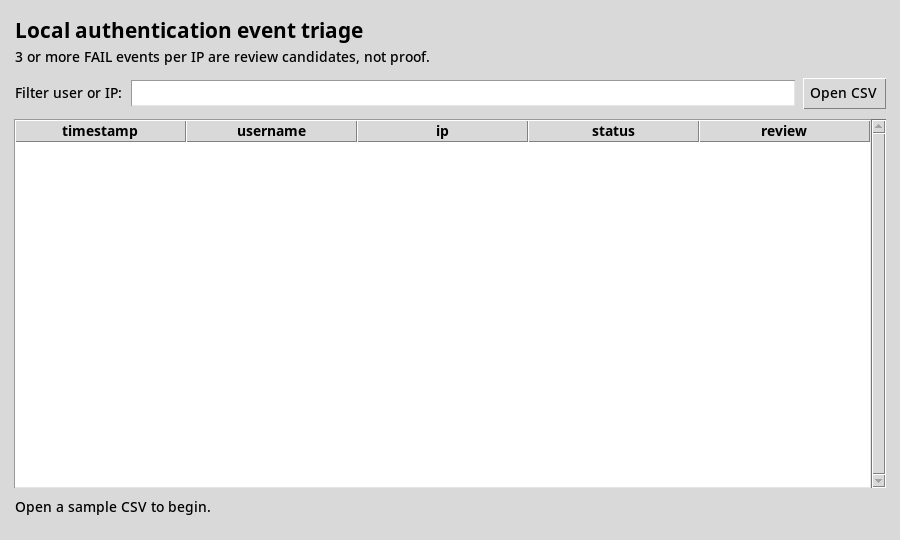
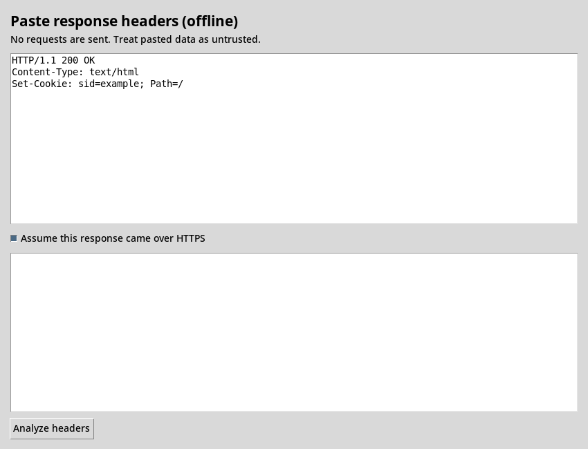
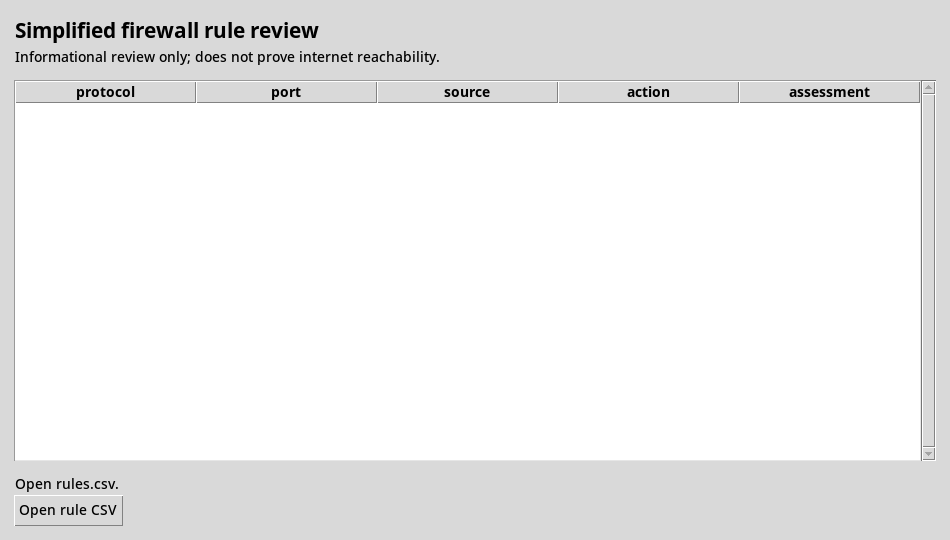
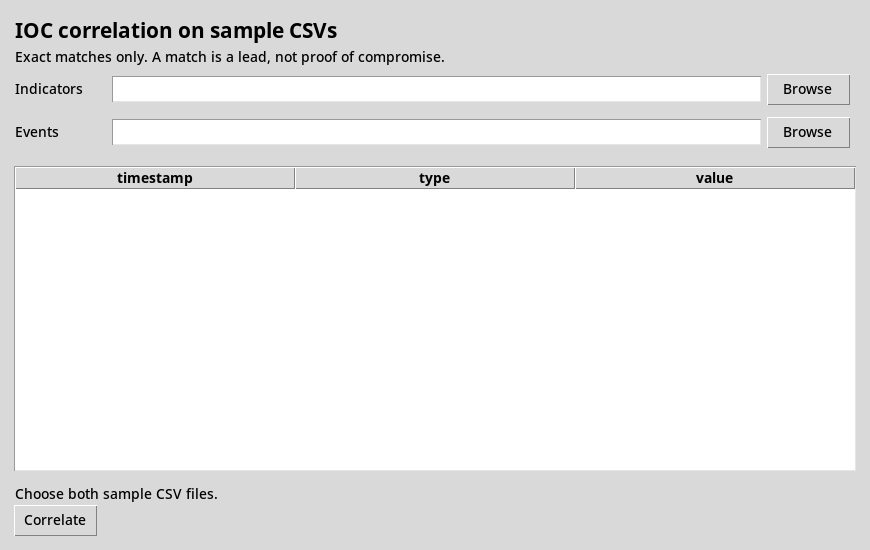
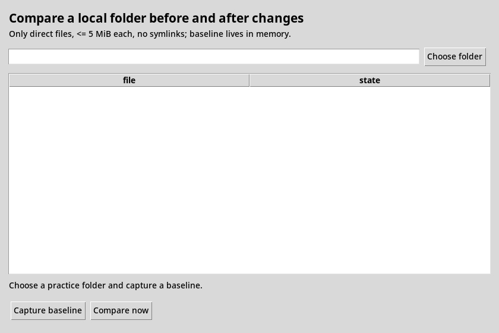
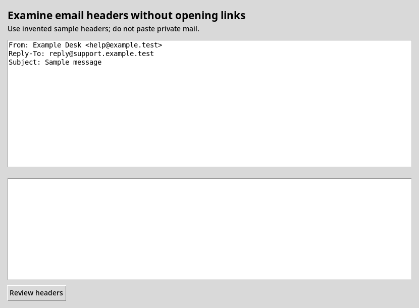
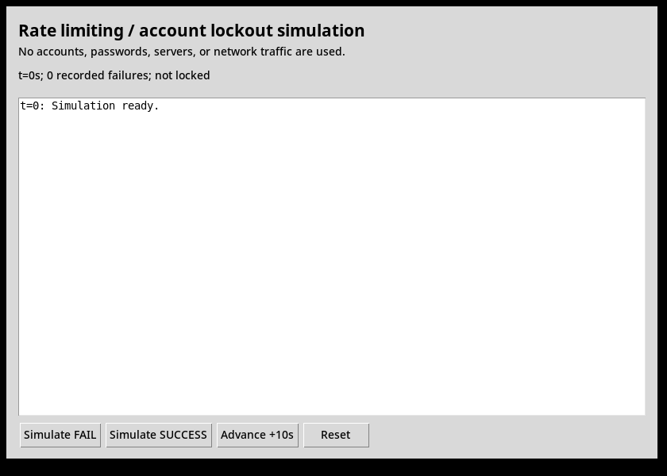

01 · 表紙
PYTHON / CYBERSECURITY GUI LABS / 精査改訂 v5
目で確認しながら学ぶ
セキュリティGUI 7作品
添付教材のダークモード、固定目次、コードコピー、章ごとの進行管理を踏襲した、Python + Tkinterによるオフライン中心の実習教材。
GUIをただ作るのではなく、「何が観測でき、何は推論できないか」を毎回言葉にします。ファイルやヘッダーを見て即座に危険と断定しない態度も、セキュリティ技術の一部です。
| # | 作品 | 目安 | 中心になる知識 |
|---|---|---|---|
| 01 | 認証ログの調査ボード | 80分 | SOCの一次調査やログトリアージ。アラートが「何を根拠として」付いたかを自分で説明する練習。 |
| 02 | HTTPヘッダー監査デスク | 80分 | Web診断の情報収集。欠けている設定を「検証すべき候補」としてまとめる練習。 |
| 03 | ファイアウォールルール可視化 | 85分 | 構成監査・ネットワークセキュリティ。0.0.0.0/0や::/0が何を意味するかをコードで体感する。 |
| 04 | IOC照合コンソール | 85分 | 脅威ハンティングやインシデント対応の入口。単なる一致と侵害の確証を区別する。 |
| 05 | ファイル改変検知ボード | 100分 | FIM（File Integrity Monitoring）の基礎。監視基準点と比較の意味を理解する。 |
| 06 | メールヘッダーの手がかり抽出 | 75分 | フィッシングメール初期分析。表示名を信用せず、まずヘッダーの構造を読む練習。 |
| 07 | ログイン試行制限シミュレーター | 75分 | 認証防御の設計検討。しきい値、時間窓、ロック中の扱い、解除後の状態を観察する。 |
教育用の架空データのみを使用。外部サーバーへの通信、実在サービスへのアクセス、アカウントへのログイン、ファイアウォールの設定変更は行いません。
02 · 本書の使い方
表示の読み方：CHECK・REVIEW・SEEN・INPUT ERROR
CHECKは設定や入力の再確認候補、REVIEWは文脈を調べる手がかり、SEENはある項目を認識したという事実、INPUT ERRORはデータ形式などが受け付けられなかったことを示します。どれも「攻撃成功」「安全保証」「侵害確定」を意味しません。まず同じ入力で再現し、何を計算して何を省略しているのかを説明してください。
読む → 作る → 観測する → 限界を説明する
- 作品ごとに「役割」「入力」「期待結果」「限界」を先に読む。
- STEP 01〜04のコードを上から順番に practice/ 内の1つの.pyへ書き足す。間違えて既存ファイル末尾へ完成版を重複貼付しない。
- 実行する前に、ファイル名とターミナルの現在地を確認する。GUIが開いたらサンプルを投入し、期待結果を比較する。
- 「値を追う表」で分岐・集計・状態遷移を説明し、章末の小さな改造課題で理解を確認する。
- 模範となる完成ソースは projects/ に入っている。付録Aで全文を見られる。
一からすべてを手入力するより、コードをSTEP単位でコピーし、自分で意味を確認してから変数や条件を少し修正する進め方を推奨。12時間以内に収めるための設計です。
上部の全文検索はCtrl+K、±は文字サイズ、折返しは長いコードの表示切替、集中表示は目次を隠す。各章末の完了チェックはブラウザーのlocalStorageへ保存を試みます。ブロックされた場合は保存されません。
ブラウザーで開くHTMLの場所と、ターミナルの作業ディレクトリは別です。コマンドは必ずZIPを展開したプロジェクトのルートから実行します。
03 · 準備・Linux・vim
環境とファイルを確認する
Linux（Arch/Mint/Kaliなど）のGUIセッションを想定しています。Python 3.10以上、tkinter、およびX11/Waylandの画面環境が必要です。依存ライブラリをpipで追加する必要はありません。
python3 --version
python3 -m tkinter
# A small Tk test window should open. Close it to continue.
python3 -m tkinter でウィンドウが出ない場合は、まずTk対応のPythonパッケージ、DISPLAY/Wayland、デスクトップセッションの有無を確認してください。Tkinter自体はPython標準のGUIバインディングですが、Linuxディストリビューションで別パッケージに分かれることがあります。
unzip cyber_gui_python_7projects_20261110.zip
cd cyber_gui_python_7projects_20261110
pwd
ls projects samples tests practice
python3 projects/01_auth_log_board.py
練習用コードをvimで作る
vim practice/01_auth_log_board.py
# In vim: press i, enter STEP 01-04 code, press Esc, then type :wq
python3 practice/01_auth_log_board.py
vimのiは挿入モード、Escは通常モード、:wqは保存して終了です。Pythonのインデント（字下げ）は通常スペース4個。タブとスペースを混ぜないでください。
重要：動作確認で変えるファイルは練習用のコピーにする
cp -r samples/integrity_folder practice/integrity_folder
vim practice/integrity_folder/config.txt
Project 05以外は付属サンプルを直接読み込むだけです。実習中は実在の顧客ログ・社内設定・個人メールなどを使わず、架空のファイルで試してください。
04 · PythonとGUIの基礎
Pythonの値が画面に出るまで
| 用語 | 役割 | 本教材の例 |
|---|---|---|
| 変数 | 値を指す名前 | events、search、model |
| リスト list | 順番をもつ複数の値 | fail_times、events |
| 辞書 dict | キーと値の組 | row["ip"]、baseline[name] |
| 集合 set | 重複しない値と所属判定 | IOCのlookup |
| 関数 def | ひとまとまりの処理 | read_events(path)、audit(headers, ...) |
| 条件 if | 条件に応じて分岐 | if len(result) >= 100: |
| 例外 try/except | エラー時の処理を決める | CSVが壊れたときのmessagebox |
| クラス class | 状態と処理をまとめる | Throttleの時計と履歴 |
| Tk / ttk | ウィンドウと部品 | Tk、Frame、Entry、Button、Treeview |
| コールバック | クリック後に呼ぶ関数 | command=open_file |
最小のGUIを頭の中で組み立てる
import tkinter as tk
from tkinter import ttk
root = tk.Tk()
root.title("Tiny Window")
ttk.Label(root, text="Hello GUI").pack(padx=20, pady=20)
root.mainloop()
tk.Tk()は最上位のウィンドウ。ttk.Labelは文字表示部品。pack()は部品を画面上に配置し、mainloop()は入力イベントを受け付けます。Tkの部品を作っただけでpackやgridを呼ばなければ画面へ配置されません。
辞書のrow["ip"]は「rowという辞書からipというキーの値を取り出す」という意味。Counterの集計、hashlibの計算、email.parserの構文解析のような本体処理は、GUIと分離して定義するのが理解とテストの近道です。
GUI部品を作るスレッドで巨大ファイルを同期処理すると、その間はイベントに応答しなくなります。本教材は入力の件数やサイズを制限し、短時間で終了する設計にしています。
型と式を具体例で読む：初めての人のための超入門
| 書き方 | 意味 | どう読むか |
|---|---|---|
| name = "alice" | 代入 | 文字列aliceを変数nameに持たせる。=は数学の等号ではなく、右辺の結果を左辺へ入れる。 |
| count = 3 | 整数 | 3は数値。"3"は文字列であり、数値比較には変換が必要な場合がある。 |
| ok = True | 真偽値 | True/FalseでON/OFFや条件の成立を表す。大文字で書く。 |
| names = ["a", "b"] | リスト | 順番のある複数の値。names[0]で最初の値を取り出す。 |
| row = {"ip": "192.0.2.1"} | 辞書 | 名前つきで値を保管し、row["ip"]で取り出す。 |
| for item in rows: | 繰り返し | rowsの要素を順番にitemへ入れて、その下の字下げした処理を繰り返す。 |
| if count >= 3: | 条件 | countが3以上なら、その下のインデント部分を実行する。 |
| def check(value): | 関数定義 | checkという処理を定義。呼び出すにはcheck(引数)を使う。 |
| return result | 戻り値 | 関数の呼び出し元へ結果を渡す。printのように画面へ文字を出すとは限らない。 |
| try: / except ValueError: | 例外処理 | 想定した入力エラーが起きたら、アプリを終了させる代わりの動作を指定。 |
| None | 値がない状態 | 空文字""や0とは別。CSVの項目が欠けたときにも現れうる。 |
| f"count={count}" | f文字列 | 波括弧内の変数値を文字列へ埋め込む。fのない文字列とは異なる。 |
GUIでよく間違える「命令と呼び出し」
button = ttk.Button(root, text="Run", command=run_task)
# command=run_task : call it after clicking
# command=run_task(): calls it immediately (usually wrong)
command=run_taskは「関数オブジェクトを登録する」という意味です。command=run_task()とすると、クリック前に関数が実行され、戻り値が登録されてしまいます。これはTkinter初心者が特につまずく点です。
インデントはPythonの構造そのものです。関数・if・forの次の行をスペース4個分下げます。STEP間の空行はあっても構いませんが、字下げを勝手に揃え直さないでください。
画面の表示とセキュリティ判断を混同しない
入力 → 検査 → 集計/比較 → 結果表示という4段階に分けて読みます。画面が「REVIEW」と表示しても、その先に人間の調査が必要です。スクリプトの設計どおりに動くことと、攻撃の有無を正しく判定できることは別の問題です。
共通の書き方を実例で読み解く（追加解説）
以下は7作品で繰り返し登場する記述です。単語を暗記するより「入力がどの変数に入り、どの処理で変わり、最後にどのGUI部品へ渡されるか」を追いましょう。
| 記述 | 意味 | 本教材での出番・注意 |
|---|---|---|
import csv | 標準ライブラリのCSV解析機能を読み込む。 | 01/03/04。区切りの解釈を手作業のsplitだけで済ませない。 |
def read_rules(path): | 処理を「関数」としてまとめる。引数pathは入力値。 | 03。画面処理から切り離すと、GUIを起動せずテストできる。 |
return result | 関数の呼び出し元に結果を返す。 | 戻り値はprintや画面表示とは違う。呼び出し側で受け取れる。 |
try: ... except ValueError: | 失敗する可能性のある処理と、予想した例外への対応を分ける。 | 全作品。例外を黙って握りつぶさず、入力がなぜ無効かを示す。 |
with Path(path).open(...) as f: | withブロックを抜けるとファイルを閉じるよう管理する。 | 01/03/04。閉じ忘れを避ける。内容が安全であることまでは保証しない。 |
for item in events: | リスト等から要素を一つずつ取り出す。 | 01/04。辞書itemのキーを使うと列の名前で参照できる。 |
value.strip() | 文字列の前後の空白を除く。 | 01/03/04。改行やスペースの掃除は「正しい値」の判定とは別。 |
lambda: scan_action(True) | クリックされたときにscan_actionを呼ぶ小さな関数。 | 05。command=scan_action(True) と書くと登録時に実行してしまう。 |
tk.StringVar() | GUIから読み書きできる文字列状態を持つ。 | 01/03/04/05/07。get()で取り出し、set()で更新。 |
ttk.Treeview(...) | 複数列のデータを表示するGUI部品。 | 01/03/04/05。表に表示されたという事実は「検知が正しい」証明ではない。 |
root.mainloop() | 画面操作（イベント）を待つループを起動。 | 全作品。クリック後にコールバックが呼ばれる。時間のかかる計算は画面を固める。 |
if __name__ == "__main__": | ファイルを直接起動した場合だけGUIを開始する。 | テストが関数をimportしても勝手にGUIが開かない理由。 |
学習時のコツ：GUIが思いどおりに動かなければ、①入力を読み込めたか、②解析関数の戻り値は何か、③結果のGUI再描画まで呼ばれたか、の順に分けて確認します。特にCSV列の位置やヘッダーの大文字小文字を混同しやすいので、文字列と辞書の違いを意識してください。
同じ記号でも意味が変わる：実際の7作品から読む
Pythonの記号は形だけで意味を決めない。隣の名前、括弧の位置、字下げ、式の種類まで見て初めて意味が確定する。以前の版では、一部の行について同じ記号に汎用的な説明を当てはめ、誤解を招く可能性があった。
| 具体的なコード | 正しい読み方 | 混同しやすい例 |
|---|---|---|
def summarize(events, filter_text=""): | defは関数定義。eventsが仮引数で、filter_text=""は省略時に空文字を使う宣言。ここでは代入文の実行や関数呼び出しは起きない。 | term = filter_text.casefold() の = は実際の代入。 |
ttk.Entry(controls, textvariable=search) | GUI部品の関数呼び出し。textvariable=searchはキーワード引数として設定対象と値を結ぶ。 | search = tk.StringVar() は変数にオブジェクトを保存する代入。 |
raise ValueError("Invalid IP") from error | fromは元例外を原因としてつなぐ構文。原因と新しい説明を両方保持する。 | from pathlib import Path の from はモジュールからの取り込み。 |
except ValueError as error: | asは捕まえた例外オブジェクトを error に結びつける。 | import tkinter as tk の as は別名。 |
with Path(path).open(...) as handle: | as handleは開いたファイルを handle として使う。with範囲を抜けるとファイルを閉じる。 | except ... as error は例外の受け取り。 |
COLUMNS = ("ip", "status") | 括弧はこの行でタプルをまとめる。, が要素の区切り。 | Counter(events) の括弧は呼び出す関数の引数。 |
{kind: set() for kind in TYPES} | {} は辞書内包表記。:はキーと値を区切る。set() は空集合を生成する。 | summary.set(...) はGUIの文字列を変更するメソッド。 |
before.keys() | after.keys() | 辞書ビューの | でキー集合の和集合を得る。 | os.O_RDONLY | os.O_NOFOLLOW はビットフラグを組み合わせる。 |
if rule["port"].lower() == "any" or int(rule["port"]) in INTERESTING_PORTS: | orは左が真なら右を実行しない短絡評価。anyのときは整数への変換に進まない。 | andは左が偽なら右を実行しない。 |
if self.now - t < WINDOW | tは過去の失敗時刻、self.nowは現在の仮想時刻。差が60未満の時刻だけ残す。 | 60秒ぴったり前の失敗は残らない。 |
一つの行を読んでも全体が分からないときは、行末の :、連続した丸括弧、行頭の字下げがどの範囲をまとめているかを先に確認する。特に内包表記の for / if は通常の繰り返し文の書き方とは見た目が似ていても、値を生成する式の一部である。
05 · 12時間以内の学習計画
目標は合計680分（11時間20分）。12時間の上限に対して40分の余裕を設けています。これはSTEPをコピーし、要所を自分で変更して学ぶ標準ルートの見積りであり、全文を一文字ずつタイピングする場合は延びることがあります。
| 順序 | 目安 | やること |
|---|---|---|
| 事前準備 | 35分 | 展開・Tkinter確認・vim操作 |
| Project 01 | 80分 | 認証ログを読み集計 |
| Project 02 | 80分 | ヘッダーを点検 |
| Project 03 | 85分 | ルールを評価 |
| 休憩① | 15分 | 画面から離れる |
| Project 04 | 85分 | IOCを照合 |
| Project 05 | 100分 | ファイルハッシュを比較 |
| 休憩② | 15分 | 画面から離れる |
| Project 06 | 75分 | メールを分析 |
| Project 07 | 75分 | 時刻を進めて試行制限 |
| 総復習とテスト | 35分 | 全テストを実行し気づきを記録 |
各作品に使う時間の内訳
1作品あたり「目的と安全上の限界を読む：10分」「STEPのコードを入力/コピーしながら説明を読む：40〜60分」「GUIでサンプルと異常入力を試す：15〜20分」「自分で1か所変更して復習：10分」を目安にします。進み方が遅い場合は写経量を減らし、観測と意味の理解を優先してください。
実習時間は個人差があります。12時間で終えることを優先するなら、予算時間が近づいた時点でコードは完成版に切り替え、理解・観測を続ける方法がおすすめです。
06 · 01 認証ログの調査ボード
PROJECT 01 / 80 MIN / PYTHON + TKINTER
認証ログの調査ボード
Auth Log Triage Board
何を学び、どこで使うか
認証成功・失敗のCSVを読み込み、送信元IPごとの失敗回数を集計し、GUIの表で優先調査候補を探す。
SOCの一次調査やログトリアージ。アラートが「何を根拠として」付いたかを自分で説明する練習。
何を入力し、何を観測するか
入力：samples/auth_events.csv。操作：Open CSV → usernameまたはIPで絞り込み。出力：件数とREVIEW列。
結果から言えること・限界
3回以上のFAILを含むIPを機械的に示すだけ。時間窓、NAT、地理情報、ユーザーごとの攻撃判定は未実装。
プログラムの全体像：最初に流れをつかむ
データの流れ：CSVを選ぶ → read_eventsで列と値を検査 → summarizeで全件のFAILを集計 → refreshで検索条件に合う行を表示 → クリック・入力のたびに再描画。
最初の操作：samples/auth_events.csvを選ぶ。列はtimestamp,username,ip,statusの4つで、FAILとSUCCESSは大文字が必要。IPには学習・文書用のアドレスを使用。
| 押さえるポイント | 丁寧な説明 |
|---|---|
| 辞書とリスト | eventsは「複数行を入れたリスト」、itemは「1行の列名と値を入れた辞書」。events[0]["ip"]は最初の行のIPを取り出す。 |
| 表示件数と集計対象 | 検索でbobだけが表示されても、REVIEWはCSV全体のFAIL回数で判定する。検索結果だけから集計すると、同じデータでも検索語で警告が変わる。 |
| IPと利用者 | 同じIPが3回失敗したことは分かっても、1人の攻撃者かは分からない。時刻もこの教材では文字列として保持するだけ。 |
以下の詳解は理解を深めるための補助資料です。標準の11時間20分コースでは、迷った行だけ参照し、基本はSTEPのコードを順に作って動かしてください。
完成GUIの画面（実際のTkinter起動画面）

先に覚える語句
| 用語 | やさしい説明 |
|---|---|
| CSV | Comma-Separated Values。行ごとに値を並べるテキスト形式。 |
| DictReader | 1行を「列名→値」の辞書として読み出す機能。 |
| Counter | 同じ値が何回現れたか数える辞書の一種。 |
| trace_add | 入力文字列の変更を検知しGUI更新関数を呼ぶ仕組み。 |
実装：STEPを順番に練習用ファイルへ追加
作成先：practice/01_auth_log_board.py。STEPを上から順に、コードの改行と字下げを保って一つのファイルに追加。途中で実行すると未定義の関数がある場合があるため、最後のSTEPまで入力してから起動してください。
STEP 01 · CSV読み取りと入力契約
csv.DictReaderは先頭行を列名として読み取る。ファイルの中身は信用せず、列名・行数・IPアドレス・FAIL/SUCCESS表記を先に検査する。
utf-8-sig はUTF-8ファイル先頭にBOMが付く場合にも列名が壊れにくい指定。MAX_ROWSは教材が巨大データで固まらないための上限。
"""Inspect a small local CSV of authentication events."""
import csv
import ipaddress
import tkinter as tk
from collections import Counter
from pathlib import Path
from tkinter import filedialog, messagebox, ttk
COLUMNS = ("timestamp", "username", "ip", "status")
VALID_STATUSES = {"FAIL", "SUCCESS"}
MAX_ROWS = 1000
MAX_CSV_BYTES = 1024 * 1024
def read_events(path):
"""Read bounded CSV data. Return validated event dictionaries."""
events = []
if Path(path).stat().st_size > MAX_CSV_BYTES:
raise ValueError("CSV file exceeds the 1 MiB teaching limit.")
with Path(path).open("r", encoding="utf-8-sig", newline="") as handle:
reader = csv.DictReader(handle)
if reader.fieldnames is None or len(reader.fieldnames) != len(COLUMNS) or set(reader.fieldnames) != set(COLUMNS):
raise ValueError("Expected columns: " + ", ".join(COLUMNS))
for row in reader:
if len(events) >= MAX_ROWS:
raise ValueError("Too many events (limit: 1000).")
if None in row or any(row.get(key) is None for key in COLUMNS):
raise ValueError("Broken CSV row.")
item = {key: row[key].strip() for key in COLUMNS}
if not item["timestamp"] or not item["username"]:
raise ValueError("Empty timestamp or username.")
try:
item["ip"] = str(ipaddress.ip_address(item["ip"]))
except ValueError as error:
raise ValueError("Invalid IP address in CSV.") from error
if item["status"] not in VALID_STATUSES:
raise ValueError("Status must be FAIL or SUCCESS.")
events.append(item)
return events
このSTEPの重要行を1つずつ読む
| 行 | 実際のコード | 何をしているか・なぜ必要か |
|---|---|---|
| 9 | COLUMNS = ("timestamp", "username", "ip", "status") | CSVに必須の4列をタプルで定義する。タプルは順序を持ち、原則として要素の追加・削除をしない型。 |
| 11 | MAX_ROWS = 1000 | 読み込む件数の上限。無制限に行を表示してGUIが反応しなくなる事態を避ける。 |
| 15 | def read_events(path): | open()は指定ファイルを読み取るだけで、インターネットへアクセスしない。読み込む列と値は検証が必要。 |
| 20 | with Path(path).open("r", encoding="utf-8-sig", newline="") as handle: | withを使うとブロック終了時にファイルを閉じる。encodingは読み取り文字コード、newlineはCSV用の改行処理。 |
| 21 | reader = csv.DictReader(handle) | 最初の行を「列名」とし、後続を辞書で取り出す。単なるsplit(",")では引用符を含むCSVを正しく扱いにくい。 |
| 22 | if reader.fieldnames is None or len(reader.fieldnames) != len(COLUMNS) or set(reader.fieldnames) != set(COLUMNS): | ヘッダー行がない、列が余分・不足・重複するなどの入力を拒否。データを集計する前の契約確認。 |
| 27 | if None in row or any(row.get(key) is None for key in COLUMNS): | 想定外の余分な項目がある行などを検出する。DictReaderの辞書にNoneキーが現れる場合がある。 |
| 29 | item = {key: row[key].strip() for key in COLUMNS} | 辞書内包表記。4列の値を1つずつ取り出し、両端の空白を落として新しい辞書へ入れる。 |
| 33 | item["ip"] = str(ipaddress.ip_address(item["ip"])) | IPv4とIPv6のアドレスとして解釈できるか検証し、表記を標準化する。IPが実際に使用中かは調べない。 |
ここまでのコード：付録Aで完成版の全文を確認。このSTEPは 1〜41 行です。
STEP 02 · 集計とGUIの骨格
Counterを用い、全イベントでIPごとの失敗回数を求める。画面に表示する行だけを絞り込んでも、警告の根拠となる件数まで変えない設計。
tk.Tk() が親ウィンドウ、Frameは部品の入れ物、Treeviewは一覧表、StringVarは値をGUIと結び付ける変数。pack(fill="both", expand=True) はウィンドウの伸縮に合わせて領域を広げる。
def summarize(events, filter_text=""):
"""Show per-IP failure counts in the complete dataset."""
failures = Counter(item["ip"] for item in events if item["status"] == "FAIL")
term = filter_text.casefold().strip()
visible = [item for item in events if term in item["username"].casefold()
or term in item["ip"].casefold()]
return visible, failures
def launch():
root = tk.Tk()
root.title("Auth Log Triage Board")
root.geometry("900x540")
events = []
search = tk.StringVar()
summary = tk.StringVar(value="Open a sample CSV to begin.")
frame = ttk.Frame(root, padding=14)
frame.pack(fill="both", expand=True)
ttk.Label(frame, text="Local authentication event triage", font=("Sans", 15, "bold")).pack(anchor="w")
ttk.Label(frame, text="3 or more FAIL events per IP are review candidates, not proof.").pack(anchor="w")
controls = ttk.Frame(frame)
controls.pack(fill="x", pady=10)
ttk.Label(controls, text="Filter user or IP:").pack(side="left")
entry = ttk.Entry(controls, textvariable=search)
entry.pack(side="left", fill="x", expand=True, padx=8)
table_frame = ttk.Frame(frame)
table_frame.pack(fill="both", expand=True)
table = ttk.Treeview(table_frame, columns=COLUMNS + ("review",), show="headings")
for name in COLUMNS + ("review",):
table.heading(name, text=name)
table.column(name, width=130, stretch=True)
scroll = ttk.Scrollbar(table_frame, orient="vertical", command=table.yview)
table.configure(yscrollcommand=scroll.set)
table.pack(side="left", fill="both", expand=True)
scroll.pack(side="right", fill="y")
ttk.Label(frame, textvariable=summary, wraplength=850).pack(anchor="w", pady=8)
このSTEPの重要行を1つずつ読む
| 行 | 実際のコード | 何をしているか・なぜ必要か |
|---|---|---|
| 44 | failures = Counter(item["ip"] for item in events if item["status"] == "FAIL") | FAILだけを数える。Counterは該当IPが初めて出たときも0から数え始められる。 |
| 45 | term = filter_text.casefold().strip() | 検索文字列を大文字・小文字の差が小さくなる形へ変換する。英字だけならlowerに近い。 |
| 46 | visible = [item for item in events if term in item["username"].casefold() | リスト内包表記。条件に合う行だけ別のリストへ集める。元データのeventsは変更しない。 |
| 69 | table = ttk.Treeview(table_frame, columns=COLUMNS + ("review",), show="headings") | 表を表示するGUI部品。columnsは内部の列ID、show="headings"は見出しだけを表示する指定。 |
ここまでのコード：付録Aで完成版の全文を確認。このSTEPは 42〜78 行です。
STEP 03 · イベントを表へ描画
refresh は表に存在する行を一旦消し、絞り込み条件に合う行を追加する。REVIEWは該当IPに失敗イベントが3件以上あるかだけで付く。
root.mainloop() はユーザーの操作を待つイベントループ。プログラムが固まっているわけではなく、クリックやキー入力に応答するために動いている。
def refresh(*_args):
visible, fails = summarize(events, search.get())
for item_id in table.get_children():
table.delete(item_id)
for item in visible:
flag = "REVIEW" if fails[item["ip"]] >= 3 else "-"
table.insert("", "end", values=tuple(item[key] for key in COLUMNS) + (flag,))
summary.set(f"{len(visible)} shown / {len(events)} total; "
f"{sum(count >= 3 for count in fails.values())} IPs with 3+ FAIL events")
このSTEPの重要行を1つずつ読む
| 行 | 実際のコード | 何をしているか・なぜ必要か |
|---|---|---|
| 79 | def refresh(*_args): | refreshはテーブル全行を描画し直す。元のCSVデータには書き戻さない。 |
| 81 | for item_id in table.get_children(): | 以前の表示行を一度消す。そうしないと検索のたびに過去の行が積み重なる。 |
| 84 | flag = "REVIEW" if fails[item["ip"]] >= 3 else "-" | 条件式。FAIL数が3以上ならREVIEW、それ以外は-という文字列を選ぶ。 |
ここまでのコード：付録Aで完成版の全文を確認。このSTEPは 79〜88 行です。
STEP 04 · CSVダイアログと起動条件
filedialog はユーザーがローカルCSVを選ぶ標準のファイルダイアログ。ファイルが不正でもアプリ全体を落とさず、messageboxで理由を表示して前の結果を保持する。
if __name__ == "__main__" の条件は「直接起動したときだけGUIを作る」指定。テストからファイルを読み込む場合は勝手に画面が開かない。
def open_file():
path = filedialog.askopenfilename(filetypes=[("CSV", "*.csv"), ("All", "*")])
if not path:
return
try:
loaded = read_events(path)
except (OSError, UnicodeError, ValueError, csv.Error) as error:
messagebox.showerror("CSV error", str(error))
return
events.clear()
events.extend(loaded)
refresh()
ttk.Button(controls, text="Open CSV", command=open_file).pack(side="left")
search.trace_add("write", refresh)
root.mainloop()
if __name__ == "__main__":
launch()
このSTEPの重要行を1つずつ読む
| 行 | 実際のコード | 何をしているか・なぜ必要か |
|---|---|---|
| 94 | loaded = read_events(path) | open()は指定ファイルを読み取るだけで、インターネットへアクセスしない。読み込む列と値は検証が必要。 |
| 103 | search.trace_add("write", refresh) | 入力欄の文字列が変わったときrefreshを呼ぶ。毎回「検索」ボタンを押させない工夫。 |
| 104 | root.mainloop() | イベントループがクリックや文字入力を待つ。GUIの処理は通常この呼び出し後にユーザー操作で実行される。 |
ここまでのコード：付録Aで完成版の全文を確認。このSTEPは 89〜108 行です。
実行して観測する
python3 projects/01_auth_log_board.py
# Or run the file you recreated in practice:
python3 practice/01_auth_log_board.py
| 操作 | 期待される観測 |
|---|---|
| Open CSVでサンプルを選ぶ | 6 shown / 6 total; 1 IPs with 3+ FAIL events。198.51.100.8 の各行にREVIEW。 |
| 検索欄へbob | 2 shown / 6 total。全体の失敗回数の計算は変わらない。 |
| CSVのFAILをFAILEDに変更 | エラーダイアログ。先ほど表示していた表は保持される。 |
途中の値を追う：自分で説明する
| 観測する場所 | そこで起きる変化 |
|---|---|
| 入力CSVの1行目 | alice / 198.51.100.8 / FAIL |
| Counterの値 | 198.51.100.8 → 3 |
| 判定 | 3 >= 3 → REVIEW |
| フィルターbob | bobの2行だけ表示、失敗の全体集計は保持 |
手を動かす追加実験：正常・境界・異常の3種類
| 実験 | 具体的な操作と予測 |
|---|---|
| 正常系 | aliceで絞ると4行表示。検索を空に戻すと6行に戻ることを確認。 |
| 境界値 | FAILのうち1行だけSUCCESSへ変更したコピーCSVを開くと、該当IPの失敗2回になりREVIEWが消える。 |
| 異常入力 | IPをnot-an-ipへ変更したコピーCSVではエラーが出て、以前の表が残ることを確認。 |
初学者が間違えやすいポイント
- 保存するファイルはpractice/の.py。CSVをpython3コマンドで実行しない。
- CSVのstatusをfail（小文字）へ変更すると仕様上エラーになる。
- 検索は削除操作ではなく表示フィルター。元のeventsは変化しない。
小さな改造課題
失敗回数の閾値を「3」から「4」に変え、REVIEWが消えることを説明する。さらに、固定閾値では誤検知が起きうる理由を1つ書く。
理解チェック
- コードのどこが入力検査か指差せるか。
- GUI操作を受け取る関数と、分析の本体関数を区別できるか。
- 結果から「言えないこと」を少なくとも1つ説明できるか。
コードを理解する実行トレース：CSVの行が判定に変わるまで
この追加項目は、時間に余裕があるときの補強用です。まず「入力 → 処理 → 表示」を追い、表示結果だけで結論を出さない習慣を身に付けましょう。
| 段階 | 処理の意味 |
|---|---|
| 入力 | samples/auth_events.csv を選ぶ。CSVヘッダーはtimestamp,username,ip,statusの4列。 |
| 解析 | read_events()が最大1000行を読み、IPをipaddressで正規化して辞書のリストにする。 |
| 集計 | summarize()はFAILだけをIPごとに合算する。SUCCESSの行はFAILのカウントを消さない。 |
| 描画 | 3回以上のFAILがあるIPの各行にはREVIEWを表示。検索フィルターで行が隠れても全体集計は変わらない。 |
具体的な確認：sampleの198.51.100.8にはFAILが3件、SUCCESSが1件ある。画面のREVIEWはそのIPの行に出るが、この事実だけでは攻撃と断定できない。
追加の小実験：検索欄にbobと入力しても、3回FAILのIP数は1のまま。検索がログの表示だけを絞り、全体集計を変えないことを観察する。
実務上の限界：CSVのtimestampは空でないことしか検査しない。時系列ソート、期間内の集計、アカウント別の閾値、攻撃元IPの裏付けは実装していない。
初心者メモ：辞書のitem['status']は1行の状態、Counterのfailuresは複数行の集計であり、役割が違う。
入門補強：CSVの1行が「辞書 → 集計 → REVIEW表示」へ変わる
入力ファイルを開く処理と、実際に危険かどうかの判断は別です。この教材では1000行・ファイルサイズ1 MiBを上限とし、壊れた形式は例外として扱います。CSVのタイムスタンプは空欄かどうかのみ確認し、日時の正当性や順序は検証しません。
| コード・概念 | 内部で何をしているか | 具体例と注意点 |
|---|---|---|
| csv.DictReader | 見出し行から列名を読み、次の行を {"timestamp": ..., "username": ...} の辞書に変換する。 | 列の順番を変えても列名が正しければ読める。列名の重複や余分な列は拒否する。 |
| ipaddress.ip_address | 「IPっぽい文字列」ではなくIPv4/IPv6として読めるかを検査する。 | 192.0.2.999 は不正。正常データ中の198.51.100.8は検証用アドレス。 |
| Counter | 各IPに対するFAILの数を数える。SUCCESSで失敗履歴をリセットする処理は入れていない。 | 198.51.100.8はFAILが3件・SUCCESSが1件なので、FAILの合計は3。 |
| refresh と trace_add | 検索文字が変わると画面表示だけを更新する。イベント配列と全件の集計は保持される。 | bobだけ表示しても、調査候補のIP数は1のまま。 |
自分で実行して説明する（追加・任意）
練習用CSVのstatusをFAIL→SUCCESSに1行だけ変更して開く。REVIEWが消える理由を「フィルターではなく全件Counterの値が2になったため」と説明できれば合格。
精読補講：集計範囲とフィルターを混同しない
まず結果を予測する
例えば198.51.100.8のFAILが3件で、検索結果にはそのうち1件だけ表示される場合でも、REVIEWは全体の3件を根拠に付く。検索欄を空に戻すと元の6行が再表示される。
その結果から言えないこと
read_events()は時刻の文字列が空でないことのみ検査する。異常な時刻でも件数へ加算されるため、時系列の調査をしたい場合は日時の形式検証が別途必要。
使い方：画面を操作する前に予想を1行書き、結果と違ったら該当STEPのif条件・関数の戻り値・GUI反映箇所へ戻る。時間目安を守る場合は任意の復習課題として扱う。
実測精読：ログの1行からREVIEW表示まで：値と範囲を追跡
架空の6件のCSVを読み込んだ結果を実行して確認した。検索は「行の表示」だけを絞り、FAIL回数を数える対象は元の全件である。
読解の順序：①コードの行番号を探す → ②左側に入る値を予想する → ③条件・関数呼び出しの結果を追う → ④GUI表示を確かめる → ⑤その表示から断定できないことも説明する。
| コード位置 | ここで読む構文・関数 | 処理を構成要素に分けて読む | 確認できる出力・注意点 |
|---|---|---|---|
| L020–023 | with Path(path).open(..., newline="") / csv.DictReader | newline=""はCSVパーサーに改行の解釈を任せる指定。DictReaderは列名から辞書を作り、読み込み時の処理終了でファイルが閉じられる。 | 必須列を4つすべて揃える。列名の順序は問わないが、重複列・余計な列は拒否される。 |
| L027–029 | None in row / row.get(key) is None / .strip() | CSVの余剰セルはNoneキーになり、足りないセルはNone値になり得る。両方を拒否したあとに前後の空白を除去する。 | この検査は時刻の書式やユーザー名の意味までは保証しない。 |
| L033–038 | ipaddress.ip_address / VALID_STATUSES / append | 入力IPを検証して標準的な表記に直し、FAILまたはSUCCESSだけを許可してリストへ追加する。 | 198.51.100.8のFAILが3件なら、そのIPは後でレビュー候補になる。 |
| L044–048 | Counter(...) / filter_text.casefold() | 全件のFAILについてIP別の回数を集計してから、文字列を大小文字を区別せずに検索する。 | bobで検索した表示は2件。表示外の198.51.100.8のFAIL回数は3のまま。 |
| L079–084 | fails[item["ip"]] >= 3 / table.insert | 各表示行のIPについて全件集計のFAIL件数を調べ、3件以上ならREVIEWと表示する。 | REVIEWは調査候補を示す目印。パスワード攻撃を立証しない。 |
| L087–105 | open_file / except / events.clear / events.extend | 選択後、CSVを完全に検証できたときだけ現在の一覧を新しいデータに置換する。 | 読み込み失敗時は古い一覧を残す。GUI上のエラー表示は例外を捕捉しているため。 |
重要：ここでの正常結果は、同梱サンプルと教材に実装した簡易ルールについての結果。実際の環境で安全・危険が確定するという意味ではない。
完成コードを全行で読む：01_auth_log_board.py の構文・記号・処理の意味
この章は 108 行の完成コードを、空行を除いて1行ずつ照合する辞書です。左の行番号は projects/01_auth_log_board.py と完全に一致します。「処理の意味」は文全体の目的、「構成要素」はその行に実際に現れる記号・名前・値の役割です。複数行にわたる条件式・内包表記は、同じ文の前後の行を併せて読んでください。コードを変更したら行番号は再びずれます。
特に理解したい5行を、値の流れまで分解
01. CSVを辞書へ変換
reader = csv.DictReader(handle)csvはCSVの区切りや引用符を解析する標準ライブラリ、DictReaderは先頭行を列名として各行を辞書にする。handleはopenで開いたファイル。戻り値readerはループで1行ずつ取り出すイテレータであり、まだ全行を読み終えていない。
02. 行の検証
if None in row or any(row.get(key) is None for key in COLUMNS):None in rowはDictReaderが余分な列をNoneキーへ入れた場合を検出。anyは必須4列のどれかで値が欠けている場合に真。空文字とNoneは別物なので、後で空欄も検査する。
03. 内包表記とCounter
failures = Counter(item["ip"] for item in events if item["status"] == "FAIL")丸括弧の中のfor...if...は、FAIL行に限定してIPを順に取り出すジェネレーター式。CounterはIPごとに出現回数を加算する。検索フィルター前のevents全体が集計対象。
04. 比較・条件式
flag = "REVIEW" if fails[item["ip"]] >= 3 else "-"Pythonの条件式は A if 条件 else B の順。fails[item["ip"]]は辞書のキーIPで件数を取得し、3以上ならREVIEW。ここでは時間窓も利用者別集計も実装していない。
05. コールバックの登録
search.trace_add("write", refresh)trace_addの"write"はStringVarの値が変わったことを知らせるイベント。refreshではなくrefresh()と渡すと、ここで関数が実行されてしまう。
STEP 01：1〜41行を順に読む（空行以外を全解説）
行番号・コードは完成ソースと一致。構文要素の説明は各行の文脈に合わせて補正した。ただし途中行や長い式は前後の行をまとめて読むこと。表の横スクロールはこの枠内のみでできる。
| 行 | 実際のコード | 何をしているか | 構成要素と記号の役割 |
|---|---|---|---|
| L001 | """Inspect a small local CSV of authentication events.""" | ドキュメント文字列。関数・クラス・モジュールの目的を人間と開発ツールに伝える。 | """Inspect a small local CSV of authentication events."""：文字列リテラル。引用符の内側がそのままデータとして扱われる（f文字列なら埋め込み式が評価される） |
| L002 | import csv | 必要な標準ライブラリをこのファイルで利用できるよう読み込む。 | import：モジュール・名前を読み込むcsv：CSV専用のPython標準ライブラリ |
| L003 | import ipaddress | 必要な標準ライブラリをこのファイルで利用できるよう読み込む。 | import：モジュール・名前を読み込むipaddress：IPアドレス・ネットワーク検査用ライブラリ |
| L004 | import tkinter as tk | 必要な標準ライブラリをこのファイルで利用できるよう読み込む。 | import：モジュール・名前を読み込むtkinter：画面を作る標準ライブラリas：読み込んだモジュール・名前に別名を付けるtk：tkinterの別名 |
| L005 | from collections import Counter | collectionsから必要な名前だけを読み込み、後続の行で使用できるようにする。 | from：モジュールから名前を取り込むcollections：コレクション操作の標準ライブラリimport：モジュール・名前を読み込むCounter：出現回数を集計する辞書の一種 |
| L006 | from pathlib import Path | pathlibから必要な名前だけを読み込み、後続の行で使用できるようにする。 | from：モジュールから名前を取り込むpathlib：パス処理を扱う標準ライブラリのモジュール名import：モジュール・名前を読み込むPath：パスを扱うオブジェクト |
| L007 | from tkinter import filedialog, messagebox, ttk | tkinterから必要な名前だけを読み込み、後続の行で使用できるようにする。 | from：モジュールから名前を取り込むtkinter：画面を作る標準ライブラリimport：モジュール・名前を読み込むfiledialog：ファイル・ディレクトリの選択ダイアログ,：引数・要素を区切るmessagebox：エラーなどを知らせる小窓,：引数・要素を区切るttk：見栄えを統一したGUI部品群 |
| L009 | COLUMNS = ("timestamp", "username", "ip", "status") | 右辺「('timestamp', 'username', 'ip', 'status')」を評価し、変数・属性「COLUMNS」へ保存する。 | COLUMNS：認証ログの必須列名=：右辺の式を計算し、結果を左辺の変数・属性・辞書要素へ代入する(：値・条件式・タプルなどをまとめる開始括弧"timestamp"：文字列リテラル。引用符の内側がそのままデータとして扱われる（f文字列なら埋め込み式が評価される）,：引数・要素を区切る"username"：文字列リテラル。引用符の内側がそのままデータとして扱われる（f文字列なら埋め込み式が評価される）,：引数・要素を区切る"ip"：文字列リテラル。引用符の内側がそのままデータとして扱われる（f文字列なら埋め込み式が評価される）,：引数・要素を区切る"status"：文字列リテラル。引用符の内側がそのままデータとして扱われる（f文字列なら埋め込み式が評価される）)：式や値のまとまりを閉じる |
| L010 | VALID_STATUSES = {"FAIL", "SUCCESS"} | 右辺「{'FAIL', 'SUCCESS'}」を評価し、変数・属性「VALID_STATUSES」へ保存する。 | VALID_STATUSES：許可するログ状態の集合=：右辺の式を計算し、結果を左辺の変数・属性・辞書要素へ代入する{：集合（重複しない値）を開始する"FAIL"：文字列リテラル。引用符の内側がそのままデータとして扱われる（f文字列なら埋め込み式が評価される）,：引数・要素を区切る"SUCCESS"：文字列リテラル。引用符の内側がそのままデータとして扱われる（f文字列なら埋め込み式が評価される）}：集合の範囲を閉じる |
| L011 | MAX_ROWS = 1000 | 右辺「1000」を評価し、変数・属性「MAX_ROWS」へ保存する。 | MAX_ROWS：CSVデータの行数上限=：右辺の式を計算し、結果を左辺の変数・属性・辞書要素へ代入する1000：数値リテラル。計算や条件に使う値 |
| L012 | MAX_CSV_BYTES = 1024 * 1024 | 右辺「1024 * 1024」を評価し、変数・属性「MAX_CSV_BYTES」へ保存する。 | MAX_CSV_BYTES：CSVの最大ファイルサイズ=：右辺の式を計算し、結果を左辺の変数・属性・辞書要素へ代入する1024：数値リテラル。計算や条件に使う値*：掛け算をする1024：数値リテラル。計算や条件に使う値 |
| L015 | def read_events(path): | 関数 read_events の定義。丸括弧内が入力、次の字下げされた範囲が実際の処理。ここではまだ実行されない。 | def：関数を定義する宣言。この時点では関数本体は通常実行されないread_events：CSVから認証イベントを検証して辞書リストとして返す関数(：関数定義の仮引数を列挙する開始括弧。実行時の呼び出しではないpath：対象CSV・ディレクトリ・ファイルを指定するパス)：関数定義で使う仮引数の列を閉じる:：後続の字下げした処理ブロックを始める |
| L016 | """Read bounded CSV data. Return validated event dictionaries.""" | ドキュメント文字列。関数・クラス・モジュールの目的を人間と開発ツールに伝える。 | """Read bounded CSV data. Return validated event dictionaries."""：文字列リテラル。引用符の内側がそのままデータとして扱われる（f文字列なら埋め込み式が評価される） |
| L017 | events = [] | 右辺「[]」を評価し、変数・属性「events」へ保存する。 | events：認証・IOCイベントを持つリスト=：右辺の式を計算し、結果を左辺の変数・属性・辞書要素へ代入する[：新しいリストまたはリスト内包表記を開始する]：リストまたはリスト内包表記を閉じる |
| L018 | if Path(path).stat().st_size > MAX_CSV_BYTES: | 条件式「Path(path).stat().st_size > MAX_CSV_BYTES」を評価し、真の場合だけ対応する字下げの処理を行う。 | if：後ろの条件が真なら処理するPath：パスを扱うオブジェクト(：関数やメソッドを呼び出すときの引数列を開始するpath：対象CSV・ディレクトリ・ファイルを指定するパス)：関数やメソッドに渡す引数の列を閉じる.：オブジェクトの属性・メソッドを参照するstat：ファイル情報取得・種別判定のAPI(：関数やメソッドを呼び出すときの引数列を開始する)：関数やメソッドに渡す引数の列を閉じる.：オブジェクトの属性・メソッドを参照するst_size：statが返すファイルサイズ（バイト単位）>：左が右より大きいか比較するMAX_CSV_BYTES：CSVの最大ファイルサイズ:：後続の字下げした処理ブロックを始める |
| L019 | raise ValueError("CSV file exceeds the 1 MiB teaching limit.") | 不正な入力や安全な継続ができない状態を検出し、例外で呼び出し元へ知らせる。 | raise：例外を発生させ処理を中断するValueError：受け取った値が要件に合わないときなどに使う例外クラス(：関数やメソッドを呼び出すときの引数列を開始する"CSV file exceeds the 1 MiB teaching limit."：文字列リテラル。引用符の内側がそのままデータとして扱われる（f文字列なら埋め込み式が評価される）)：関数やメソッドに渡す引数の列を閉じる |
| L020 | with Path(path).open("r", encoding="utf-8-sig", newline="") as handle: | ファイルなどのリソースを扱う範囲。途中でエラーになっても終了時のクローズを管理する。 | with：処理終了時の後片付けを管理するPath：パスを扱うオブジェクト(：関数やメソッドを呼び出すときの引数列を開始するpath：対象CSV・ディレクトリ・ファイルを指定するパス)：関数やメソッドに渡す引数の列を閉じる.：オブジェクトの属性・メソッドを参照するopen：ファイルを開く操作(：関数やメソッドを呼び出すときの引数列を開始する"r"：文字列リテラル。引用符の内側がそのままデータとして扱われる（f文字列なら埋め込み式が評価される）,：引数・要素を区切るencoding：読み書きに使用する文字エンコーディングの指定=：関数呼び出しのキーワード引数名と渡す値を結ぶ（代入文ではない）"utf-8-sig"：文字列リテラル。引用符の内側がそのままデータとして扱われる（f文字列なら埋め込み式が評価される）,：引数・要素を区切るnewline：CSV読み取り時の改行処理を制御するオプション=：関数呼び出しのキーワード引数名と渡す値を結ぶ（代入文ではない）""：文字列リテラル。引用符の内側がそのままデータとして扱われる（f文字列なら埋め込み式が評価される）)：関数やメソッドに渡す引数の列を閉じるas：withで確保したリソースを指定した変数名で参照するhandle：開いているファイルのPythonオブジェクト:：後続の字下げした処理ブロックを始める |
| L021 | reader = csv.DictReader(handle) | 右辺「csv.DictReader(handle)」を評価し、変数・属性「reader」へ保存する。 | reader：csv.DictReaderが返す、行を順番に取り出せる読み取り器=：右辺の式を計算し、結果を左辺の変数・属性・辞書要素へ代入するcsv：CSV専用のPython標準ライブラリ.：オブジェクトの属性・メソッドを参照するDictReader：CSVの各行を列名付きの辞書として読む(：関数やメソッドを呼び出すときの引数列を開始するhandle：開いているファイルのPythonオブジェクト)：関数やメソッドに渡す引数の列を閉じる |
| L022 | if reader.fieldnames is None or len(reader.fieldnames) != len(COLUMNS) or set(reader.fieldnames) != set(COLUMNS): | 条件式「reader.fieldnames is None or len(reader.fieldnames) != len(COLUMNS) or set(reader.fieldnames) != set(COLUMNS)」を評価し、真の場合だけ対応する字下げの処理を行う。 | if：後ろの条件が真なら処理するreader：csv.DictReaderが返す、行を順番に取り出せる読み取り器.：オブジェクトの属性・メソッドを参照するfieldnames：DictReaderが認識したCSV先頭行の列名リストis：値の同一性（同じオブジェクトか）を調べる。通常はNoneとの比較で使用None：値がないことを示す特殊な単一オブジェクトor：左側が真なら右側を評価しない短絡評価。結果は左右いずれかの値len：要素数を取得する組込み関数(：関数やメソッドを呼び出すときの引数列を開始するreader：csv.DictReaderが返す、行を順番に取り出せる読み取り器.：オブジェクトの属性・メソッドを参照するfieldnames：DictReaderが認識したCSV先頭行の列名リスト)：関数やメソッドに渡す引数の列を閉じる!=：左右の値が異なるか比較するlen：要素数を取得する組込み関数(：関数やメソッドを呼び出すときの引数列を開始するCOLUMNS：認証ログの必須列名)：関数やメソッドに渡す引数の列を閉じるor：左側が真なら右側を評価しない短絡評価。結果は左右いずれかの値set：重複しない要素を保持する組込みの集合setを作る(：関数やメソッドを呼び出すときの引数列を開始するreader：csv.DictReaderが返す、行を順番に取り出せる読み取り器.：オブジェクトの属性・メソッドを参照するfieldnames：DictReaderが認識したCSV先頭行の列名リスト)：関数やメソッドに渡す引数の列を閉じる!=：左右の値が異なるか比較するset：重複しない要素を保持する組込みの集合setを作る(：関数やメソッドを呼び出すときの引数列を開始するCOLUMNS：認証ログの必須列名)：関数やメソッドに渡す引数の列を閉じる:：後続の字下げした処理ブロックを始める |
| L023 | raise ValueError("Expected columns: " + ", ".join(COLUMNS)) | 不正な入力や安全な継続ができない状態を検出し、例外で呼び出し元へ知らせる。 | raise：例外を発生させ処理を中断するValueError：受け取った値が要件に合わないときなどに使う例外クラス(：関数やメソッドを呼び出すときの引数列を開始する"Expected columns: "：文字列リテラル。引用符の内側がそのままデータとして扱われる（f文字列なら埋め込み式が評価される）+：数値の加算・文字列/列の連結などに用いる", "：文字列リテラル。引用符の内側がそのままデータとして扱われる（f文字列なら埋め込み式が評価される）.：オブジェクトの属性・メソッドを参照するjoin：文字列の要素を区切り文字で結合するメソッド(：関数やメソッドを呼び出すときの引数列を開始するCOLUMNS：認証ログの必須列名)：関数やメソッドに渡す引数の列を閉じる)：関数やメソッドに渡す引数の列を閉じる |
| L024 | for row in reader: | 「reader」から要素を取り出し、「row」へ入れながら繰り返す。 | for：要素を一つずつ取り出す繰り返しrow：CSVの1行、GUIの横一列、またはループで扱う現在の行in：forが要素を順に取り出す対象を示すreader：csv.DictReaderが返す、行を順番に取り出せる読み取り器:：後続の字下げした処理ブロックを始める |
| L025 | if len(events) >= MAX_ROWS: | 条件式「len(events) >= MAX_ROWS」を評価し、真の場合だけ対応する字下げの処理を行う。 | if：後ろの条件が真なら処理するlen：要素数を取得する組込み関数(：関数やメソッドを呼び出すときの引数列を開始するevents：認証・IOCイベントを持つリスト)：関数やメソッドに渡す引数の列を閉じる>=：左が右以上か比較するMAX_ROWS：CSVデータの行数上限:：後続の字下げした処理ブロックを始める |
| L026 | raise ValueError("Too many events (limit: 1000).") | 不正な入力や安全な継続ができない状態を検出し、例外で呼び出し元へ知らせる。 | raise：例外を発生させ処理を中断するValueError：受け取った値が要件に合わないときなどに使う例外クラス(：関数やメソッドを呼び出すときの引数列を開始する"Too many events (limit: 1000)."：文字列リテラル。引用符の内側がそのままデータとして扱われる（f文字列なら埋め込み式が評価される）)：関数やメソッドに渡す引数の列を閉じる |
| L027 | if None in row or any(row.get(key) is None for key in COLUMNS): | 条件式「None in row or any((row.get(key) is None for key in COLUMNS))」を評価し、真の場合だけ対応する字下げの処理を行う。 | if：後ろの条件が真なら処理するNone：値がないことを示す特殊な単一オブジェクトin：右側の集合・列・辞書などに値が含まれるかを調べるrow：CSVの1行、GUIの横一列、またはループで扱う現在の行or：左側が真なら右側を評価しない短絡評価。結果は左右いずれかの値any：どれか一つでも真か確認する関数(：関数やメソッドを呼び出すときの引数列を開始するrow：CSVの1行、GUIの横一列、またはループで扱う現在の行.：オブジェクトの属性・メソッドを参照するget：辞書キーまたはGUI部品の現在値を読み出すメソッド(：関数やメソッドを呼び出すときの引数列を開始するkey：辞書から取り出すキーや処理中の列名)：関数やメソッドに渡す引数の列を閉じるis：値の同一性（同じオブジェクトか）を調べる。通常はNoneとの比較で使用None：値がないことを示す特殊な単一オブジェクトfor：内包表記・生成式の一部で要素を列挙するkey：辞書から取り出すキーや処理中の列名in：forが要素を順に取り出す対象を示すCOLUMNS：認証ログの必須列名)：関数やメソッドに渡す引数の列を閉じる:：後続の字下げした処理ブロックを始める |
| L028 | raise ValueError("Broken CSV row.") | 不正な入力や安全な継続ができない状態を検出し、例外で呼び出し元へ知らせる。 | raise：例外を発生させ処理を中断するValueError：受け取った値が要件に合わないときなどに使う例外クラス(：関数やメソッドを呼び出すときの引数列を開始する"Broken CSV row."：文字列リテラル。引用符の内側がそのままデータとして扱われる（f文字列なら埋め込み式が評価される）)：関数やメソッドに渡す引数の列を閉じる |
| L029 | item = {key: row[key].strip() for key in COLUMNS} | 右辺「{key: row[key].strip() for key in COLUMNS}」を評価し、変数・属性「item」へ保存する。 | item：繰り返し処理の中で取り出している1件の辞書・値・イベント=：右辺の式を計算し、結果を左辺の変数・属性・辞書要素へ代入する{：辞書／辞書内包表記を開始するkey：辞書から取り出すキーや処理中の列名:：辞書のキーと値を区切るrow：CSVの1行、GUIの横一列、またはループで扱う現在の行[：辞書のキー・リストの位置などによる要素参照を始めるkey：辞書から取り出すキーや処理中の列名]：要素参照のキー・添字の範囲を閉じる.：オブジェクトの属性・メソッドを参照するstrip：文字列の前後の余分な文字を削る(：関数やメソッドを呼び出すときの引数列を開始する)：関数やメソッドに渡す引数の列を閉じるfor：内包表記・生成式の一部で要素を列挙するkey：辞書から取り出すキーや処理中の列名in：forが要素を順に取り出す対象を示すCOLUMNS：認証ログの必須列名}：辞書または辞書内包表記を閉じる |
| L030 | if not item["timestamp"] or not item["username"]: | 条件式「not item['timestamp'] or not item['username']」を評価し、真の場合だけ対応する字下げの処理を行う。 | if：後ろの条件が真なら処理するnot：条件を否定する。not inと並べると「含まない」比較になるitem：繰り返し処理の中で取り出している1件の辞書・値・イベント[：辞書のキー・リストの位置などによる要素参照を始める"timestamp"：文字列リテラル。引用符の内側がそのままデータとして扱われる（f文字列なら埋め込み式が評価される）]：要素参照のキー・添字の範囲を閉じるor：左側が真なら右側を評価しない短絡評価。結果は左右いずれかの値not：条件を否定する。not inと並べると「含まない」比較になるitem：繰り返し処理の中で取り出している1件の辞書・値・イベント[：辞書のキー・リストの位置などによる要素参照を始める"username"：文字列リテラル。引用符の内側がそのままデータとして扱われる（f文字列なら埋め込み式が評価される）]：要素参照のキー・添字の範囲を閉じる:：後続の字下げした処理ブロックを始める |
| L031 | raise ValueError("Empty timestamp or username.") | 不正な入力や安全な継続ができない状態を検出し、例外で呼び出し元へ知らせる。 | raise：例外を発生させ処理を中断するValueError：受け取った値が要件に合わないときなどに使う例外クラス(：関数やメソッドを呼び出すときの引数列を開始する"Empty timestamp or username."：文字列リテラル。引用符の内側がそのままデータとして扱われる（f文字列なら埋め込み式が評価される）)：関数やメソッドに渡す引数の列を閉じる |
| L032 | try: | この下で失敗する可能性のある処理を実行し、指定の例外が起きたらexceptへ移る。 | try：失敗の可能性を扱うブロックを始める:：後続の字下げした処理ブロックを始める |
| L033 | item["ip"] = str(ipaddress.ip_address(item["ip"])) | 右辺「str(ipaddress.ip_address(item['ip']))」を評価し、変数・属性「item['ip']」へ保存する。 | item：繰り返し処理の中で取り出している1件の辞書・値・イベント[：辞書のキー・リストの位置などによる要素参照を始める"ip"：文字列リテラル。引用符の内側がそのままデータとして扱われる（f文字列なら埋め込み式が評価される）]：要素参照のキー・添字の範囲を閉じる=：右辺の式を計算し、結果を左辺の変数・属性・辞書要素へ代入するstr：文字列型・文字列への変換(：関数やメソッドを呼び出すときの引数列を開始するipaddress：IPアドレス・ネットワーク検査用ライブラリ.：オブジェクトの属性・メソッドを参照するip_address：単一IPアドレスの構文・形式を検査する(：関数やメソッドを呼び出すときの引数列を開始するitem：繰り返し処理の中で取り出している1件の辞書・値・イベント[：辞書のキー・リストの位置などによる要素参照を始める"ip"：文字列リテラル。引用符の内側がそのままデータとして扱われる（f文字列なら埋め込み式が評価される）]：要素参照のキー・添字の範囲を閉じる)：関数やメソッドに渡す引数の列を閉じる)：関数やメソッドに渡す引数の列を閉じる |
| L034 | except ValueError as error: | tryブロックで括弧内の指定種類の例外が起こった場合に処理を引き受ける。as errorとあれば例外オブジェクトに名前を付ける。 | except：指定種類の例外を受け止めるValueError：受け取った値が要件に合わないときなどに使う例外クラスas：発生した例外を指定した変数名で受け取るerror：exceptで捕捉した例外オブジェクト。str(error)でメッセージを取得する:：後続の字下げした処理ブロックを始める |
| L035 | raise ValueError("Invalid IP address in CSV.") from error | 不正な入力や安全な継続ができない状態を検出し、例外で呼び出し元へ知らせる。 | raise：例外を発生させ処理を中断するValueError：受け取った値が要件に合わないときなどに使う例外クラス(：関数やメソッドを呼び出すときの引数列を開始する"Invalid IP address in CSV."：文字列リテラル。引用符の内側がそのままデータとして扱われる（f文字列なら埋め込み式が評価される）)：関数やメソッドに渡す引数の列を閉じるfrom：新しい例外を原因の例外とつなぐ（raise ... from ...）error：exceptで捕捉した例外オブジェクト。str(error)でメッセージを取得する |
| L036 | if item["status"] not in VALID_STATUSES: | 条件式「item['status'] not in VALID_STATUSES」を評価し、真の場合だけ対応する字下げの処理を行う。 | if：後ろの条件が真なら処理するitem：繰り返し処理の中で取り出している1件の辞書・値・イベント[：辞書のキー・リストの位置などによる要素参照を始める"status"：文字列リテラル。引用符の内側がそのままデータとして扱われる（f文字列なら埋め込み式が評価される）]：要素参照のキー・添字の範囲を閉じるnot：条件を否定する。not inと並べると「含まない」比較になるin：not in全体で右辺に含まれないかを調べるVALID_STATUSES：許可するログ状態の集合:：後続の字下げした処理ブロックを始める |
| L037 | raise ValueError("Status must be FAIL or SUCCESS.") | 不正な入力や安全な継続ができない状態を検出し、例外で呼び出し元へ知らせる。 | raise：例外を発生させ処理を中断するValueError：受け取った値が要件に合わないときなどに使う例外クラス(：関数やメソッドを呼び出すときの引数列を開始する"Status must be FAIL or SUCCESS."：文字列リテラル。引用符の内側がそのままデータとして扱われる（f文字列なら埋め込み式が評価される）)：関数やメソッドに渡す引数の列を閉じる |
| L038 | events.append(item) | 式「events.append(item)」を評価する。メソッドの呼び出しならGUIやリストなどを操作する。 | events：認証・IOCイベントを持つリスト.：オブジェクトの属性・メソッドを参照するappend：リストの末尾に一つ追加する(：関数やメソッドを呼び出すときの引数列を開始するitem：繰り返し処理の中で取り出している1件の辞書・値・イベント)：関数やメソッドに渡す引数の列を閉じる |
| L039 | return events | 関数の結果「events」を呼び出し元へ返す。以降の処理は行わない。 | return：値を呼び出し元へ返し関数を終えるevents：認証・IOCイベントを持つリスト |
STEP 02：42〜78行を順に読む（空行以外を全解説）
行番号・コードは完成ソースと一致。構文要素の説明は各行の文脈に合わせて補正した。ただし途中行や長い式は前後の行をまとめて読むこと。表の横スクロールはこの枠内のみでできる。
| 行 | 実際のコード | 何をしているか | 構成要素と記号の役割 |
|---|---|---|---|
| L042 | def summarize(events, filter_text=""): | 関数 summarize の定義。丸括弧内が入力、次の字下げされた範囲が実際の処理。ここではまだ実行されない。 | def：関数を定義する宣言。この時点では関数本体は通常実行されないsummarize：認証ログの集計と表示対象を計算する(：関数定義の仮引数を列挙する開始括弧。実行時の呼び出しではないevents：認証・IOCイベントを持つリスト,：引数・要素を区切るfilter_text：検索したいユーザー名またはIPを示す任意文字列=：関数定義の仮引数に省略時の値を指定する（代入文ではない）""：文字列リテラル。引用符の内側がそのままデータとして扱われる（f文字列なら埋め込み式が評価される）)：関数定義で使う仮引数の列を閉じる:：後続の字下げした処理ブロックを始める |
| L043 | """Show per-IP failure counts in the complete dataset.""" | ドキュメント文字列。関数・クラス・モジュールの目的を人間と開発ツールに伝える。 | """Show per-IP failure counts in the complete dataset."""：文字列リテラル。引用符の内側がそのままデータとして扱われる（f文字列なら埋め込み式が評価される） |
| L044 | failures = Counter(item["ip"] for item in events if item["status"] == "FAIL") | 右辺「Counter((item['ip'] for item in events if item['status'] == 'FAIL'))」を評価し、変数・属性「failures」へ保存する。 | failures：IPごとの失敗件数の集計=：右辺の式を計算し、結果を左辺の変数・属性・辞書要素へ代入するCounter：出現回数を集計する辞書の一種(：関数やメソッドを呼び出すときの引数列を開始するitem：繰り返し処理の中で取り出している1件の辞書・値・イベント[：辞書のキー・リストの位置などによる要素参照を始める"ip"：文字列リテラル。引用符の内側がそのままデータとして扱われる（f文字列なら埋め込み式が評価される）]：要素参照のキー・添字の範囲を閉じるfor：内包表記・生成式の一部で要素を列挙するitem：繰り返し処理の中で取り出している1件の辞書・値・イベントin：forが要素を順に取り出す対象を示すevents：認証・IOCイベントを持つリストif：内包表記・生成式で条件に合う要素だけ選ぶitem：繰り返し処理の中で取り出している1件の辞書・値・イベント[：辞書のキー・リストの位置などによる要素参照を始める"status"：文字列リテラル。引用符の内側がそのままデータとして扱われる（f文字列なら埋め込み式が評価される）]：要素参照のキー・添字の範囲を閉じる==：左右の値が等しいか比較する"FAIL"：文字列リテラル。引用符の内側がそのままデータとして扱われる（f文字列なら埋め込み式が評価される）)：関数やメソッドに渡す引数の列を閉じる |
| L045 | term = filter_text.casefold().strip() | 右辺「filter_text.casefold().strip()」を評価し、変数・属性「term」へ保存する。 | term：大小文字を区別しない照合に整えた検索文字列=：右辺の式を計算し、結果を左辺の変数・属性・辞書要素へ代入するfilter_text：検索したいユーザー名またはIPを示す任意文字列.：オブジェクトの属性・メソッドを参照するcasefold：大文字小文字の比較向けに文字列を正規化する(：関数やメソッドを呼び出すときの引数列を開始する)：関数やメソッドに渡す引数の列を閉じる.：オブジェクトの属性・メソッドを参照するstrip：文字列の前後の余分な文字を削る(：関数やメソッドを呼び出すときの引数列を開始する)：関数やメソッドに渡す引数の列を閉じる |
| L046 | visible = [item for item in events if term in item["username"].casefold() | 右辺「[item for item in events if term in item['username'].casefold() or term in item['ip'].casefold()]」を評価し、変数・属性「visible」へ保存する。 | visible：検索条件で表示するイベント行だけを持つリスト=：右辺の式を計算し、結果を左辺の変数・属性・辞書要素へ代入する[：新しいリストまたはリスト内包表記を開始するitem：繰り返し処理の中で取り出している1件の辞書・値・イベントfor：内包表記・生成式の一部で要素を列挙するitem：繰り返し処理の中で取り出している1件の辞書・値・イベントin：forが要素を順に取り出す対象を示すevents：認証・IOCイベントを持つリストif：内包表記・生成式で条件に合う要素だけ選ぶterm：大小文字を区別しない照合に整えた検索文字列in：右側の集合・列・辞書などに値が含まれるかを調べるitem：繰り返し処理の中で取り出している1件の辞書・値・イベント[：辞書のキー・リストの位置などによる要素参照を始める"username"：文字列リテラル。引用符の内側がそのままデータとして扱われる（f文字列なら埋め込み式が評価される）]：要素参照のキー・添字の範囲を閉じる.：オブジェクトの属性・メソッドを参照するcasefold：大文字小文字の比較向けに文字列を正規化する(：関数やメソッドを呼び出すときの引数列を開始する)：関数やメソッドに渡す引数の列を閉じる |
| L047 | or term in item["ip"].casefold()] | 【前行からの継続】この行だけで完結する命令ではなく、前後の括弧や字下げと合わせて読む。右辺「[item for item in events if term in item['username'].casefold() or term in item['ip'].casefold()]」を評価し、変数・属性「visible」へ保存する。 | or：左側が真なら右側を評価しない短絡評価。結果は左右いずれかの値term：大小文字を区別しない照合に整えた検索文字列in：右側の集合・列・辞書などに値が含まれるかを調べるitem：繰り返し処理の中で取り出している1件の辞書・値・イベント[：辞書のキー・リストの位置などによる要素参照を始める"ip"：文字列リテラル。引用符の内側がそのままデータとして扱われる（f文字列なら埋め込み式が評価される）]：要素参照のキー・添字の範囲を閉じる.：オブジェクトの属性・メソッドを参照するcasefold：大文字小文字の比較向けに文字列を正規化する(：関数やメソッドを呼び出すときの引数列を開始する)：関数やメソッドに渡す引数の列を閉じる]：リストまたはリスト内包表記を閉じる |
| L048 | return visible, failures | 関数の結果「(visible, failures)」を呼び出し元へ返す。以降の処理は行わない。 | return：値を呼び出し元へ返し関数を終えるvisible：検索条件で表示するイベント行だけを持つリスト,：引数・要素を区切るfailures：IPごとの失敗件数の集計 |
| L051 | def launch(): | 関数 launch の定義。丸括弧内が入力、次の字下げされた範囲が実際の処理。ここではまだ実行されない。 | def：関数を定義する宣言。この時点では関数本体は通常実行されないlaunch：GUI画面を生成して動かす関数(：関数定義の仮引数を列挙する開始括弧。実行時の呼び出しではない)：関数定義で使う仮引数の列を閉じる:：後続の字下げした処理ブロックを始める |
| L052 | root = tk.Tk() | 右辺「tk.Tk()」を評価し、変数・属性「root」へ保存する。 | root：最上位のGUIウィンドウ、または走査するフォルダ=：右辺の式を計算し、結果を左辺の変数・属性・辞書要素へ代入するtk：tkinterの別名.：オブジェクトの属性・メソッドを参照するTk：トップレベルのGUI画面を作る(：関数やメソッドを呼び出すときの引数列を開始する)：関数やメソッドに渡す引数の列を閉じる |
| L053 | root.title("Auth Log Triage Board") | 式「root.title('Auth Log Triage Board')」を評価する。メソッドの呼び出しならGUIやリストなどを操作する。 | root：最上位のGUIウィンドウ、または走査するフォルダ.：オブジェクトの属性・メソッドを参照するtitle：ウィンドウのタイトル文字列を設定するメソッド(：関数やメソッドを呼び出すときの引数列を開始する"Auth Log Triage Board"：文字列リテラル。引用符の内側がそのままデータとして扱われる（f文字列なら埋め込み式が評価される）)：関数やメソッドに渡す引数の列を閉じる |
| L054 | root.geometry("900x540") | 式「root.geometry('900x540')」を評価する。メソッドの呼び出しならGUIやリストなどを操作する。 | root：最上位のGUIウィンドウ、または走査するフォルダ.：オブジェクトの属性・メソッドを参照するgeometry：ウィンドウの初期幅・高さを指定するメソッド(：関数やメソッドを呼び出すときの引数列を開始する"900x540"：文字列リテラル。引用符の内側がそのままデータとして扱われる（f文字列なら埋め込み式が評価される）)：関数やメソッドに渡す引数の列を閉じる |
| L055 | events = [] | 右辺「[]」を評価し、変数・属性「events」へ保存する。 | events：認証・IOCイベントを持つリスト=：右辺の式を計算し、結果を左辺の変数・属性・辞書要素へ代入する[：新しいリストまたはリスト内包表記を開始する]：リストまたはリスト内包表記を閉じる |
| L056 | search = tk.StringVar() | 右辺「tk.StringVar()」を評価し、変数・属性「search」へ保存する。 | search：GUIの検索入力を管理するStringVar=：右辺の式を計算し、結果を左辺の変数・属性・辞書要素へ代入するtk：tkinterの別名.：オブジェクトの属性・メソッドを参照するStringVar：GUIで共有する文字列の状態(：関数やメソッドを呼び出すときの引数列を開始する)：関数やメソッドに渡す引数の列を閉じる |
| L057 | summary = tk.StringVar(value="Open a sample CSV to begin.") | 右辺「tk.StringVar(value='Open a sample CSV to begin.')」を評価し、変数・属性「summary」へ保存する。 | summary：集計結果を表示するGUI状態=：右辺の式を計算し、結果を左辺の変数・属性・辞書要素へ代入するtk：tkinterの別名.：オブジェクトの属性・メソッドを参照するStringVar：GUIで共有する文字列の状態(：関数やメソッドを呼び出すときの引数列を開始するvalue：現在検査・表示・設定している値。データの種類は呼び出し元で決まる=：関数呼び出しのキーワード引数名と渡す値を結ぶ（代入文ではない）"Open a sample CSV to begin."：文字列リテラル。引用符の内側がそのままデータとして扱われる（f文字列なら埋め込み式が評価される）)：関数やメソッドに渡す引数の列を閉じる |
| L058 | frame = ttk.Frame(root, padding=14) | 右辺「ttk.Frame(root, padding=14)」を評価し、変数・属性「frame」へ保存する。 | frame：GUI部品を入れる枠（ttk.Frame）の参照=：右辺の式を計算し、結果を左辺の変数・属性・辞書要素へ代入するttk：見栄えを統一したGUI部品群.：オブジェクトの属性・メソッドを参照するFrame：部品の配置をまとめる枠(：関数やメソッドを呼び出すときの引数列を開始するroot：最上位のGUIウィンドウ、または走査するフォルダ,：引数・要素を区切るpadding：GUIフレームの内側に確保する余白の量=：関数呼び出しのキーワード引数名と渡す値を結ぶ（代入文ではない）14：数値リテラル。計算や条件に使う値)：関数やメソッドに渡す引数の列を閉じる |
| L059 | frame.pack(fill="both", expand=True) | 式「frame.pack(fill='both', expand=True)」を評価する。メソッドの呼び出しならGUIやリストなどを操作する。 | frame：GUI部品を入れる枠（ttk.Frame）の参照.：オブジェクトの属性・メソッドを参照するpack：GUI部品を指定位置に配置する(：関数やメソッドを呼び出すときの引数列を開始するfill：pack配置でGUI部品をx方向・y方向などに伸ばす指定=：関数呼び出しのキーワード引数名と渡す値を結ぶ（代入文ではない）"both"：文字列リテラル。引用符の内側がそのままデータとして扱われる（f文字列なら埋め込み式が評価される）,：引数・要素を区切るexpand：親の余った領域をGUI部品に割り振るかを指定する=：関数呼び出しのキーワード引数名と渡す値を結ぶ（代入文ではない）True：真を表す真偽値)：関数やメソッドに渡す引数の列を閉じる |
| L060 | ttk.Label(frame, text="Local authentication event triage", font=("Sans", 15, "bold")).pack(anchor="w") | 式「ttk.Label(frame, text='Local authentication event triage', font=('Sans', 15, 'bold')).pack(anchor='w')」を評価する。メソッドの呼び出しならGUIやリストなどを操作する。 | ttk：見栄えを統一したGUI部品群.：オブジェクトの属性・メソッドを参照するLabel：テキスト表示部品(：関数やメソッドを呼び出すときの引数列を開始するframe：GUI部品を入れる枠（ttk.Frame）の参照,：引数・要素を区切るtext：入力または表示に使う文字列。GUIのtext属性として現れる場合は画面に表示するラベル=：関数呼び出しのキーワード引数名と渡す値を結ぶ（代入文ではない）"Local authentication event triage"：文字列リテラル。引用符の内側がそのままデータとして扱われる（f文字列なら埋め込み式が評価される）,：引数・要素を区切るfont：表示に用いるフォントの種類・大きさ・太さ=：関数呼び出しのキーワード引数名と渡す値を結ぶ（代入文ではない）(：値・条件式・タプルなどをまとめる開始括弧"Sans"：文字列リテラル。引用符の内側がそのままデータとして扱われる（f文字列なら埋め込み式が評価される）,：引数・要素を区切る15：数値リテラル。計算や条件に使う値,：引数・要素を区切る"bold"：文字列リテラル。引用符の内側がそのままデータとして扱われる（f文字列なら埋め込み式が評価される）)：式や値のまとまりを閉じる)：関数やメソッドに渡す引数の列を閉じる.：オブジェクトの属性・メソッドを参照するpack：GUI部品を指定位置に配置する(：関数やメソッドを呼び出すときの引数列を開始するanchor：部品をどちらの位置に寄せるか（例えばwは左寄せ）=：関数呼び出しのキーワード引数名と渡す値を結ぶ（代入文ではない）"w"：文字列リテラル。引用符の内側がそのままデータとして扱われる（f文字列なら埋め込み式が評価される）)：関数やメソッドに渡す引数の列を閉じる |
| L061 | ttk.Label(frame, text="3 or more FAIL events per IP are review candidates, not proof.").pack(anchor="w") | 式「ttk.Label(frame, text='3 or more FAIL events per IP are review candidates, not proof.').pack(anchor='w')」を評価する。メソッドの呼び出しならGUIやリストなどを操作する。 | ttk：見栄えを統一したGUI部品群.：オブジェクトの属性・メソッドを参照するLabel：テキスト表示部品(：関数やメソッドを呼び出すときの引数列を開始するframe：GUI部品を入れる枠（ttk.Frame）の参照,：引数・要素を区切るtext：入力または表示に使う文字列。GUIのtext属性として現れる場合は画面に表示するラベル=：関数呼び出しのキーワード引数名と渡す値を結ぶ（代入文ではない）"3 or more FAIL events per IP are review candidates, not proof."：文字列リテラル。引用符の内側がそのままデータとして扱われる（f文字列なら埋め込み式が評価される）)：関数やメソッドに渡す引数の列を閉じる.：オブジェクトの属性・メソッドを参照するpack：GUI部品を指定位置に配置する(：関数やメソッドを呼び出すときの引数列を開始するanchor：部品をどちらの位置に寄せるか（例えばwは左寄せ）=：関数呼び出しのキーワード引数名と渡す値を結ぶ（代入文ではない）"w"：文字列リテラル。引用符の内側がそのままデータとして扱われる（f文字列なら埋め込み式が評価される）)：関数やメソッドに渡す引数の列を閉じる |
| L062 | controls = ttk.Frame(frame) | 右辺「ttk.Frame(frame)」を評価し、変数・属性「controls」へ保存する。 | controls：ボタン・入力欄をまとめて配置するGUIフレーム=：右辺の式を計算し、結果を左辺の変数・属性・辞書要素へ代入するttk：見栄えを統一したGUI部品群.：オブジェクトの属性・メソッドを参照するFrame：部品の配置をまとめる枠(：関数やメソッドを呼び出すときの引数列を開始するframe：GUI部品を入れる枠（ttk.Frame）の参照)：関数やメソッドに渡す引数の列を閉じる |
| L063 | controls.pack(fill="x", pady=10) | 式「controls.pack(fill='x', pady=10)」を評価する。メソッドの呼び出しならGUIやリストなどを操作する。 | controls：ボタン・入力欄をまとめて配置するGUIフレーム.：オブジェクトの属性・メソッドを参照するpack：GUI部品を指定位置に配置する(：関数やメソッドを呼び出すときの引数列を開始するfill：pack配置でGUI部品をx方向・y方向などに伸ばす指定=：関数呼び出しのキーワード引数名と渡す値を結ぶ（代入文ではない）"x"：文字列リテラル。引用符の内側がそのままデータとして扱われる（f文字列なら埋め込み式が評価される）,：引数・要素を区切るpady：GUI部品の上下に追加する余白の量=：関数呼び出しのキーワード引数名と渡す値を結ぶ（代入文ではない）10：数値リテラル。計算や条件に使う値)：関数やメソッドに渡す引数の列を閉じる |
| L064 | ttk.Label(controls, text="Filter user or IP:").pack(side="left") | 式「ttk.Label(controls, text='Filter user or IP:').pack(side='left')」を評価する。メソッドの呼び出しならGUIやリストなどを操作する。 | ttk：見栄えを統一したGUI部品群.：オブジェクトの属性・メソッドを参照するLabel：テキスト表示部品(：関数やメソッドを呼び出すときの引数列を開始するcontrols：ボタン・入力欄をまとめて配置するGUIフレーム,：引数・要素を区切るtext：入力または表示に使う文字列。GUIのtext属性として現れる場合は画面に表示するラベル=：関数呼び出しのキーワード引数名と渡す値を結ぶ（代入文ではない）"Filter user or IP:"：文字列リテラル。引用符の内側がそのままデータとして扱われる（f文字列なら埋め込み式が評価される）)：関数やメソッドに渡す引数の列を閉じる.：オブジェクトの属性・メソッドを参照するpack：GUI部品を指定位置に配置する(：関数やメソッドを呼び出すときの引数列を開始するside：packで部品を左・右などどの辺に並べるか指定する=：関数呼び出しのキーワード引数名と渡す値を結ぶ（代入文ではない）"left"：文字列リテラル。引用符の内側がそのままデータとして扱われる（f文字列なら埋め込み式が評価される）)：関数やメソッドに渡す引数の列を閉じる |
| L065 | entry = ttk.Entry(controls, textvariable=search) | 右辺「ttk.Entry(controls, textvariable=search)」を評価し、変数・属性「entry」へ保存する。 | entry：入力欄（ttk.Entry）を指す変数=：右辺の式を計算し、結果を左辺の変数・属性・辞書要素へ代入するttk：見栄えを統一したGUI部品群.：オブジェクトの属性・メソッドを参照するEntry：1行入力欄(：関数やメソッドを呼び出すときの引数列を開始するcontrols：ボタン・入力欄をまとめて配置するGUIフレーム,：引数・要素を区切るtextvariable：EntryやLabelをtk.StringVarと結びつけるオプション=：関数呼び出しのキーワード引数名と渡す値を結ぶ（代入文ではない）search：GUIの検索入力を管理するStringVar)：関数やメソッドに渡す引数の列を閉じる |
| L066 | entry.pack(side="left", fill="x", expand=True, padx=8) | 式「entry.pack(side='left', fill='x', expand=True, padx=8)」を評価する。メソッドの呼び出しならGUIやリストなどを操作する。 | entry：入力欄（ttk.Entry）を指す変数.：オブジェクトの属性・メソッドを参照するpack：GUI部品を指定位置に配置する(：関数やメソッドを呼び出すときの引数列を開始するside：packで部品を左・右などどの辺に並べるか指定する=：関数呼び出しのキーワード引数名と渡す値を結ぶ（代入文ではない）"left"：文字列リテラル。引用符の内側がそのままデータとして扱われる（f文字列なら埋め込み式が評価される）,：引数・要素を区切るfill：pack配置でGUI部品をx方向・y方向などに伸ばす指定=：関数呼び出しのキーワード引数名と渡す値を結ぶ（代入文ではない）"x"：文字列リテラル。引用符の内側がそのままデータとして扱われる（f文字列なら埋め込み式が評価される）,：引数・要素を区切るexpand：親の余った領域をGUI部品に割り振るかを指定する=：関数呼び出しのキーワード引数名と渡す値を結ぶ（代入文ではない）True：真を表す真偽値,：引数・要素を区切るpadx：GUI部品の左右に追加する余白の量=：関数呼び出しのキーワード引数名と渡す値を結ぶ（代入文ではない）8：数値リテラル。計算や条件に使う値)：関数やメソッドに渡す引数の列を閉じる |
| L067 | table_frame = ttk.Frame(frame) | 右辺「ttk.Frame(frame)」を評価し、変数・属性「table_frame」へ保存する。 | table_frame：Treeview本体とスクロールバーを入れるフレーム=：右辺の式を計算し、結果を左辺の変数・属性・辞書要素へ代入するttk：見栄えを統一したGUI部品群.：オブジェクトの属性・メソッドを参照するFrame：部品の配置をまとめる枠(：関数やメソッドを呼び出すときの引数列を開始するframe：GUI部品を入れる枠（ttk.Frame）の参照)：関数やメソッドに渡す引数の列を閉じる |
| L068 | table_frame.pack(fill="both", expand=True) | 式「table_frame.pack(fill='both', expand=True)」を評価する。メソッドの呼び出しならGUIやリストなどを操作する。 | table_frame：Treeview本体とスクロールバーを入れるフレーム.：オブジェクトの属性・メソッドを参照するpack：GUI部品を指定位置に配置する(：関数やメソッドを呼び出すときの引数列を開始するfill：pack配置でGUI部品をx方向・y方向などに伸ばす指定=：関数呼び出しのキーワード引数名と渡す値を結ぶ（代入文ではない）"both"：文字列リテラル。引用符の内側がそのままデータとして扱われる（f文字列なら埋め込み式が評価される）,：引数・要素を区切るexpand：親の余った領域をGUI部品に割り振るかを指定する=：関数呼び出しのキーワード引数名と渡す値を結ぶ（代入文ではない）True：真を表す真偽値)：関数やメソッドに渡す引数の列を閉じる |
| L069 | table = ttk.Treeview(table_frame, columns=COLUMNS + ("review",), show="headings") | 右辺「ttk.Treeview(table_frame, columns=COLUMNS + ('review',), show='headings')」を評価し、変数・属性「table」へ保存する。 | table：GUIの結果一覧表=：右辺の式を計算し、結果を左辺の変数・属性・辞書要素へ代入するttk：見栄えを統一したGUI部品群.：オブジェクトの属性・メソッドを参照するTreeview：複数列の表を表示する部品(：関数やメソッドを呼び出すときの引数列を開始するtable_frame：Treeview本体とスクロールバーを入れるフレーム,：引数・要素を区切るcolumns：表の列名またはCSVで必要な列名を列挙したもの=：関数呼び出しのキーワード引数名と渡す値を結ぶ（代入文ではない）COLUMNS：認証ログの必須列名+：数値の加算・文字列/列の連結などに用いる(：計算式やタプルなどのまとまりを開始する"review"：文字列リテラル。引用符の内側がそのままデータとして扱われる（f文字列なら埋め込み式が評価される）,：引数・要素を区切る)：式や値のまとまりを閉じる,：引数・要素を区切るshow：Treeviewで見出しなどを表示する範囲、またはメッセージ表示の操作=：関数呼び出しのキーワード引数名と渡す値を結ぶ（代入文ではない）"headings"：文字列リテラル。引用符の内側がそのままデータとして扱われる（f文字列なら埋め込み式が評価される）)：関数やメソッドに渡す引数の列を閉じる |
| L070 | for name in COLUMNS + ("review",): | 「COLUMNS + ('review',)」から要素を取り出し、「name」へ入れながら繰り返す。 | for：要素を一つずつ取り出す繰り返しname：ヘッダー名・ファイル名・列名など、現在処理中の対象の名前in：forが要素を順に取り出す対象を示すCOLUMNS：認証ログの必須列名+：数値の加算・文字列/列の連結などに用いる(：計算式やタプルなどのまとまりを開始する"review"：文字列リテラル。引用符の内側がそのままデータとして扱われる（f文字列なら埋め込み式が評価される）,：引数・要素を区切る)：式や値のまとまりを閉じる:：後続の字下げした処理ブロックを始める |
| L071 | table.heading(name, text=name) | 式「table.heading(name, text=name)」を評価する。メソッドの呼び出しならGUIやリストなどを操作する。 | table：GUIの結果一覧表.：オブジェクトの属性・メソッドを参照するheading：Treeviewの列見出し文字列を設定するメソッド(：関数やメソッドを呼び出すときの引数列を開始するname：ヘッダー名・ファイル名・列名など、現在処理中の対象の名前,：引数・要素を区切るtext：入力または表示に使う文字列。GUIのtext属性として現れる場合は画面に表示するラベル=：関数呼び出しのキーワード引数名と渡す値を結ぶ（代入文ではない）name：ヘッダー名・ファイル名・列名など、現在処理中の対象の名前)：関数やメソッドに渡す引数の列を閉じる |
| L072 | table.column(name, width=130, stretch=True) | 式「table.column(name, width=130, stretch=True)」を評価する。メソッドの呼び出しならGUIやリストなどを操作する。 | table：GUIの結果一覧表.：オブジェクトの属性・メソッドを参照するcolumn：Treeviewに作る列名、または表を定義するキー(：関数やメソッドを呼び出すときの引数列を開始するname：ヘッダー名・ファイル名・列名など、現在処理中の対象の名前,：引数・要素を区切るwidth：GUI部品や列の幅を設定するパラメーター=：関数呼び出しのキーワード引数名と渡す値を結ぶ（代入文ではない）130：数値リテラル。計算や条件に使う値,：引数・要素を区切るstretch：表の幅の変化に応じて列を伸ばすかを指定する=：関数呼び出しのキーワード引数名と渡す値を結ぶ（代入文ではない）True：真を表す真偽値)：関数やメソッドに渡す引数の列を閉じる |
| L073 | scroll = ttk.Scrollbar(table_frame, orient="vertical", command=table.yview) | 右辺「ttk.Scrollbar(table_frame, orient='vertical', command=table.yview)」を評価し、変数・属性「scroll」へ保存する。 | scroll：認証ログの表の縦スクロールバー=：右辺の式を計算し、結果を左辺の変数・属性・辞書要素へ代入するttk：見栄えを統一したGUI部品群.：オブジェクトの属性・メソッドを参照するScrollbar：スクロールバーのGUI部品(：関数やメソッドを呼び出すときの引数列を開始するtable_frame：Treeview本体とスクロールバーを入れるフレーム,：引数・要素を区切るorient：スクロールバーが縦か横かを指定するオプション=：関数呼び出しのキーワード引数名と渡す値を結ぶ（代入文ではない）"vertical"：文字列リテラル。引用符の内側がそのままデータとして扱われる（f文字列なら埋め込み式が評価される）,：引数・要素を区切るcommand：ボタンが押されたときに呼び出すコールバックを指定する=：関数呼び出しのキーワード引数名と渡す値を結ぶ（代入文ではない）table：GUIの結果一覧表.：オブジェクトの属性・メソッドを参照するyview：Treeviewの縦スクロール位置を制御するメソッド)：関数やメソッドに渡す引数の列を閉じる |
| L074 | table.configure(yscrollcommand=scroll.set) | 式「table.configure(yscrollcommand=scroll.set)」を評価する。メソッドの呼び出しならGUIやリストなどを操作する。 | table：GUIの結果一覧表.：オブジェクトの属性・メソッドを参照するconfigure：GUI部品の設定を変更する(：関数やメソッドを呼び出すときの引数列を開始するyscrollcommand：Treeviewのスクロール位置に合わせスクロールバーを更新するコールバック=：関数呼び出しのキーワード引数名と渡す値を結ぶ（代入文ではない）scroll：認証ログの表の縦スクロールバー.：オブジェクトの属性・メソッドを参照するset：tkinterの変数などへ新しい値を設定するメソッド)：関数やメソッドに渡す引数の列を閉じる |
| L075 | table.pack(side="left", fill="both", expand=True) | 式「table.pack(side='left', fill='both', expand=True)」を評価する。メソッドの呼び出しならGUIやリストなどを操作する。 | table：GUIの結果一覧表.：オブジェクトの属性・メソッドを参照するpack：GUI部品を指定位置に配置する(：関数やメソッドを呼び出すときの引数列を開始するside：packで部品を左・右などどの辺に並べるか指定する=：関数呼び出しのキーワード引数名と渡す値を結ぶ（代入文ではない）"left"：文字列リテラル。引用符の内側がそのままデータとして扱われる（f文字列なら埋め込み式が評価される）,：引数・要素を区切るfill：pack配置でGUI部品をx方向・y方向などに伸ばす指定=：関数呼び出しのキーワード引数名と渡す値を結ぶ（代入文ではない）"both"：文字列リテラル。引用符の内側がそのままデータとして扱われる（f文字列なら埋め込み式が評価される）,：引数・要素を区切るexpand：親の余った領域をGUI部品に割り振るかを指定する=：関数呼び出しのキーワード引数名と渡す値を結ぶ（代入文ではない）True：真を表す真偽値)：関数やメソッドに渡す引数の列を閉じる |
| L076 | scroll.pack(side="right", fill="y") | 式「scroll.pack(side='right', fill='y')」を評価する。メソッドの呼び出しならGUIやリストなどを操作する。 | scroll：認証ログの表の縦スクロールバー.：オブジェクトの属性・メソッドを参照するpack：GUI部品を指定位置に配置する(：関数やメソッドを呼び出すときの引数列を開始するside：packで部品を左・右などどの辺に並べるか指定する=：関数呼び出しのキーワード引数名と渡す値を結ぶ（代入文ではない）"right"：文字列リテラル。引用符の内側がそのままデータとして扱われる（f文字列なら埋め込み式が評価される）,：引数・要素を区切るfill：pack配置でGUI部品をx方向・y方向などに伸ばす指定=：関数呼び出しのキーワード引数名と渡す値を結ぶ（代入文ではない）"y"：文字列リテラル。引用符の内側がそのままデータとして扱われる（f文字列なら埋め込み式が評価される）)：関数やメソッドに渡す引数の列を閉じる |
| L077 | ttk.Label(frame, textvariable=summary, wraplength=850).pack(anchor="w", pady=8) | 式「ttk.Label(frame, textvariable=summary, wraplength=850).pack(anchor='w', pady=8)」を評価する。メソッドの呼び出しならGUIやリストなどを操作する。 | ttk：見栄えを統一したGUI部品群.：オブジェクトの属性・メソッドを参照するLabel：テキスト表示部品(：関数やメソッドを呼び出すときの引数列を開始するframe：GUI部品を入れる枠（ttk.Frame）の参照,：引数・要素を区切るtextvariable：EntryやLabelをtk.StringVarと結びつけるオプション=：関数呼び出しのキーワード引数名と渡す値を結ぶ（代入文ではない）summary：集計結果を表示するGUI状態,：引数・要素を区切るwraplength：ラベル文字の折返しを始める幅をピクセルで指定する=：関数呼び出しのキーワード引数名と渡す値を結ぶ（代入文ではない）850：数値リテラル。計算や条件に使う値)：関数やメソッドに渡す引数の列を閉じる.：オブジェクトの属性・メソッドを参照するpack：GUI部品を指定位置に配置する(：関数やメソッドを呼び出すときの引数列を開始するanchor：部品をどちらの位置に寄せるか（例えばwは左寄せ）=：関数呼び出しのキーワード引数名と渡す値を結ぶ（代入文ではない）"w"：文字列リテラル。引用符の内側がそのままデータとして扱われる（f文字列なら埋め込み式が評価される）,：引数・要素を区切るpady：GUI部品の上下に追加する余白の量=：関数呼び出しのキーワード引数名と渡す値を結ぶ（代入文ではない）8：数値リテラル。計算や条件に使う値)：関数やメソッドに渡す引数の列を閉じる |
STEP 03：79〜88行を順に読む（空行以外を全解説）
行番号・コードは完成ソースと一致。構文要素の説明は各行の文脈に合わせて補正した。ただし途中行や長い式は前後の行をまとめて読むこと。表の横スクロールはこの枠内のみでできる。
| 行 | 実際のコード | 何をしているか | 構成要素と記号の役割 |
|---|---|---|---|
| L079 | def refresh(*_args): | 関数 refresh の定義。丸括弧内が入力、次の字下げされた範囲が実際の処理。ここではまだ実行されない。 | def：関数を定義する宣言。この時点では関数本体は通常実行されないrefresh：検索条件に合わせて表示行と集計情報を描き直す関数(：関数定義の仮引数を列挙する開始括弧。実行時の呼び出しではない*：余った位置引数をまとめて受け取る（可変長引数）_args：trace_add等から渡される未使用の追加位置引数)：関数定義で使う仮引数の列を閉じる:：後続の字下げした処理ブロックを始める |
| L080 | visible, fails = summarize(events, search.get()) | 右辺「summarize(events, search.get())」を評価し、変数・属性「(visible, fails)」へ保存する。 | visible：検索条件で表示するイベント行だけを持つリスト,：引数・要素を区切るfails：すべての認証イベントから数えたIPごとのFAIL件数=：右辺の式を計算し、結果を左辺の変数・属性・辞書要素へ代入するsummarize：認証ログの集計と表示対象を計算する(：関数やメソッドを呼び出すときの引数列を開始するevents：認証・IOCイベントを持つリスト,：引数・要素を区切るsearch：GUIの検索入力を管理するStringVar.：オブジェクトの属性・メソッドを参照するget：辞書キーまたはGUI部品の現在値を読み出すメソッド(：関数やメソッドを呼び出すときの引数列を開始する)：関数やメソッドに渡す引数の列を閉じる)：関数やメソッドに渡す引数の列を閉じる |
| L081 | for item_id in table.get_children(): | 「table.get_children()」から要素を取り出し、「item_id」へ入れながら繰り返す。 | for：要素を一つずつ取り出す繰り返しitem_id：Treeviewに表示された各行の識別子。削除や更新で使用するin：forが要素を順に取り出す対象を示すtable：GUIの結果一覧表.：オブジェクトの属性・メソッドを参照するget_children：Treeviewの現在の行ID一覧を取り出すメソッド(：関数やメソッドを呼び出すときの引数列を開始する)：関数やメソッドに渡す引数の列を閉じる:：後続の字下げした処理ブロックを始める |
| L082 | table.delete(item_id) | 式「table.delete(item_id)」を評価する。メソッドの呼び出しならGUIやリストなどを操作する。 | table：GUIの結果一覧表.：オブジェクトの属性・メソッドを参照するdelete：GUIの既存表示を削除する(：関数やメソッドを呼び出すときの引数列を開始するitem_id：Treeviewに表示された各行の識別子。削除や更新で使用する)：関数やメソッドに渡す引数の列を閉じる |
| L083 | for item in visible: | 「visible」から要素を取り出し、「item」へ入れながら繰り返す。 | for：要素を一つずつ取り出す繰り返しitem：繰り返し処理の中で取り出している1件の辞書・値・イベントin：forが要素を順に取り出す対象を示すvisible：検索条件で表示するイベント行だけを持つリスト:：後続の字下げした処理ブロックを始める |
| L084 | flag = "REVIEW" if fails[item["ip"]] >= 3 else "-" | 右辺「'REVIEW' if fails[item['ip']] >= 3 else '-'」を評価し、変数・属性「flag」へ保存する。 | flag：レビュー判定やファイル操作などに使う条件・識別値=：右辺の式を計算し、結果を左辺の変数・属性・辞書要素へ代入する"REVIEW"：文字列リテラル。引用符の内側がそのままデータとして扱われる（f文字列なら埋め込み式が評価される）if：後ろの条件が真なら処理するfails：すべての認証イベントから数えたIPごとのFAIL件数[：辞書のキー・リストの位置などによる要素参照を始めるitem：繰り返し処理の中で取り出している1件の辞書・値・イベント[：辞書のキー・リストの位置などによる要素参照を始める"ip"：文字列リテラル。引用符の内側がそのままデータとして扱われる（f文字列なら埋め込み式が評価される）]：要素参照のキー・添字の範囲を閉じる]：要素参照のキー・添字の範囲を閉じる>=：左が右以上か比較する3：数値リテラル。計算や条件に使う値else：直前の条件に当てはまらない場合"-"：文字列リテラル。引用符の内側がそのままデータとして扱われる（f文字列なら埋め込み式が評価される） |
| L085 | table.insert("", "end", values=tuple(item[key] for key in COLUMNS) + (flag,)) | 式「table.insert('', 'end', values=tuple((item[key] for key in COLUMNS)) + (flag,))」を評価する。メソッドの呼び出しならGUIやリストなどを操作する。 | table：GUIの結果一覧表.：オブジェクトの属性・メソッドを参照するinsert：画面の表やテキスト欄に値を挿入する(：関数やメソッドを呼び出すときの引数列を開始する""：文字列リテラル。引用符の内側がそのままデータとして扱われる（f文字列なら埋め込み式が評価される）,：引数・要素を区切る"end"：文字列リテラル。引用符の内側がそのままデータとして扱われる（f文字列なら埋め込み式が評価される）,：引数・要素を区切るvalues：辞書やメッセージの値を列挙する=：関数呼び出しのキーワード引数名と渡す値を結ぶ（代入文ではない）tuple：並び順を持つ変更不能なタプルを作る組込み関数(：関数やメソッドを呼び出すときの引数列を開始するitem：繰り返し処理の中で取り出している1件の辞書・値・イベント[：辞書のキー・リストの位置などによる要素参照を始めるkey：辞書から取り出すキーや処理中の列名]：要素参照のキー・添字の範囲を閉じるfor：内包表記・生成式の一部で要素を列挙するkey：辞書から取り出すキーや処理中の列名in：forが要素を順に取り出す対象を示すCOLUMNS：認証ログの必須列名)：関数やメソッドに渡す引数の列を閉じる+：数値の加算・文字列/列の連結などに用いる(：計算式やタプルなどのまとまりを開始するflag：レビュー判定やファイル操作などに使う条件・識別値,：引数・要素を区切る)：式や値のまとまりを閉じる)：関数やメソッドに渡す引数の列を閉じる |
| L086 | summary.set(f"{len(visible)} shown / {len(events)} total; " | 式「summary.set(f'{len(visible)} shown / {len(events)} total; {sum((count >= 3 for count in fails.values()))} IPs with 3+ FAIL events'…」を評価する。メソッドの呼び出しならGUIやリストなどを操作する。 | summary：集計結果を表示するGUI状態.：オブジェクトの属性・メソッドを参照するset：tkinterの変数などへ新しい値を設定するメソッド(：関数やメソッドを呼び出すときの引数列を開始するf"：f文字列の開始・本文・終了を表す部分{：集合（重複しない値）を開始するlen：要素数を取得する組込み関数(：関数やメソッドを呼び出すときの引数列を開始するvisible：検索条件で表示するイベント行だけを持つリスト)：関数やメソッドに渡す引数の列を閉じる}：集合の範囲を閉じる shown / ：f文字列の開始・本文・終了を表す部分{：集合（重複しない値）を開始するlen：要素数を取得する組込み関数(：関数やメソッドを呼び出すときの引数列を開始するevents：認証・IOCイベントを持つリスト)：関数やメソッドに渡す引数の列を閉じる}：集合の範囲を閉じる total; ：f文字列の開始・本文・終了を表す部分"：f文字列の開始・本文・終了を表す部分 |
| L087 | f"{sum(count >= 3 for count in fails.values())} IPs with 3+ FAIL events") | 式「summary.set(f'{len(visible)} shown / {len(events)} total; {sum((count >= 3 for count in fails.values()))} IPs with 3+ FAIL events'…」を評価する。メソッドの呼び出しならGUIやリストなどを操作する。 | f"：f文字列の開始・本文・終了を表す部分{：集合（重複しない値）を開始するsum：数値を合計する組込み関数(：関数やメソッドを呼び出すときの引数列を開始するcount：要素の出現回数を数えるメソッド>=：左が右以上か比較する3：数値リテラル。計算や条件に使う値for：内包表記・生成式の一部で要素を列挙するcount：要素の出現回数を数えるメソッドin：forが要素を順に取り出す対象を示すfails：すべての認証イベントから数えたIPごとのFAIL件数.：オブジェクトの属性・メソッドを参照するvalues：辞書やメッセージの値を列挙する(：関数やメソッドを呼び出すときの引数列を開始する)：関数やメソッドに渡す引数の列を閉じる)：関数やメソッドに渡す引数の列を閉じる}：集合の範囲を閉じる IPs with 3+ FAIL events：f文字列の開始・本文・終了を表す部分"：f文字列の開始・本文・終了を表す部分)：関数やメソッドに渡す引数の列を閉じる |
STEP 04：89〜108行を順に読む（空行以外を全解説）
行番号・コードは完成ソースと一致。構文要素の説明は各行の文脈に合わせて補正した。ただし途中行や長い式は前後の行をまとめて読むこと。表の横スクロールはこの枠内のみでできる。
| 行 | 実際のコード | 何をしているか | 構成要素と記号の役割 |
|---|---|---|---|
| L089 | def open_file(): | 関数 open_file の定義。丸括弧内が入力、次の字下げされた範囲が実際の処理。ここではまだ実行されない。 | def：関数を定義する宣言。この時点では関数本体は通常実行されないopen_file：認証ログCSVのファイル選択と読み込みを行う関数(：関数定義の仮引数を列挙する開始括弧。実行時の呼び出しではない)：関数定義で使う仮引数の列を閉じる:：後続の字下げした処理ブロックを始める |
| L090 | path = filedialog.askopenfilename(filetypes=[("CSV", "*.csv"), ("All", "*")]) | 右辺「filedialog.askopenfilename(filetypes=[('CSV', '*.csv'), ('All', '*')])」を評価し、変数・属性「path」へ保存する。 | path：対象CSV・ディレクトリ・ファイルを指定するパス=：右辺の式を計算し、結果を左辺の変数・属性・辞書要素へ代入するfiledialog：ファイル・ディレクトリの選択ダイアログ.：オブジェクトの属性・メソッドを参照するaskopenfilename：ローカルファイルを選ぶダイアログを開く(：関数やメソッドを呼び出すときの引数列を開始するfiletypes：ファイル選択ダイアログで選べる拡張子フィルター=：関数呼び出しのキーワード引数名と渡す値を結ぶ（代入文ではない）[：新しいリストまたはリスト内包表記を開始する(：計算式やタプルなどのまとまりを開始する"CSV"：文字列リテラル。引用符の内側がそのままデータとして扱われる（f文字列なら埋め込み式が評価される）,：引数・要素を区切る"*.csv"：文字列リテラル。引用符の内側がそのままデータとして扱われる（f文字列なら埋め込み式が評価される）)：式や値のまとまりを閉じる,：引数・要素を区切る(：値・条件式・タプルなどをまとめる開始括弧"All"：文字列リテラル。引用符の内側がそのままデータとして扱われる（f文字列なら埋め込み式が評価される）,：引数・要素を区切る"*"：文字列リテラル。引用符の内側がそのままデータとして扱われる（f文字列なら埋め込み式が評価される）)：式や値のまとまりを閉じる]：リストまたはリスト内包表記を閉じる)：関数やメソッドに渡す引数の列を閉じる |
| L091 | if not path: | 条件式「not path」を評価し、真の場合だけ対応する字下げの処理を行う。 | if：後ろの条件が真なら処理するnot：条件を否定する。not inと並べると「含まない」比較になるpath：対象CSV・ディレクトリ・ファイルを指定するパス:：後続の字下げした処理ブロックを始める |
| L092 | return | 関数の結果「None」を呼び出し元へ返す。以降の処理は行わない。 | return：値を呼び出し元へ返し関数を終える |
| L093 | try: | この下で失敗する可能性のある処理を実行し、指定の例外が起きたらexceptへ移る。 | try：失敗の可能性を扱うブロックを始める:：後続の字下げした処理ブロックを始める |
| L094 | loaded = read_events(path) | 右辺「read_events(path)」を評価し、変数・属性「loaded」へ保存する。 | loaded：検証済みのCSV行を受け取ったリスト=：右辺の式を計算し、結果を左辺の変数・属性・辞書要素へ代入するread_events：CSVから認証イベントを検証して辞書リストとして返す関数(：関数やメソッドを呼び出すときの引数列を開始するpath：対象CSV・ディレクトリ・ファイルを指定するパス)：関数やメソッドに渡す引数の列を閉じる |
| L095 | except (OSError, UnicodeError, ValueError, csv.Error) as error: | tryブロックで括弧内の指定種類の例外が起こった場合に処理を引き受ける。as errorとあれば例外オブジェクトに名前を付ける。 | except：指定種類の例外を受け止める(：関数やメソッドを呼び出すときの引数列を開始するOSError：存在しないパスなどOS・ファイル操作で起きる例外クラス,：引数・要素を区切るUnicodeError：文字コードのエンコード・デコード時などに起きる例外,：引数・要素を区切るValueError：受け取った値が要件に合わないときなどに使う例外クラス,：引数・要素を区切るcsv：CSV専用のPython標準ライブラリ.：オブジェクトの属性・メソッドを参照するError：例外クラスを示す名前の一部。csv.ErrorはCSV形式を読めない場合などに使われる)：関数やメソッドに渡す引数の列を閉じるas：発生した例外を指定した変数名で受け取るerror：exceptで捕捉した例外オブジェクト。str(error)でメッセージを取得する:：後続の字下げした処理ブロックを始める |
| L096 | messagebox.showerror("CSV error", str(error)) | 式「messagebox.showerror('CSV error', str(error))」を評価する。メソッドの呼び出しならGUIやリストなどを操作する。 | messagebox：エラーなどを知らせる小窓.：オブジェクトの属性・メソッドを参照するshowerror：エラーを示すダイアログを表示する関数(：関数やメソッドを呼び出すときの引数列を開始する"CSV error"：文字列リテラル。引用符の内側がそのままデータとして扱われる（f文字列なら埋め込み式が評価される）,：引数・要素を区切るstr：文字列型・文字列への変換(：関数やメソッドを呼び出すときの引数列を開始するerror：exceptで捕捉した例外オブジェクト。str(error)でメッセージを取得する)：関数やメソッドに渡す引数の列を閉じる)：関数やメソッドに渡す引数の列を閉じる |
| L097 | return | 関数の結果「None」を呼び出し元へ返す。以降の処理は行わない。 | return：値を呼び出し元へ返し関数を終える |
| L098 | events.clear() | 式「events.clear()」を評価する。メソッドの呼び出しならGUIやリストなどを操作する。 | events：認証・IOCイベントを持つリスト.：オブジェクトの属性・メソッドを参照するclear：保持中の要素を削除する(：関数やメソッドを呼び出すときの引数列を開始する)：関数やメソッドに渡す引数の列を閉じる |
| L099 | events.extend(loaded) | 式「events.extend(loaded)」を評価する。メソッドの呼び出しならGUIやリストなどを操作する。 | events：認証・IOCイベントを持つリスト.：オブジェクトの属性・メソッドを参照するextend：リストへ複数要素を追加する(：関数やメソッドを呼び出すときの引数列を開始するloaded：検証済みのCSV行を受け取ったリスト)：関数やメソッドに渡す引数の列を閉じる |
| L100 | refresh() | 式「refresh()」を評価する。メソッドの呼び出しならGUIやリストなどを操作する。 | refresh：検索条件に合わせて表示行と集計情報を描き直す関数(：関数やメソッドを呼び出すときの引数列を開始する)：関数やメソッドに渡す引数の列を閉じる |
| L102 | ttk.Button(controls, text="Open CSV", command=open_file).pack(side="left") | 式「ttk.Button(controls, text='Open CSV', command=open_file).pack(side='left')」を評価する。メソッドの呼び出しならGUIやリストなどを操作する。 | ttk：見栄えを統一したGUI部品群.：オブジェクトの属性・メソッドを参照するButton：押したときの動作を登録するボタン(：関数やメソッドを呼び出すときの引数列を開始するcontrols：ボタン・入力欄をまとめて配置するGUIフレーム,：引数・要素を区切るtext：入力または表示に使う文字列。GUIのtext属性として現れる場合は画面に表示するラベル=：関数呼び出しのキーワード引数名と渡す値を結ぶ（代入文ではない）"Open CSV"：文字列リテラル。引用符の内側がそのままデータとして扱われる（f文字列なら埋め込み式が評価される）,：引数・要素を区切るcommand：ボタンが押されたときに呼び出すコールバックを指定する=：関数呼び出しのキーワード引数名と渡す値を結ぶ（代入文ではない）open_file：認証ログCSVのファイル選択と読み込みを行う関数)：関数やメソッドに渡す引数の列を閉じる.：オブジェクトの属性・メソッドを参照するpack：GUI部品を指定位置に配置する(：関数やメソッドを呼び出すときの引数列を開始するside：packで部品を左・右などどの辺に並べるか指定する=：関数呼び出しのキーワード引数名と渡す値を結ぶ（代入文ではない）"left"：文字列リテラル。引用符の内側がそのままデータとして扱われる（f文字列なら埋め込み式が評価される）)：関数やメソッドに渡す引数の列を閉じる |
| L103 | search.trace_add("write", refresh) | 式「search.trace_add('write', refresh)」を評価する。メソッドの呼び出しならGUIやリストなどを操作する。 | search：GUIの検索入力を管理するStringVar.：オブジェクトの属性・メソッドを参照するtrace_add：StringVarの変更を検知して関数を呼ぶ(：関数やメソッドを呼び出すときの引数列を開始する"write"：文字列リテラル。引用符の内側がそのままデータとして扱われる（f文字列なら埋め込み式が評価される）,：引数・要素を区切るrefresh：検索条件に合わせて表示行と集計情報を描き直す関数)：関数やメソッドに渡す引数の列を閉じる |
| L104 | root.mainloop() | 式「root.mainloop()」を評価する。メソッドの呼び出しならGUIやリストなどを操作する。 | root：最上位のGUIウィンドウ、または走査するフォルダ.：オブジェクトの属性・メソッドを参照するmainloop：GUIのクリック・入力を待つイベントループ(：関数やメソッドを呼び出すときの引数列を開始する)：関数やメソッドに渡す引数の列を閉じる |
| L107 | if __name__ == "__main__": | 条件式「__name__ == '__main__'」を評価し、真の場合だけ対応する字下げの処理を行う。 | if：後ろの条件が真なら処理する__name__：モジュールが直接実行されたか判定する特殊変数==：左右の値が等しいか比較する"__main__"：文字列リテラル。引用符の内側がそのままデータとして扱われる（f文字列なら埋め込み式が評価される）:：後続の字下げした処理ブロックを始める |
| L108 | launch() | 式「launch()」を評価する。メソッドの呼び出しならGUIやリストなどを操作する。 | launch：GUI画面を生成して動かす関数(：関数やメソッドを呼び出すときの引数列を開始する)：関数やメソッドに渡す引数の列を閉じる |
07 · 02 HTTPヘッダー監査デスク
PROJECT 02 / 80 MIN / PYTHON + TKINTER
HTTPヘッダー監査デスク
HTTP Header Review Desk
何を学び、どこで使うか
HTTPレスポンスのヘッダーを貼り付け、CSP、nosniff、Referrer-Policy、HSTS、Cookie属性の有無を整理する。
Web診断の情報収集。欠けている設定を「検証すべき候補」としてまとめる練習。
何を入力し、何を観測するか
入力：samples/response_headers.txt のテキストをGUIへ貼り付け。出力：CHECK、SEEN、NOTEの監査メモ。
結果から言えること・限界
HTTP通信は行わない。ヘッダーが存在することと、設定が有効か・十分かは別問題。CSPの中身やCookieの有効性は完全検証しない。
プログラムの全体像：最初に流れをつかむ
データの流れ：テキストを貼る → parse_headersでヘッダー名・値を分解 → auditで存在・形式の手がかりを列挙 → Text欄に表示。サイトへは接続しない。
最初の操作：samples/response_headers.txtをテキストエディターで開き、全文をGUI上段へコピーする。HTTPSチェックは「実際の通信を検証した結果」ではなく入力者の仮定。
| 押さえるポイント | 丁寧な説明 |
|---|---|
| 存在と有効性 | CSPの文字列があってもポリシーが適切とは限らない。SEENは安全判定ではない。 |
| ヘッダー名とヘッダー値 | Content-Security-Policyが名前で、default-srcのような構文が値。名前の英字は大文字小文字を区別しない。 |
| Cookieの属性 | SecureはHTTPS送信、HttpOnlyはJavaScriptからのアクセス制限、SameSiteはクロスサイト時の送信を制御する。役割はそれぞれ異なる。 |
以下の詳解は理解を深めるための補助資料です。標準の11時間20分コースでは、迷った行だけ参照し、基本はSTEPのコードを順に作って動かしてください。
完成GUIの画面（実際のTkinter起動画面）

先に覚える語句
| 用語 | やさしい説明 |
|---|---|
| HTTPレスポンスヘッダー | サーバーからクライアントへ送られる応答のメタデータ。 |
| CSP | Content Security Policy。ブラウザーが読み込める資源を制御する仕組み。 |
| HSTS | HTTPS利用をブラウザーに要求するHTTP応答ポリシー。 |
| Cookie属性 | SecureはHTTPS送信、HttpOnlyはJavaScriptからのアクセス制限、SameSiteはクロスサイト送信制御に関係する属性。 |
実装：STEPを順番に練習用ファイルへ追加
作成先：practice/02_http_header_audit.py。STEPを上から順に、コードの改行と字下げを保って一つのファイルに追加。途中で実行すると未定義の関数がある場合があるため、最後のSTEPまで入力してから起動してください。
STEP 01 · ヘッダー文字列を解析する
受け取るのはユーザーが貼った文字列であり、URLではない。だから外部サイトへのリクエストは発生しない。
1行ごとにコロンの左側を名前、右側を値として分離する。Set-Cookieは複数回現れるので list に追加し、単一値の辞書で上書きしない。
"""Review pasted HTTP response headers without opening a network connection."""
import re
import tkinter as tk
from tkinter import ttk
MAX_TEXT = 16000
HEADER_NAME = re.compile(r"[!#$%&'*+.^_`|~0-9A-Za-z-]+\Z")
def parse_headers(text):
"""Keep repeated header names; reject folded or broken lines."""
if len(text) > MAX_TEXT:
raise ValueError("Header text is too long.")
headers = {}
for number, raw in enumerate(text.splitlines(), 1):
line = raw.strip("\r")
if not line:
continue
if number == 1 and re.fullmatch(r"HTTP/(?:1\.[01]|2|3) [1-5][0-9]{2}(?: [^\r\n]*)?", line):
continue
if line[:1].isspace() or ":" not in line:
raise ValueError(f"Invalid header at line {number}.")
name, value = line.split(":", 1)
name = name.lower()
if not HEADER_NAME.fullmatch(name):
raise ValueError(f"Invalid header name at line {number}.")
if any((ord(char) < 32 and char != "\t") or ord(char) == 127 for char in value):
raise ValueError(f"Control character at line {number}.")
headers.setdefault(name, []).append(value.strip())
if not headers:
raise ValueError("Paste at least one response header field.")
return headers
このSTEPの重要行を1つずつ読む
| 行 | 実際のコード | 何をしているか・なぜ必要か |
|---|---|---|
| 6 | MAX_TEXT = 16000 | 貼り付け文字数の上限。Webから自動取得するのではなく、入力内容の長さで過大な解析を抑える。 |
| 7 | HEADER_NAME = re.compile(r"[!#$%&'*+.^_`|~0-9A-Za-z-]+\Z") | HTTPのフィールド名に使用できるASCII文字を正規表現で定義。正規表現は文字の並びに対するルール。 |
| 15 | for number, raw in enumerate(text.splitlines(), 1): | 1行ずつ処理し、何行目が不正かをエラーに含める。enumerateの開始値1は人間向け行番号。 |
| 19 | if number == 1 and re.fullmatch(r"HTTP/(?:1\.[01]|2|3) [1-5][0-9]{2}(?: [^\r\n]*)?", line): | 先頭のHTTP/1.1 200 OKなどはヘッダー行でないため例外扱い。ただし不正なステータス行は黙って無視しない。 |
| 21 | if line[:1].isspace() or ":" not in line: | 先頭が空白の行や区切りコロンがない行を拒否。意図しない行継続を受け入れない。 |
| 23 | name, value = line.split(":", 1) | 最初のコロンで1回だけ区切る。値の中のコロンは保持する。 |
| 29 | headers.setdefault(name, []).append(value.strip()) | 同じ名前のヘッダーが複数行あってもリストで保持。特にSet-Cookieの複数行を上書きしない。 |
ここまでのコード：付録Aで完成版の全文を確認。このSTEPは 1〜34 行です。
STEP 02 · 存在確認とCookie属性
auditは「見つかった」「確認を要する」を文字列として返す。CSPは存在しても内容確認が必要。HSTSは正のmax-ageがあるかだけを追加確認し、ほかの条件は完全には点検しない。
Cookieの属性はセミコロン区切りで簡易解析する。Secure/HttpOnly/SameSiteを確認するほか、重複したセキュリティ属性やSecure=0のような不正形式もCHECKにする。これはブラウザーの完全なCookieパーサーではない。
def audit(headers, is_https):
"""Return learning prompts, not a vulnerability verdict."""
findings = []
expected = {
"content-security-policy": "CSP limits resource loading; policy quality needs review.",
"x-content-type-options": "Consider nosniff to reduce MIME confusion.",
"referrer-policy": "Consider a deliberate referrer policy.",
}
for name, explanation in expected.items():
values = headers.get(name, [])
if not values:
findings.append(f"CHECK: Missing {name}. {explanation}")
elif not any(value.strip() for value in values):
findings.append(f"CHECK: {name} has no effective value.")
elif name == "x-content-type-options" and (
len(values) != 1 or values[0].strip().lower() != "nosniff"):
findings.append("CHECK: X-Content-Type-Options needs exactly one nosniff value.")
else:
findings.append(f"SEEN: {name} ({len(values)} line(s)); inspect its policy.")
if is_https:
hsts = headers.get("strict-transport-security", [])
if not hsts:
findings.append("CHECK: Missing HSTS on an HTTPS response.")
elif len(hsts) != 1:
findings.append("CHECK: Multiple HSTS fields; review the ambiguity.")
else:
directives = [part.strip() for part in hsts[0].split(";")]
age_items = [re.fullmatch(r"max-age\s*=\s*([0-9]+)", part, re.I)
for part in directives
if re.match(r"max-age(?:\s|=|$)", part, re.I)]
if (len(age_items) != 1 or age_items[0] is None
or not any(char != "0" for char in age_items[0].group(1))):
findings.append("CHECK: HSTS needs one unambiguous positive integer max-age.")
else:
findings.append("SEEN: HSTS has one positive max-age; other directives need review.")
else:
findings.append("NOTE: HSTS assessment skipped for a non-HTTPS context.")
for value in headers.get("set-cookie", []):
parts = [part.strip().lower() for part in value.split(";")]
flags = set(parts[1:])
attribute_names = [part.partition("=")[0].strip() for part in parts[1:] if part]
name = value.split("=", 1)[0].strip() or "(unnamed)"
missing = [flag for flag in ("secure", "httponly") if flag not in flags]
if any(attribute_names.count(flag) > 1 for flag in ("secure", "httponly", "samesite")):
missing.append("duplicate security attributes")
if any(part.startswith(("secure=", "httponly=")) for part in parts[1:]):
missing.append("malformed Secure/HttpOnly attribute")
if "=" not in parts[0] or not HEADER_NAME.fullmatch(name):
missing.append("valid cookie name/value syntax")
same_site = [part.partition("=")[2].strip() for part in parts[1:]
if part.startswith("samesite=")]
if len(same_site) != 1 or same_site[0] not in {"strict", "lax", "none"}:
missing.append("valid samesite")
if same_site == ["none"] and "secure" not in flags:
missing.append("secure with SameSite=None")
if missing:
findings.append(f"CHECK: Cookie {name}: examine {', '.join(missing)}.")
else:
findings.append(f"SEEN: Cookie {name}: recognized flags (context matters).")
findings.append("LIMIT: These checks do not establish whether a site is secure.")
return findings
このSTEPの重要行を1つずつ読む
| 行 | 実際のコード | 何をしているか・なぜ必要か |
|---|---|---|
| 38 | expected = { | 点検対象のヘッダー名と意味を辞書へまとめる。これを変えれば点検項目を増やせる。 |
| 44 | values = headers.get(name, []) | ヘッダーが存在しなければ空リストを返す。存在しないキーでKeyErrorを起こさない。 |
| 50 | len(values) != 1 or values[0].strip().lower() != "nosniff"): | X-Content-Type-Optionsは重複があると解釈が曖昧になるので、簡易監査では追加確認へ回す。 |
| 55 | hsts = headers.get("strict-transport-security", []) | HSTSの行だけ取得する。HTTP通信の文脈では適切性を評価できないため別分岐にする。 |
| 58 | elif len(hsts) != 1: | HSTSヘッダーが2本以上あると解釈が曖昧になるため、存在してもCHECKにする。1本の場合も、max-ageがちょうど1個で正の整数かを追加確認する。 |
| 73 | parts = [part.strip().lower() for part in value.split(";")] | Cookie値をセミコロンで分割する簡略モデル。厳密なCookie文法を完全に解析するものではない。 |
| 74 | flags = set(parts[1:]) | 重複を除いた属性名・属性値の集合。Cookie名・値の先頭部分は除外する。 |
| 75 | attribute_names = [part.partition("=")[0].strip() for part in parts[1:] if part] | Cookie属性の名前を取り出し、重複属性を見つけるためのリスト。属性の値や順番を解析する完全なパーサーではない。 |
| 79 | missing.append("duplicate security attributes") | Secure/HttpOnly/SameSiteが複数回あれば設定の曖昧さとしてCHECKにする。 |
| 81 | missing.append("malformed Secure/HttpOnly attribute") | Secure=0やHttpOnly=falseのような形式を正しいフラグとして扱わない。 |
| 84 | same_site = [part.partition("=")[2].strip() for part in parts[1:] | SameSiteの値を取り出す。空文字や未知値は有効な属性と認定しない。 |
ここまでのコード：付録Aで完成版の全文を確認。このSTEPは 35〜97 行です。
STEP 03 · Text入力欄とチェックボックス
tk.Text は複数行を入力するウィジェット。get("1.0", "end-1c") は最初の1行0文字から最後の余分な改行を除いた範囲を取得する。
BooleanVarはHTTPSを仮定するかどうかを持つ。HTTPSでない場合のHSTS判定はスキップする。
def launch():
root = tk.Tk()
root.title("HTTP Header Review Desk")
root.geometry("850x650")
pane = ttk.Frame(root, padding=14)
pane.pack(fill="both", expand=True)
ttk.Label(pane, text="Paste response headers (offline)", font=("Sans", 15, "bold")).pack(anchor="w")
ttk.Label(pane, text="No requests are sent. Treat pasted data as untrusted.").pack(anchor="w")
source = tk.Text(pane, height=13, wrap="none")
source.pack(fill="both", expand=True, pady=8)
source.insert("1.0", "HTTP/1.1 200 OK\nContent-Type: text/html\nSet-Cookie: sid=example; Path=/\n")
https = tk.BooleanVar(value=True)
ttk.Checkbutton(pane, text="Assume this response came over HTTPS", variable=https).pack(anchor="w")
output = tk.Text(pane, height=12, wrap="word", state="disabled")
output.pack(fill="both", expand=True, pady=8)
このSTEPの重要行を1つずつ読む
| 行 | 実際のコード | 何をしているか・なぜ必要か |
|---|---|---|
| 98 | def launch(): | この行はSTEP内の処理をつなぐ重要な構文。直前の値と、実行後に変わる変数またはGUI表示を照合する。 |
| 109 | https = tk.BooleanVar(value=True) | チェックボックスのON/OFFをPythonのTrue/Falseとして管理。通信を行って調べているわけではない。 |
ここまでのコード：付録Aで完成版の全文を確認。このSTEPは 98〜113 行です。
STEP 04 · ボタンのコールバックと終了
ユーザーがAnalyze headersを押すとinspectが実行される。try/exceptで不正な入力だけを捉え、解析できなかった場合は理由を表示する。
Textを一度 normal に戻して書き換え、disabledへ戻す。結果欄を誤って編集させないための設定。
def inspect():
try:
items = parse_headers(source.get("1.0", "end-1c"))
result = "\n".join(audit(items, https.get()))
except ValueError as error:
result = f"INPUT ERROR: {error}"
output.configure(state="normal")
output.delete("1.0", "end")
output.insert("1.0", result)
output.configure(state="disabled")
ttk.Button(pane, text="Analyze headers", command=inspect).pack(anchor="w")
root.mainloop()
if __name__ == "__main__":
launch()
このSTEPの重要行を1つずつ読む
| 行 | 実際のコード | 何をしているか・なぜ必要か |
|---|---|---|
| 116 | items = parse_headers(source.get("1.0", "end-1c")) | Textウィジェットの1行目0文字目から終端直前までを取得。末尾に自動挿入される改行は除外。 |
| 123 | output.configure(state="disabled") | 結果欄を誤って編集しないようにする。値を再表示するときだけ一時的にnormalに戻す。 |
ここまでのコード：付録Aで完成版の全文を確認。このSTEPは 114〜130 行です。
実行して観測する
python3 projects/02_http_header_audit.py
# Or run the file you recreated in practice:
python3 practice/02_http_header_audit.py
| 操作 | 期待される観測 |
|---|---|
| sampleのヘッダーを貼り付け、HTTPSをON | CSPとHSTSのCHECK、nosniffとReferrer-PolicyのSEEN、Cookie属性のSEEN。 |
| HTTPSをOFF | HSTS assessment skippedのNOTE。 |
| 先頭に「 bad: value」を追加 | Invalid header at line 1という入力エラー。 |
途中の値を追う：自分で説明する
| 観測する場所 | そこで起きる変化 |
|---|---|
| set-cookieの入力 | sid=...; Secure; HttpOnly; SameSite=Lax |
| 分割後 | 属性は [secure, httponly, samesite=lax] |
| Cookieの結果 | SEEN（存在確認であり十分性の証明ではない） |
| HSTS行なし + HTTPS ON | CHECK: Missing HSTS |
手を動かす追加実験：正常・境界・異常の3種類
| 実験 | 具体的な操作と予測 |
|---|---|
| 正常系 | サンプルではCSPとHSTSがCHECK。Cookieは属性を認識しても安全性の保証ではない。 |
| 境界値 | Set-Cookie行のSameSite=LaxをSameSite=にするとCHECKへ変わる。 |
| 異常入力 | HTTP/INVALID 200と書くとステータス行として飛ばさず、INPUT ERRORとして表示する。 |
初学者が間違えやすいポイント
- HSTSはHTTPS応答で確認すべき項目。HTTPのチェックを外したら無条件に問題なし、ではない。
- SecureとHttpOnlyを同じ機能と考えない。
- 「SEEN」はヘッダーが見つかったという意味で、安全性の合格印ではない。
小さな改造課題
サンプルのSet-CookieからHttpOnlyを削除し、何が変化するか確認する。HttpOnlyは「通信を暗号化する機能」ではないことも説明する。
理解チェック
- コードのどこが入力検査か指差せるか。
- GUI操作を受け取る関数と、分析の本体関数を区別できるか。
- 結果から「言えないこと」を少なくとも1つ説明できるか。
コードを理解する実行トレース：生テキストから判定メッセージを作る
この追加項目は、時間に余裕があるときの補強用です。まず「入力 → 処理 → 表示」を追い、表示結果だけで結論を出さない習慣を身に付けましょう。
| 段階 | 処理の意味 |
|---|---|
| 入力 | HTTPレスポンスのヘッダー文字列を貼る。ネットワーク通信は行わない。 |
| 構文解析 | parse_headers()はヘッダー名を小文字化し、同名のフィールドをリストに保持する。 |
| 判定 | audit()はCSP、nosniff、Referrer-Policy、HTTPS時のHSTS、Set-Cookieを簡易点検する。 |
| 描画 | CHECK/SEEN/NOTEを結果欄に表示するが、SEENはサイトの安全性保証ではない。 |
具体的な確認：Strict-Transport-Security: max-age=0; max-age=31536000 は値が矛盾するためCHECKにする。二つのHSTSフィールドがある場合も曖昧としてCHECKを表示する。
追加の小実験：入力欄に Strict-Transport-Security: max-age=31536000 を追加し、HTTPSチェックをON/OFFして表示差を比較する。続けて max-age=0; max-age=31536000 に変えてCHECKを確認。
実務上の限界：Cookie値の引用符、複数Set-Cookieの詳細な文法、CSPの実効性、リダイレクト、TLSの品質は検証しない。HSTSはHTTPS応答という仮定の範囲でのみ評価する。
初心者メモ：split(':', 1)は最初のコロンだけを区切りにする。2回目以降のコロンはヘッダー値の一部に残る。
入門補強：「ヘッダーがある」と「セキュリティ設定が有効」を区別する
このアプリはHTTPアクセスを行わず、貼り付けた文字列の静的確認だけを行います。空欄入力はエラーとして扱います。HSTSのmax-ageが非常に長い数字でも整数へ無理に変換せず、数字に0以外があるかで正数を判定します。これはブラウザーが実際に受理するという保証ではありません。
| コード・概念 | 内部で何をしているか | 具体例と注意点 |
|---|---|---|
| parse_headers と split(":", 1) | 最初のコロンで「名前」と「値」を分け、同じヘッダー名が何回出たかも保持する。 | Set-Cookie: name=value; SameSite=Lax の値部分はそのまま残る。 |
| CHECK | 欠落・曖昧な構文など、調査すべき条件を表示。 | CSPがないだけで即「侵害」とは言わない。 |
| SEEN | 対象フィールドを発見したという意味。安全性の評価結果ではない。 | CSPが空でない場合も、実際のディレクティブが妥当かは追加点検が必要。 |
| HSTSのmax-age | 1個のみ、ASCII数字だけ、0より大きいことを簡易点検。重複した指定はCHECK。 | max-age=0; max-age=31536000 は矛盾なのでCHECK。5000桁の9も例外で落ちず、SEEN止まり。 |
| Secure / HttpOnly / SameSite | 送信時のHTTPS条件、JavaScriptからのアクセス抑制、クロスサイト送信条件をそれぞれ指す。 | 3つが揃っていても、Cookieの用途や他の属性まで保証されない。 |
自分で実行して説明する（追加・任意）
Set-Cookie: sid=abc; HttpOnly; SameSite=None を入れて、Secure不足がCHECKになることを確かめる。これをXSS対策の完全性と混同しない。
精読補講：Cookie属性の「重複」と「不正値」を実験する
まず結果を予測する
Set-Cookie: sid=abc; Secure; HttpOnly; SameSite=Lax を単独で入力すると認識結果が出る。Secureを2回記載した例、またはHttpOnly=0を追加した例ではCHECKになる。属性の重複・誤記と、属性が存在するという事実を区別する。
その結果から言えないこと
Cookie属性の解析はセミコロン区切りの簡易版。引用符付き値、prefix規則、複雑な同名Cookieの上書き、ブラウザー固有の採用条件まで正確に検証するわけではない。
使い方：画面を操作する前に予想を1行書き、結果と違ったら該当STEPのif条件・関数の戻り値・GUI反映箇所へ戻る。時間目安を守る場合は任意の復習課題として扱う。
実測精読：HTTPヘッダー：存在、値の意味、信頼性を別々に考える
ネットワーク通信を行わない静的な文字列検査。ヘッダーが存在しても、実際にブラウザーがその制御を適用した証明にはならない。
読解の順序：①コードの行番号を探す → ②左側に入る値を予想する → ③条件・関数呼び出しの結果を追う → ④GUI表示を確かめる → ⑤その表示から断定できないことも説明する。
| コード位置 | ここで読む構文・関数 | 処理を構成要素に分けて読む | 確認できる出力・注意点 |
|---|---|---|---|
| L010–032 | parse_headers / .splitlines() / setdefault | 文字列を行で分け、名前を小文字化して複数の同名ヘッダーをリストへ格納する。 | Set-Cookieを2行貼るとset-cookieの値リストが2要素になる。 |
| L019–022 | re.fullmatch / line[:1].isspace() | 先頭行がHTTPステータス行の形なら飛ばす。行頭が空白の旧式の継続行や「:」のない行は拒否する。 | HTTP/1.1 200 OKはヘッダー名ではない。検査は単純化した入力契約。 |
| L043–053 | expected.items / value.strip / nosniff | CSPなどの有無と空値を確認し、X-Content-Type-Optionsだけは1つのnosniffかも確認する。 | CSPが存在するというSEEN表示は、CSPの保護効果を検証した結果ではない。 |
| L054–071 | if is_https / max-age / group(1) | HTTPSだと仮定したときのみHSTSを見て、max-ageが1個で正の整数かを簡易確認する。 | max-age=31536000ならSEEN。ただしブラウザーによる採用や他のディレクティブは未検証。 |
| L072–093 | set-cookie / flags / samesite | セミコロンで区切った属性を集合で確認し、重複やSameSite=NoneとSecureの組合せを調べる。 | Secure; HttpOnly; SameSite=LaxならCookieのSEEN。欠落・重複はCHECKだが、それだけで脆弱性の確定ではない。 |
| L108–123 | Text.get("1.0", "end-1c") / BooleanVar | 入力欄から最後の自動改行を除いた全文を読み取り、HTTPSのチェック状態も渡す。 | true/falseは画面の仮定であり、実際にTLS通信を検証した値ではない。 |
重要：ここでの正常結果は、同梱サンプルと教材に実装した簡易ルールについての結果。実際の環境で安全・危険が確定するという意味ではない。
完成コードを全行で読む：02_http_header_audit.py の構文・記号・処理の意味
この章は 130 行の完成コードを、空行を除いて1行ずつ照合する辞書です。左の行番号は projects/02_http_header_audit.py と完全に一致します。「処理の意味」は文全体の目的、「構成要素」はその行に実際に現れる記号・名前・値の役割です。複数行にわたる条件式・内包表記は、同じ文の前後の行を併せて読んでください。コードを変更したら行番号は再びずれます。
特に理解したい5行を、値の流れまで分解
01. HTTPヘッダー名の正規表現
HEADER_NAME = re.compile(r"[!#$%&'*+.^_`|~0-9A-Za-z-]+\Z")re.compileは正規表現を一度準備する。r接頭辞はバックスラッシュを通常のPython文字列よりそのまま扱いやすくする。[...]は許可する一文字、+は1回以上、\Zは文字列末尾。ヘッダー名を検査するが、HTTPメッセージ全体の構文確認ではない。
02. 辞書内のリスト
headers.setdefault(name, []).append(value.strip())setdefault(name, [])は、その名前のキーがなければ空リストを作って登録し、既にあれば既存リストを返す。appendは末尾に今回の値を追加する。同名ヘッダーを上書きで消さず、複数値を残せる。
03. HTTPSの判断範囲
if is_https:画面のチェックボックスから受け取った真偽値によってHSTSを確認する。文字列を貼り付けるだけなので、実際のTLS接続を検証したわけではない。
04. 短絡評価
if (len(age_items) != 1 or age_items[0] is Noneorは左側が真なら右側を評価しない。要素数が1ではない場合はage_items[0]に進まないため、空リストでもIndexErrorを防ぐ。括弧の続きも含めて一つの条件式。
05. SameSite=Noneの条件
if same_site == ["none"] and "secure" not in flags:CookieのSameSite=Noneを検出し、Secure属性が無い場合に確認事項を加える。これは貼り付け文字列の簡易検査であり、実ブラウザーがそのCookieを受理したかまでは検証しない。
STEP 01：1〜34行を順に読む（空行以外を全解説）
行番号・コードは完成ソースと一致。構文要素の説明は各行の文脈に合わせて補正した。ただし途中行や長い式は前後の行をまとめて読むこと。表の横スクロールはこの枠内のみでできる。
| 行 | 実際のコード | 何をしているか | 構成要素と記号の役割 |
|---|---|---|---|
| L001 | """Review pasted HTTP response headers without opening a network connection.""" | ドキュメント文字列。関数・クラス・モジュールの目的を人間と開発ツールに伝える。 | """Review pasted HTTP response headers without opening a network connection."""：文字列リテラル。引用符の内側がそのままデータとして扱われる（f文字列なら埋め込み式が評価される） |
| L002 | import re | 必要な標準ライブラリをこのファイルで利用できるよう読み込む。 | import：モジュール・名前を読み込むre：正規表現を扱う標準ライブラリ |
| L003 | import tkinter as tk | 必要な標準ライブラリをこのファイルで利用できるよう読み込む。 | import：モジュール・名前を読み込むtkinter：画面を作る標準ライブラリas：読み込んだモジュール・名前に別名を付けるtk：tkinterの別名 |
| L004 | from tkinter import ttk | tkinterから必要な名前だけを読み込み、後続の行で使用できるようにする。 | from：モジュールから名前を取り込むtkinter：画面を作る標準ライブラリimport：モジュール・名前を読み込むttk：見栄えを統一したGUI部品群 |
| L006 | MAX_TEXT = 16000 | 右辺「16000」を評価し、変数・属性「MAX_TEXT」へ保存する。 | MAX_TEXT：入力テキストの長さの上限=：右辺の式を計算し、結果を左辺の変数・属性・辞書要素へ代入する16000：数値リテラル。計算や条件に使う値 |
| L007 | HEADER_NAME = re.compile(r"[!#$%&'*+.^_`|~0-9A-Za-z-]+\Z") | 右辺「re.compile("[!#$%&'*+.^_`|~0-9A-Za-z-]+\\Z")」を評価し、変数・属性「HEADER_NAME」へ保存する。 | HEADER_NAME：HTTPフィールド名の書式を示す正規表現=：右辺の式を計算し、結果を左辺の変数・属性・辞書要素へ代入するre：正規表現を扱う標準ライブラリ.：オブジェクトの属性・メソッドを参照するcompile：正規表現オブジェクトを準備する(：関数やメソッドを呼び出すときの引数列を開始するr"[!#$%&'*+.^_`|~0-9A-Za-z-]+\Z"：文字列リテラル。引用符の内側がそのままデータとして扱われる（f文字列なら埋め込み式が評価される）)：関数やメソッドに渡す引数の列を閉じる |
| L010 | def parse_headers(text): | 関数 parse_headers の定義。丸括弧内が入力、次の字下げされた範囲が実際の処理。ここではまだ実行されない。 | def：関数を定義する宣言。この時点では関数本体は通常実行されないparse_headers：HTTPヘッダー文字列を辞書に読み替える(：関数定義の仮引数を列挙する開始括弧。実行時の呼び出しではないtext：入力または表示に使う文字列。GUIのtext属性として現れる場合は画面に表示するラベル)：関数定義で使う仮引数の列を閉じる:：後続の字下げした処理ブロックを始める |
| L011 | """Keep repeated header names; reject folded or broken lines.""" | ドキュメント文字列。関数・クラス・モジュールの目的を人間と開発ツールに伝える。 | """Keep repeated header names; reject folded or broken lines."""：文字列リテラル。引用符の内側がそのままデータとして扱われる（f文字列なら埋め込み式が評価される） |
| L012 | if len(text) > MAX_TEXT: | 条件式「len(text) > MAX_TEXT」を評価し、真の場合だけ対応する字下げの処理を行う。 | if：後ろの条件が真なら処理するlen：要素数を取得する組込み関数(：関数やメソッドを呼び出すときの引数列を開始するtext：入力または表示に使う文字列。GUIのtext属性として現れる場合は画面に表示するラベル)：関数やメソッドに渡す引数の列を閉じる>：左が右より大きいか比較するMAX_TEXT：入力テキストの長さの上限:：後続の字下げした処理ブロックを始める |
| L013 | raise ValueError("Header text is too long.") | 不正な入力や安全な継続ができない状態を検出し、例外で呼び出し元へ知らせる。 | raise：例外を発生させ処理を中断するValueError：受け取った値が要件に合わないときなどに使う例外クラス(：関数やメソッドを呼び出すときの引数列を開始する"Header text is too long."：文字列リテラル。引用符の内側がそのままデータとして扱われる（f文字列なら埋め込み式が評価される）)：関数やメソッドに渡す引数の列を閉じる |
| L014 | headers = {} | 右辺「{}」を評価し、変数・属性「headers」へ保存する。 | headers：ヘッダー名と値のリストをまとめた辞書=：右辺の式を計算し、結果を左辺の変数・属性・辞書要素へ代入する{：辞書／辞書内包表記を開始する}：辞書または辞書内包表記を閉じる |
| L015 | for number, raw in enumerate(text.splitlines(), 1): | 「enumerate(text.splitlines(), 1)」から要素を取り出し、「(number, raw)」へ入れながら繰り返す。 | for：要素を一つずつ取り出す繰り返しnumber：enumerateで付けた行番号,：引数・要素を区切るraw：加工前の文字列・ヘッダー行など、元の入力データin：forが要素を順に取り出す対象を示すenumerate：繰り返しに連番を付ける関数(：関数やメソッドを呼び出すときの引数列を開始するtext：入力または表示に使う文字列。GUIのtext属性として現れる場合は画面に表示するラベル.：オブジェクトの属性・メソッドを参照するsplitlines：文字列を改行位置で分割し、各行を返すメソッド(：関数やメソッドを呼び出すときの引数列を開始する)：関数やメソッドに渡す引数の列を閉じる,：引数・要素を区切る1：数値リテラル。計算や条件に使う値)：関数やメソッドに渡す引数の列を閉じる:：後続の字下げした処理ブロックを始める |
| L016 | line = raw.strip("\r") | 右辺「raw.strip('\r')」を評価し、変数・属性「line」へ保存する。 | line：処理対象の1行の文字列=：右辺の式を計算し、結果を左辺の変数・属性・辞書要素へ代入するraw：加工前の文字列・ヘッダー行など、元の入力データ.：オブジェクトの属性・メソッドを参照するstrip：文字列の前後の余分な文字を削る(：関数やメソッドを呼び出すときの引数列を開始する"\r"：文字列リテラル。引用符の内側がそのままデータとして扱われる（f文字列なら埋め込み式が評価される）)：関数やメソッドに渡す引数の列を閉じる |
| L017 | if not line: | 条件式「not line」を評価し、真の場合だけ対応する字下げの処理を行う。 | if：後ろの条件が真なら処理するnot：条件を否定する。not inと並べると「含まない」比較になるline：処理対象の1行の文字列:：後続の字下げした処理ブロックを始める |
| L018 | continue | この回の残りを飛ばし、次の繰り返しへ進む。 | continue：繰り返しの次の要素へ移る |
| L019 | if number == 1 and re.fullmatch(r"HTTP/(?:1\.[01]|2|3) [1-5][0-9]{2}(?: [^\r\n]*)?", line): | 条件式「number == 1 and re.fullmatch('HTTP/(?:1\\.[01]|2|3) [1-5][0-9]{2}(?: [^\\r\\n]*)?', line)」を評価し、真の場合だけ対応する字下げの処理を行う。 | if：後ろの条件が真なら処理するnumber：enumerateで付けた行番号==：左右の値が等しいか比較する1：数値リテラル。計算や条件に使う値and：左側が偽なら右側を評価しない短絡評価。結果は左右いずれかの値re：正規表現を扱う標準ライブラリ.：オブジェクトの属性・メソッドを参照するfullmatch：文字列全体が正規表現と一致するか調べる(：関数やメソッドを呼び出すときの引数列を開始するr"HTTP/(?:1\.[01]|2|3) [1-5][0-9]{2}(?: [^\r\n]*)?"：文字列リテラル。引用符の内側がそのままデータとして扱われる（f文字列なら埋め込み式が評価される）,：引数・要素を区切るline：処理対象の1行の文字列)：関数やメソッドに渡す引数の列を閉じる:：後続の字下げした処理ブロックを始める |
| L020 | continue | この回の残りを飛ばし、次の繰り返しへ進む。 | continue：繰り返しの次の要素へ移る |
| L021 | if line[:1].isspace() or ":" not in line: | 条件式「line[:1].isspace() or ':' not in line」を評価し、真の場合だけ対応する字下げの処理を行う。 | if：後ろの条件が真なら処理するline：処理対象の1行の文字列[：辞書のキー・リストの位置などによる要素参照を始める:：添字範囲を指定するスライスの区切り1：数値リテラル。計算や条件に使う値]：要素参照のキー・添字の範囲を閉じる.：オブジェクトの属性・メソッドを参照するisspace：空白文字かどうかを判定するメソッド(：関数やメソッドを呼び出すときの引数列を開始する)：関数やメソッドに渡す引数の列を閉じるor：左側が真なら右側を評価しない短絡評価。結果は左右いずれかの値":"：文字列リテラル。引用符の内側がそのままデータとして扱われる（f文字列なら埋め込み式が評価される）not：条件を否定する。not inと並べると「含まない」比較になるin：not in全体で右辺に含まれないかを調べるline：処理対象の1行の文字列:：後続の字下げした処理ブロックを始める |
| L022 | raise ValueError(f"Invalid header at line {number}.") | 不正な入力や安全な継続ができない状態を検出し、例外で呼び出し元へ知らせる。 | raise：例外を発生させ処理を中断するValueError：受け取った値が要件に合わないときなどに使う例外クラス(：関数やメソッドを呼び出すときの引数列を開始するf"：f文字列の開始・本文・終了を表す部分Invalid header at line ：f文字列の開始・本文・終了を表す部分{：集合（重複しない値）を開始するnumber：enumerateで付けた行番号}：集合の範囲を閉じる.：オブジェクトの属性・メソッドを参照する"：f文字列の開始・本文・終了を表す部分)：関数やメソッドに渡す引数の列を閉じる |
| L023 | name, value = line.split(":", 1) | 右辺「line.split(':', 1)」を評価し、変数・属性「(name, value)」へ保存する。 | name：ヘッダー名・ファイル名・列名など、現在処理中の対象の名前,：引数・要素を区切るvalue：現在検査・表示・設定している値。データの種類は呼び出し元で決まる=：右辺の式を計算し、結果を左辺の変数・属性・辞書要素へ代入するline：処理対象の1行の文字列.：オブジェクトの属性・メソッドを参照するsplit：指定文字で分割する(：関数やメソッドを呼び出すときの引数列を開始する":"：文字列リテラル。引用符の内側がそのままデータとして扱われる（f文字列なら埋め込み式が評価される）,：引数・要素を区切る1：数値リテラル。計算や条件に使う値)：関数やメソッドに渡す引数の列を閉じる |
| L024 | name = name.lower() | 右辺「name.lower()」を評価し、変数・属性「name」へ保存する。 | name：ヘッダー名・ファイル名・列名など、現在処理中の対象の名前=：右辺の式を計算し、結果を左辺の変数・属性・辞書要素へ代入するname：ヘッダー名・ファイル名・列名など、現在処理中の対象の名前.：オブジェクトの属性・メソッドを参照するlower：英字を小文字にする(：関数やメソッドを呼び出すときの引数列を開始する)：関数やメソッドに渡す引数の列を閉じる |
| L025 | if not HEADER_NAME.fullmatch(name): | 条件式「not HEADER_NAME.fullmatch(name)」を評価し、真の場合だけ対応する字下げの処理を行う。 | if：後ろの条件が真なら処理するnot：条件を否定する。not inと並べると「含まない」比較になるHEADER_NAME：HTTPフィールド名の書式を示す正規表現.：オブジェクトの属性・メソッドを参照するfullmatch：文字列全体が正規表現と一致するか調べる(：関数やメソッドを呼び出すときの引数列を開始するname：ヘッダー名・ファイル名・列名など、現在処理中の対象の名前)：関数やメソッドに渡す引数の列を閉じる:：後続の字下げした処理ブロックを始める |
| L026 | raise ValueError(f"Invalid header name at line {number}.") | 不正な入力や安全な継続ができない状態を検出し、例外で呼び出し元へ知らせる。 | raise：例外を発生させ処理を中断するValueError：受け取った値が要件に合わないときなどに使う例外クラス(：関数やメソッドを呼び出すときの引数列を開始するf"：f文字列の開始・本文・終了を表す部分Invalid header name at line ：f文字列の開始・本文・終了を表す部分{：集合（重複しない値）を開始するnumber：enumerateで付けた行番号}：集合の範囲を閉じる.：オブジェクトの属性・メソッドを参照する"：f文字列の開始・本文・終了を表す部分)：関数やメソッドに渡す引数の列を閉じる |
| L027 | if any((ord(char) < 32 and char != "\t") or ord(char) == 127 for char in value): | 条件式「any((ord(char) < 32 and char != '\t' or ord(char) == 127 for char in value))」を評価し、真の場合だけ対応する字下げの処理を行う。 | if：後ろの条件が真なら処理するany：どれか一つでも真か確認する関数(：関数やメソッドを呼び出すときの引数列を開始する(：計算式やタプルなどのまとまりを開始するord：文字のUnicodeコードポイントを返す関数(：関数やメソッドを呼び出すときの引数列を開始するchar：文字列を走査するときの一文字)：関数やメソッドに渡す引数の列を閉じる<：左が右より小さいか比較する32：数値リテラル。計算や条件に使う値and：左側が偽なら右側を評価しない短絡評価。結果は左右いずれかの値char：文字列を走査するときの一文字!=：左右の値が異なるか比較する"\t"：文字列リテラル。引用符の内側がそのままデータとして扱われる（f文字列なら埋め込み式が評価される）)：式や値のまとまりを閉じるor：左側が真なら右側を評価しない短絡評価。結果は左右いずれかの値ord：文字のUnicodeコードポイントを返す関数(：関数やメソッドを呼び出すときの引数列を開始するchar：文字列を走査するときの一文字)：関数やメソッドに渡す引数の列を閉じる==：左右の値が等しいか比較する127：数値リテラル。計算や条件に使う値for：内包表記・生成式の一部で要素を列挙するchar：文字列を走査するときの一文字in：forが要素を順に取り出す対象を示すvalue：現在検査・表示・設定している値。データの種類は呼び出し元で決まる)：関数やメソッドに渡す引数の列を閉じる:：後続の字下げした処理ブロックを始める |
| L028 | raise ValueError(f"Control character at line {number}.") | 不正な入力や安全な継続ができない状態を検出し、例外で呼び出し元へ知らせる。 | raise：例外を発生させ処理を中断するValueError：受け取った値が要件に合わないときなどに使う例外クラス(：関数やメソッドを呼び出すときの引数列を開始するf"：f文字列の開始・本文・終了を表す部分Control character at line ：f文字列の開始・本文・終了を表す部分{：集合（重複しない値）を開始するnumber：enumerateで付けた行番号}：集合の範囲を閉じる.：オブジェクトの属性・メソッドを参照する"：f文字列の開始・本文・終了を表す部分)：関数やメソッドに渡す引数の列を閉じる |
| L029 | headers.setdefault(name, []).append(value.strip()) | 式「headers.setdefault(name, []).append(value.strip())」を評価する。メソッドの呼び出しならGUIやリストなどを操作する。 | headers：ヘッダー名と値のリストをまとめた辞書.：オブジェクトの属性・メソッドを参照するsetdefault：キーがなければ初期値を入れ、そのキーの値を返す辞書メソッド(：関数やメソッドを呼び出すときの引数列を開始するname：ヘッダー名・ファイル名・列名など、現在処理中の対象の名前,：引数・要素を区切る[：新しいリストまたはリスト内包表記を開始する]：リストまたはリスト内包表記を閉じる)：関数やメソッドに渡す引数の列を閉じる.：オブジェクトの属性・メソッドを参照するappend：リストの末尾に一つ追加する(：関数やメソッドを呼び出すときの引数列を開始するvalue：現在検査・表示・設定している値。データの種類は呼び出し元で決まる.：オブジェクトの属性・メソッドを参照するstrip：文字列の前後の余分な文字を削る(：関数やメソッドを呼び出すときの引数列を開始する)：関数やメソッドに渡す引数の列を閉じる)：関数やメソッドに渡す引数の列を閉じる |
| L030 | if not headers: | 条件式「not headers」を評価し、真の場合だけ対応する字下げの処理を行う。 | if：後ろの条件が真なら処理するnot：条件を否定する。not inと並べると「含まない」比較になるheaders：ヘッダー名と値のリストをまとめた辞書:：後続の字下げした処理ブロックを始める |
| L031 | raise ValueError("Paste at least one response header field.") | 不正な入力や安全な継続ができない状態を検出し、例外で呼び出し元へ知らせる。 | raise：例外を発生させ処理を中断するValueError：受け取った値が要件に合わないときなどに使う例外クラス(：関数やメソッドを呼び出すときの引数列を開始する"Paste at least one response header field."：文字列リテラル。引用符の内側がそのままデータとして扱われる（f文字列なら埋め込み式が評価される）)：関数やメソッドに渡す引数の列を閉じる |
| L032 | return headers | 関数の結果「headers」を呼び出し元へ返す。以降の処理は行わない。 | return：値を呼び出し元へ返し関数を終えるheaders：ヘッダー名と値のリストをまとめた辞書 |
STEP 02：35〜97行を順に読む（空行以外を全解説）
行番号・コードは完成ソースと一致。構文要素の説明は各行の文脈に合わせて補正した。ただし途中行や長い式は前後の行をまとめて読むこと。表の横スクロールはこの枠内のみでできる。
| 行 | 実際のコード | 何をしているか | 構成要素と記号の役割 |
|---|---|---|---|
| L035 | def audit(headers, is_https): | 関数 audit の定義。丸括弧内が入力、次の字下げされた範囲が実際の処理。ここではまだ実行されない。 | def：関数を定義する宣言。この時点では関数本体は通常実行されないaudit：ヘッダーの確認候補を返す(：関数定義の仮引数を列挙する開始括弧。実行時の呼び出しではないheaders：ヘッダー名と値のリストをまとめた辞書,：引数・要素を区切るis_https：ヘッダーをHTTPS応答として評価するかの真偽値)：関数定義で使う仮引数の列を閉じる:：後続の字下げした処理ブロックを始める |
| L036 | """Return learning prompts, not a vulnerability verdict.""" | ドキュメント文字列。関数・クラス・モジュールの目的を人間と開発ツールに伝える。 | """Return learning prompts, not a vulnerability verdict."""：文字列リテラル。引用符の内側がそのままデータとして扱われる（f文字列なら埋め込み式が評価される） |
| L037 | findings = [] | 右辺「[]」を評価し、変数・属性「findings」へ保存する。 | findings：検査結果メッセージをためるリスト=：右辺の式を計算し、結果を左辺の変数・属性・辞書要素へ代入する[：新しいリストまたはリスト内包表記を開始する]：リストまたはリスト内包表記を閉じる |
| L038 | expected = { | 右辺「{'content-security-policy': 'CSP limits resource loading; policy quality needs review.', 'x-content-type-options': 'Co…」を評価し、変数・属性「expected」へ保存する。 | expected：検査候補となるヘッダーと説明文を収めた辞書=：右辺の式を計算し、結果を左辺の変数・属性・辞書要素へ代入する{：辞書／辞書内包表記を開始する |
| L039 | "content-security-policy": "CSP limits resource loading; policy quality needs review.", | 右辺「{'content-security-policy': 'CSP limits resource loading; policy quality needs review.', 'x-content-type-options': 'Co…」を評価し、変数・属性「expected」へ保存する。 | "content-security-policy"：文字列リテラル。引用符の内側がそのままデータとして扱われる（f文字列なら埋め込み式が評価される）:：辞書のキーと値を区切る"CSP limits resource loading; policy quality needs review."：文字列リテラル。引用符の内側がそのままデータとして扱われる（f文字列なら埋め込み式が評価される）,：引数・要素を区切る |
| L040 | "x-content-type-options": "Consider nosniff to reduce MIME confusion.", | 右辺「{'content-security-policy': 'CSP limits resource loading; policy quality needs review.', 'x-content-type-options': 'Co…」を評価し、変数・属性「expected」へ保存する。 | "x-content-type-options"：文字列リテラル。引用符の内側がそのままデータとして扱われる（f文字列なら埋め込み式が評価される）:：辞書のキーと値を区切る"Consider nosniff to reduce MIME confusion."：文字列リテラル。引用符の内側がそのままデータとして扱われる（f文字列なら埋め込み式が評価される）,：引数・要素を区切る |
| L041 | "referrer-policy": "Consider a deliberate referrer policy.", | 右辺「{'content-security-policy': 'CSP limits resource loading; policy quality needs review.', 'x-content-type-options': 'Co…」を評価し、変数・属性「expected」へ保存する。 | "referrer-policy"：文字列リテラル。引用符の内側がそのままデータとして扱われる（f文字列なら埋め込み式が評価される）:：辞書のキーと値を区切る"Consider a deliberate referrer policy."：文字列リテラル。引用符の内側がそのままデータとして扱われる（f文字列なら埋め込み式が評価される）,：引数・要素を区切る |
| L042 | } | 右辺「{'content-security-policy': 'CSP limits resource loading; policy quality needs review.', 'x-content-type-options': 'Co…」を評価し、変数・属性「expected」へ保存する。 | }：辞書または辞書内包表記を閉じる |
| L043 | for name, explanation in expected.items(): | 「expected.items()」から要素を取り出し、「(name, explanation)」へ入れながら繰り返す。 | for：要素を一つずつ取り出す繰り返しname：ヘッダー名・ファイル名・列名など、現在処理中の対象の名前,：引数・要素を区切るexplanation：検査対象ヘッダーについての補足説明in：forが要素を順に取り出す対象を示すexpected：検査候補となるヘッダーと説明文を収めた辞書.：オブジェクトの属性・メソッドを参照するitems：辞書のキーと値の組を列挙する(：関数やメソッドを呼び出すときの引数列を開始する)：関数やメソッドに渡す引数の列を閉じる:：後続の字下げした処理ブロックを始める |
| L044 | values = headers.get(name, []) | 右辺「headers.get(name, [])」を評価し、変数・属性「values」へ保存する。 | values：辞書やメッセージの値を列挙する=：右辺の式を計算し、結果を左辺の変数・属性・辞書要素へ代入するheaders：ヘッダー名と値のリストをまとめた辞書.：オブジェクトの属性・メソッドを参照するget：辞書キーまたはGUI部品の現在値を読み出すメソッド(：関数やメソッドを呼び出すときの引数列を開始するname：ヘッダー名・ファイル名・列名など、現在処理中の対象の名前,：引数・要素を区切る[：新しいリストまたはリスト内包表記を開始する]：リストまたはリスト内包表記を閉じる)：関数やメソッドに渡す引数の列を閉じる |
| L045 | if not values: | 条件式「not values」を評価し、真の場合だけ対応する字下げの処理を行う。 | if：後ろの条件が真なら処理するnot：条件を否定する。not inと並べると「含まない」比較になるvalues：辞書やメッセージの値を列挙する:：後続の字下げした処理ブロックを始める |
| L046 | findings.append(f"CHECK: Missing {name}. {explanation}") | 式「findings.append(f'CHECK: Missing {name}. {explanation}')」を評価する。メソッドの呼び出しならGUIやリストなどを操作する。 | findings：検査結果メッセージをためるリスト.：オブジェクトの属性・メソッドを参照するappend：リストの末尾に一つ追加する(：関数やメソッドを呼び出すときの引数列を開始するf"：f文字列の開始・本文・終了を表す部分CHECK: Missing ：f文字列の開始・本文・終了を表す部分{：集合（重複しない値）を開始するname：ヘッダー名・ファイル名・列名など、現在処理中の対象の名前}：集合の範囲を閉じる. ：f文字列の開始・本文・終了を表す部分{：集合（重複しない値）を開始するexplanation：検査対象ヘッダーについての補足説明}：集合の範囲を閉じる"：f文字列の開始・本文・終了を表す部分)：関数やメソッドに渡す引数の列を閉じる |
| L047 | elif not any(value.strip() for value in values): | 条件式「not any((value.strip() for value in values))」を評価し、真の場合だけ対応する字下げの処理を行う。 | elif：直前の条件が偽だった場合に次の条件を判定するnot：条件を否定する。not inと並べると「含まない」比較になるany：どれか一つでも真か確認する関数(：関数やメソッドを呼び出すときの引数列を開始するvalue：現在検査・表示・設定している値。データの種類は呼び出し元で決まる.：オブジェクトの属性・メソッドを参照するstrip：文字列の前後の余分な文字を削る(：関数やメソッドを呼び出すときの引数列を開始する)：関数やメソッドに渡す引数の列を閉じるfor：内包表記・生成式の一部で要素を列挙するvalue：現在検査・表示・設定している値。データの種類は呼び出し元で決まるin：forが要素を順に取り出す対象を示すvalues：辞書やメッセージの値を列挙する)：関数やメソッドに渡す引数の列を閉じる:：後続の字下げした処理ブロックを始める |
| L048 | findings.append(f"CHECK: {name} has no effective value.") | 式「findings.append(f'CHECK: {name} has no effective value.')」を評価する。メソッドの呼び出しならGUIやリストなどを操作する。 | findings：検査結果メッセージをためるリスト.：オブジェクトの属性・メソッドを参照するappend：リストの末尾に一つ追加する(：関数やメソッドを呼び出すときの引数列を開始するf"：f文字列の開始・本文・終了を表す部分CHECK: ：f文字列の開始・本文・終了を表す部分{：集合（重複しない値）を開始するname：ヘッダー名・ファイル名・列名など、現在処理中の対象の名前}：集合の範囲を閉じる has no effective value.：f文字列の開始・本文・終了を表す部分"：f文字列の開始・本文・終了を表す部分)：関数やメソッドに渡す引数の列を閉じる |
| L049 | elif name == "x-content-type-options" and ( | 条件式「name == 'x-content-type-options' and (len(values) != 1 or values[0].strip().lower() != 'nosniff')」を評価し、真の場合だけ対応する字下げの処理を行う。 | elif：直前の条件が偽だった場合に次の条件を判定するname：ヘッダー名・ファイル名・列名など、現在処理中の対象の名前==：左右の値が等しいか比較する"x-content-type-options"：文字列リテラル。引用符の内側がそのままデータとして扱われる（f文字列なら埋め込み式が評価される）and：左側が偽なら右側を評価しない短絡評価。結果は左右いずれかの値(：値・条件式・タプルなどをまとめる開始括弧 |
| L050 | len(values) != 1 or values[0].strip().lower() != "nosniff"): | 条件式「name == 'x-content-type-options' and (len(values) != 1 or values[0].strip().lower() != 'nosniff')」を評価し、真の場合だけ対応する字下げの処理を行う。 | len：要素数を取得する組込み関数(：関数やメソッドを呼び出すときの引数列を開始するvalues：辞書やメッセージの値を列挙する)：関数やメソッドに渡す引数の列を閉じる!=：左右の値が異なるか比較する1：数値リテラル。計算や条件に使う値or：左側が真なら右側を評価しない短絡評価。結果は左右いずれかの値values：辞書やメッセージの値を列挙する[：辞書のキー・リストの位置などによる要素参照を始める0：数値リテラル。計算や条件に使う値]：要素参照のキー・添字の範囲を閉じる.：オブジェクトの属性・メソッドを参照するstrip：文字列の前後の余分な文字を削る(：関数やメソッドを呼び出すときの引数列を開始する)：関数やメソッドに渡す引数の列を閉じる.：オブジェクトの属性・メソッドを参照するlower：英字を小文字にする(：関数やメソッドを呼び出すときの引数列を開始する)：関数やメソッドに渡す引数の列を閉じる!=：左右の値が異なるか比較する"nosniff"：文字列リテラル。引用符の内側がそのままデータとして扱われる（f文字列なら埋め込み式が評価される）)：式や値のまとまりを閉じる:：後続の字下げした処理ブロックを始める |
| L051 | findings.append("CHECK: X-Content-Type-Options needs exactly one nosniff value.") | 式「findings.append('CHECK: X-Content-Type-Options needs exactly one nosniff value.')」を評価する。メソッドの呼び出しならGUIやリストなどを操作する。 | findings：検査結果メッセージをためるリスト.：オブジェクトの属性・メソッドを参照するappend：リストの末尾に一つ追加する(：関数やメソッドを呼び出すときの引数列を開始する"CHECK: X-Content-Type-Options needs exactly one nosniff value."：文字列リテラル。引用符の内側がそのままデータとして扱われる（f文字列なら埋め込み式が評価される）)：関数やメソッドに渡す引数の列を閉じる |
| L052 | else: | 直前のif/elifの条件に合わなかった場合に、この下の字下げされた処理へ進む。 | else：直前の条件に当てはまらない場合:：後続の字下げした処理ブロックを始める |
| L053 | findings.append(f"SEEN: {name} ({len(values)} line(s)); inspect its policy.") | 式「findings.append(f'SEEN: {name} ({len(values)} line(s)); inspect its policy.')」を評価する。メソッドの呼び出しならGUIやリストなどを操作する。 | findings：検査結果メッセージをためるリスト.：オブジェクトの属性・メソッドを参照するappend：リストの末尾に一つ追加する(：関数やメソッドを呼び出すときの引数列を開始するf"：f文字列の開始・本文・終了を表す部分SEEN: ：f文字列の開始・本文・終了を表す部分{：集合（重複しない値）を開始するname：ヘッダー名・ファイル名・列名など、現在処理中の対象の名前}：集合の範囲を閉じる (：f文字列の開始・本文・終了を表す部分{：集合（重複しない値）を開始するlen：要素数を取得する組込み関数(：関数やメソッドを呼び出すときの引数列を開始するvalues：辞書やメッセージの値を列挙する)：関数やメソッドに渡す引数の列を閉じる}：集合の範囲を閉じる line(s)); inspect its policy.：f文字列の開始・本文・終了を表す部分"：f文字列の開始・本文・終了を表す部分)：関数やメソッドに渡す引数の列を閉じる |
| L054 | if is_https: | 条件式「is_https」を評価し、真の場合だけ対応する字下げの処理を行う。 | if：後ろの条件が真なら処理するis_https：ヘッダーをHTTPS応答として評価するかの真偽値:：後続の字下げした処理ブロックを始める |
| L055 | hsts = headers.get("strict-transport-security", []) | 右辺「headers.get('strict-transport-security', [])」を評価し、変数・属性「hsts」へ保存する。 | hsts：Strict-Transport-Securityヘッダーの値のリスト=：右辺の式を計算し、結果を左辺の変数・属性・辞書要素へ代入するheaders：ヘッダー名と値のリストをまとめた辞書.：オブジェクトの属性・メソッドを参照するget：辞書キーまたはGUI部品の現在値を読み出すメソッド(：関数やメソッドを呼び出すときの引数列を開始する"strict-transport-security"：文字列リテラル。引用符の内側がそのままデータとして扱われる（f文字列なら埋め込み式が評価される）,：引数・要素を区切る[：新しいリストまたはリスト内包表記を開始する]：リストまたはリスト内包表記を閉じる)：関数やメソッドに渡す引数の列を閉じる |
| L056 | if not hsts: | 条件式「not hsts」を評価し、真の場合だけ対応する字下げの処理を行う。 | if：後ろの条件が真なら処理するnot：条件を否定する。not inと並べると「含まない」比較になるhsts：Strict-Transport-Securityヘッダーの値のリスト:：後続の字下げした処理ブロックを始める |
| L057 | findings.append("CHECK: Missing HSTS on an HTTPS response.") | 式「findings.append('CHECK: Missing HSTS on an HTTPS response.')」を評価する。メソッドの呼び出しならGUIやリストなどを操作する。 | findings：検査結果メッセージをためるリスト.：オブジェクトの属性・メソッドを参照するappend：リストの末尾に一つ追加する(：関数やメソッドを呼び出すときの引数列を開始する"CHECK: Missing HSTS on an HTTPS response."：文字列リテラル。引用符の内側がそのままデータとして扱われる（f文字列なら埋め込み式が評価される）)：関数やメソッドに渡す引数の列を閉じる |
| L058 | elif len(hsts) != 1: | 条件式「len(hsts) != 1」を評価し、真の場合だけ対応する字下げの処理を行う。 | elif：直前の条件が偽だった場合に次の条件を判定するlen：要素数を取得する組込み関数(：関数やメソッドを呼び出すときの引数列を開始するhsts：Strict-Transport-Securityヘッダーの値のリスト)：関数やメソッドに渡す引数の列を閉じる!=：左右の値が異なるか比較する1：数値リテラル。計算や条件に使う値:：後続の字下げした処理ブロックを始める |
| L059 | findings.append("CHECK: Multiple HSTS fields; review the ambiguity.") | 式「findings.append('CHECK: Multiple HSTS fields; review the ambiguity.')」を評価する。メソッドの呼び出しならGUIやリストなどを操作する。 | findings：検査結果メッセージをためるリスト.：オブジェクトの属性・メソッドを参照するappend：リストの末尾に一つ追加する(：関数やメソッドを呼び出すときの引数列を開始する"CHECK: Multiple HSTS fields; review the ambiguity."：文字列リテラル。引用符の内側がそのままデータとして扱われる（f文字列なら埋め込み式が評価される）)：関数やメソッドに渡す引数の列を閉じる |
| L060 | else: | 直前のif/elifの条件に合わなかった場合に、この下の字下げされた処理へ進む。 | else：直前の条件に当てはまらない場合:：後続の字下げした処理ブロックを始める |
| L061 | directives = [part.strip() for part in hsts[0].split(";")] | 右辺「[part.strip() for part in hsts[0].split(';')]」を評価し、変数・属性「directives」へ保存する。 | directives：HSTSのセミコロン区切りの属性一覧=：右辺の式を計算し、結果を左辺の変数・属性・辞書要素へ代入する[：新しいリストまたはリスト内包表記を開始するpart：区切った文字列のうちの現在1要素.：オブジェクトの属性・メソッドを参照するstrip：文字列の前後の余分な文字を削る(：関数やメソッドを呼び出すときの引数列を開始する)：関数やメソッドに渡す引数の列を閉じるfor：内包表記・生成式の一部で要素を列挙するpart：区切った文字列のうちの現在1要素in：forが要素を順に取り出す対象を示すhsts：Strict-Transport-Securityヘッダーの値のリスト[：辞書のキー・リストの位置などによる要素参照を始める0：数値リテラル。計算や条件に使う値]：要素参照のキー・添字の範囲を閉じる.：オブジェクトの属性・メソッドを参照するsplit：指定文字で分割する(：関数やメソッドを呼び出すときの引数列を開始する";"：文字列リテラル。引用符の内側がそのままデータとして扱われる（f文字列なら埋め込み式が評価される）)：関数やメソッドに渡す引数の列を閉じる]：リストまたはリスト内包表記を閉じる |
| L062 | age_items = [re.fullmatch(r"max-age\s*=\s*([0-9]+)", part, re.I) | 右辺「[re.fullmatch('max-age\\s*=\\s*([0-9]+)', part, re.I) for part in directives if re.match('max-age(?:\\s|=|$)', part, r…」を評価し、変数・属性「age_items」へ保存する。 | age_items：HSTSから抽出したmax-ageパラメーターの正規表現一致結果=：右辺の式を計算し、結果を左辺の変数・属性・辞書要素へ代入する[：新しいリストまたはリスト内包表記を開始するre：正規表現を扱う標準ライブラリ.：オブジェクトの属性・メソッドを参照するfullmatch：文字列全体が正規表現と一致するか調べる(：関数やメソッドを呼び出すときの引数列を開始するr"max-age\s*=\s*([0-9]+)"：文字列リテラル。引用符の内側がそのままデータとして扱われる（f文字列なら埋め込み式が評価される）,：引数・要素を区切るpart：区切った文字列のうちの現在1要素,：引数・要素を区切るre：正規表現を扱う標準ライブラリ.：オブジェクトの属性・メソッドを参照するI：正規表現の大文字小文字を無視するフラグ（re.I）)：関数やメソッドに渡す引数の列を閉じる |
| L063 | for part in directives | 右辺「[re.fullmatch('max-age\\s*=\\s*([0-9]+)', part, re.I) for part in directives if re.match('max-age(?:\\s|=|$)', part, r…」を評価し、変数・属性「age_items」へ保存する。 | for：内包表記・生成式の一部で要素を列挙するpart：区切った文字列のうちの現在1要素in：forが要素を順に取り出す対象を示すdirectives：HSTSのセミコロン区切りの属性一覧 |
| L064 | if re.match(r"max-age(?:\s|=|$)", part, re.I)] | 右辺「[re.fullmatch('max-age\\s*=\\s*([0-9]+)', part, re.I) for part in directives if re.match('max-age(?:\\s|=|$)', part, r…」を評価し、変数・属性「age_items」へ保存する。 | if：内包表記・生成式で条件に合う要素だけ選ぶre：正規表現を扱う標準ライブラリ.：オブジェクトの属性・メソッドを参照するmatch：正規表現が先頭で一致するか調べる関数(：関数やメソッドを呼び出すときの引数列を開始するr"max-age(?:\s|=|$)"：文字列リテラル。引用符の内側がそのままデータとして扱われる（f文字列なら埋め込み式が評価される）,：引数・要素を区切るpart：区切った文字列のうちの現在1要素,：引数・要素を区切るre：正規表現を扱う標準ライブラリ.：オブジェクトの属性・メソッドを参照するI：正規表現の大文字小文字を無視するフラグ（re.I）)：関数やメソッドに渡す引数の列を閉じる]：リストまたはリスト内包表記を閉じる |
| L065 | if (len(age_items) != 1 or age_items[0] is None | 条件式「len(age_items) != 1 or age_items[0] is None or (not any((char != '0' for char in age_items[0].group(1))))」を評価し、真の場合だけ対応する字下げの処理を行う。 | if：後ろの条件が真なら処理する(：値・条件式・タプルなどをまとめる開始括弧len：要素数を取得する組込み関数(：関数やメソッドを呼び出すときの引数列を開始するage_items：HSTSから抽出したmax-ageパラメーターの正規表現一致結果)：関数やメソッドに渡す引数の列を閉じる!=：左右の値が異なるか比較する1：数値リテラル。計算や条件に使う値or：左側が真なら右側を評価しない短絡評価。結果は左右いずれかの値age_items：HSTSから抽出したmax-ageパラメーターの正規表現一致結果[：辞書のキー・リストの位置などによる要素参照を始める0：数値リテラル。計算や条件に使う値]：要素参照のキー・添字の範囲を閉じるis：値の同一性（同じオブジェクトか）を調べる。通常はNoneとの比較で使用None：値がないことを示す特殊な単一オブジェクト |
| L066 | or not any(char != "0" for char in age_items[0].group(1))): | 条件式「len(age_items) != 1 or age_items[0] is None or (not any((char != '0' for char in age_items[0].group(1))))」を評価し、真の場合だけ対応する字下げの処理を行う。 | or：左側が真なら右側を評価しない短絡評価。結果は左右いずれかの値not：条件を否定する。not inと並べると「含まない」比較になるany：どれか一つでも真か確認する関数(：関数やメソッドを呼び出すときの引数列を開始するchar：文字列を走査するときの一文字!=：左右の値が異なるか比較する"0"：文字列リテラル。引用符の内側がそのままデータとして扱われる（f文字列なら埋め込み式が評価される）for：内包表記・生成式の一部で要素を列挙するchar：文字列を走査するときの一文字in：forが要素を順に取り出す対象を示すage_items：HSTSから抽出したmax-ageパラメーターの正規表現一致結果[：辞書のキー・リストの位置などによる要素参照を始める0：数値リテラル。計算や条件に使う値]：要素参照のキー・添字の範囲を閉じる.：オブジェクトの属性・メソッドを参照するgroup：正規表現の括弧で捕えた部分文字列を取り出すメソッド(：関数やメソッドを呼び出すときの引数列を開始する1：数値リテラル。計算や条件に使う値)：関数やメソッドに渡す引数の列を閉じる)：関数やメソッドに渡す引数の列を閉じる)：式や値のまとまりを閉じる:：後続の字下げした処理ブロックを始める |
| L067 | findings.append("CHECK: HSTS needs one unambiguous positive integer max-age.") | 式「findings.append('CHECK: HSTS needs one unambiguous positive integer max-age.')」を評価する。メソッドの呼び出しならGUIやリストなどを操作する。 | findings：検査結果メッセージをためるリスト.：オブジェクトの属性・メソッドを参照するappend：リストの末尾に一つ追加する(：関数やメソッドを呼び出すときの引数列を開始する"CHECK: HSTS needs one unambiguous positive integer max-age."：文字列リテラル。引用符の内側がそのままデータとして扱われる（f文字列なら埋め込み式が評価される）)：関数やメソッドに渡す引数の列を閉じる |
| L068 | else: | 直前のif/elifの条件に合わなかった場合に、この下の字下げされた処理へ進む。 | else：直前の条件に当てはまらない場合:：後続の字下げした処理ブロックを始める |
| L069 | findings.append("SEEN: HSTS has one positive max-age; other directives need review.") | 式「findings.append('SEEN: HSTS has one positive max-age; other directives need review.')」を評価する。メソッドの呼び出しならGUIやリストなどを操作する。 | findings：検査結果メッセージをためるリスト.：オブジェクトの属性・メソッドを参照するappend：リストの末尾に一つ追加する(：関数やメソッドを呼び出すときの引数列を開始する"SEEN: HSTS has one positive max-age; other directives need review."：文字列リテラル。引用符の内側がそのままデータとして扱われる（f文字列なら埋め込み式が評価される）)：関数やメソッドに渡す引数の列を閉じる |
| L070 | else: | 直前のif/elifの条件に合わなかった場合に、この下の字下げされた処理へ進む。 | else：直前の条件に当てはまらない場合:：後続の字下げした処理ブロックを始める |
| L071 | findings.append("NOTE: HSTS assessment skipped for a non-HTTPS context.") | 式「findings.append('NOTE: HSTS assessment skipped for a non-HTTPS context.')」を評価する。メソッドの呼び出しならGUIやリストなどを操作する。 | findings：検査結果メッセージをためるリスト.：オブジェクトの属性・メソッドを参照するappend：リストの末尾に一つ追加する(：関数やメソッドを呼び出すときの引数列を開始する"NOTE: HSTS assessment skipped for a non-HTTPS context."：文字列リテラル。引用符の内側がそのままデータとして扱われる（f文字列なら埋め込み式が評価される）)：関数やメソッドに渡す引数の列を閉じる |
| L072 | for value in headers.get("set-cookie", []): | 「headers.get('set-cookie', [])」から要素を取り出し、「value」へ入れながら繰り返す。 | for：要素を一つずつ取り出す繰り返しvalue：現在検査・表示・設定している値。データの種類は呼び出し元で決まるin：forが要素を順に取り出す対象を示すheaders：ヘッダー名と値のリストをまとめた辞書.：オブジェクトの属性・メソッドを参照するget：辞書キーまたはGUI部品の現在値を読み出すメソッド(：関数やメソッドを呼び出すときの引数列を開始する"set-cookie"：文字列リテラル。引用符の内側がそのままデータとして扱われる（f文字列なら埋め込み式が評価される）,：引数・要素を区切る[：新しいリストまたはリスト内包表記を開始する]：リストまたはリスト内包表記を閉じる)：関数やメソッドに渡す引数の列を閉じる:：後続の字下げした処理ブロックを始める |
| L073 | parts = [part.strip().lower() for part in value.split(";")] | 右辺「[part.strip().lower() for part in value.split(';')]」を評価し、変数・属性「parts」へ保存する。 | parts：分割した文字列の各部分=：右辺の式を計算し、結果を左辺の変数・属性・辞書要素へ代入する[：新しいリストまたはリスト内包表記を開始するpart：区切った文字列のうちの現在1要素.：オブジェクトの属性・メソッドを参照するstrip：文字列の前後の余分な文字を削る(：関数やメソッドを呼び出すときの引数列を開始する)：関数やメソッドに渡す引数の列を閉じる.：オブジェクトの属性・メソッドを参照するlower：英字を小文字にする(：関数やメソッドを呼び出すときの引数列を開始する)：関数やメソッドに渡す引数の列を閉じるfor：内包表記・生成式の一部で要素を列挙するpart：区切った文字列のうちの現在1要素in：forが要素を順に取り出す対象を示すvalue：現在検査・表示・設定している値。データの種類は呼び出し元で決まる.：オブジェクトの属性・メソッドを参照するsplit：指定文字で分割する(：関数やメソッドを呼び出すときの引数列を開始する";"：文字列リテラル。引用符の内側がそのままデータとして扱われる（f文字列なら埋め込み式が評価される）)：関数やメソッドに渡す引数の列を閉じる]：リストまたはリスト内包表記を閉じる |
| L074 | flags = set(parts[1:]) | 右辺「set(parts[1:])」を評価し、変数・属性「flags」へ保存する。 | flags：Cookie属性の文字列を集めた集合／ファイル操作フラグ=：右辺の式を計算し、結果を左辺の変数・属性・辞書要素へ代入するset：重複しない要素を保持する組込みの集合setを作る(：関数やメソッドを呼び出すときの引数列を開始するparts：分割した文字列の各部分[：辞書のキー・リストの位置などによる要素参照を始める1：数値リテラル。計算や条件に使う値:：添字範囲を指定するスライスの区切り]：要素参照のキー・添字の範囲を閉じる)：関数やメソッドに渡す引数の列を閉じる |
| L075 | attribute_names = [part.partition("=")[0].strip() for part in parts[1:] if part] | 右辺「[part.partition('=')[0].strip() for part in parts[1:] if part]」を評価し、変数・属性「attribute_names」へ保存する。 | attribute_names：Cookie属性の名前部分を抽出したリスト=：右辺の式を計算し、結果を左辺の変数・属性・辞書要素へ代入する[：新しいリストまたはリスト内包表記を開始するpart：区切った文字列のうちの現在1要素.：オブジェクトの属性・メソッドを参照するpartition：最初の区切り文字で3部分に分ける(：関数やメソッドを呼び出すときの引数列を開始する"="：文字列リテラル。引用符の内側がそのままデータとして扱われる（f文字列なら埋め込み式が評価される）)：関数やメソッドに渡す引数の列を閉じる[：辞書のキー・リストの位置などによる要素参照を始める0：数値リテラル。計算や条件に使う値]：要素参照のキー・添字の範囲を閉じる.：オブジェクトの属性・メソッドを参照するstrip：文字列の前後の余分な文字を削る(：関数やメソッドを呼び出すときの引数列を開始する)：関数やメソッドに渡す引数の列を閉じるfor：内包表記・生成式の一部で要素を列挙するpart：区切った文字列のうちの現在1要素in：forが要素を順に取り出す対象を示すparts：分割した文字列の各部分[：辞書のキー・リストの位置などによる要素参照を始める1：数値リテラル。計算や条件に使う値:：添字範囲を指定するスライスの区切り]：要素参照のキー・添字の範囲を閉じるif：内包表記・生成式で条件に合う要素だけ選ぶpart：区切った文字列のうちの現在1要素]：リストまたはリスト内包表記を閉じる |
| L076 | name = value.split("=", 1)[0].strip() or "(unnamed)" | 右辺「value.split('=', 1)[0].strip() or '(unnamed)'」を評価し、変数・属性「name」へ保存する。 | name：ヘッダー名・ファイル名・列名など、現在処理中の対象の名前=：右辺の式を計算し、結果を左辺の変数・属性・辞書要素へ代入するvalue：現在検査・表示・設定している値。データの種類は呼び出し元で決まる.：オブジェクトの属性・メソッドを参照するsplit：指定文字で分割する(：関数やメソッドを呼び出すときの引数列を開始する"="：文字列リテラル。引用符の内側がそのままデータとして扱われる（f文字列なら埋め込み式が評価される）,：引数・要素を区切る1：数値リテラル。計算や条件に使う値)：関数やメソッドに渡す引数の列を閉じる[：辞書のキー・リストの位置などによる要素参照を始める0：数値リテラル。計算や条件に使う値]：要素参照のキー・添字の範囲を閉じる.：オブジェクトの属性・メソッドを参照するstrip：文字列の前後の余分な文字を削る(：関数やメソッドを呼び出すときの引数列を開始する)：関数やメソッドに渡す引数の列を閉じるor：左側が真なら右側を評価しない短絡評価。結果は左右いずれかの値"(unnamed)"：文字列リテラル。引用符の内側がそのままデータとして扱われる（f文字列なら埋め込み式が評価される） |
| L077 | missing = [flag for flag in ("secure", "httponly") if flag not in flags] | 右辺「[flag for flag in ('secure', 'httponly') if flag not in flags]」を評価し、変数・属性「missing」へ保存する。 | missing：検査して不足または不正と判断したCookie属性などの一覧=：右辺の式を計算し、結果を左辺の変数・属性・辞書要素へ代入する[：新しいリストまたはリスト内包表記を開始するflag：レビュー判定やファイル操作などに使う条件・識別値for：内包表記・生成式の一部で要素を列挙するflag：レビュー判定やファイル操作などに使う条件・識別値in：forが要素を順に取り出す対象を示す(：関数やメソッドを呼び出すときの引数列を開始する"secure"：文字列リテラル。引用符の内側がそのままデータとして扱われる（f文字列なら埋め込み式が評価される）,：引数・要素を区切る"httponly"：文字列リテラル。引用符の内側がそのままデータとして扱われる（f文字列なら埋め込み式が評価される）)：関数やメソッドに渡す引数の列を閉じるif：内包表記・生成式で条件に合う要素だけ選ぶflag：レビュー判定やファイル操作などに使う条件・識別値not：条件を否定する。not inと並べると「含まない」比較になるin：not in全体で右辺に含まれないかを調べるflags：Cookie属性の文字列を集めた集合／ファイル操作フラグ]：リストまたはリスト内包表記を閉じる |
| L078 | if any(attribute_names.count(flag) > 1 for flag in ("secure", "httponly", "samesite")): | 条件式「any((attribute_names.count(flag) > 1 for flag in ('secure', 'httponly', 'samesite')))」を評価し、真の場合だけ対応する字下げの処理を行う。 | if：後ろの条件が真なら処理するany：どれか一つでも真か確認する関数(：関数やメソッドを呼び出すときの引数列を開始するattribute_names：Cookie属性の名前部分を抽出したリスト.：オブジェクトの属性・メソッドを参照するcount：要素の出現回数を数えるメソッド(：関数やメソッドを呼び出すときの引数列を開始するflag：レビュー判定やファイル操作などに使う条件・識別値)：関数やメソッドに渡す引数の列を閉じる>：左が右より大きいか比較する1：数値リテラル。計算や条件に使う値for：内包表記・生成式の一部で要素を列挙するflag：レビュー判定やファイル操作などに使う条件・識別値in：forが要素を順に取り出す対象を示す(：関数やメソッドを呼び出すときの引数列を開始する"secure"：文字列リテラル。引用符の内側がそのままデータとして扱われる（f文字列なら埋め込み式が評価される）,：引数・要素を区切る"httponly"：文字列リテラル。引用符の内側がそのままデータとして扱われる（f文字列なら埋め込み式が評価される）,：引数・要素を区切る"samesite"：文字列リテラル。引用符の内側がそのままデータとして扱われる（f文字列なら埋め込み式が評価される）)：関数やメソッドに渡す引数の列を閉じる)：関数やメソッドに渡す引数の列を閉じる:：後続の字下げした処理ブロックを始める |
| L079 | missing.append("duplicate security attributes") | 式「missing.append('duplicate security attributes')」を評価する。メソッドの呼び出しならGUIやリストなどを操作する。 | missing：検査して不足または不正と判断したCookie属性などの一覧.：オブジェクトの属性・メソッドを参照するappend：リストの末尾に一つ追加する(：関数やメソッドを呼び出すときの引数列を開始する"duplicate security attributes"：文字列リテラル。引用符の内側がそのままデータとして扱われる（f文字列なら埋め込み式が評価される）)：関数やメソッドに渡す引数の列を閉じる |
| L080 | if any(part.startswith(("secure=", "httponly=")) for part in parts[1:]): | 条件式「any((part.startswith(('secure=', 'httponly=')) for part in parts[1:]))」を評価し、真の場合だけ対応する字下げの処理を行う。 | if：後ろの条件が真なら処理するany：どれか一つでも真か確認する関数(：関数やメソッドを呼び出すときの引数列を開始するpart：区切った文字列のうちの現在1要素.：オブジェクトの属性・メソッドを参照するstartswith：文字列が指定の先頭部分で始まるか判定する(：関数やメソッドを呼び出すときの引数列を開始する(：計算式やタプルなどのまとまりを開始する"secure="：文字列リテラル。引用符の内側がそのままデータとして扱われる（f文字列なら埋め込み式が評価される）,：引数・要素を区切る"httponly="：文字列リテラル。引用符の内側がそのままデータとして扱われる（f文字列なら埋め込み式が評価される）)：式や値のまとまりを閉じる)：関数やメソッドに渡す引数の列を閉じるfor：内包表記・生成式の一部で要素を列挙するpart：区切った文字列のうちの現在1要素in：forが要素を順に取り出す対象を示すparts：分割した文字列の各部分[：辞書のキー・リストの位置などによる要素参照を始める1：数値リテラル。計算や条件に使う値:：添字範囲を指定するスライスの区切り]：要素参照のキー・添字の範囲を閉じる)：関数やメソッドに渡す引数の列を閉じる:：後続の字下げした処理ブロックを始める |
| L081 | missing.append("malformed Secure/HttpOnly attribute") | 式「missing.append('malformed Secure/HttpOnly attribute')」を評価する。メソッドの呼び出しならGUIやリストなどを操作する。 | missing：検査して不足または不正と判断したCookie属性などの一覧.：オブジェクトの属性・メソッドを参照するappend：リストの末尾に一つ追加する(：関数やメソッドを呼び出すときの引数列を開始する"malformed Secure/HttpOnly attribute"：文字列リテラル。引用符の内側がそのままデータとして扱われる（f文字列なら埋め込み式が評価される）)：関数やメソッドに渡す引数の列を閉じる |
| L082 | if "=" not in parts[0] or not HEADER_NAME.fullmatch(name): | 条件式「'=' not in parts[0] or not HEADER_NAME.fullmatch(name)」を評価し、真の場合だけ対応する字下げの処理を行う。 | if：後ろの条件が真なら処理する"="：文字列リテラル。引用符の内側がそのままデータとして扱われる（f文字列なら埋め込み式が評価される）not：条件を否定する。not inと並べると「含まない」比較になるin：not in全体で右辺に含まれないかを調べるparts：分割した文字列の各部分[：辞書のキー・リストの位置などによる要素参照を始める0：数値リテラル。計算や条件に使う値]：要素参照のキー・添字の範囲を閉じるor：左側が真なら右側を評価しない短絡評価。結果は左右いずれかの値not：条件を否定する。not inと並べると「含まない」比較になるHEADER_NAME：HTTPフィールド名の書式を示す正規表現.：オブジェクトの属性・メソッドを参照するfullmatch：文字列全体が正規表現と一致するか調べる(：関数やメソッドを呼び出すときの引数列を開始するname：ヘッダー名・ファイル名・列名など、現在処理中の対象の名前)：関数やメソッドに渡す引数の列を閉じる:：後続の字下げした処理ブロックを始める |
| L083 | missing.append("valid cookie name/value syntax") | 式「missing.append('valid cookie name/value syntax')」を評価する。メソッドの呼び出しならGUIやリストなどを操作する。 | missing：検査して不足または不正と判断したCookie属性などの一覧.：オブジェクトの属性・メソッドを参照するappend：リストの末尾に一つ追加する(：関数やメソッドを呼び出すときの引数列を開始する"valid cookie name/value syntax"：文字列リテラル。引用符の内側がそのままデータとして扱われる（f文字列なら埋め込み式が評価される）)：関数やメソッドに渡す引数の列を閉じる |
| L084 | same_site = [part.partition("=")[2].strip() for part in parts[1:] | 右辺「[part.partition('=')[2].strip() for part in parts[1:] if part.startswith('samesite=')]」を評価し、変数・属性「same_site」へ保存する。 | same_site：CookieのSameSite属性値候補=：右辺の式を計算し、結果を左辺の変数・属性・辞書要素へ代入する[：新しいリストまたはリスト内包表記を開始するpart：区切った文字列のうちの現在1要素.：オブジェクトの属性・メソッドを参照するpartition：最初の区切り文字で3部分に分ける(：関数やメソッドを呼び出すときの引数列を開始する"="：文字列リテラル。引用符の内側がそのままデータとして扱われる（f文字列なら埋め込み式が評価される）)：関数やメソッドに渡す引数の列を閉じる[：辞書のキー・リストの位置などによる要素参照を始める2：数値リテラル。計算や条件に使う値]：要素参照のキー・添字の範囲を閉じる.：オブジェクトの属性・メソッドを参照するstrip：文字列の前後の余分な文字を削る(：関数やメソッドを呼び出すときの引数列を開始する)：関数やメソッドに渡す引数の列を閉じるfor：内包表記・生成式の一部で要素を列挙するpart：区切った文字列のうちの現在1要素in：forが要素を順に取り出す対象を示すparts：分割した文字列の各部分[：辞書のキー・リストの位置などによる要素参照を始める1：数値リテラル。計算や条件に使う値:：添字範囲を指定するスライスの区切り]：要素参照のキー・添字の範囲を閉じる |
| L085 | if part.startswith("samesite=")] | 右辺「[part.partition('=')[2].strip() for part in parts[1:] if part.startswith('samesite=')]」を評価し、変数・属性「same_site」へ保存する。 | if：内包表記・生成式で条件に合う要素だけ選ぶpart：区切った文字列のうちの現在1要素.：オブジェクトの属性・メソッドを参照するstartswith：文字列が指定の先頭部分で始まるか判定する(：関数やメソッドを呼び出すときの引数列を開始する"samesite="：文字列リテラル。引用符の内側がそのままデータとして扱われる（f文字列なら埋め込み式が評価される）)：関数やメソッドに渡す引数の列を閉じる]：リストまたはリスト内包表記を閉じる |
| L086 | if len(same_site) != 1 or same_site[0] not in {"strict", "lax", "none"}: | 条件式「len(same_site) != 1 or same_site[0] not in {'strict', 'lax', 'none'}」を評価し、真の場合だけ対応する字下げの処理を行う。 | if：後ろの条件が真なら処理するlen：要素数を取得する組込み関数(：関数やメソッドを呼び出すときの引数列を開始するsame_site：CookieのSameSite属性値候補)：関数やメソッドに渡す引数の列を閉じる!=：左右の値が異なるか比較する1：数値リテラル。計算や条件に使う値or：左側が真なら右側を評価しない短絡評価。結果は左右いずれかの値same_site：CookieのSameSite属性値候補[：辞書のキー・リストの位置などによる要素参照を始める0：数値リテラル。計算や条件に使う値]：要素参照のキー・添字の範囲を閉じるnot：条件を否定する。not inと並べると「含まない」比較になるin：not in全体で右辺に含まれないかを調べる{：集合（重複しない値）を開始する"strict"：文字列リテラル。引用符の内側がそのままデータとして扱われる（f文字列なら埋め込み式が評価される）,：引数・要素を区切る"lax"：文字列リテラル。引用符の内側がそのままデータとして扱われる（f文字列なら埋め込み式が評価される）,：引数・要素を区切る"none"：文字列リテラル。引用符の内側がそのままデータとして扱われる（f文字列なら埋め込み式が評価される）}：集合の範囲を閉じる:：後続の字下げした処理ブロックを始める |
| L087 | missing.append("valid samesite") | 式「missing.append('valid samesite')」を評価する。メソッドの呼び出しならGUIやリストなどを操作する。 | missing：検査して不足または不正と判断したCookie属性などの一覧.：オブジェクトの属性・メソッドを参照するappend：リストの末尾に一つ追加する(：関数やメソッドを呼び出すときの引数列を開始する"valid samesite"：文字列リテラル。引用符の内側がそのままデータとして扱われる（f文字列なら埋め込み式が評価される）)：関数やメソッドに渡す引数の列を閉じる |
| L088 | if same_site == ["none"] and "secure" not in flags: | 条件式「same_site == ['none'] and 'secure' not in flags」を評価し、真の場合だけ対応する字下げの処理を行う。 | if：後ろの条件が真なら処理するsame_site：CookieのSameSite属性値候補==：左右の値が等しいか比較する[：新しいリストまたはリスト内包表記を開始する"none"：文字列リテラル。引用符の内側がそのままデータとして扱われる（f文字列なら埋め込み式が評価される）]：リストまたはリスト内包表記を閉じるand：左側が偽なら右側を評価しない短絡評価。結果は左右いずれかの値"secure"：文字列リテラル。引用符の内側がそのままデータとして扱われる（f文字列なら埋め込み式が評価される）not：条件を否定する。not inと並べると「含まない」比較になるin：not in全体で右辺に含まれないかを調べるflags：Cookie属性の文字列を集めた集合／ファイル操作フラグ:：後続の字下げした処理ブロックを始める |
| L089 | missing.append("secure with SameSite=None") | 式「missing.append('secure with SameSite=None')」を評価する。メソッドの呼び出しならGUIやリストなどを操作する。 | missing：検査して不足または不正と判断したCookie属性などの一覧.：オブジェクトの属性・メソッドを参照するappend：リストの末尾に一つ追加する(：関数やメソッドを呼び出すときの引数列を開始する"secure with SameSite=None"：文字列リテラル。引用符の内側がそのままデータとして扱われる（f文字列なら埋め込み式が評価される）)：関数やメソッドに渡す引数の列を閉じる |
| L090 | if missing: | 条件式「missing」を評価し、真の場合だけ対応する字下げの処理を行う。 | if：後ろの条件が真なら処理するmissing：検査して不足または不正と判断したCookie属性などの一覧:：後続の字下げした処理ブロックを始める |
| L091 | findings.append(f"CHECK: Cookie {name}: examine {', '.join(missing)}.") | 式「findings.append(f"CHECK: Cookie {name}: examine {', '.join(missing)}.")」を評価する。メソッドの呼び出しならGUIやリストなどを操作する。 | findings：検査結果メッセージをためるリスト.：オブジェクトの属性・メソッドを参照するappend：リストの末尾に一つ追加する(：関数やメソッドを呼び出すときの引数列を開始するf"：f文字列の開始・本文・終了を表す部分CHECK: Cookie ：f文字列の開始・本文・終了を表す部分{：集合（重複しない値）を開始するname：ヘッダー名・ファイル名・列名など、現在処理中の対象の名前}：集合の範囲を閉じる: examine ：f文字列の開始・本文・終了を表す部分{：集合（重複しない値）を開始する', '：文字列リテラル。引用符の内側がそのままデータとして扱われる（f文字列なら埋め込み式が評価される）.：オブジェクトの属性・メソッドを参照するjoin：文字列の要素を区切り文字で結合するメソッド(：関数やメソッドを呼び出すときの引数列を開始するmissing：検査して不足または不正と判断したCookie属性などの一覧)：関数やメソッドに渡す引数の列を閉じる}：集合の範囲を閉じる.：オブジェクトの属性・メソッドを参照する"：f文字列の開始・本文・終了を表す部分)：関数やメソッドに渡す引数の列を閉じる |
| L092 | else: | 直前のif/elifの条件に合わなかった場合に、この下の字下げされた処理へ進む。 | else：直前の条件に当てはまらない場合:：後続の字下げした処理ブロックを始める |
| L093 | findings.append(f"SEEN: Cookie {name}: recognized flags (context matters).") | 式「findings.append(f'SEEN: Cookie {name}: recognized flags (context matters).')」を評価する。メソッドの呼び出しならGUIやリストなどを操作する。 | findings：検査結果メッセージをためるリスト.：オブジェクトの属性・メソッドを参照するappend：リストの末尾に一つ追加する(：関数やメソッドを呼び出すときの引数列を開始するf"：f文字列の開始・本文・終了を表す部分SEEN: Cookie ：f文字列の開始・本文・終了を表す部分{：集合（重複しない値）を開始するname：ヘッダー名・ファイル名・列名など、現在処理中の対象の名前}：集合の範囲を閉じる: recognized flags (context matters).：f文字列の開始・本文・終了を表す部分"：f文字列の開始・本文・終了を表す部分)：関数やメソッドに渡す引数の列を閉じる |
| L094 | findings.append("LIMIT: These checks do not establish whether a site is secure.") | 式「findings.append('LIMIT: These checks do not establish whether a site is secure.')」を評価する。メソッドの呼び出しならGUIやリストなどを操作する。 | findings：検査結果メッセージをためるリスト.：オブジェクトの属性・メソッドを参照するappend：リストの末尾に一つ追加する(：関数やメソッドを呼び出すときの引数列を開始する"LIMIT: These checks do not establish whether a site is secure."：文字列リテラル。引用符の内側がそのままデータとして扱われる（f文字列なら埋め込み式が評価される）)：関数やメソッドに渡す引数の列を閉じる |
| L095 | return findings | 関数の結果「findings」を呼び出し元へ返す。以降の処理は行わない。 | return：値を呼び出し元へ返し関数を終えるfindings：検査結果メッセージをためるリスト |
STEP 03：98〜113行を順に読む（空行以外を全解説）
行番号・コードは完成ソースと一致。構文要素の説明は各行の文脈に合わせて補正した。ただし途中行や長い式は前後の行をまとめて読むこと。表の横スクロールはこの枠内のみでできる。
| 行 | 実際のコード | 何をしているか | 構成要素と記号の役割 |
|---|---|---|---|
| L098 | def launch(): | 関数 launch の定義。丸括弧内が入力、次の字下げされた範囲が実際の処理。ここではまだ実行されない。 | def：関数を定義する宣言。この時点では関数本体は通常実行されないlaunch：GUI画面を生成して動かす関数(：関数定義の仮引数を列挙する開始括弧。実行時の呼び出しではない)：関数定義で使う仮引数の列を閉じる:：後続の字下げした処理ブロックを始める |
| L099 | root = tk.Tk() | 右辺「tk.Tk()」を評価し、変数・属性「root」へ保存する。 | root：最上位のGUIウィンドウ、または走査するフォルダ=：右辺の式を計算し、結果を左辺の変数・属性・辞書要素へ代入するtk：tkinterの別名.：オブジェクトの属性・メソッドを参照するTk：トップレベルのGUI画面を作る(：関数やメソッドを呼び出すときの引数列を開始する)：関数やメソッドに渡す引数の列を閉じる |
| L100 | root.title("HTTP Header Review Desk") | 式「root.title('HTTP Header Review Desk')」を評価する。メソッドの呼び出しならGUIやリストなどを操作する。 | root：最上位のGUIウィンドウ、または走査するフォルダ.：オブジェクトの属性・メソッドを参照するtitle：ウィンドウのタイトル文字列を設定するメソッド(：関数やメソッドを呼び出すときの引数列を開始する"HTTP Header Review Desk"：文字列リテラル。引用符の内側がそのままデータとして扱われる（f文字列なら埋め込み式が評価される）)：関数やメソッドに渡す引数の列を閉じる |
| L101 | root.geometry("850x650") | 式「root.geometry('850x650')」を評価する。メソッドの呼び出しならGUIやリストなどを操作する。 | root：最上位のGUIウィンドウ、または走査するフォルダ.：オブジェクトの属性・メソッドを参照するgeometry：ウィンドウの初期幅・高さを指定するメソッド(：関数やメソッドを呼び出すときの引数列を開始する"850x650"：文字列リテラル。引用符の内側がそのままデータとして扱われる（f文字列なら埋め込み式が評価される）)：関数やメソッドに渡す引数の列を閉じる |
| L102 | pane = ttk.Frame(root, padding=14) | 右辺「ttk.Frame(root, padding=14)」を評価し、変数・属性「pane」へ保存する。 | pane：GUI部品の配置枠=：右辺の式を計算し、結果を左辺の変数・属性・辞書要素へ代入するttk：見栄えを統一したGUI部品群.：オブジェクトの属性・メソッドを参照するFrame：部品の配置をまとめる枠(：関数やメソッドを呼び出すときの引数列を開始するroot：最上位のGUIウィンドウ、または走査するフォルダ,：引数・要素を区切るpadding：GUIフレームの内側に確保する余白の量=：関数呼び出しのキーワード引数名と渡す値を結ぶ（代入文ではない）14：数値リテラル。計算や条件に使う値)：関数やメソッドに渡す引数の列を閉じる |
| L103 | pane.pack(fill="both", expand=True) | 式「pane.pack(fill='both', expand=True)」を評価する。メソッドの呼び出しならGUIやリストなどを操作する。 | pane：GUI部品の配置枠.：オブジェクトの属性・メソッドを参照するpack：GUI部品を指定位置に配置する(：関数やメソッドを呼び出すときの引数列を開始するfill：pack配置でGUI部品をx方向・y方向などに伸ばす指定=：関数呼び出しのキーワード引数名と渡す値を結ぶ（代入文ではない）"both"：文字列リテラル。引用符の内側がそのままデータとして扱われる（f文字列なら埋め込み式が評価される）,：引数・要素を区切るexpand：親の余った領域をGUI部品に割り振るかを指定する=：関数呼び出しのキーワード引数名と渡す値を結ぶ（代入文ではない）True：真を表す真偽値)：関数やメソッドに渡す引数の列を閉じる |
| L104 | ttk.Label(pane, text="Paste response headers (offline)", font=("Sans", 15, "bold")).pack(anchor="w") | 式「ttk.Label(pane, text='Paste response headers (offline)', font=('Sans', 15, 'bold')).pack(anchor='w')」を評価する。メソッドの呼び出しならGUIやリストなどを操作する。 | ttk：見栄えを統一したGUI部品群.：オブジェクトの属性・メソッドを参照するLabel：テキスト表示部品(：関数やメソッドを呼び出すときの引数列を開始するpane：GUI部品の配置枠,：引数・要素を区切るtext：入力または表示に使う文字列。GUIのtext属性として現れる場合は画面に表示するラベル=：関数呼び出しのキーワード引数名と渡す値を結ぶ（代入文ではない）"Paste response headers (offline)"：文字列リテラル。引用符の内側がそのままデータとして扱われる（f文字列なら埋め込み式が評価される）,：引数・要素を区切るfont：表示に用いるフォントの種類・大きさ・太さ=：関数呼び出しのキーワード引数名と渡す値を結ぶ（代入文ではない）(：値・条件式・タプルなどをまとめる開始括弧"Sans"：文字列リテラル。引用符の内側がそのままデータとして扱われる（f文字列なら埋め込み式が評価される）,：引数・要素を区切る15：数値リテラル。計算や条件に使う値,：引数・要素を区切る"bold"：文字列リテラル。引用符の内側がそのままデータとして扱われる（f文字列なら埋め込み式が評価される）)：式や値のまとまりを閉じる)：関数やメソッドに渡す引数の列を閉じる.：オブジェクトの属性・メソッドを参照するpack：GUI部品を指定位置に配置する(：関数やメソッドを呼び出すときの引数列を開始するanchor：部品をどちらの位置に寄せるか（例えばwは左寄せ）=：関数呼び出しのキーワード引数名と渡す値を結ぶ（代入文ではない）"w"：文字列リテラル。引用符の内側がそのままデータとして扱われる（f文字列なら埋め込み式が評価される）)：関数やメソッドに渡す引数の列を閉じる |
| L105 | ttk.Label(pane, text="No requests are sent. Treat pasted data as untrusted.").pack(anchor="w") | 式「ttk.Label(pane, text='No requests are sent. Treat pasted data as untrusted.').pack(anchor='w')」を評価する。メソッドの呼び出しならGUIやリストなどを操作する。 | ttk：見栄えを統一したGUI部品群.：オブジェクトの属性・メソッドを参照するLabel：テキスト表示部品(：関数やメソッドを呼び出すときの引数列を開始するpane：GUI部品の配置枠,：引数・要素を区切るtext：入力または表示に使う文字列。GUIのtext属性として現れる場合は画面に表示するラベル=：関数呼び出しのキーワード引数名と渡す値を結ぶ（代入文ではない）"No requests are sent. Treat pasted data as untrusted."：文字列リテラル。引用符の内側がそのままデータとして扱われる（f文字列なら埋め込み式が評価される）)：関数やメソッドに渡す引数の列を閉じる.：オブジェクトの属性・メソッドを参照するpack：GUI部品を指定位置に配置する(：関数やメソッドを呼び出すときの引数列を開始するanchor：部品をどちらの位置に寄せるか（例えばwは左寄せ）=：関数呼び出しのキーワード引数名と渡す値を結ぶ（代入文ではない）"w"：文字列リテラル。引用符の内側がそのままデータとして扱われる（f文字列なら埋め込み式が評価される）)：関数やメソッドに渡す引数の列を閉じる |
| L106 | source = tk.Text(pane, height=13, wrap="none") | 右辺「tk.Text(pane, height=13, wrap='none')」を評価し、変数・属性「source」へ保存する。 | source：入力テキスト欄、または評価中の送信元ネットワーク=：右辺の式を計算し、結果を左辺の変数・属性・辞書要素へ代入するtk：tkinterの別名.：オブジェクトの属性・メソッドを参照するText：複数行の入力・表示部品(：関数やメソッドを呼び出すときの引数列を開始するpane：GUI部品の配置枠,：引数・要素を区切るheight：GUI部品の高さを指定するパラメーター=：関数呼び出しのキーワード引数名と渡す値を結ぶ（代入文ではない）13：数値リテラル。計算や条件に使う値,：引数・要素を区切るwrap：Text欄で文字列をどのように折り返すか指定する=：関数呼び出しのキーワード引数名と渡す値を結ぶ（代入文ではない）"none"：文字列リテラル。引用符の内側がそのままデータとして扱われる（f文字列なら埋め込み式が評価される）)：関数やメソッドに渡す引数の列を閉じる |
| L107 | source.pack(fill="both", expand=True, pady=8) | 式「source.pack(fill='both', expand=True, pady=8)」を評価する。メソッドの呼び出しならGUIやリストなどを操作する。 | source：入力テキスト欄、または評価中の送信元ネットワーク.：オブジェクトの属性・メソッドを参照するpack：GUI部品を指定位置に配置する(：関数やメソッドを呼び出すときの引数列を開始するfill：pack配置でGUI部品をx方向・y方向などに伸ばす指定=：関数呼び出しのキーワード引数名と渡す値を結ぶ（代入文ではない）"both"：文字列リテラル。引用符の内側がそのままデータとして扱われる（f文字列なら埋め込み式が評価される）,：引数・要素を区切るexpand：親の余った領域をGUI部品に割り振るかを指定する=：関数呼び出しのキーワード引数名と渡す値を結ぶ（代入文ではない）True：真を表す真偽値,：引数・要素を区切るpady：GUI部品の上下に追加する余白の量=：関数呼び出しのキーワード引数名と渡す値を結ぶ（代入文ではない）8：数値リテラル。計算や条件に使う値)：関数やメソッドに渡す引数の列を閉じる |
| L108 | source.insert("1.0", "HTTP/1.1 200 OK\nContent-Type: text/html\nSet-Cookie: sid=example; Path=/\n") | 式「source.insert('1.0', 'HTTP/1.1 200 OK\nContent-Type: text/html\nSet-Cookie: sid=example; Path=/\n')」を評価する。メソッドの呼び出しならGUIやリストなどを操作する。 | source：入力テキスト欄、または評価中の送信元ネットワーク.：オブジェクトの属性・メソッドを参照するinsert：画面の表やテキスト欄に値を挿入する(：関数やメソッドを呼び出すときの引数列を開始する"1.0"：文字列リテラル。引用符の内側がそのままデータとして扱われる（f文字列なら埋め込み式が評価される）,：引数・要素を区切る"HTTP/1.1 200 OK\nContent-Type: text/html\nSet-Cookie: sid=example; Path=/\n"：文字列リテラル。引用符の内側がそのままデータとして扱われる（f文字列なら埋め込み式が評価される）)：関数やメソッドに渡す引数の列を閉じる |
| L109 | https = tk.BooleanVar(value=True) | 右辺「tk.BooleanVar(value=True)」を評価し、変数・属性「https」へ保存する。 | https：HTTPヘッダーの入力がHTTPS応答だったと仮定するチェック状態=：右辺の式を計算し、結果を左辺の変数・属性・辞書要素へ代入するtk：tkinterの別名.：オブジェクトの属性・メソッドを参照するBooleanVar：GUIで共有する真偽値の状態(：関数やメソッドを呼び出すときの引数列を開始するvalue：現在検査・表示・設定している値。データの種類は呼び出し元で決まる=：関数呼び出しのキーワード引数名と渡す値を結ぶ（代入文ではない）True：真を表す真偽値)：関数やメソッドに渡す引数の列を閉じる |
| L110 | ttk.Checkbutton(pane, text="Assume this response came over HTTPS", variable=https).pack(anchor="w") | 式「ttk.Checkbutton(pane, text='Assume this response came over HTTPS', variable=https).pack(anchor='w')」を評価する。メソッドの呼び出しならGUIやリストなどを操作する。 | ttk：見栄えを統一したGUI部品群.：オブジェクトの属性・メソッドを参照するCheckbutton：オン・オフの切り替え欄(：関数やメソッドを呼び出すときの引数列を開始するpane：GUI部品の配置枠,：引数・要素を区切るtext：入力または表示に使う文字列。GUIのtext属性として現れる場合は画面に表示するラベル=：関数呼び出しのキーワード引数名と渡す値を結ぶ（代入文ではない）"Assume this response came over HTTPS"：文字列リテラル。引用符の内側がそのままデータとして扱われる（f文字列なら埋め込み式が評価される）,：引数・要素を区切るvariable：GUIのチェック状態などを結びつけるtk変数=：関数呼び出しのキーワード引数名と渡す値を結ぶ（代入文ではない）https：HTTPヘッダーの入力がHTTPS応答だったと仮定するチェック状態)：関数やメソッドに渡す引数の列を閉じる.：オブジェクトの属性・メソッドを参照するpack：GUI部品を指定位置に配置する(：関数やメソッドを呼び出すときの引数列を開始するanchor：部品をどちらの位置に寄せるか（例えばwは左寄せ）=：関数呼び出しのキーワード引数名と渡す値を結ぶ（代入文ではない）"w"：文字列リテラル。引用符の内側がそのままデータとして扱われる（f文字列なら埋め込み式が評価される）)：関数やメソッドに渡す引数の列を閉じる |
| L111 | output = tk.Text(pane, height=12, wrap="word", state="disabled") | 右辺「tk.Text(pane, height=12, wrap='word', state='disabled')」を評価し、変数・属性「output」へ保存する。 | output：結果を表示するテキスト欄などのGUI部品=：右辺の式を計算し、結果を左辺の変数・属性・辞書要素へ代入するtk：tkinterの別名.：オブジェクトの属性・メソッドを参照するText：複数行の入力・表示部品(：関数やメソッドを呼び出すときの引数列を開始するpane：GUI部品の配置枠,：引数・要素を区切るheight：GUI部品の高さを指定するパラメーター=：関数呼び出しのキーワード引数名と渡す値を結ぶ（代入文ではない）12：数値リテラル。計算や条件に使う値,：引数・要素を区切るwrap：Text欄で文字列をどのように折り返すか指定する=：関数呼び出しのキーワード引数名と渡す値を結ぶ（代入文ではない）"word"：文字列リテラル。引用符の内側がそのままデータとして扱われる（f文字列なら埋め込み式が評価される）,：引数・要素を区切るstate：TextなどGUI部品が編集可能かどうかの状態=：関数呼び出しのキーワード引数名と渡す値を結ぶ（代入文ではない）"disabled"：文字列リテラル。引用符の内側がそのままデータとして扱われる（f文字列なら埋め込み式が評価される）)：関数やメソッドに渡す引数の列を閉じる |
| L112 | output.pack(fill="both", expand=True, pady=8) | 式「output.pack(fill='both', expand=True, pady=8)」を評価する。メソッドの呼び出しならGUIやリストなどを操作する。 | output：結果を表示するテキスト欄などのGUI部品.：オブジェクトの属性・メソッドを参照するpack：GUI部品を指定位置に配置する(：関数やメソッドを呼び出すときの引数列を開始するfill：pack配置でGUI部品をx方向・y方向などに伸ばす指定=：関数呼び出しのキーワード引数名と渡す値を結ぶ（代入文ではない）"both"：文字列リテラル。引用符の内側がそのままデータとして扱われる（f文字列なら埋め込み式が評価される）,：引数・要素を区切るexpand：親の余った領域をGUI部品に割り振るかを指定する=：関数呼び出しのキーワード引数名と渡す値を結ぶ（代入文ではない）True：真を表す真偽値,：引数・要素を区切るpady：GUI部品の上下に追加する余白の量=：関数呼び出しのキーワード引数名と渡す値を結ぶ（代入文ではない）8：数値リテラル。計算や条件に使う値)：関数やメソッドに渡す引数の列を閉じる |
STEP 04：114〜130行を順に読む（空行以外を全解説）
行番号・コードは完成ソースと一致。構文要素の説明は各行の文脈に合わせて補正した。ただし途中行や長い式は前後の行をまとめて読むこと。表の横スクロールはこの枠内のみでできる。
| 行 | 実際のコード | 何をしているか | 構成要素と記号の役割 |
|---|---|---|---|
| L114 | def inspect(): | 関数 inspect の定義。丸括弧内が入力、次の字下げされた範囲が実際の処理。ここではまだ実行されない。 | def：関数を定義する宣言。この時点では関数本体は通常実行されないinspect：貼り付けたHTTPヘッダーを分析するGUI内の関数(：関数定義の仮引数を列挙する開始括弧。実行時の呼び出しではない)：関数定義で使う仮引数の列を閉じる:：後続の字下げした処理ブロックを始める |
| L115 | try: | この下で失敗する可能性のある処理を実行し、指定の例外が起きたらexceptへ移る。 | try：失敗の可能性を扱うブロックを始める:：後続の字下げした処理ブロックを始める |
| L116 | items = parse_headers(source.get("1.0", "end-1c")) | 右辺「parse_headers(source.get('1.0', 'end-1c'))」を評価し、変数・属性「items」へ保存する。 | items：辞書のキーと値の組を列挙する=：右辺の式を計算し、結果を左辺の変数・属性・辞書要素へ代入するparse_headers：HTTPヘッダー文字列を辞書に読み替える(：関数やメソッドを呼び出すときの引数列を開始するsource：入力テキスト欄、または評価中の送信元ネットワーク.：オブジェクトの属性・メソッドを参照するget：辞書キーまたはGUI部品の現在値を読み出すメソッド(：関数やメソッドを呼び出すときの引数列を開始する"1.0"：文字列リテラル。引用符の内側がそのままデータとして扱われる（f文字列なら埋め込み式が評価される）,：引数・要素を区切る"end-1c"：文字列リテラル。引用符の内側がそのままデータとして扱われる（f文字列なら埋め込み式が評価される）)：関数やメソッドに渡す引数の列を閉じる)：関数やメソッドに渡す引数の列を閉じる |
| L117 | result = "\n".join(audit(items, https.get())) | 右辺「'\n'.join(audit(items, https.get()))」を評価し、変数・属性「result」へ保存する。 | result：処理結果を入れる変数・GUIの表=：右辺の式を計算し、結果を左辺の変数・属性・辞書要素へ代入する"\n"：文字列リテラル。引用符の内側がそのままデータとして扱われる（f文字列なら埋め込み式が評価される）.：オブジェクトの属性・メソッドを参照するjoin：文字列の要素を区切り文字で結合するメソッド(：関数やメソッドを呼び出すときの引数列を開始するaudit：ヘッダーの確認候補を返す(：関数やメソッドを呼び出すときの引数列を開始するitems：辞書のキーと値の組を列挙する,：引数・要素を区切るhttps：HTTPヘッダーの入力がHTTPS応答だったと仮定するチェック状態.：オブジェクトの属性・メソッドを参照するget：辞書キーまたはGUI部品の現在値を読み出すメソッド(：関数やメソッドを呼び出すときの引数列を開始する)：関数やメソッドに渡す引数の列を閉じる)：関数やメソッドに渡す引数の列を閉じる)：関数やメソッドに渡す引数の列を閉じる |
| L118 | except ValueError as error: | tryブロックで括弧内の指定種類の例外が起こった場合に処理を引き受ける。as errorとあれば例外オブジェクトに名前を付ける。 | except：指定種類の例外を受け止めるValueError：受け取った値が要件に合わないときなどに使う例外クラスas：発生した例外を指定した変数名で受け取るerror：exceptで捕捉した例外オブジェクト。str(error)でメッセージを取得する:：後続の字下げした処理ブロックを始める |
| L119 | result = f"INPUT ERROR: {error}" | 右辺「f'INPUT ERROR: {error}'」を評価し、変数・属性「result」へ保存する。 | result：処理結果を入れる変数・GUIの表=：右辺の式を計算し、結果を左辺の変数・属性・辞書要素へ代入するf"：f文字列の開始・本文・終了を表す部分INPUT ERROR: ：f文字列の開始・本文・終了を表す部分{：集合（重複しない値）を開始するerror：exceptで捕捉した例外オブジェクト。str(error)でメッセージを取得する}：集合の範囲を閉じる"：f文字列の開始・本文・終了を表す部分 |
| L120 | output.configure(state="normal") | 式「output.configure(state='normal')」を評価する。メソッドの呼び出しならGUIやリストなどを操作する。 | output：結果を表示するテキスト欄などのGUI部品.：オブジェクトの属性・メソッドを参照するconfigure：GUI部品の設定を変更する(：関数やメソッドを呼び出すときの引数列を開始するstate：TextなどGUI部品が編集可能かどうかの状態=：関数呼び出しのキーワード引数名と渡す値を結ぶ（代入文ではない）"normal"：文字列リテラル。引用符の内側がそのままデータとして扱われる（f文字列なら埋め込み式が評価される）)：関数やメソッドに渡す引数の列を閉じる |
| L121 | output.delete("1.0", "end") | 式「output.delete('1.0', 'end')」を評価する。メソッドの呼び出しならGUIやリストなどを操作する。 | output：結果を表示するテキスト欄などのGUI部品.：オブジェクトの属性・メソッドを参照するdelete：GUIの既存表示を削除する(：関数やメソッドを呼び出すときの引数列を開始する"1.0"：文字列リテラル。引用符の内側がそのままデータとして扱われる（f文字列なら埋め込み式が評価される）,：引数・要素を区切る"end"：文字列リテラル。引用符の内側がそのままデータとして扱われる（f文字列なら埋め込み式が評価される）)：関数やメソッドに渡す引数の列を閉じる |
| L122 | output.insert("1.0", result) | 式「output.insert('1.0', result)」を評価する。メソッドの呼び出しならGUIやリストなどを操作する。 | output：結果を表示するテキスト欄などのGUI部品.：オブジェクトの属性・メソッドを参照するinsert：画面の表やテキスト欄に値を挿入する(：関数やメソッドを呼び出すときの引数列を開始する"1.0"：文字列リテラル。引用符の内側がそのままデータとして扱われる（f文字列なら埋め込み式が評価される）,：引数・要素を区切るresult：処理結果を入れる変数・GUIの表)：関数やメソッドに渡す引数の列を閉じる |
| L123 | output.configure(state="disabled") | 式「output.configure(state='disabled')」を評価する。メソッドの呼び出しならGUIやリストなどを操作する。 | output：結果を表示するテキスト欄などのGUI部品.：オブジェクトの属性・メソッドを参照するconfigure：GUI部品の設定を変更する(：関数やメソッドを呼び出すときの引数列を開始するstate：TextなどGUI部品が編集可能かどうかの状態=：関数呼び出しのキーワード引数名と渡す値を結ぶ（代入文ではない）"disabled"：文字列リテラル。引用符の内側がそのままデータとして扱われる（f文字列なら埋め込み式が評価される）)：関数やメソッドに渡す引数の列を閉じる |
| L125 | ttk.Button(pane, text="Analyze headers", command=inspect).pack(anchor="w") | 式「ttk.Button(pane, text='Analyze headers', command=inspect).pack(anchor='w')」を評価する。メソッドの呼び出しならGUIやリストなどを操作する。 | ttk：見栄えを統一したGUI部品群.：オブジェクトの属性・メソッドを参照するButton：押したときの動作を登録するボタン(：関数やメソッドを呼び出すときの引数列を開始するpane：GUI部品の配置枠,：引数・要素を区切るtext：入力または表示に使う文字列。GUIのtext属性として現れる場合は画面に表示するラベル=：関数呼び出しのキーワード引数名と渡す値を結ぶ（代入文ではない）"Analyze headers"：文字列リテラル。引用符の内側がそのままデータとして扱われる（f文字列なら埋め込み式が評価される）,：引数・要素を区切るcommand：ボタンが押されたときに呼び出すコールバックを指定する=：関数呼び出しのキーワード引数名と渡す値を結ぶ（代入文ではない）inspect：貼り付けたHTTPヘッダーを分析するGUI内の関数)：関数やメソッドに渡す引数の列を閉じる.：オブジェクトの属性・メソッドを参照するpack：GUI部品を指定位置に配置する(：関数やメソッドを呼び出すときの引数列を開始するanchor：部品をどちらの位置に寄せるか（例えばwは左寄せ）=：関数呼び出しのキーワード引数名と渡す値を結ぶ（代入文ではない）"w"：文字列リテラル。引用符の内側がそのままデータとして扱われる（f文字列なら埋め込み式が評価される）)：関数やメソッドに渡す引数の列を閉じる |
| L126 | root.mainloop() | 式「root.mainloop()」を評価する。メソッドの呼び出しならGUIやリストなどを操作する。 | root：最上位のGUIウィンドウ、または走査するフォルダ.：オブジェクトの属性・メソッドを参照するmainloop：GUIのクリック・入力を待つイベントループ(：関数やメソッドを呼び出すときの引数列を開始する)：関数やメソッドに渡す引数の列を閉じる |
| L129 | if __name__ == "__main__": | 条件式「__name__ == '__main__'」を評価し、真の場合だけ対応する字下げの処理を行う。 | if：後ろの条件が真なら処理する__name__：モジュールが直接実行されたか判定する特殊変数==：左右の値が等しいか比較する"__main__"：文字列リテラル。引用符の内側がそのままデータとして扱われる（f文字列なら埋め込み式が評価される）:：後続の字下げした処理ブロックを始める |
| L130 | launch() | 式「launch()」を評価する。メソッドの呼び出しならGUIやリストなどを操作する。 | launch：GUI画面を生成して動かす関数(：関数やメソッドを呼び出すときの引数列を開始する)：関数やメソッドに渡す引数の列を閉じる |
08 · 03 ファイアウォールルール可視化
PROJECT 03 / 85 MIN / PYTHON + TKINTER
ファイアウォールルール可視化
Firewall Rule Review Board
何を学び、どこで使うか
簡略化したアクセス制御ルールCSVから、全世界への許可や機微なポートを確認する。IPv4/IPv6も扱う。
構成監査・ネットワークセキュリティ。0.0.0.0/0や::/0が何を意味するかをコードで体感する。
何を入力し、何を観測するか
入力：samples/firewall_rules.csv。操作：Open rule CSV。出力：各ルールのassessment列とレビュー件数。
結果から言えること・限界
ルール順序・状態追跡・ルーティング・NAT・他のACLをモデル化していない。「REVIEW」でも実際の到達可能性は分からない。
プログラムの全体像：最初に流れをつかむ
データの流れ：ルールCSVを選択 → read_rulesで列・ポート・CIDRを検査 → assessで各行を簡易評価 → Treeviewで一覧と要確認件数を表示。設定を変更しない。
最初の操作：samples/firewall_rules.csvを開く。TCP/UDP、1〜65535またはany、CIDR、ALLOW/DENYの4列を使用する簡略表。実機の構文とは違う。
| 押さえるポイント | 丁寧な説明 |
|---|---|
| ホストとネットワーク | 192.0.2.17は単一ホスト、192.0.2.0/24はネットワーク全体。strict=Trueでは192.0.2.17/24のようにホスト部が立った表記を拒否する。 |
| 広範な送信元 | 0.0.0.0/0はIPv4全体、::/0はIPv6全体。実際に外部から到達できるかは別のルーティングやアクセス制御でも変わる。 |
| ALLOW/DENYと実際の通信 | 本教材にはルールの評価順、優先度、戻り通信の許可、他の機器の制限を入れていない。 |
以下の詳解は理解を深めるための補助資料です。標準の11時間20分コースでは、迷った行だけ参照し、基本はSTEPのコードを順に作って動かしてください。
完成GUIの画面（実際のTkinter起動画面）

先に覚える語句
| 用語 | やさしい説明 |
|---|---|
| CIDR | ネットワークアドレスとプレフィックス長を表す表記。 |
| 0.0.0.0/0 | IPv4全体を表すCIDR。 |
| ::/0 | IPv6全体を表すCIDR。 |
| ヒューリスティック | 簡易規則による見当付け。正確な証明ではない。 |
実装：STEPを順番に練習用ファイルへ追加
作成先：practice/03_firewall_rule_viewer.py。STEPを上から順に、コードの改行と字下げを保って一つのファイルに追加。途中で実行すると未定義の関数がある場合があるため、最後のSTEPまで入力してから起動してください。
STEP 01 · CSVスキーマと入力検証
プロトコルはTCP/UDP、アクションはALLOW/DENY、ポートは1〜65535またはanyに限定する。ネットワークをipaddress.ip_networkで解析する。
strict=Trueにより10.0.1.123/16のようにホスト部が残ったCIDR表記をエラーにする。ネットワーク全体なら10.0.0.0/16、単一ホストなら10.0.1.123/32を明示する。思い込みによる範囲拡大を防ぐためである。
"""Review a simplified firewall-rule CSV. No network changes are made."""
import csv
import ipaddress
import tkinter as tk
from pathlib import Path
from tkinter import filedialog, messagebox, ttk
FIELDS = ("protocol", "port", "source", "action")
INTERESTING_PORTS = {22, 3389, 3306, 5432, 6379}
MAX_CSV_BYTES = 1024 * 1024
def read_rules(path):
rules = []
if Path(path).stat().st_size > MAX_CSV_BYTES:
raise ValueError("CSV file exceeds the 1 MiB teaching limit.")
with Path(path).open("r", encoding="utf-8-sig", newline="") as handle:
reader = csv.DictReader(handle)
if reader.fieldnames is None or len(reader.fieldnames) != len(FIELDS) or set(reader.fieldnames) != set(FIELDS):
raise ValueError("Expected: protocol,port,source,action")
for row in reader:
if len(rules) >= 300:
raise ValueError("Limit: 300 rules.")
if None in row or any(row.get(field) is None for field in FIELDS):
raise ValueError("Broken CSV row.")
rule = {field: row[field].strip() for field in FIELDS}
rule["protocol"] = rule["protocol"].upper()
rule["action"] = rule["action"].upper()
if rule["protocol"] not in {"TCP", "UDP"}:
raise ValueError("Protocol must be TCP or UDP.")
if rule["action"] not in {"ALLOW", "DENY"}:
raise ValueError("Action must be ALLOW or DENY.")
if rule["port"].lower() != "any":
if (len(rule["port"]) > 5 or not rule["port"].isascii()
or not rule["port"].isdecimal()
or not 1 <= int(rule["port"]) <= 65535):
raise ValueError("Port must be ASCII digits 1..65535 or any.")
try:
rule["source"] = str(ipaddress.ip_network(rule["source"], strict=True))
except ValueError as error:
raise ValueError("Invalid source network (CIDR host bits must be zero).") from error
rules.append(rule)
return rules
このSTEPの重要行を1つずつ読む
| 行 | 実際のコード | 何をしているか・なぜ必要か |
|---|---|---|
| 8 | FIELDS = ("protocol", "port", "source", "action") | CSVの必須列をタプルに保持する。辞書を取り出すキーと画面の列に共通利用する。 |
| 9 | INTERESTING_PORTS = {22, 3389, 3306, 5432, 6379} | 22/3389など、注意して眺めるポートの集合。定義された番号以外を安全と認定するものではない。 |
| 18 | reader = csv.DictReader(handle) | 1行ずつ列名を使って辞書に変換する。入力は自動的に正しいとはみなさない。 |
| 22 | if len(rules) >= 300: | ルール件数を300までに制限し、過大な表表示を避ける。 |
| 27 | rule["protocol"] = rule["protocol"].upper() | プロトコルを大文字に揃え、TCPとUDPという選択肢へ照合する。 |
| 34 | if (len(rule["port"]) > 5 or not rule["port"].isascii() | 5桁以下のASCII数字だけをポート候補として受け付ける。長大な数字をintへ渡して変換例外を起こさないようにする。 |
| 39 | rule["source"] = str(ipaddress.ip_network(rule["source"], strict=True)) | IPv4/IPv6のネットワークとして解析。strict=Trueのため192.0.2.7/24はエラーとなり、192.0.2.0/24なら受け付ける。 |
ここまでのコード：付録Aで完成版の全文を確認。このSTEPは 1〜45 行です。
STEP 02 · 評価ルールの分離
判定関数assessは入力辞書1個を受け取り、警告文字列を返す。GUIに依存しないためテストが簡単。
worldはプレフィックス長が0のときに真になる。ANYや22/3389などの許可を先に調べる。「機微なポート」の一覧は教材用で、網羅的な危険度表ではない。
def assess(rule):
"""A heuristic: upstream routing and rule order are not represented."""
network = ipaddress.ip_network(rule["source"])
world = network.prefixlen == 0
if rule["action"] != "ALLOW":
return "DENY rule"
if world and (rule["port"].lower() == "any" or
int(rule["port"]) in INTERESTING_PORTS):
return "REVIEW: broad sensitive access"
if world:
return "REVIEW: broad source"
return "Scoped source (check context)"
このSTEPの重要行を1つずつ読む
| 行 | 実際のコード | 何をしているか・なぜ必要か |
|---|---|---|
| 46 | def assess(rule): | 一行の簡易的な優先調査候補を返す。複数ルール間の優先度や宛先は含まない。 |
| 48 | network = ipaddress.ip_network(rule["source"]) | 検証済みの送信元ネットワークを、プレフィックス長などの属性へアクセスできるオブジェクトに戻す。 |
| 49 | world = network.prefixlen == 0 | プレフィックス長0なら全アドレスを含む範囲。アドレスが実際に使用可能という意味ではない。 |
| 50 | if rule["action"] != "ALLOW": | 拒否ルールには「許可の広さ」に関する警告を付けない。ルール同士の優先順位は評価しない。 |
| 53 | int(rule["port"]) in INTERESTING_PORTS): | ポートがanyでないときだけ整数へ変換される。orの短絡評価によりanyでint変換しない。 |
ここまでのコード：付録Aで完成版の全文を確認。このSTEPは 46〜59 行です。
STEP 03 · 表の組み立て
Treeviewに列名を設定し、行の表示はinsertで行う。これだけで表形式のGUIを組み立てられる。
画面上の表は読み取り専用。クリックでネットワーク機器の設定変更が行われることはない。
def launch():
root = tk.Tk()
root.title("Firewall Rule Review Board")
root.geometry("950x540")
pane = ttk.Frame(root, padding=14)
pane.pack(fill="both", expand=True)
ttk.Label(pane, text="Simplified firewall rule review", font=("Sans", 15, "bold")).pack(anchor="w")
ttk.Label(pane, text="Informational review only; does not prove internet reachability.").pack(anchor="w")
result = tk.StringVar(value="Open rules.csv.")
headers = FIELDS + ("assessment",)
grid_frame = ttk.Frame(pane)
grid_frame.pack(fill="both", expand=True, pady=12)
grid = ttk.Treeview(grid_frame, columns=headers, show="headings")
for name in headers:
grid.heading(name, text=name)
grid.column(name, width=150, stretch=True)
grid.pack(side="left", fill="both", expand=True)
scrollbar = ttk.Scrollbar(grid_frame, orient="vertical", command=grid.yview)
grid.configure(yscrollcommand=scrollbar.set)
scrollbar.pack(side="right", fill="y")
ttk.Label(pane, textvariable=result).pack(anchor="w")
このSTEPの重要行を1つずつ読む
| 行 | 実際のコード | 何をしているか・なぜ必要か |
|---|---|---|
| 72 | grid = ttk.Treeview(grid_frame, columns=headers, show="headings") | 評価結果を含む一覧表のGUI部品。CSV自体は更新しない。 |
| 77 | scrollbar = ttk.Scrollbar(grid_frame, orient="vertical", command=grid.yview) | 件数が多いときに上下へ移動できるGUI部品。Treeviewのyviewとつないでいる。 |
ここまでのコード：付録Aで完成版の全文を確認。このSTEPは 60〜81 行です。
STEP 04 · CSVを開くと再計算
ルール読み込みに成功した場合だけ、以前の表を消して新しい評価結果を描画する。無効なCSVで前の結果を壊さない。
zip(rules,evaluations)は2つの並びを同じ順番で対応付ける。行数はプログラム内で必ず同じになる。
def open_rules():
filename = filedialog.askopenfilename(filetypes=[("CSV", "*.csv")])
if not filename:
return
try:
rules = read_rules(filename)
evaluations = [assess(rule) for rule in rules]
except (OSError, UnicodeError, ValueError, csv.Error) as error:
messagebox.showerror("CSV error", str(error))
return
for item_id in grid.get_children():
grid.delete(item_id)
for rule, evaluation in zip(rules, evaluations):
grid.insert("", "end", values=tuple(rule[field] for field in FIELDS) + (evaluation,))
result.set(f"{len(rules)} rules / {sum(x.startswith('REVIEW') for x in evaluations)} review candidates")
ttk.Button(pane, text="Open rule CSV", command=open_rules).pack(anchor="w")
root.mainloop()
if __name__ == "__main__":
launch()
このSTEPの重要行を1つずつ読む
| 行 | 実際のコード | 何をしているか・なぜ必要か |
|---|---|---|
| 88 | evaluations = [assess(rule) for rule in rules] | 各ルールを判定関数へ渡し、返された文字列を一覧へまとめるリスト内包表記。 |
| 96 | result.set(f"{len(rules)} rules / {sum(x.startswith('REVIEW') for x in evaluations)} review candidates") | 読み込んだ総数とREVIEW候補を表示。REVIEWは実際の通信を計測した数値ではない。 |
ここまでのコード：付録Aで完成版の全文を確認。このSTEPは 82〜103 行です。
実行して観測する
python3 projects/03_firewall_rule_viewer.py
# Or run the file you recreated in practice:
python3 practice/03_firewall_rule_viewer.py
| 操作 | 期待される観測 |
|---|---|
| サンプルCSVを開く | 5 rules / 3 review candidates。 |
| TCP 22 0.0.0.0/0 ALLOW | REVIEW: broad sensitive access。 |
| UDP 53 ::/0 DENY | DENY ruleでありREVIEW扱いにしない。 |
途中の値を追う：自分で説明する
| 観測する場所 | そこで起きる変化 |
|---|---|
| 0.0.0.0/0 | prefixlen == 0 → world = True |
| TCP 22 ALLOW | worldかつ機微なポート → REVIEW |
| 10.10.0.0/16 の3389 | world = False → Scoped source |
| ::/0 + DENY | worldだが先にDENYを判定する |
手を動かす追加実験：正常・境界・異常の3種類
| 実験 | 具体的な操作と予測 |
|---|---|
| 正常系 | サンプルの5行ではREVIEWが3件。TCP 22、TCP 443、IPv6 TCP anyの3つが候補。 |
| 境界値 | TCP,22,192.0.2.17/24,ALLOWを追加すると入力エラー。192.0.2.0/24に直すと正常に読み込めることを確認。 |
| 異常入力 | portを65536に変更したコピーCSVを読み込むとエラーで表示を更新しない。 |
初学者が間違えやすいポイント
- REVIEWが3件あるから「3つのポートが実際に外部公開されている」とは断定できない。
- デフォルト拒否・優先順・IPv6の別ポリシーはモデル外。
- port=anyは文字列として保持し、int("any")は実行できない。
小さな改造課題
INTERESTING_PORTSに「5900」を追加し、そのポートを全世界へALLOWしたテストCSVで判定を確認する。
理解チェック
- コードのどこが入力検査か指差せるか。
- GUI操作を受け取る関数と、分析の本体関数を区別できるか。
- 結果から「言えないこと」を少なくとも1つ説明できるか。
コードを理解する実行トレース：通信の可否とルール候補は別物
この追加項目は、時間に余裕があるときの補強用です。まず「入力 → 処理 → 表示」を追い、表示結果だけで結論を出さない習慣を身に付けましょう。
| 段階 | 処理の意味 |
|---|---|
| 入力 | ルールCSVにprotocol,port,source,actionを指定する。sourceはCIDR表記。 |
| 検証 | read_rules()がTCP/UDP、1..65535またはany、IPv4/IPv6ネットワーク、ALLOW/DENYを確認。 |
| 簡易評価 | assess()はALLOWかつ全体公開（/0）のルールを優先してREVIEWする。 |
| 描画 | TreeviewにCSVの行と評価メッセージを並べる。スクロールして全行を見る。 |
具体的な確認：TCP,22,0.0.0.0/0,ALLOW は機微な全体公開の候補。TCP,3389,10.10.0.0/16,ALLOW は送信元が限定されるためScoped sourceと表示されるが、安全性の保証ではない。
追加の小実験：port欄に ²（上付き数字2）を入れた練習用CSVを作ると、ASCIIのポート番号ではないためエラー。22なら通る。元サンプルは保持してコピー側で試す。
実務上の限界：優先順位・ルールの順序・暗黙的な拒否・宛先・送信方向・NAT・ルーティングを考慮しない。/0でない大きいネットワークも一律にScoped sourceとなり得る。
初心者メモ：isdecimal()だけではUnicodeの10進数字が通ることがあるので、ASCIIも明示確認する。
入門補強：IPアドレス・CIDR・ポートと「到達可能性」の違い
CIDRはIPアドレスとプレフィックス長を一緒に書いた形式です。今回の改訂ではstrict=Trueに変更し、ホスト部分を含むネットワークの自動丸めを禁止しました。学習の目的は、入力を勝手に広い範囲へ読み替えないことです。CSVファイルは最大1 MiB、ポート番号はASCIIの1～5桁のみを候補として判定します。
| コード・概念 | 内部で何をしているか | 具体例と注意点 |
|---|---|---|
| 0.0.0.0/0 と ::/0 | IPv4 / IPv6におけるすべてのアドレス範囲を表す。 | ALLOWであっても上流機器などの条件を考慮しないため「インターネットから到達可能」とは断定しない。 |
| 192.0.2.17/24 | 単一のホスト番地と/24のネットワーク指定が噛み合わない。 | strict=TrueではValueError。範囲なら192.0.2.0/24、単一ホストなら192.0.2.17/32と書く。 |
| port=any と 22 | anyは文字列のまま扱い、数字だけintに変換する。 | int("any") は失敗するので、先に文字列かどうかを分岐する。 |
| ALLOW / DENY | ルールの許可・拒否という記載であり、実際の最終評価は他ルールに左右される。 | DENYの行にはREVIEWを付けないが、ルール全体が安全という意味ではない。 |
自分で実行して説明する（追加・任意）
コピーCSVで TCP,22,192.0.2.17/24,ALLOW を追加してエラーを確認し、192.0.2.0/24 に直して読み直す。なぜ2つの指定が異なるのか説明する。
精読補講：送信元の広さと本当の到達性は別
まず結果を予測する
TCP,22,0.0.0.0/0,ALLOW はREVIEW。TCP,22,192.0.2.0/24,ALLOW はScoped sourceになる。0.0.0.0/0と192.0.2.0/24は範囲が違い、評価ラベルも変わる。
その結果から言えないこと
単一行しか見ないため、先行するDENYや戻り通信、送信方向などは未考慮。CSVのALLOWと実際のインターネット公開は同義ではない。
使い方：画面を操作する前に予想を1行書き、結果と違ったら該当STEPのif条件・関数の戻り値・GUI反映箇所へ戻る。時間目安を守る場合は任意の復習課題として扱う。
実測精読：CIDRとルール評価：到達可能性の誤解を防ぐ
CSVの各行を単独で評価する教材。実際の通信可否にはルールの順序、経路、状態、適用方向、別機器の制御などが関係する。
読解の順序：①コードの行番号を探す → ②左側に入る値を予想する → ③条件・関数呼び出しの結果を追う → ④GUI表示を確かめる → ⑤その表示から断定できないことも説明する。
| コード位置 | ここで読む構文・関数 | 処理を構成要素に分けて読む | 確認できる出力・注意点 |
|---|---|---|---|
| L015–026 | stat().st_size / DictReader / len(rules) >= 300 | CSV全体が1 MiBを超えたら拒否し、検証済みのルールが300件に達した次の入力行を拒否する。 | サイズを確認した後にもファイルが変わり得る。スナップショット保証ではない。 |
| L029–037 | protocol / action / port.isdecimal() | TCP/UDP、ALLOW/DENY、1〜65535またはanyに限定する。 | port=0や65536は拒否。1行を通しただけでポート開放を意味しない。 |
| L038–042 | ip_network(..., strict=True) | CIDRとして解釈し、ホストビットが立っている表記を拒否する。 | 10.0.0.1/24は拒否、10.0.0.0/24は受け付ける。 |
| L048–053 | network.prefixlen == 0 / world / short-circuit or | IPv4 /0とIPv6 /0を広い送信元として扱う。anyなら右辺のint変換は実行されない。 | 0.0.0.0/0でTCP/22 ALLOWならREVIEW: broad sensitive access。 |
| L050–058 | action != ALLOW / source scope | DENYならそこで終了。ALLOWで送信元が/0でない場合はScoped sourceと表示する。 | ::/0のDENYはDENY rule。198.51.100.0/24のALLOWはScoped source。 |
| L081–100 | assess(rule) / zip(rules, evaluations) | 評価結果を行数ぶん作成し、元のCSV行と組にしてGUIの表へ入れる。 | 一覧は編集・適用ツールではなく読み取り専用の評価表示。 |
重要：ここでの正常結果は、同梱サンプルと教材に実装した簡易ルールについての結果。実際の環境で安全・危険が確定するという意味ではない。
完成コードを全行で読む：03_firewall_rule_viewer.py の構文・記号・処理の意味
この章は 103 行の完成コードを、空行を除いて1行ずつ照合する辞書です。左の行番号は projects/03_firewall_rule_viewer.py と完全に一致します。「処理の意味」は文全体の目的、「構成要素」はその行に実際に現れる記号・名前・値の役割です。複数行にわたる条件式・内包表記は、同じ文の前後の行を併せて読んでください。コードを変更したら行番号は再びずれます。
特に理解したい5行を、値の流れまで分解
01. IPネットワーク
rule["source"] = str(ipaddress.ip_network(rule["source"], strict=True))ip_networkはCIDR記法を解析する。strict=Trueなら10.0.0.1/24のようにネットワークアドレスでない入力を拒否。strは正規化した表記に変える。
02. ポートの範囲
or not 1 <= int(rule["port"]) <= 65535):Pythonでは1 <= x <= 65535のように比較をつなげられる。前の行のor条件が短絡評価されるので、ASCII数字か確認してからintで変換する。
03. 全ネットワークか
world = network.prefixlen == 0prefixlenはCIDRの「/」の後の長さで、IPv4の0.0.0.0/0やIPv6の::/0を全範囲とみなす。通信できることの証明とは異なる。
04. 論理式の短絡
if world and (rule["port"].lower() == "any" orandの左側worldが偽なら右側を評価しない。orの左側がanyならintによる変換へ進まない。意図しないint("any")のエラーを避ける。
05. 表の描画
for rule, evaluation in zip(rules, evaluations):zipは2つのリストの同じ位置の要素を組にして取り出す。ruleは辞書、evaluationは評価文字列。入力の件数と結果の件数が揃う前提。
STEP 01：1〜45行を順に読む（空行以外を全解説）
行番号・コードは完成ソースと一致。構文要素の説明は各行の文脈に合わせて補正した。ただし途中行や長い式は前後の行をまとめて読むこと。表の横スクロールはこの枠内のみでできる。
| 行 | 実際のコード | 何をしているか | 構成要素と記号の役割 |
|---|---|---|---|
| L001 | """Review a simplified firewall-rule CSV. No network changes are made.""" | ドキュメント文字列。関数・クラス・モジュールの目的を人間と開発ツールに伝える。 | """Review a simplified firewall-rule CSV. No network changes are made."""：文字列リテラル。引用符の内側がそのままデータとして扱われる（f文字列なら埋め込み式が評価される） |
| L002 | import csv | 必要な標準ライブラリをこのファイルで利用できるよう読み込む。 | import：モジュール・名前を読み込むcsv：CSV専用のPython標準ライブラリ |
| L003 | import ipaddress | 必要な標準ライブラリをこのファイルで利用できるよう読み込む。 | import：モジュール・名前を読み込むipaddress：IPアドレス・ネットワーク検査用ライブラリ |
| L004 | import tkinter as tk | 必要な標準ライブラリをこのファイルで利用できるよう読み込む。 | import：モジュール・名前を読み込むtkinter：画面を作る標準ライブラリas：読み込んだモジュール・名前に別名を付けるtk：tkinterの別名 |
| L005 | from pathlib import Path | pathlibから必要な名前だけを読み込み、後続の行で使用できるようにする。 | from：モジュールから名前を取り込むpathlib：パス処理を扱う標準ライブラリのモジュール名import：モジュール・名前を読み込むPath：パスを扱うオブジェクト |
| L006 | from tkinter import filedialog, messagebox, ttk | tkinterから必要な名前だけを読み込み、後続の行で使用できるようにする。 | from：モジュールから名前を取り込むtkinter：画面を作る標準ライブラリimport：モジュール・名前を読み込むfiledialog：ファイル・ディレクトリの選択ダイアログ,：引数・要素を区切るmessagebox：エラーなどを知らせる小窓,：引数・要素を区切るttk：見栄えを統一したGUI部品群 |
| L008 | FIELDS = ("protocol", "port", "source", "action") | 右辺「('protocol', 'port', 'source', 'action')」を評価し、変数・属性「FIELDS」へ保存する。 | FIELDS：ルールCSVの必須列名=：右辺の式を計算し、結果を左辺の変数・属性・辞書要素へ代入する(：値・条件式・タプルなどをまとめる開始括弧"protocol"：文字列リテラル。引用符の内側がそのままデータとして扱われる（f文字列なら埋め込み式が評価される）,：引数・要素を区切る"port"：文字列リテラル。引用符の内側がそのままデータとして扱われる（f文字列なら埋め込み式が評価される）,：引数・要素を区切る"source"：文字列リテラル。引用符の内側がそのままデータとして扱われる（f文字列なら埋め込み式が評価される）,：引数・要素を区切る"action"：文字列リテラル。引用符の内側がそのままデータとして扱われる（f文字列なら埋め込み式が評価される）)：式や値のまとまりを閉じる |
| L009 | INTERESTING_PORTS = {22, 3389, 3306, 5432, 6379} | 右辺「{22, 3389, 3306, 5432, 6379}」を評価し、変数・属性「INTERESTING_PORTS」へ保存する。 | INTERESTING_PORTS：調査候補とするポート番号の集合=：右辺の式を計算し、結果を左辺の変数・属性・辞書要素へ代入する{：集合（重複しない値）を開始する22：数値リテラル。計算や条件に使う値,：引数・要素を区切る3389：数値リテラル。計算や条件に使う値,：引数・要素を区切る3306：数値リテラル。計算や条件に使う値,：引数・要素を区切る5432：数値リテラル。計算や条件に使う値,：引数・要素を区切る6379：数値リテラル。計算や条件に使う値}：集合の範囲を閉じる |
| L010 | MAX_CSV_BYTES = 1024 * 1024 | 右辺「1024 * 1024」を評価し、変数・属性「MAX_CSV_BYTES」へ保存する。 | MAX_CSV_BYTES：CSVの最大ファイルサイズ=：右辺の式を計算し、結果を左辺の変数・属性・辞書要素へ代入する1024：数値リテラル。計算や条件に使う値*：掛け算をする1024：数値リテラル。計算や条件に使う値 |
| L013 | def read_rules(path): | 関数 read_rules の定義。丸括弧内が入力、次の字下げされた範囲が実際の処理。ここではまだ実行されない。 | def：関数を定義する宣言。この時点では関数本体は通常実行されないread_rules：ファイアウォールルールCSVを読み込み検証する関数(：関数定義の仮引数を列挙する開始括弧。実行時の呼び出しではないpath：対象CSV・ディレクトリ・ファイルを指定するパス)：関数定義で使う仮引数の列を閉じる:：後続の字下げした処理ブロックを始める |
| L014 | rules = [] | 右辺「[]」を評価し、変数・属性「rules」へ保存する。 | rules：検証に成功したルールの辞書を並べたリスト=：右辺の式を計算し、結果を左辺の変数・属性・辞書要素へ代入する[：新しいリストまたはリスト内包表記を開始する]：リストまたはリスト内包表記を閉じる |
| L015 | if Path(path).stat().st_size > MAX_CSV_BYTES: | 条件式「Path(path).stat().st_size > MAX_CSV_BYTES」を評価し、真の場合だけ対応する字下げの処理を行う。 | if：後ろの条件が真なら処理するPath：パスを扱うオブジェクト(：関数やメソッドを呼び出すときの引数列を開始するpath：対象CSV・ディレクトリ・ファイルを指定するパス)：関数やメソッドに渡す引数の列を閉じる.：オブジェクトの属性・メソッドを参照するstat：ファイル情報取得・種別判定のAPI(：関数やメソッドを呼び出すときの引数列を開始する)：関数やメソッドに渡す引数の列を閉じる.：オブジェクトの属性・メソッドを参照するst_size：statが返すファイルサイズ（バイト単位）>：左が右より大きいか比較するMAX_CSV_BYTES：CSVの最大ファイルサイズ:：後続の字下げした処理ブロックを始める |
| L016 | raise ValueError("CSV file exceeds the 1 MiB teaching limit.") | 不正な入力や安全な継続ができない状態を検出し、例外で呼び出し元へ知らせる。 | raise：例外を発生させ処理を中断するValueError：受け取った値が要件に合わないときなどに使う例外クラス(：関数やメソッドを呼び出すときの引数列を開始する"CSV file exceeds the 1 MiB teaching limit."：文字列リテラル。引用符の内側がそのままデータとして扱われる（f文字列なら埋め込み式が評価される）)：関数やメソッドに渡す引数の列を閉じる |
| L017 | with Path(path).open("r", encoding="utf-8-sig", newline="") as handle: | ファイルなどのリソースを扱う範囲。途中でエラーになっても終了時のクローズを管理する。 | with：処理終了時の後片付けを管理するPath：パスを扱うオブジェクト(：関数やメソッドを呼び出すときの引数列を開始するpath：対象CSV・ディレクトリ・ファイルを指定するパス)：関数やメソッドに渡す引数の列を閉じる.：オブジェクトの属性・メソッドを参照するopen：ファイルを開く操作(：関数やメソッドを呼び出すときの引数列を開始する"r"：文字列リテラル。引用符の内側がそのままデータとして扱われる（f文字列なら埋め込み式が評価される）,：引数・要素を区切るencoding：読み書きに使用する文字エンコーディングの指定=：関数呼び出しのキーワード引数名と渡す値を結ぶ（代入文ではない）"utf-8-sig"：文字列リテラル。引用符の内側がそのままデータとして扱われる（f文字列なら埋め込み式が評価される）,：引数・要素を区切るnewline：CSV読み取り時の改行処理を制御するオプション=：関数呼び出しのキーワード引数名と渡す値を結ぶ（代入文ではない）""：文字列リテラル。引用符の内側がそのままデータとして扱われる（f文字列なら埋め込み式が評価される）)：関数やメソッドに渡す引数の列を閉じるas：withで確保したリソースを指定した変数名で参照するhandle：開いているファイルのPythonオブジェクト:：後続の字下げした処理ブロックを始める |
| L018 | reader = csv.DictReader(handle) | 右辺「csv.DictReader(handle)」を評価し、変数・属性「reader」へ保存する。 | reader：csv.DictReaderが返す、行を順番に取り出せる読み取り器=：右辺の式を計算し、結果を左辺の変数・属性・辞書要素へ代入するcsv：CSV専用のPython標準ライブラリ.：オブジェクトの属性・メソッドを参照するDictReader：CSVの各行を列名付きの辞書として読む(：関数やメソッドを呼び出すときの引数列を開始するhandle：開いているファイルのPythonオブジェクト)：関数やメソッドに渡す引数の列を閉じる |
| L019 | if reader.fieldnames is None or len(reader.fieldnames) != len(FIELDS) or set(reader.fieldnames) != set(FIELDS): | 条件式「reader.fieldnames is None or len(reader.fieldnames) != len(FIELDS) or set(reader.fieldnames) != set(FIELDS)」を評価し、真の場合だけ対応する字下げの処理を行う。 | if：後ろの条件が真なら処理するreader：csv.DictReaderが返す、行を順番に取り出せる読み取り器.：オブジェクトの属性・メソッドを参照するfieldnames：DictReaderが認識したCSV先頭行の列名リストis：値の同一性（同じオブジェクトか）を調べる。通常はNoneとの比較で使用None：値がないことを示す特殊な単一オブジェクトor：左側が真なら右側を評価しない短絡評価。結果は左右いずれかの値len：要素数を取得する組込み関数(：関数やメソッドを呼び出すときの引数列を開始するreader：csv.DictReaderが返す、行を順番に取り出せる読み取り器.：オブジェクトの属性・メソッドを参照するfieldnames：DictReaderが認識したCSV先頭行の列名リスト)：関数やメソッドに渡す引数の列を閉じる!=：左右の値が異なるか比較するlen：要素数を取得する組込み関数(：関数やメソッドを呼び出すときの引数列を開始するFIELDS：ルールCSVの必須列名)：関数やメソッドに渡す引数の列を閉じるor：左側が真なら右側を評価しない短絡評価。結果は左右いずれかの値set：重複しない要素を保持する組込みの集合setを作る(：関数やメソッドを呼び出すときの引数列を開始するreader：csv.DictReaderが返す、行を順番に取り出せる読み取り器.：オブジェクトの属性・メソッドを参照するfieldnames：DictReaderが認識したCSV先頭行の列名リスト)：関数やメソッドに渡す引数の列を閉じる!=：左右の値が異なるか比較するset：重複しない要素を保持する組込みの集合setを作る(：関数やメソッドを呼び出すときの引数列を開始するFIELDS：ルールCSVの必須列名)：関数やメソッドに渡す引数の列を閉じる:：後続の字下げした処理ブロックを始める |
| L020 | raise ValueError("Expected: protocol,port,source,action") | 不正な入力や安全な継続ができない状態を検出し、例外で呼び出し元へ知らせる。 | raise：例外を発生させ処理を中断するValueError：受け取った値が要件に合わないときなどに使う例外クラス(：関数やメソッドを呼び出すときの引数列を開始する"Expected: protocol,port,source,action"：文字列リテラル。引用符の内側がそのままデータとして扱われる（f文字列なら埋め込み式が評価される）)：関数やメソッドに渡す引数の列を閉じる |
| L021 | for row in reader: | 「reader」から要素を取り出し、「row」へ入れながら繰り返す。 | for：要素を一つずつ取り出す繰り返しrow：CSVの1行、GUIの横一列、またはループで扱う現在の行in：forが要素を順に取り出す対象を示すreader：csv.DictReaderが返す、行を順番に取り出せる読み取り器:：後続の字下げした処理ブロックを始める |
| L022 | if len(rules) >= 300: | 条件式「len(rules) >= 300」を評価し、真の場合だけ対応する字下げの処理を行う。 | if：後ろの条件が真なら処理するlen：要素数を取得する組込み関数(：関数やメソッドを呼び出すときの引数列を開始するrules：検証に成功したルールの辞書を並べたリスト)：関数やメソッドに渡す引数の列を閉じる>=：左が右以上か比較する300：数値リテラル。計算や条件に使う値:：後続の字下げした処理ブロックを始める |
| L023 | raise ValueError("Limit: 300 rules.") | 不正な入力や安全な継続ができない状態を検出し、例外で呼び出し元へ知らせる。 | raise：例外を発生させ処理を中断するValueError：受け取った値が要件に合わないときなどに使う例外クラス(：関数やメソッドを呼び出すときの引数列を開始する"Limit: 300 rules."：文字列リテラル。引用符の内側がそのままデータとして扱われる（f文字列なら埋め込み式が評価される）)：関数やメソッドに渡す引数の列を閉じる |
| L024 | if None in row or any(row.get(field) is None for field in FIELDS): | 条件式「None in row or any((row.get(field) is None for field in FIELDS))」を評価し、真の場合だけ対応する字下げの処理を行う。 | if：後ろの条件が真なら処理するNone：値がないことを示す特殊な単一オブジェクトin：右側の集合・列・辞書などに値が含まれるかを調べるrow：CSVの1行、GUIの横一列、またはループで扱う現在の行or：左側が真なら右側を評価しない短絡評価。結果は左右いずれかの値any：どれか一つでも真か確認する関数(：関数やメソッドを呼び出すときの引数列を開始するrow：CSVの1行、GUIの横一列、またはループで扱う現在の行.：オブジェクトの属性・メソッドを参照するget：辞書キーまたはGUI部品の現在値を読み出すメソッド(：関数やメソッドを呼び出すときの引数列を開始するfield：CSV列名・メールヘッダーなど現在のフィールド)：関数やメソッドに渡す引数の列を閉じるis：値の同一性（同じオブジェクトか）を調べる。通常はNoneとの比較で使用None：値がないことを示す特殊な単一オブジェクトfor：内包表記・生成式の一部で要素を列挙するfield：CSV列名・メールヘッダーなど現在のフィールドin：forが要素を順に取り出す対象を示すFIELDS：ルールCSVの必須列名)：関数やメソッドに渡す引数の列を閉じる:：後続の字下げした処理ブロックを始める |
| L025 | raise ValueError("Broken CSV row.") | 不正な入力や安全な継続ができない状態を検出し、例外で呼び出し元へ知らせる。 | raise：例外を発生させ処理を中断するValueError：受け取った値が要件に合わないときなどに使う例外クラス(：関数やメソッドを呼び出すときの引数列を開始する"Broken CSV row."：文字列リテラル。引用符の内側がそのままデータとして扱われる（f文字列なら埋め込み式が評価される）)：関数やメソッドに渡す引数の列を閉じる |
| L026 | rule = {field: row[field].strip() for field in FIELDS} | 右辺「{field: row[field].strip() for field in FIELDS}」を評価し、変数・属性「rule」へ保存する。 | rule：CSVの1行から作ったファイアウォールルールの辞書=：右辺の式を計算し、結果を左辺の変数・属性・辞書要素へ代入する{：辞書／辞書内包表記を開始するfield：CSV列名・メールヘッダーなど現在のフィールド:：辞書のキーと値を区切るrow：CSVの1行、GUIの横一列、またはループで扱う現在の行[：辞書のキー・リストの位置などによる要素参照を始めるfield：CSV列名・メールヘッダーなど現在のフィールド]：要素参照のキー・添字の範囲を閉じる.：オブジェクトの属性・メソッドを参照するstrip：文字列の前後の余分な文字を削る(：関数やメソッドを呼び出すときの引数列を開始する)：関数やメソッドに渡す引数の列を閉じるfor：内包表記・生成式の一部で要素を列挙するfield：CSV列名・メールヘッダーなど現在のフィールドin：forが要素を順に取り出す対象を示すFIELDS：ルールCSVの必須列名}：辞書または辞書内包表記を閉じる |
| L027 | rule["protocol"] = rule["protocol"].upper() | 右辺「rule['protocol'].upper()」を評価し、変数・属性「rule['protocol']」へ保存する。 | rule：CSVの1行から作ったファイアウォールルールの辞書[：辞書のキー・リストの位置などによる要素参照を始める"protocol"：文字列リテラル。引用符の内側がそのままデータとして扱われる（f文字列なら埋め込み式が評価される）]：要素参照のキー・添字の範囲を閉じる=：右辺の式を計算し、結果を左辺の変数・属性・辞書要素へ代入するrule：CSVの1行から作ったファイアウォールルールの辞書[：辞書のキー・リストの位置などによる要素参照を始める"protocol"：文字列リテラル。引用符の内側がそのままデータとして扱われる（f文字列なら埋め込み式が評価される）]：要素参照のキー・添字の範囲を閉じる.：オブジェクトの属性・メソッドを参照するupper：英字を大文字にする(：関数やメソッドを呼び出すときの引数列を開始する)：関数やメソッドに渡す引数の列を閉じる |
| L028 | rule["action"] = rule["action"].upper() | 右辺「rule['action'].upper()」を評価し、変数・属性「rule['action']」へ保存する。 | rule：CSVの1行から作ったファイアウォールルールの辞書[：辞書のキー・リストの位置などによる要素参照を始める"action"：文字列リテラル。引用符の内側がそのままデータとして扱われる（f文字列なら埋め込み式が評価される）]：要素参照のキー・添字の範囲を閉じる=：右辺の式を計算し、結果を左辺の変数・属性・辞書要素へ代入するrule：CSVの1行から作ったファイアウォールルールの辞書[：辞書のキー・リストの位置などによる要素参照を始める"action"：文字列リテラル。引用符の内側がそのままデータとして扱われる（f文字列なら埋め込み式が評価される）]：要素参照のキー・添字の範囲を閉じる.：オブジェクトの属性・メソッドを参照するupper：英字を大文字にする(：関数やメソッドを呼び出すときの引数列を開始する)：関数やメソッドに渡す引数の列を閉じる |
| L029 | if rule["protocol"] not in {"TCP", "UDP"}: | 条件式「rule['protocol'] not in {'TCP', 'UDP'}」を評価し、真の場合だけ対応する字下げの処理を行う。 | if：後ろの条件が真なら処理するrule：CSVの1行から作ったファイアウォールルールの辞書[：辞書のキー・リストの位置などによる要素参照を始める"protocol"：文字列リテラル。引用符の内側がそのままデータとして扱われる（f文字列なら埋め込み式が評価される）]：要素参照のキー・添字の範囲を閉じるnot：条件を否定する。not inと並べると「含まない」比較になるin：not in全体で右辺に含まれないかを調べる{：集合（重複しない値）を開始する"TCP"：文字列リテラル。引用符の内側がそのままデータとして扱われる（f文字列なら埋め込み式が評価される）,：引数・要素を区切る"UDP"：文字列リテラル。引用符の内側がそのままデータとして扱われる（f文字列なら埋め込み式が評価される）}：集合の範囲を閉じる:：後続の字下げした処理ブロックを始める |
| L030 | raise ValueError("Protocol must be TCP or UDP.") | 不正な入力や安全な継続ができない状態を検出し、例外で呼び出し元へ知らせる。 | raise：例外を発生させ処理を中断するValueError：受け取った値が要件に合わないときなどに使う例外クラス(：関数やメソッドを呼び出すときの引数列を開始する"Protocol must be TCP or UDP."：文字列リテラル。引用符の内側がそのままデータとして扱われる（f文字列なら埋め込み式が評価される）)：関数やメソッドに渡す引数の列を閉じる |
| L031 | if rule["action"] not in {"ALLOW", "DENY"}: | 条件式「rule['action'] not in {'ALLOW', 'DENY'}」を評価し、真の場合だけ対応する字下げの処理を行う。 | if：後ろの条件が真なら処理するrule：CSVの1行から作ったファイアウォールルールの辞書[：辞書のキー・リストの位置などによる要素参照を始める"action"：文字列リテラル。引用符の内側がそのままデータとして扱われる（f文字列なら埋め込み式が評価される）]：要素参照のキー・添字の範囲を閉じるnot：条件を否定する。not inと並べると「含まない」比較になるin：not in全体で右辺に含まれないかを調べる{：集合（重複しない値）を開始する"ALLOW"：文字列リテラル。引用符の内側がそのままデータとして扱われる（f文字列なら埋め込み式が評価される）,：引数・要素を区切る"DENY"：文字列リテラル。引用符の内側がそのままデータとして扱われる（f文字列なら埋め込み式が評価される）}：集合の範囲を閉じる:：後続の字下げした処理ブロックを始める |
| L032 | raise ValueError("Action must be ALLOW or DENY.") | 不正な入力や安全な継続ができない状態を検出し、例外で呼び出し元へ知らせる。 | raise：例外を発生させ処理を中断するValueError：受け取った値が要件に合わないときなどに使う例外クラス(：関数やメソッドを呼び出すときの引数列を開始する"Action must be ALLOW or DENY."：文字列リテラル。引用符の内側がそのままデータとして扱われる（f文字列なら埋め込み式が評価される）)：関数やメソッドに渡す引数の列を閉じる |
| L033 | if rule["port"].lower() != "any": | 条件式「rule['port'].lower() != 'any'」を評価し、真の場合だけ対応する字下げの処理を行う。 | if：後ろの条件が真なら処理するrule：CSVの1行から作ったファイアウォールルールの辞書[：辞書のキー・リストの位置などによる要素参照を始める"port"：文字列リテラル。引用符の内側がそのままデータとして扱われる（f文字列なら埋め込み式が評価される）]：要素参照のキー・添字の範囲を閉じる.：オブジェクトの属性・メソッドを参照するlower：英字を小文字にする(：関数やメソッドを呼び出すときの引数列を開始する)：関数やメソッドに渡す引数の列を閉じる!=：左右の値が異なるか比較する"any"：文字列リテラル。引用符の内側がそのままデータとして扱われる（f文字列なら埋め込み式が評価される）:：後続の字下げした処理ブロックを始める |
| L034 | if (len(rule["port"]) > 5 or not rule["port"].isascii() | 条件式「len(rule['port']) > 5 or not rule['port'].isascii() or (not rule['port'].isdecimal()) or (not 1 <= int(rule['port']…」を評価し、真の場合だけ対応する字下げの処理を行う。 | if：後ろの条件が真なら処理する(：値・条件式・タプルなどをまとめる開始括弧len：要素数を取得する組込み関数(：関数やメソッドを呼び出すときの引数列を開始するrule：CSVの1行から作ったファイアウォールルールの辞書[：辞書のキー・リストの位置などによる要素参照を始める"port"：文字列リテラル。引用符の内側がそのままデータとして扱われる（f文字列なら埋め込み式が評価される）]：要素参照のキー・添字の範囲を閉じる)：関数やメソッドに渡す引数の列を閉じる>：左が右より大きいか比較する5：数値リテラル。計算や条件に使う値or：左側が真なら右側を評価しない短絡評価。結果は左右いずれかの値not：条件を否定する。not inと並べると「含まない」比較になるrule：CSVの1行から作ったファイアウォールルールの辞書[：辞書のキー・リストの位置などによる要素参照を始める"port"：文字列リテラル。引用符の内側がそのままデータとして扱われる（f文字列なら埋め込み式が評価される）]：要素参照のキー・添字の範囲を閉じる.：オブジェクトの属性・メソッドを参照するisascii：文字列がASCII文字だけかどうか判定する(：関数やメソッドを呼び出すときの引数列を開始する)：関数やメソッドに渡す引数の列を閉じる |
| L035 | or not rule["port"].isdecimal() | 【前行からの継続】この行だけで完結する命令ではなく、前後の括弧や字下げと合わせて読む。条件式「len(rule['port']) > 5 or not rule['port'].isascii() or (not rule['port'].isdecimal()) or (not 1 <= int(rule['port']…」を評価し、真の場合だけ対応する字下げの処理を行う。 | or：左側が真なら右側を評価しない短絡評価。結果は左右いずれかの値not：条件を否定する。not inと並べると「含まない」比較になるrule：CSVの1行から作ったファイアウォールルールの辞書[：辞書のキー・リストの位置などによる要素参照を始める"port"：文字列リテラル。引用符の内側がそのままデータとして扱われる（f文字列なら埋め込み式が評価される）]：要素参照のキー・添字の範囲を閉じる.：オブジェクトの属性・メソッドを参照するisdecimal：文字列が数字の10進表記だけで構成されるか調べる(：関数やメソッドを呼び出すときの引数列を開始する)：関数やメソッドに渡す引数の列を閉じる |
| L036 | or not 1 <= int(rule["port"]) <= 65535): | 条件式「len(rule['port']) > 5 or not rule['port'].isascii() or (not rule['port'].isdecimal()) or (not 1 <= int(rule['port']…」を評価し、真の場合だけ対応する字下げの処理を行う。 | or：左側が真なら右側を評価しない短絡評価。結果は左右いずれかの値not：条件を否定する。not inと並べると「含まない」比較になる1：数値リテラル。計算や条件に使う値<=：左が右以下か比較するint：整数への変換(：関数やメソッドを呼び出すときの引数列を開始するrule：CSVの1行から作ったファイアウォールルールの辞書[：辞書のキー・リストの位置などによる要素参照を始める"port"：文字列リテラル。引用符の内側がそのままデータとして扱われる（f文字列なら埋め込み式が評価される）]：要素参照のキー・添字の範囲を閉じる)：関数やメソッドに渡す引数の列を閉じる<=：左が右以下か比較する65535：数値リテラル。計算や条件に使う値)：式や値のまとまりを閉じる:：後続の字下げした処理ブロックを始める |
| L037 | raise ValueError("Port must be ASCII digits 1..65535 or any.") | 不正な入力や安全な継続ができない状態を検出し、例外で呼び出し元へ知らせる。 | raise：例外を発生させ処理を中断するValueError：受け取った値が要件に合わないときなどに使う例外クラス(：関数やメソッドを呼び出すときの引数列を開始する"Port must be ASCII digits 1..65535 or any."：文字列リテラル。引用符の内側がそのままデータとして扱われる（f文字列なら埋め込み式が評価される）)：関数やメソッドに渡す引数の列を閉じる |
| L038 | try: | この下で失敗する可能性のある処理を実行し、指定の例外が起きたらexceptへ移る。 | try：失敗の可能性を扱うブロックを始める:：後続の字下げした処理ブロックを始める |
| L039 | rule["source"] = str(ipaddress.ip_network(rule["source"], strict=True)) | 右辺「str(ipaddress.ip_network(rule['source'], strict=True))」を評価し、変数・属性「rule['source']」へ保存する。 | rule：CSVの1行から作ったファイアウォールルールの辞書[：辞書のキー・リストの位置などによる要素参照を始める"source"：文字列リテラル。引用符の内側がそのままデータとして扱われる（f文字列なら埋め込み式が評価される）]：要素参照のキー・添字の範囲を閉じる=：右辺の式を計算し、結果を左辺の変数・属性・辞書要素へ代入するstr：文字列型・文字列への変換(：関数やメソッドを呼び出すときの引数列を開始するipaddress：IPアドレス・ネットワーク検査用ライブラリ.：オブジェクトの属性・メソッドを参照するip_network：CIDRで表したネットワークを扱う(：関数やメソッドを呼び出すときの引数列を開始するrule：CSVの1行から作ったファイアウォールルールの辞書[：辞書のキー・リストの位置などによる要素参照を始める"source"：文字列リテラル。引用符の内側がそのままデータとして扱われる（f文字列なら埋め込み式が評価される）]：要素参照のキー・添字の範囲を閉じる,：引数・要素を区切るstrict：ip_networkでホストビットを許すかどうかの制約（Trueは拒否）=：関数呼び出しのキーワード引数名と渡す値を結ぶ（代入文ではない）True：真を表す真偽値)：関数やメソッドに渡す引数の列を閉じる)：関数やメソッドに渡す引数の列を閉じる |
| L040 | except ValueError as error: | tryブロックで括弧内の指定種類の例外が起こった場合に処理を引き受ける。as errorとあれば例外オブジェクトに名前を付ける。 | except：指定種類の例外を受け止めるValueError：受け取った値が要件に合わないときなどに使う例外クラスas：発生した例外を指定した変数名で受け取るerror：exceptで捕捉した例外オブジェクト。str(error)でメッセージを取得する:：後続の字下げした処理ブロックを始める |
| L041 | raise ValueError("Invalid source network (CIDR host bits must be zero).") from error | 不正な入力や安全な継続ができない状態を検出し、例外で呼び出し元へ知らせる。 | raise：例外を発生させ処理を中断するValueError：受け取った値が要件に合わないときなどに使う例外クラス(：関数やメソッドを呼び出すときの引数列を開始する"Invalid source network (CIDR host bits must be zero)."：文字列リテラル。引用符の内側がそのままデータとして扱われる（f文字列なら埋め込み式が評価される）)：関数やメソッドに渡す引数の列を閉じるfrom：新しい例外を原因の例外とつなぐ（raise ... from ...）error：exceptで捕捉した例外オブジェクト。str(error)でメッセージを取得する |
| L042 | rules.append(rule) | 式「rules.append(rule)」を評価する。メソッドの呼び出しならGUIやリストなどを操作する。 | rules：検証に成功したルールの辞書を並べたリスト.：オブジェクトの属性・メソッドを参照するappend：リストの末尾に一つ追加する(：関数やメソッドを呼び出すときの引数列を開始するrule：CSVの1行から作ったファイアウォールルールの辞書)：関数やメソッドに渡す引数の列を閉じる |
| L043 | return rules | 関数の結果「rules」を呼び出し元へ返す。以降の処理は行わない。 | return：値を呼び出し元へ返し関数を終えるrules：検証に成功したルールの辞書を並べたリスト |
STEP 02：46〜59行を順に読む（空行以外を全解説）
行番号・コードは完成ソースと一致。構文要素の説明は各行の文脈に合わせて補正した。ただし途中行や長い式は前後の行をまとめて読むこと。表の横スクロールはこの枠内のみでできる。
| 行 | 実際のコード | 何をしているか | 構成要素と記号の役割 |
|---|---|---|---|
| L046 | def assess(rule): | 関数 assess の定義。丸括弧内が入力、次の字下げされた範囲が実際の処理。ここではまだ実行されない。 | def：関数を定義する宣言。この時点では関数本体は通常実行されないassess：単純化したファイアウォールルールの評価をする関数(：関数定義の仮引数を列挙する開始括弧。実行時の呼び出しではないrule：CSVの1行から作ったファイアウォールルールの辞書)：関数定義で使う仮引数の列を閉じる:：後続の字下げした処理ブロックを始める |
| L047 | """A heuristic: upstream routing and rule order are not represented.""" | ドキュメント文字列。関数・クラス・モジュールの目的を人間と開発ツールに伝える。 | """A heuristic: upstream routing and rule order are not represented."""：文字列リテラル。引用符の内側がそのままデータとして扱われる（f文字列なら埋め込み式が評価される） |
| L048 | network = ipaddress.ip_network(rule["source"]) | 右辺「ipaddress.ip_network(rule['source'])」を評価し、変数・属性「network」へ保存する。 | network：CIDRを表すipaddressのネットワークオブジェクト=：右辺の式を計算し、結果を左辺の変数・属性・辞書要素へ代入するipaddress：IPアドレス・ネットワーク検査用ライブラリ.：オブジェクトの属性・メソッドを参照するip_network：CIDRで表したネットワークを扱う(：関数やメソッドを呼び出すときの引数列を開始するrule：CSVの1行から作ったファイアウォールルールの辞書[：辞書のキー・リストの位置などによる要素参照を始める"source"：文字列リテラル。引用符の内側がそのままデータとして扱われる（f文字列なら埋め込み式が評価される）]：要素参照のキー・添字の範囲を閉じる)：関数やメソッドに渡す引数の列を閉じる |
| L049 | world = network.prefixlen == 0 | 右辺「network.prefixlen == 0」を評価し、変数・属性「world」へ保存する。 | world：送信元CIDRがIPv4またはIPv6の/0であるかを示す真偽値=：右辺の式を計算し、結果を左辺の変数・属性・辞書要素へ代入するnetwork：CIDRを表すipaddressのネットワークオブジェクト.：オブジェクトの属性・メソッドを参照するprefixlen：CIDRのネットワークプレフィックス長（/0なら送信元の範囲が非常に広い）==：左右の値が等しいか比較する0：数値リテラル。計算や条件に使う値 |
| L050 | if rule["action"] != "ALLOW": | 条件式「rule['action'] != 'ALLOW'」を評価し、真の場合だけ対応する字下げの処理を行う。 | if：後ろの条件が真なら処理するrule：CSVの1行から作ったファイアウォールルールの辞書[：辞書のキー・リストの位置などによる要素参照を始める"action"：文字列リテラル。引用符の内側がそのままデータとして扱われる（f文字列なら埋め込み式が評価される）]：要素参照のキー・添字の範囲を閉じる!=：左右の値が異なるか比較する"ALLOW"：文字列リテラル。引用符の内側がそのままデータとして扱われる（f文字列なら埋め込み式が評価される）:：後続の字下げした処理ブロックを始める |
| L051 | return "DENY rule" | 関数の結果「'DENY rule'」を呼び出し元へ返す。以降の処理は行わない。 | return：値を呼び出し元へ返し関数を終える"DENY rule"：文字列リテラル。引用符の内側がそのままデータとして扱われる（f文字列なら埋め込み式が評価される） |
| L052 | if world and (rule["port"].lower() == "any" or | 条件式「world and (rule['port'].lower() == 'any' or int(rule['port']) in INTERESTING_PORTS)」を評価し、真の場合だけ対応する字下げの処理を行う。 | if：後ろの条件が真なら処理するworld：送信元CIDRがIPv4またはIPv6の/0であるかを示す真偽値and：左側が偽なら右側を評価しない短絡評価。結果は左右いずれかの値(：値・条件式・タプルなどをまとめる開始括弧rule：CSVの1行から作ったファイアウォールルールの辞書[：辞書のキー・リストの位置などによる要素参照を始める"port"：文字列リテラル。引用符の内側がそのままデータとして扱われる（f文字列なら埋め込み式が評価される）]：要素参照のキー・添字の範囲を閉じる.：オブジェクトの属性・メソッドを参照するlower：英字を小文字にする(：関数やメソッドを呼び出すときの引数列を開始する)：関数やメソッドに渡す引数の列を閉じる==：左右の値が等しいか比較する"any"：文字列リテラル。引用符の内側がそのままデータとして扱われる（f文字列なら埋め込み式が評価される）or：左側が真なら右側を評価しない短絡評価。結果は左右いずれかの値 |
| L053 | int(rule["port"]) in INTERESTING_PORTS): | 条件式「world and (rule['port'].lower() == 'any' or int(rule['port']) in INTERESTING_PORTS)」を評価し、真の場合だけ対応する字下げの処理を行う。 | int：整数への変換(：関数やメソッドを呼び出すときの引数列を開始するrule：CSVの1行から作ったファイアウォールルールの辞書[：辞書のキー・リストの位置などによる要素参照を始める"port"：文字列リテラル。引用符の内側がそのままデータとして扱われる（f文字列なら埋め込み式が評価される）]：要素参照のキー・添字の範囲を閉じる)：関数やメソッドに渡す引数の列を閉じるin：右側の集合・列・辞書などに値が含まれるかを調べるINTERESTING_PORTS：調査候補とするポート番号の集合)：式や値のまとまりを閉じる:：後続の字下げした処理ブロックを始める |
| L054 | return "REVIEW: broad sensitive access" | 関数の結果「'REVIEW: broad sensitive access'」を呼び出し元へ返す。以降の処理は行わない。 | return：値を呼び出し元へ返し関数を終える"REVIEW: broad sensitive access"：文字列リテラル。引用符の内側がそのままデータとして扱われる（f文字列なら埋め込み式が評価される） |
| L055 | if world: | 条件式「world」を評価し、真の場合だけ対応する字下げの処理を行う。 | if：後ろの条件が真なら処理するworld：送信元CIDRがIPv4またはIPv6の/0であるかを示す真偽値:：後続の字下げした処理ブロックを始める |
| L056 | return "REVIEW: broad source" | 関数の結果「'REVIEW: broad source'」を呼び出し元へ返す。以降の処理は行わない。 | return：値を呼び出し元へ返し関数を終える"REVIEW: broad source"：文字列リテラル。引用符の内側がそのままデータとして扱われる（f文字列なら埋め込み式が評価される） |
| L057 | return "Scoped source (check context)" | 関数の結果「'Scoped source (check context)'」を呼び出し元へ返す。以降の処理は行わない。 | return：値を呼び出し元へ返し関数を終える"Scoped source (check context)"：文字列リテラル。引用符の内側がそのままデータとして扱われる（f文字列なら埋め込み式が評価される） |
STEP 03：60〜81行を順に読む（空行以外を全解説）
行番号・コードは完成ソースと一致。構文要素の説明は各行の文脈に合わせて補正した。ただし途中行や長い式は前後の行をまとめて読むこと。表の横スクロールはこの枠内のみでできる。
| 行 | 実際のコード | 何をしているか | 構成要素と記号の役割 |
|---|---|---|---|
| L060 | def launch(): | 関数 launch の定義。丸括弧内が入力、次の字下げされた範囲が実際の処理。ここではまだ実行されない。 | def：関数を定義する宣言。この時点では関数本体は通常実行されないlaunch：GUI画面を生成して動かす関数(：関数定義の仮引数を列挙する開始括弧。実行時の呼び出しではない)：関数定義で使う仮引数の列を閉じる:：後続の字下げした処理ブロックを始める |
| L061 | root = tk.Tk() | 右辺「tk.Tk()」を評価し、変数・属性「root」へ保存する。 | root：最上位のGUIウィンドウ、または走査するフォルダ=：右辺の式を計算し、結果を左辺の変数・属性・辞書要素へ代入するtk：tkinterの別名.：オブジェクトの属性・メソッドを参照するTk：トップレベルのGUI画面を作る(：関数やメソッドを呼び出すときの引数列を開始する)：関数やメソッドに渡す引数の列を閉じる |
| L062 | root.title("Firewall Rule Review Board") | 式「root.title('Firewall Rule Review Board')」を評価する。メソッドの呼び出しならGUIやリストなどを操作する。 | root：最上位のGUIウィンドウ、または走査するフォルダ.：オブジェクトの属性・メソッドを参照するtitle：ウィンドウのタイトル文字列を設定するメソッド(：関数やメソッドを呼び出すときの引数列を開始する"Firewall Rule Review Board"：文字列リテラル。引用符の内側がそのままデータとして扱われる（f文字列なら埋め込み式が評価される）)：関数やメソッドに渡す引数の列を閉じる |
| L063 | root.geometry("950x540") | 式「root.geometry('950x540')」を評価する。メソッドの呼び出しならGUIやリストなどを操作する。 | root：最上位のGUIウィンドウ、または走査するフォルダ.：オブジェクトの属性・メソッドを参照するgeometry：ウィンドウの初期幅・高さを指定するメソッド(：関数やメソッドを呼び出すときの引数列を開始する"950x540"：文字列リテラル。引用符の内側がそのままデータとして扱われる（f文字列なら埋め込み式が評価される）)：関数やメソッドに渡す引数の列を閉じる |
| L064 | pane = ttk.Frame(root, padding=14) | 右辺「ttk.Frame(root, padding=14)」を評価し、変数・属性「pane」へ保存する。 | pane：GUI部品の配置枠=：右辺の式を計算し、結果を左辺の変数・属性・辞書要素へ代入するttk：見栄えを統一したGUI部品群.：オブジェクトの属性・メソッドを参照するFrame：部品の配置をまとめる枠(：関数やメソッドを呼び出すときの引数列を開始するroot：最上位のGUIウィンドウ、または走査するフォルダ,：引数・要素を区切るpadding：GUIフレームの内側に確保する余白の量=：関数呼び出しのキーワード引数名と渡す値を結ぶ（代入文ではない）14：数値リテラル。計算や条件に使う値)：関数やメソッドに渡す引数の列を閉じる |
| L065 | pane.pack(fill="both", expand=True) | 式「pane.pack(fill='both', expand=True)」を評価する。メソッドの呼び出しならGUIやリストなどを操作する。 | pane：GUI部品の配置枠.：オブジェクトの属性・メソッドを参照するpack：GUI部品を指定位置に配置する(：関数やメソッドを呼び出すときの引数列を開始するfill：pack配置でGUI部品をx方向・y方向などに伸ばす指定=：関数呼び出しのキーワード引数名と渡す値を結ぶ（代入文ではない）"both"：文字列リテラル。引用符の内側がそのままデータとして扱われる（f文字列なら埋め込み式が評価される）,：引数・要素を区切るexpand：親の余った領域をGUI部品に割り振るかを指定する=：関数呼び出しのキーワード引数名と渡す値を結ぶ（代入文ではない）True：真を表す真偽値)：関数やメソッドに渡す引数の列を閉じる |
| L066 | ttk.Label(pane, text="Simplified firewall rule review", font=("Sans", 15, "bold")).pack(anchor="w") | 式「ttk.Label(pane, text='Simplified firewall rule review', font=('Sans', 15, 'bold')).pack(anchor='w')」を評価する。メソッドの呼び出しならGUIやリストなどを操作する。 | ttk：見栄えを統一したGUI部品群.：オブジェクトの属性・メソッドを参照するLabel：テキスト表示部品(：関数やメソッドを呼び出すときの引数列を開始するpane：GUI部品の配置枠,：引数・要素を区切るtext：入力または表示に使う文字列。GUIのtext属性として現れる場合は画面に表示するラベル=：関数呼び出しのキーワード引数名と渡す値を結ぶ（代入文ではない）"Simplified firewall rule review"：文字列リテラル。引用符の内側がそのままデータとして扱われる（f文字列なら埋め込み式が評価される）,：引数・要素を区切るfont：表示に用いるフォントの種類・大きさ・太さ=：関数呼び出しのキーワード引数名と渡す値を結ぶ（代入文ではない）(：値・条件式・タプルなどをまとめる開始括弧"Sans"：文字列リテラル。引用符の内側がそのままデータとして扱われる（f文字列なら埋め込み式が評価される）,：引数・要素を区切る15：数値リテラル。計算や条件に使う値,：引数・要素を区切る"bold"：文字列リテラル。引用符の内側がそのままデータとして扱われる（f文字列なら埋め込み式が評価される）)：式や値のまとまりを閉じる)：関数やメソッドに渡す引数の列を閉じる.：オブジェクトの属性・メソッドを参照するpack：GUI部品を指定位置に配置する(：関数やメソッドを呼び出すときの引数列を開始するanchor：部品をどちらの位置に寄せるか（例えばwは左寄せ）=：関数呼び出しのキーワード引数名と渡す値を結ぶ（代入文ではない）"w"：文字列リテラル。引用符の内側がそのままデータとして扱われる（f文字列なら埋め込み式が評価される）)：関数やメソッドに渡す引数の列を閉じる |
| L067 | ttk.Label(pane, text="Informational review only; does not prove internet reachability.").pack(anchor="w") | 式「ttk.Label(pane, text='Informational review only; does not prove internet reachability.').pack(anchor='w')」を評価する。メソッドの呼び出しならGUIやリストなどを操作する。 | ttk：見栄えを統一したGUI部品群.：オブジェクトの属性・メソッドを参照するLabel：テキスト表示部品(：関数やメソッドを呼び出すときの引数列を開始するpane：GUI部品の配置枠,：引数・要素を区切るtext：入力または表示に使う文字列。GUIのtext属性として現れる場合は画面に表示するラベル=：関数呼び出しのキーワード引数名と渡す値を結ぶ（代入文ではない）"Informational review only; does not prove internet reachability."：文字列リテラル。引用符の内側がそのままデータとして扱われる（f文字列なら埋め込み式が評価される）)：関数やメソッドに渡す引数の列を閉じる.：オブジェクトの属性・メソッドを参照するpack：GUI部品を指定位置に配置する(：関数やメソッドを呼び出すときの引数列を開始するanchor：部品をどちらの位置に寄せるか（例えばwは左寄せ）=：関数呼び出しのキーワード引数名と渡す値を結ぶ（代入文ではない）"w"：文字列リテラル。引用符の内側がそのままデータとして扱われる（f文字列なら埋め込み式が評価される）)：関数やメソッドに渡す引数の列を閉じる |
| L068 | result = tk.StringVar(value="Open rules.csv.") | 右辺「tk.StringVar(value='Open rules.csv.')」を評価し、変数・属性「result」へ保存する。 | result：処理結果を入れる変数・GUIの表=：右辺の式を計算し、結果を左辺の変数・属性・辞書要素へ代入するtk：tkinterの別名.：オブジェクトの属性・メソッドを参照するStringVar：GUIで共有する文字列の状態(：関数やメソッドを呼び出すときの引数列を開始するvalue：現在検査・表示・設定している値。データの種類は呼び出し元で決まる=：関数呼び出しのキーワード引数名と渡す値を結ぶ（代入文ではない）"Open rules.csv."：文字列リテラル。引用符の内側がそのままデータとして扱われる（f文字列なら埋め込み式が評価される）)：関数やメソッドに渡す引数の列を閉じる |
| L069 | headers = FIELDS + ("assessment",) | 右辺「FIELDS + ('assessment',)」を評価し、変数・属性「headers」へ保存する。 | headers：ヘッダー名と値のリストをまとめた辞書=：右辺の式を計算し、結果を左辺の変数・属性・辞書要素へ代入するFIELDS：ルールCSVの必須列名+：数値の加算・文字列/列の連結などに用いる(：計算式やタプルなどのまとまりを開始する"assessment"：文字列リテラル。引用符の内側がそのままデータとして扱われる（f文字列なら埋め込み式が評価される）,：引数・要素を区切る)：式や値のまとまりを閉じる |
| L070 | grid_frame = ttk.Frame(pane) | 右辺「ttk.Frame(pane)」を評価し、変数・属性「grid_frame」へ保存する。 | grid_frame：Treeviewを置くGUIフレーム=：右辺の式を計算し、結果を左辺の変数・属性・辞書要素へ代入するttk：見栄えを統一したGUI部品群.：オブジェクトの属性・メソッドを参照するFrame：部品の配置をまとめる枠(：関数やメソッドを呼び出すときの引数列を開始するpane：GUI部品の配置枠)：関数やメソッドに渡す引数の列を閉じる |
| L071 | grid_frame.pack(fill="both", expand=True, pady=12) | 式「grid_frame.pack(fill='both', expand=True, pady=12)」を評価する。メソッドの呼び出しならGUIやリストなどを操作する。 | grid_frame：Treeviewを置くGUIフレーム.：オブジェクトの属性・メソッドを参照するpack：GUI部品を指定位置に配置する(：関数やメソッドを呼び出すときの引数列を開始するfill：pack配置でGUI部品をx方向・y方向などに伸ばす指定=：関数呼び出しのキーワード引数名と渡す値を結ぶ（代入文ではない）"both"：文字列リテラル。引用符の内側がそのままデータとして扱われる（f文字列なら埋め込み式が評価される）,：引数・要素を区切るexpand：親の余った領域をGUI部品に割り振るかを指定する=：関数呼び出しのキーワード引数名と渡す値を結ぶ（代入文ではない）True：真を表す真偽値,：引数・要素を区切るpady：GUI部品の上下に追加する余白の量=：関数呼び出しのキーワード引数名と渡す値を結ぶ（代入文ではない）12：数値リテラル。計算や条件に使う値)：関数やメソッドに渡す引数の列を閉じる |
| L072 | grid = ttk.Treeview(grid_frame, columns=headers, show="headings") | 右辺「ttk.Treeview(grid_frame, columns=headers, show='headings')」を評価し、変数・属性「grid」へ保存する。 | grid：GUIの結果一覧表=：右辺の式を計算し、結果を左辺の変数・属性・辞書要素へ代入するttk：見栄えを統一したGUI部品群.：オブジェクトの属性・メソッドを参照するTreeview：複数列の表を表示する部品(：関数やメソッドを呼び出すときの引数列を開始するgrid_frame：Treeviewを置くGUIフレーム,：引数・要素を区切るcolumns：表の列名またはCSVで必要な列名を列挙したもの=：関数呼び出しのキーワード引数名と渡す値を結ぶ（代入文ではない）headers：ヘッダー名と値のリストをまとめた辞書,：引数・要素を区切るshow：Treeviewで見出しなどを表示する範囲、またはメッセージ表示の操作=：関数呼び出しのキーワード引数名と渡す値を結ぶ（代入文ではない）"headings"：文字列リテラル。引用符の内側がそのままデータとして扱われる（f文字列なら埋め込み式が評価される）)：関数やメソッドに渡す引数の列を閉じる |
| L073 | for name in headers: | 「headers」から要素を取り出し、「name」へ入れながら繰り返す。 | for：要素を一つずつ取り出す繰り返しname：ヘッダー名・ファイル名・列名など、現在処理中の対象の名前in：forが要素を順に取り出す対象を示すheaders：ヘッダー名と値のリストをまとめた辞書:：後続の字下げした処理ブロックを始める |
| L074 | grid.heading(name, text=name) | 式「grid.heading(name, text=name)」を評価する。メソッドの呼び出しならGUIやリストなどを操作する。 | grid：GUIの結果一覧表.：オブジェクトの属性・メソッドを参照するheading：Treeviewの列見出し文字列を設定するメソッド(：関数やメソッドを呼び出すときの引数列を開始するname：ヘッダー名・ファイル名・列名など、現在処理中の対象の名前,：引数・要素を区切るtext：入力または表示に使う文字列。GUIのtext属性として現れる場合は画面に表示するラベル=：関数呼び出しのキーワード引数名と渡す値を結ぶ（代入文ではない）name：ヘッダー名・ファイル名・列名など、現在処理中の対象の名前)：関数やメソッドに渡す引数の列を閉じる |
| L075 | grid.column(name, width=150, stretch=True) | 式「grid.column(name, width=150, stretch=True)」を評価する。メソッドの呼び出しならGUIやリストなどを操作する。 | grid：GUIの結果一覧表.：オブジェクトの属性・メソッドを参照するcolumn：Treeviewに作る列名、または表を定義するキー(：関数やメソッドを呼び出すときの引数列を開始するname：ヘッダー名・ファイル名・列名など、現在処理中の対象の名前,：引数・要素を区切るwidth：GUI部品や列の幅を設定するパラメーター=：関数呼び出しのキーワード引数名と渡す値を結ぶ（代入文ではない）150：数値リテラル。計算や条件に使う値,：引数・要素を区切るstretch：表の幅の変化に応じて列を伸ばすかを指定する=：関数呼び出しのキーワード引数名と渡す値を結ぶ（代入文ではない）True：真を表す真偽値)：関数やメソッドに渡す引数の列を閉じる |
| L076 | grid.pack(side="left", fill="both", expand=True) | 式「grid.pack(side='left', fill='both', expand=True)」を評価する。メソッドの呼び出しならGUIやリストなどを操作する。 | grid：GUIの結果一覧表.：オブジェクトの属性・メソッドを参照するpack：GUI部品を指定位置に配置する(：関数やメソッドを呼び出すときの引数列を開始するside：packで部品を左・右などどの辺に並べるか指定する=：関数呼び出しのキーワード引数名と渡す値を結ぶ（代入文ではない）"left"：文字列リテラル。引用符の内側がそのままデータとして扱われる（f文字列なら埋め込み式が評価される）,：引数・要素を区切るfill：pack配置でGUI部品をx方向・y方向などに伸ばす指定=：関数呼び出しのキーワード引数名と渡す値を結ぶ（代入文ではない）"both"：文字列リテラル。引用符の内側がそのままデータとして扱われる（f文字列なら埋め込み式が評価される）,：引数・要素を区切るexpand：親の余った領域をGUI部品に割り振るかを指定する=：関数呼び出しのキーワード引数名と渡す値を結ぶ（代入文ではない）True：真を表す真偽値)：関数やメソッドに渡す引数の列を閉じる |
| L077 | scrollbar = ttk.Scrollbar(grid_frame, orient="vertical", command=grid.yview) | 右辺「ttk.Scrollbar(grid_frame, orient='vertical', command=grid.yview)」を評価し、変数・属性「scrollbar」へ保存する。 | scrollbar：GUI表に付けるスクロールバー=：右辺の式を計算し、結果を左辺の変数・属性・辞書要素へ代入するttk：見栄えを統一したGUI部品群.：オブジェクトの属性・メソッドを参照するScrollbar：スクロールバーのGUI部品(：関数やメソッドを呼び出すときの引数列を開始するgrid_frame：Treeviewを置くGUIフレーム,：引数・要素を区切るorient：スクロールバーが縦か横かを指定するオプション=：関数呼び出しのキーワード引数名と渡す値を結ぶ（代入文ではない）"vertical"：文字列リテラル。引用符の内側がそのままデータとして扱われる（f文字列なら埋め込み式が評価される）,：引数・要素を区切るcommand：ボタンが押されたときに呼び出すコールバックを指定する=：関数呼び出しのキーワード引数名と渡す値を結ぶ（代入文ではない）grid：GUIの結果一覧表.：オブジェクトの属性・メソッドを参照するyview：Treeviewの縦スクロール位置を制御するメソッド)：関数やメソッドに渡す引数の列を閉じる |
| L078 | grid.configure(yscrollcommand=scrollbar.set) | 式「grid.configure(yscrollcommand=scrollbar.set)」を評価する。メソッドの呼び出しならGUIやリストなどを操作する。 | grid：GUIの結果一覧表.：オブジェクトの属性・メソッドを参照するconfigure：GUI部品の設定を変更する(：関数やメソッドを呼び出すときの引数列を開始するyscrollcommand：Treeviewのスクロール位置に合わせスクロールバーを更新するコールバック=：関数呼び出しのキーワード引数名と渡す値を結ぶ（代入文ではない）scrollbar：GUI表に付けるスクロールバー.：オブジェクトの属性・メソッドを参照するset：tkinterの変数などへ新しい値を設定するメソッド)：関数やメソッドに渡す引数の列を閉じる |
| L079 | scrollbar.pack(side="right", fill="y") | 式「scrollbar.pack(side='right', fill='y')」を評価する。メソッドの呼び出しならGUIやリストなどを操作する。 | scrollbar：GUI表に付けるスクロールバー.：オブジェクトの属性・メソッドを参照するpack：GUI部品を指定位置に配置する(：関数やメソッドを呼び出すときの引数列を開始するside：packで部品を左・右などどの辺に並べるか指定する=：関数呼び出しのキーワード引数名と渡す値を結ぶ（代入文ではない）"right"：文字列リテラル。引用符の内側がそのままデータとして扱われる（f文字列なら埋め込み式が評価される）,：引数・要素を区切るfill：pack配置でGUI部品をx方向・y方向などに伸ばす指定=：関数呼び出しのキーワード引数名と渡す値を結ぶ（代入文ではない）"y"：文字列リテラル。引用符の内側がそのままデータとして扱われる（f文字列なら埋め込み式が評価される）)：関数やメソッドに渡す引数の列を閉じる |
| L080 | ttk.Label(pane, textvariable=result).pack(anchor="w") | 式「ttk.Label(pane, textvariable=result).pack(anchor='w')」を評価する。メソッドの呼び出しならGUIやリストなどを操作する。 | ttk：見栄えを統一したGUI部品群.：オブジェクトの属性・メソッドを参照するLabel：テキスト表示部品(：関数やメソッドを呼び出すときの引数列を開始するpane：GUI部品の配置枠,：引数・要素を区切るtextvariable：EntryやLabelをtk.StringVarと結びつけるオプション=：関数呼び出しのキーワード引数名と渡す値を結ぶ（代入文ではない）result：処理結果を入れる変数・GUIの表)：関数やメソッドに渡す引数の列を閉じる.：オブジェクトの属性・メソッドを参照するpack：GUI部品を指定位置に配置する(：関数やメソッドを呼び出すときの引数列を開始するanchor：部品をどちらの位置に寄せるか（例えばwは左寄せ）=：関数呼び出しのキーワード引数名と渡す値を結ぶ（代入文ではない）"w"：文字列リテラル。引用符の内側がそのままデータとして扱われる（f文字列なら埋め込み式が評価される）)：関数やメソッドに渡す引数の列を閉じる |
STEP 04：82〜103行を順に読む（空行以外を全解説）
行番号・コードは完成ソースと一致。構文要素の説明は各行の文脈に合わせて補正した。ただし途中行や長い式は前後の行をまとめて読むこと。表の横スクロールはこの枠内のみでできる。
| 行 | 実際のコード | 何をしているか | 構成要素と記号の役割 |
|---|---|---|---|
| L082 | def open_rules(): | 関数 open_rules の定義。丸括弧内が入力、次の字下げされた範囲が実際の処理。ここではまだ実行されない。 | def：関数を定義する宣言。この時点では関数本体は通常実行されないopen_rules：GUIからルールCSVの選択と表示を行う関数(：関数定義の仮引数を列挙する開始括弧。実行時の呼び出しではない)：関数定義で使う仮引数の列を閉じる:：後続の字下げした処理ブロックを始める |
| L083 | filename = filedialog.askopenfilename(filetypes=[("CSV", "*.csv")]) | 右辺「filedialog.askopenfilename(filetypes=[('CSV', '*.csv')])」を評価し、変数・属性「filename」へ保存する。 | filename：選択したCSVなどのファイルパス=：右辺の式を計算し、結果を左辺の変数・属性・辞書要素へ代入するfiledialog：ファイル・ディレクトリの選択ダイアログ.：オブジェクトの属性・メソッドを参照するaskopenfilename：ローカルファイルを選ぶダイアログを開く(：関数やメソッドを呼び出すときの引数列を開始するfiletypes：ファイル選択ダイアログで選べる拡張子フィルター=：関数呼び出しのキーワード引数名と渡す値を結ぶ（代入文ではない）[：新しいリストまたはリスト内包表記を開始する(：計算式やタプルなどのまとまりを開始する"CSV"：文字列リテラル。引用符の内側がそのままデータとして扱われる（f文字列なら埋め込み式が評価される）,：引数・要素を区切る"*.csv"：文字列リテラル。引用符の内側がそのままデータとして扱われる（f文字列なら埋め込み式が評価される）)：式や値のまとまりを閉じる]：リストまたはリスト内包表記を閉じる)：関数やメソッドに渡す引数の列を閉じる |
| L084 | if not filename: | 条件式「not filename」を評価し、真の場合だけ対応する字下げの処理を行う。 | if：後ろの条件が真なら処理するnot：条件を否定する。not inと並べると「含まない」比較になるfilename：選択したCSVなどのファイルパス:：後続の字下げした処理ブロックを始める |
| L085 | return | 関数の結果「None」を呼び出し元へ返す。以降の処理は行わない。 | return：値を呼び出し元へ返し関数を終える |
| L086 | try: | この下で失敗する可能性のある処理を実行し、指定の例外が起きたらexceptへ移る。 | try：失敗の可能性を扱うブロックを始める:：後続の字下げした処理ブロックを始める |
| L087 | rules = read_rules(filename) | 右辺「read_rules(filename)」を評価し、変数・属性「rules」へ保存する。 | rules：検証に成功したルールの辞書を並べたリスト=：右辺の式を計算し、結果を左辺の変数・属性・辞書要素へ代入するread_rules：ファイアウォールルールCSVを読み込み検証する関数(：関数やメソッドを呼び出すときの引数列を開始するfilename：選択したCSVなどのファイルパス)：関数やメソッドに渡す引数の列を閉じる |
| L088 | evaluations = [assess(rule) for rule in rules] | 右辺「[assess(rule) for rule in rules]」を評価し、変数・属性「evaluations」へ保存する。 | evaluations：各ファイアウォールルールを評価したメッセージの一覧=：右辺の式を計算し、結果を左辺の変数・属性・辞書要素へ代入する[：新しいリストまたはリスト内包表記を開始するassess：単純化したファイアウォールルールの評価をする関数(：関数やメソッドを呼び出すときの引数列を開始するrule：CSVの1行から作ったファイアウォールルールの辞書)：関数やメソッドに渡す引数の列を閉じるfor：内包表記・生成式の一部で要素を列挙するrule：CSVの1行から作ったファイアウォールルールの辞書in：forが要素を順に取り出す対象を示すrules：検証に成功したルールの辞書を並べたリスト]：リストまたはリスト内包表記を閉じる |
| L089 | except (OSError, UnicodeError, ValueError, csv.Error) as error: | tryブロックで括弧内の指定種類の例外が起こった場合に処理を引き受ける。as errorとあれば例外オブジェクトに名前を付ける。 | except：指定種類の例外を受け止める(：関数やメソッドを呼び出すときの引数列を開始するOSError：存在しないパスなどOS・ファイル操作で起きる例外クラス,：引数・要素を区切るUnicodeError：文字コードのエンコード・デコード時などに起きる例外,：引数・要素を区切るValueError：受け取った値が要件に合わないときなどに使う例外クラス,：引数・要素を区切るcsv：CSV専用のPython標準ライブラリ.：オブジェクトの属性・メソッドを参照するError：例外クラスを示す名前の一部。csv.ErrorはCSV形式を読めない場合などに使われる)：関数やメソッドに渡す引数の列を閉じるas：発生した例外を指定した変数名で受け取るerror：exceptで捕捉した例外オブジェクト。str(error)でメッセージを取得する:：後続の字下げした処理ブロックを始める |
| L090 | messagebox.showerror("CSV error", str(error)) | 式「messagebox.showerror('CSV error', str(error))」を評価する。メソッドの呼び出しならGUIやリストなどを操作する。 | messagebox：エラーなどを知らせる小窓.：オブジェクトの属性・メソッドを参照するshowerror：エラーを示すダイアログを表示する関数(：関数やメソッドを呼び出すときの引数列を開始する"CSV error"：文字列リテラル。引用符の内側がそのままデータとして扱われる（f文字列なら埋め込み式が評価される）,：引数・要素を区切るstr：文字列型・文字列への変換(：関数やメソッドを呼び出すときの引数列を開始するerror：exceptで捕捉した例外オブジェクト。str(error)でメッセージを取得する)：関数やメソッドに渡す引数の列を閉じる)：関数やメソッドに渡す引数の列を閉じる |
| L091 | return | 関数の結果「None」を呼び出し元へ返す。以降の処理は行わない。 | return：値を呼び出し元へ返し関数を終える |
| L092 | for item_id in grid.get_children(): | 「grid.get_children()」から要素を取り出し、「item_id」へ入れながら繰り返す。 | for：要素を一つずつ取り出す繰り返しitem_id：Treeviewに表示された各行の識別子。削除や更新で使用するin：forが要素を順に取り出す対象を示すgrid：GUIの結果一覧表.：オブジェクトの属性・メソッドを参照するget_children：Treeviewの現在の行ID一覧を取り出すメソッド(：関数やメソッドを呼び出すときの引数列を開始する)：関数やメソッドに渡す引数の列を閉じる:：後続の字下げした処理ブロックを始める |
| L093 | grid.delete(item_id) | 式「grid.delete(item_id)」を評価する。メソッドの呼び出しならGUIやリストなどを操作する。 | grid：GUIの結果一覧表.：オブジェクトの属性・メソッドを参照するdelete：GUIの既存表示を削除する(：関数やメソッドを呼び出すときの引数列を開始するitem_id：Treeviewに表示された各行の識別子。削除や更新で使用する)：関数やメソッドに渡す引数の列を閉じる |
| L094 | for rule, evaluation in zip(rules, evaluations): | 「zip(rules, evaluations)」から要素を取り出し、「(rule, evaluation)」へ入れながら繰り返す。 | for：要素を一つずつ取り出す繰り返しrule：CSVの1行から作ったファイアウォールルールの辞書,：引数・要素を区切るevaluation：1件のファイアウォールルールの評価文字列in：forが要素を順に取り出す対象を示すzip：複数の列を同じ位置ごとに取り出す関数(：関数やメソッドを呼び出すときの引数列を開始するrules：検証に成功したルールの辞書を並べたリスト,：引数・要素を区切るevaluations：各ファイアウォールルールを評価したメッセージの一覧)：関数やメソッドに渡す引数の列を閉じる:：後続の字下げした処理ブロックを始める |
| L095 | grid.insert("", "end", values=tuple(rule[field] for field in FIELDS) + (evaluation,)) | 式「grid.insert('', 'end', values=tuple((rule[field] for field in FIELDS)) + (evaluation,))」を評価する。メソッドの呼び出しならGUIやリストなどを操作する。 | grid：GUIの結果一覧表.：オブジェクトの属性・メソッドを参照するinsert：画面の表やテキスト欄に値を挿入する(：関数やメソッドを呼び出すときの引数列を開始する""：文字列リテラル。引用符の内側がそのままデータとして扱われる（f文字列なら埋め込み式が評価される）,：引数・要素を区切る"end"：文字列リテラル。引用符の内側がそのままデータとして扱われる（f文字列なら埋め込み式が評価される）,：引数・要素を区切るvalues：辞書やメッセージの値を列挙する=：関数呼び出しのキーワード引数名と渡す値を結ぶ（代入文ではない）tuple：並び順を持つ変更不能なタプルを作る組込み関数(：関数やメソッドを呼び出すときの引数列を開始するrule：CSVの1行から作ったファイアウォールルールの辞書[：辞書のキー・リストの位置などによる要素参照を始めるfield：CSV列名・メールヘッダーなど現在のフィールド]：要素参照のキー・添字の範囲を閉じるfor：内包表記・生成式の一部で要素を列挙するfield：CSV列名・メールヘッダーなど現在のフィールドin：forが要素を順に取り出す対象を示すFIELDS：ルールCSVの必須列名)：関数やメソッドに渡す引数の列を閉じる+：数値の加算・文字列/列の連結などに用いる(：計算式やタプルなどのまとまりを開始するevaluation：1件のファイアウォールルールの評価文字列,：引数・要素を区切る)：式や値のまとまりを閉じる)：関数やメソッドに渡す引数の列を閉じる |
| L096 | result.set(f"{len(rules)} rules / {sum(x.startswith('REVIEW') for x in evaluations)} review candidates") | 式「result.set(f"{len(rules)} rules / {sum((x.startswith('REVIEW') for x in evaluations))} review candidates")」を評価する。メソッドの呼び出しならGUIやリストなどを操作する。 | result：処理結果を入れる変数・GUIの表.：オブジェクトの属性・メソッドを参照するset：tkinterの変数などへ新しい値を設定するメソッド(：関数やメソッドを呼び出すときの引数列を開始するf"：f文字列の開始・本文・終了を表す部分{：集合（重複しない値）を開始するlen：要素数を取得する組込み関数(：関数やメソッドを呼び出すときの引数列を開始するrules：検証に成功したルールの辞書を並べたリスト)：関数やメソッドに渡す引数の列を閉じる}：集合の範囲を閉じる rules / ：f文字列の開始・本文・終了を表す部分{：集合（重複しない値）を開始するsum：数値を合計する組込み関数(：関数やメソッドを呼び出すときの引数列を開始するx：集計・判定に使用する一時変数。現在の繰り返し要素.：オブジェクトの属性・メソッドを参照するstartswith：文字列が指定の先頭部分で始まるか判定する(：関数やメソッドを呼び出すときの引数列を開始する'REVIEW'：文字列リテラル。引用符の内側がそのままデータとして扱われる（f文字列なら埋め込み式が評価される）)：関数やメソッドに渡す引数の列を閉じるfor：内包表記・生成式の一部で要素を列挙するx：集計・判定に使用する一時変数。現在の繰り返し要素in：forが要素を順に取り出す対象を示すevaluations：各ファイアウォールルールを評価したメッセージの一覧)：関数やメソッドに渡す引数の列を閉じる}：集合の範囲を閉じる review candidates：f文字列の開始・本文・終了を表す部分"：f文字列の開始・終了を示す引用符。中の{...}は実行時に評価される)：関数やメソッドに渡す引数の列を閉じる |
| L098 | ttk.Button(pane, text="Open rule CSV", command=open_rules).pack(anchor="w") | 式「ttk.Button(pane, text='Open rule CSV', command=open_rules).pack(anchor='w')」を評価する。メソッドの呼び出しならGUIやリストなどを操作する。 | ttk：見栄えを統一したGUI部品群.：オブジェクトの属性・メソッドを参照するButton：押したときの動作を登録するボタン(：関数やメソッドを呼び出すときの引数列を開始するpane：GUI部品の配置枠,：引数・要素を区切るtext：入力または表示に使う文字列。GUIのtext属性として現れる場合は画面に表示するラベル=：関数呼び出しのキーワード引数名と渡す値を結ぶ（代入文ではない）"Open rule CSV"：文字列リテラル。引用符の内側がそのままデータとして扱われる（f文字列なら埋め込み式が評価される）,：引数・要素を区切るcommand：ボタンが押されたときに呼び出すコールバックを指定する=：関数呼び出しのキーワード引数名と渡す値を結ぶ（代入文ではない）open_rules：GUIからルールCSVの選択と表示を行う関数)：関数やメソッドに渡す引数の列を閉じる.：オブジェクトの属性・メソッドを参照するpack：GUI部品を指定位置に配置する(：関数やメソッドを呼び出すときの引数列を開始するanchor：部品をどちらの位置に寄せるか（例えばwは左寄せ）=：関数呼び出しのキーワード引数名と渡す値を結ぶ（代入文ではない）"w"：文字列リテラル。引用符の内側がそのままデータとして扱われる（f文字列なら埋め込み式が評価される）)：関数やメソッドに渡す引数の列を閉じる |
| L099 | root.mainloop() | 式「root.mainloop()」を評価する。メソッドの呼び出しならGUIやリストなどを操作する。 | root：最上位のGUIウィンドウ、または走査するフォルダ.：オブジェクトの属性・メソッドを参照するmainloop：GUIのクリック・入力を待つイベントループ(：関数やメソッドを呼び出すときの引数列を開始する)：関数やメソッドに渡す引数の列を閉じる |
| L102 | if __name__ == "__main__": | 条件式「__name__ == '__main__'」を評価し、真の場合だけ対応する字下げの処理を行う。 | if：後ろの条件が真なら処理する__name__：モジュールが直接実行されたか判定する特殊変数==：左右の値が等しいか比較する"__main__"：文字列リテラル。引用符の内側がそのままデータとして扱われる（f文字列なら埋め込み式が評価される）:：後続の字下げした処理ブロックを始める |
| L103 | launch() | 式「launch()」を評価する。メソッドの呼び出しならGUIやリストなどを操作する。 | launch：GUI画面を生成して動かす関数(：関数やメソッドを呼び出すときの引数列を開始する)：関数やメソッドに渡す引数の列を閉じる |
09 · 04 IOC照合コンソール
PROJECT 04 / 85 MIN / PYTHON + TKINTER
IOC照合コンソール
IOC Exact-Match Console
何を学び、どこで使うか
IP・ドメイン・SHA-256のIOC一覧とイベントを突き合わせ、完全一致する候補を抽出する。
脅威ハンティングやインシデント対応の入口。単なる一致と侵害の確証を区別する。
何を入力し、何を観測するか
入力：samples/indicators.csv と samples/ioc_events.csv。出力：timestamp,type,valueの一致一覧。
結果から言えること・限界
IPは単一アドレスのみ、ドメインはASCII表記の完全一致のみ。サブドメイン包含、CIDR、あいまい一致、IOCの鮮度や信頼度は判定しない。
プログラムの全体像：最初に流れをつかむ
データの流れ：IOC一覧と観測イベントを選択 → load_csvで列と件数を検査 → normalizeで種類ごとに値を統一 → setの所属判定で完全一致を抽出 → 3列の表に表示。
最初の操作：samples/indicators.csvとsamples/ioc_events.csvの2ファイルを指定する。ドメインはASCIIの文字だけを扱い、SHA-256は64桁の16進数として表す。
| 押さえるポイント | 丁寧な説明 |
|---|---|
| IOCとアラート | IOCはIP・ドメイン・ハッシュなどの調査指標。完全一致のログがあるだけで感染・不正アクセスは確定しない。 |
| 正規化 | 2001:0db8::1と2001:db8::1は同じIPv6の表記。大文字・小文字が異なるドメインなども同一形式に揃えてから比較する。 |
| 集合と検索 | setは含まれるかの判定を効率的に行う。containsの速さは一般に有利だが、ここでは最大500行の練習用。 |
以下の詳解は理解を深めるための補助資料です。標準の11時間20分コースでは、迷った行だけ参照し、基本はSTEPのコードを順に作って動かしてください。
完成GUIの画面（実際のTkinter起動画面）

先に覚える語句
| 用語 | やさしい説明 |
|---|---|
| IOC | Indicator of Compromise。調査の手がかりとなるIP、ドメイン、ハッシュなど。 |
| 正規化 | 表記ゆれを同じ比較形式に変換すること。 |
| 完全一致 | 対象値とIOCが正規化後に同一であること。部分一致ではない。 |
| set | 重複しない値を集め、所属判定を行いやすいPythonの型。 |
実装：STEPを順番に練習用ファイルへ追加
作成先：practice/04_ioc_match_console.py。STEPを上から順に、コードの改行と字下げを保って一つのファイルに追加。途中で実行すると未定義の関数がある場合があるため、最後のSTEPまで入力してから起動してください。
STEP 01 · 種類別の正規化
IPはipaddressで解析し、ドメインは末尾の点と大文字小文字の差を吸収する。SHA-256は64桁の16進数に限定する。
表記ゆれ対策は照合の品質に影響する。ただしURL、国際化ドメイン、ワイルドカードなどは今回扱わない。
"""Match exact indicators against synthetic local CSV events."""
import csv
import ipaddress
import re
import tkinter as tk
from pathlib import Path
from tkinter import filedialog, messagebox, ttk
TYPES = ("ip", "domain", "sha256")
MAX_CSV_BYTES = 1024 * 1024
SHA_PATTERN = re.compile(r"[0-9a-fA-F]{64}\Z")
DOMAIN_PATTERN = re.compile(r"(?=.{1,253}\Z)[A-Za-z0-9-]+(?:\.[A-Za-z0-9-]+)+\Z")
def normalize(kind, value):
value = value.strip()
if kind == "ip":
if "%" in value:
raise ValueError("IP scope identifiers are not supported in IOC matching.")
return str(ipaddress.ip_address(value))
if kind == "domain":
if value.endswith(".."):
raise ValueError("Invalid domain ending.")
value = (value[:-1] if value.endswith(".") else value).lower()
if not DOMAIN_PATTERN.fullmatch(value) or any(
len(label) > 63 for label in value.split(".")) or any(
label.startswith("-") or label.endswith("-") for label in value.split(".")):
raise ValueError("Invalid ASCII domain.")
return value
if kind == "sha256" and SHA_PATTERN.fullmatch(value):
return value.lower()
raise ValueError("Invalid indicator type or value.")
このSTEPの重要行を1つずつ読む
| 行 | 実際のコード | 何をしているか・なぜ必要か |
|---|---|---|
| 9 | TYPES = ("ip", "domain", "sha256") | IOCの種類としてip,domain,sha256だけを許可する。入力の種類を勝手に推測しない。 |
| 11 | SHA_PATTERN = re.compile(r"[0-9a-fA-F]{64}\Z") | SHA-256を表す64個の16進文字という書式を確認。値が本当にファイルのハッシュかは分からない。 |
| 12 | DOMAIN_PATTERN = re.compile(r"(?=.{1,253}\Z)[A-Za-z0-9-]+(?:\.[A-Za-z0-9-]+)+\Z") | この教材が扱うASCIIドメイン表記の文字パターン。国際化ドメインは別の変換が必要。 |
| 16 | value = value.strip() | 入力値の左右の余分な空白を取り除く。全角の表記などは自動変換しない。 |
| 20 | return str(ipaddress.ip_address(value)) | IPv4/IPv6のアドレスをPythonの標準機能で解析し、表示を正規化する。 |
| 24 | value = (value[:-1] if value.endswith(".") else value).lower() | ドメイン末尾のドットが1つだけあれば外して比較する。末尾ドットが2つ以上なら不正値として拒否。 |
| 30 | if kind == "sha256" and SHA_PATTERN.fullmatch(value): | 入力のtypeがsha256で、値が64桁16進数なら小文字に統一する。 |
ここまでのコード：付録Aで完成版の全文を確認。このSTEPは 1〜34 行です。
STEP 02 · CSVを安全に読む
決められた列の有無、最大行数、欠損を検査する。CSVそのものは読み込むだけで、内部に書かれたプログラムを実行しない。
インジケーターのタイプはip/domain/sha256に固定する。不明なtypeを無視せずエラーにすることで、静かな取りこぼしを避ける。
def load_csv(path, fields, max_rows=500):
result = []
if Path(path).stat().st_size > MAX_CSV_BYTES:
raise ValueError("CSV file exceeds the 1 MiB teaching limit.")
with Path(path).open("r", encoding="utf-8-sig", newline="") as handle:
reader = csv.DictReader(handle)
if reader.fieldnames is None or len(reader.fieldnames) != len(fields) or set(reader.fieldnames) != set(fields):
raise ValueError("Columns must be exactly: " + ", ".join(fields))
for row in reader:
if len(result) >= max_rows:
raise ValueError("CSV row limit reached.")
if None in row or any(row.get(field) is None for field in fields):
raise ValueError("Malformed CSV row.")
item = {field: row[field].strip() for field in fields}
if "timestamp" in item and not item["timestamp"]:
raise ValueError("Event timestamp must not be empty.")
if "type" in item and not item["value"]:
raise ValueError("IOC value must not be empty.")
result.append(item)
return result
このSTEPの重要行を1つずつ読む
| 行 | 実際のコード | 何をしているか・なぜ必要か |
|---|---|---|
| 35 | def load_csv(path, fields, max_rows=500): | 2種類のCSVで共通に使う読み込み関数。fields引数で列の契約を切り替える。 |
| 49 | if "timestamp" in item and not item["timestamp"]: | イベント側の時刻列が空文字の行は拒否。ただし日付としての意味や順序までは検証しない。 |
ここまでのコード：付録Aで完成版の全文を確認。このSTEPは 35〜56 行です。
STEP 03 · 正確な照合
lookupは種類ごとのsetであり、同種の値だけを比較する。イベント1件からIPとドメインの2件に一致することもある。
一致したレコードを(timestamp,type,value)として返し、後段のGUIが表示する。分析処理と画面処理を分けるとテストしやすい。
def correlate(indicators, events):
lookup = {kind: set() for kind in TYPES}
for item in indicators:
kind = item["type"].lower()
if kind not in lookup:
raise ValueError("Unknown indicator type.")
lookup[kind].add(normalize(kind, item["value"]))
matches = []
for event in events:
for kind in TYPES:
value = event[kind]
if value and normalize(kind, value) in lookup[kind]:
matches.append((event["timestamp"], kind, value))
return matches
このSTEPの重要行を1つずつ読む
| 行 | 実際のコード | 何をしているか・なぜ必要か |
|---|---|---|
| 58 | lookup = {kind: set() for kind in TYPES} | 種類ごとに空の集合を用意する辞書内包表記。例: lookup["ip"]へIP指標を格納する。 |
| 63 | lookup[kind].add(normalize(kind, item["value"])) | 正規化したIOCを集合に登録する。同じIOCが重複していても集合では1個として扱う。 |
| 65 | for event in events: | 観測イベントを1行ずつ調べ、種類ip/domain/sha256の順に確認する。 |
| 68 | if value and normalize(kind, value) in lookup[kind]: | イベント欄が空なら比較を飛ばす。値があれば正規化して指標集合に含まれるかを確認。 |
| 69 | matches.append((event["timestamp"], kind, value)) | 一致した時刻・種類・値をタプルとして積み重ねる。同じイベントに複数IOCがあれば複数結果になる。 |
ここまでのコード：付録Aで完成版の全文を確認。このSTEPは 57〜72 行です。
STEP 04 · ファイル選択と結果描画
2つのCSVのパスをEntryで保持し、Browseで選択。Correlateボタンにrun_matchを結び付ける。
失敗時はmessageboxで説明し、成功時にだけ表を更新する。GUIの中で長時間解析しないよう1ファイル500行に制限する。
def launch():
root = tk.Tk()
root.title("IOC Exact-Match Console")
root.geometry("870x550")
pane = ttk.Frame(root, padding=14)
pane.pack(fill="both", expand=True)
ttk.Label(pane, text="IOC correlation on sample CSVs", font=("Sans", 15, "bold")).pack(anchor="w")
ttk.Label(pane, text="Exact matches only. A match is a lead, not proof of compromise.").pack(anchor="w")
paths = {name: tk.StringVar() for name in ("indicators", "events")}
for name in paths:
row = ttk.Frame(pane)
row.pack(fill="x", pady=6)
ttk.Label(row, text=name.capitalize(), width=12).pack(side="left")
ttk.Entry(row, textvariable=paths[name]).pack(side="left", fill="x", expand=True)
def browse(key=name):
selected = filedialog.askopenfilename(filetypes=[("CSV", "*.csv")])
if selected:
paths[key].set(selected)
ttk.Button(row, text="Browse", command=browse).pack(side="left", padx=6)
status = tk.StringVar(value="Choose both sample CSV files.")
grid = ttk.Treeview(pane, columns=("timestamp", "type", "value"), show="headings")
for column in ("timestamp", "type", "value"):
grid.heading(column, text=column)
grid.column(column, width=180, stretch=True)
grid.pack(fill="both", expand=True, pady=12)
ttk.Label(pane, textvariable=status).pack(anchor="w")
def run_match():
try:
indicators = load_csv(paths["indicators"].get(), ("type", "value"))
events = load_csv(paths["events"].get(), ("timestamp",) + TYPES)
matches = correlate(indicators, events)
except (OSError, UnicodeError, ValueError, csv.Error) as error:
messagebox.showerror("Input error", str(error))
return
for item_id in grid.get_children():
grid.delete(item_id)
for item in matches:
grid.insert("", "end", values=item)
status.set(f"{len(matches)} exact matches across {len(events)} events.")
ttk.Button(pane, text="Correlate", command=run_match).pack(anchor="w")
root.mainloop()
if __name__ == "__main__":
launch()
このSTEPの重要行を1つずつ読む
| 行 | 実際のコード | 何をしているか・なぜ必要か |
|---|---|---|
| 73 | def launch(): | GUIを作成する関数。照合関数correlateとは別に設計してテストしやすくする。 |
| 81 | paths = {name: tk.StringVar() for name in ("indicators", "events")} | ファイル選択欄ごとに文字列を持つ辞書を作る。GUIのテキスト入力欄に結び付く。 |
| 88 | def browse(key=name): | デフォルト引数で、ボタンを作った時点のnameを保持。これを怠ると両ボタンが同じ項目を更新しうる。 |
| 102 | def run_match(): | ファイル選択後にCSV読み込み・照合・画面描画をひとまとめにするボタン用関数。 |
| 113 | grid.insert("", "end", values=item) | 一致1件につき1行を表に追加する。一つのイベントから複数行の一致が出ることもある。 |
ここまでのコード：付録Aで完成版の全文を確認。このSTEPは 73〜121 行です。
実行して観測する
python3 projects/04_ioc_match_console.py
# Or run the file you recreated in practice:
python3 practice/04_ioc_match_console.py
| 操作 | 期待される観測 |
|---|---|
| 両方のサンプルCSVを選んでCorrelate | 3 exact matches across 3 events。 |
| ドメインの大文字小文字を変える | 正規化後は同じ値として照合される。 |
| ハッシュを63文字へ変更 | Invalid indicator type or valueという入力エラー。 |
途中の値を追う：自分で説明する
| 観測する場所 | そこで起きる変化 |
|---|---|
| IOC (domain) | suspicious.example.test |
| event (domain) | suspicious.example.test |
| normalizeの結果 | 同じ小文字のASCIIドメイン |
| 結果 | timestamp/domain/valueの1レコードを追加 |
手を動かす追加実験：正常・境界・異常の3種類
| 実験 | 具体的な操作と予測 |
|---|---|
| 正常系 | 付属2つのCSVを選ぶと3つの一致。IP、ドメイン、SHA-256が各1件ずつ。 |
| 境界値 | IOCの198.51.100.8を198.51.100.9へ変えると一致は2件に減る。 |
| 異常入力 | IOC側のsha256値を短くするとCorrelate操作で入力エラーになる。 |
初学者が間違えやすいポイント
- 完全一致は通信の関係性や時系列の因果関係まで証明しない。
- SHA-256の64文字は書式チェックであり、正しい由来の保証ではない。
- 1つのイベントに複数種類のIOC一致がある場合、結果はイベント数と一致しない。
小さな改造課題
サンプルイベントにIOC未登録のIPを1行追加し、照合数が増えない理由を説明する。
理解チェック
- コードのどこが入力検査か指差せるか。
- GUI操作を受け取る関数と、分析の本体関数を区別できるか。
- 結果から「言えないこと」を少なくとも1つ説明できるか。
コードを理解する実行トレース：IOCの一致は『調査の入口』
この追加項目は、時間に余裕があるときの補強用です。まず「入力 → 処理 → 表示」を追い、表示結果だけで結論を出さない習慣を身に付けましょう。
| 段階 | 処理の意味 |
|---|---|
| 入力 | indicators.csvとioc_events.csvの2ファイルを選ぶ。 |
| 正規化 | IP表記、ドメインの大文字小文字と末尾の1ドット、SHA-256の大文字小文字を正規化。 |
| 照合 | correlate()は種別ごとに集合(set)を作り、イベントの値が入っているか調べる。 |
| 描画 | 一致したイベントの時刻・種類・値を1行ずつ表示。同じイベントが2種類一致すれば2行になる。 |
具体的な確認：付属サンプルではIP・ドメイン・SHA-256の各1件が一致し、表示行は計3件。サンプルは架空で、実世界の脅威情報を問い合わせない。
追加の小実験：indicators.csvのdomain値をSUSPICIOUS.EXAMPLE.TEST.に書き換えても一致することを観察。次にドメインの一部だけにして一致しないことを確かめる。
実務上の限界：部分一致、ドメインのサブドメイン一致、WHOIS照会、ファイルのSHA-256自動計算、IOCの有効期限・信頼度の評価は含まれない。
初心者メモ：setに含まれるかという真偽判定は、項目が実際に悪意あるかどうかとは独立。
入門補強：「正規化された文字列が一致した」だけでは侵害を意味しない
IOC（侵害の痕跡として調査に使う指標）は、IP・ドメイン・ハッシュの「文字列上の一致」を見るだけでは危険度が確定しません。照合前に値の形式を確かめ、normalize()で表記を揃えます。今回からIPv6の%eth0のようなスコープ識別子を拒否し、機器固有の表記が一致判定へ混入するのを防ぎました。
| コード・概念 | 内部で何をしているか | 具体例と注意点 |
|---|---|---|
| set | 同じ種類のIOCを集合に登録し、含まれるかを高速に調べる。 | 同じIOCをCSVへ2回書いても集合上の登録数は増えない。 |
| domainのlowerと末尾ドット | ドメインの大文字小文字と末尾1個のドットを正規化する。 | EXAMPLE.TEST. と example.test は一致する。ただし sub.example.test は別扱い。 |
| IPv6のスコープ識別子 | fe80::1%eth0 の%eth0はリンク等に関連するローカルな指定。 | IOCデータの種類としては混乱を招くため、この教材は入力エラーにする。 |
| SHA-256 | 64個の16進文字があるか検査し、大小文字を揃えて照合する。 | 64桁であることは、本当にそのファイルから計算されたことの証拠ではない。 |
| match行とevent行 | 同じイベントにIPとドメインが両方一致すると結果は2行。 | 表示されるマッチ数を端末の感染台数に読み替えてはいけない。 |
自分で実行して説明する（追加・任意）
ドメインIOCの末尾にドットを1個追加し一致を確認。次にイベントのサブドメインへ変えて一致しないことを説明する。
精読補講：完全一致の前に正規化する理由
まず結果を予測する
IOCのdomainにSUSPICIOUS.EXAMPLE.TEST.、観測イベント側にsuspicious.example.testがあっても、normalize()で小文字化・末尾ドット除去を行えば一致する。反対にsub.suspicious.example.testは一致しない。
その結果から言えないこと
ドメインの部分一致やIPのCIDR包含、ファイルからのハッシュ計算、IOCの真偽は取り扱わない。SHA-256の64桁は書式だけを検証する。
使い方：画面を操作する前に予想を1行書き、結果と違ったら該当STEPのif条件・関数の戻り値・GUI反映箇所へ戻る。時間目安を守る場合は任意の復習課題として扱う。
実測精読：IOCの完全一致：正規化、集合、照合する位置
正規化後のIP・ドメイン・SHA-256だけを照合する。部分一致、IPの範囲包含、侵害の実在は判定しない。
読解の順序：①コードの行番号を探す → ②左側に入る値を予想する → ③条件・関数呼び出しの結果を追う → ④GUI表示を確かめる → ⑤その表示から断定できないことも説明する。
| コード位置 | ここで読む構文・関数 | 処理を構成要素に分けて読む | 確認できる出力・注意点 |
|---|---|---|---|
| L013–030 | normalize(kind,value) / ip_address / lower | 種類別に検証する。IPは標準表記、ドメインは小文字と末尾の点の削除、SHA-256は64桁の16進表記に統一する。 | ExAmPlE.Test.→example.test、2001:0db8::0001→2001:db8::1。 |
| L018–023 | DOMAIN_PATTERN.fullmatch / label lengths | ASCIIのドメイン形を正規表現とラベル単位の条件で検査する。 | 2個の末尾ドットや63文字超のラベルは拒否。DNSに存在するかは確認しない。 |
| L036–054 | DictReader / max_rows / item["value"] | 入力2種類のCSVの列とサイズと最大行数を確認する。イベントの空文字列の各IOC欄は許される。 | イベントのtimestampが空文字なら拒否。空の種類欄はマッチング対象外。 |
| L058–063 | {kind: set() for kind in TYPES} | IP、domain、sha256ごとに重複しない検索用集合を作り、正規化したIOCを格納する。 | 同じIOCが2行あっても集合内には1つしか保持されない。 |
| L065–070 | for event / for kind / in lookup[kind] | イベントの3種類の欄を順に見て、空でないものを正規化し、対応する集合に含まれる場合だけ記録する。 | 同梱サンプルでは一致は3件。別の種類間では突き合わせない。 |
| L101–114 | load_csv / correlate / grid.insert | GUIは2つのCSVを読み、結果の日時・種類・元の値を表示する。 | 一致しなかった行の情報は表に出ない。検知漏れがない証明にはならない。 |
重要：ここでの正常結果は、同梱サンプルと教材に実装した簡易ルールについての結果。実際の環境で安全・危険が確定するという意味ではない。
完成コードを全行で読む：04_ioc_match_console.py の構文・記号・処理の意味
この章は 121 行の完成コードを、空行を除いて1行ずつ照合する辞書です。左の行番号は projects/04_ioc_match_console.py と完全に一致します。「処理の意味」は文全体の目的、「構成要素」はその行に実際に現れる記号・名前・値の役割です。複数行にわたる条件式・内包表記は、同じ文の前後の行を併せて読んでください。コードを変更したら行番号は再びずれます。
特に理解したい5行を、値の流れまで分解
01. IP表記の正規化
return str(ipaddress.ip_address(value))ip_addressはIPアドレスとして認識できる表記だけを受け付ける。strで標準的な文字列表記に戻す。IPv6の大文字など表記差を吸収するが、通信経路を調査しているわけではない。
02. 種類ごとの集合
lookup = {kind: set() for kind in TYPES}辞書内包表記。TYPESのip/domain/sha256それぞれをキーにして、空の集合set()を作る。集合は重複せず、値の一致確認を効率的に行える。
03. 正規化して追加
lookup[kind].add(normalize(kind, item["value"]))lookup[kind]は種類別の集合。normalizeで形式を検査して表記を揃え、addで集合へ一つ追加する。不正形式はValueErrorで処理を止める。
04. 完全一致の照合
if value and normalize(kind, value) in lookup[kind]:valueが空文字でないときだけ正規化する。in lookup[kind]は集合にその値があるかを調べる。近似・部分一致や脅威の真偽判定は行わない。
05. 既定引数でループ変数を固定
def browse(key=name):nameはforループで変わる変数。key=nameを関数定義時に評価しておくことで、各Browseボタンに正しい対象（indicators/events）を結び付ける。key=nameを省くと両ボタンが最後の項目を指しがち。
STEP 01：1〜34行を順に読む（空行以外を全解説）
行番号・コードは完成ソースと一致。構文要素の説明は各行の文脈に合わせて補正した。ただし途中行や長い式は前後の行をまとめて読むこと。表の横スクロールはこの枠内のみでできる。
| 行 | 実際のコード | 何をしているか | 構成要素と記号の役割 |
|---|---|---|---|
| L001 | """Match exact indicators against synthetic local CSV events.""" | ドキュメント文字列。関数・クラス・モジュールの目的を人間と開発ツールに伝える。 | """Match exact indicators against synthetic local CSV events."""：文字列リテラル。引用符の内側がそのままデータとして扱われる（f文字列なら埋め込み式が評価される） |
| L002 | import csv | 必要な標準ライブラリをこのファイルで利用できるよう読み込む。 | import：モジュール・名前を読み込むcsv：CSV専用のPython標準ライブラリ |
| L003 | import ipaddress | 必要な標準ライブラリをこのファイルで利用できるよう読み込む。 | import：モジュール・名前を読み込むipaddress：IPアドレス・ネットワーク検査用ライブラリ |
| L004 | import re | 必要な標準ライブラリをこのファイルで利用できるよう読み込む。 | import：モジュール・名前を読み込むre：正規表現を扱う標準ライブラリ |
| L005 | import tkinter as tk | 必要な標準ライブラリをこのファイルで利用できるよう読み込む。 | import：モジュール・名前を読み込むtkinter：画面を作る標準ライブラリas：読み込んだモジュール・名前に別名を付けるtk：tkinterの別名 |
| L006 | from pathlib import Path | pathlibから必要な名前だけを読み込み、後続の行で使用できるようにする。 | from：モジュールから名前を取り込むpathlib：パス処理を扱う標準ライブラリのモジュール名import：モジュール・名前を読み込むPath：パスを扱うオブジェクト |
| L007 | from tkinter import filedialog, messagebox, ttk | tkinterから必要な名前だけを読み込み、後続の行で使用できるようにする。 | from：モジュールから名前を取り込むtkinter：画面を作る標準ライブラリimport：モジュール・名前を読み込むfiledialog：ファイル・ディレクトリの選択ダイアログ,：引数・要素を区切るmessagebox：エラーなどを知らせる小窓,：引数・要素を区切るttk：見栄えを統一したGUI部品群 |
| L009 | TYPES = ("ip", "domain", "sha256") | 右辺「('ip', 'domain', 'sha256')」を評価し、変数・属性「TYPES」へ保存する。 | TYPES：IOCとして認識する種類=：右辺の式を計算し、結果を左辺の変数・属性・辞書要素へ代入する(：値・条件式・タプルなどをまとめる開始括弧"ip"：文字列リテラル。引用符の内側がそのままデータとして扱われる（f文字列なら埋め込み式が評価される）,：引数・要素を区切る"domain"：文字列リテラル。引用符の内側がそのままデータとして扱われる（f文字列なら埋め込み式が評価される）,：引数・要素を区切る"sha256"：文字列リテラル。引用符の内側がそのままデータとして扱われる（f文字列なら埋め込み式が評価される）)：式や値のまとまりを閉じる |
| L010 | MAX_CSV_BYTES = 1024 * 1024 | 右辺「1024 * 1024」を評価し、変数・属性「MAX_CSV_BYTES」へ保存する。 | MAX_CSV_BYTES：CSVの最大ファイルサイズ=：右辺の式を計算し、結果を左辺の変数・属性・辞書要素へ代入する1024：数値リテラル。計算や条件に使う値*：掛け算をする1024：数値リテラル。計算や条件に使う値 |
| L011 | SHA_PATTERN = re.compile(r"[0-9a-fA-F]{64}\Z") | 右辺「re.compile('[0-9a-fA-F]{64}\\Z')」を評価し、変数・属性「SHA_PATTERN」へ保存する。 | SHA_PATTERN：SHA-256の64桁16進文字列のパターン=：右辺の式を計算し、結果を左辺の変数・属性・辞書要素へ代入するre：正規表現を扱う標準ライブラリ.：オブジェクトの属性・メソッドを参照するcompile：正規表現オブジェクトを準備する(：関数やメソッドを呼び出すときの引数列を開始するr"[0-9a-fA-F]{64}\Z"：文字列リテラル。引用符の内側がそのままデータとして扱われる（f文字列なら埋め込み式が評価される）)：関数やメソッドに渡す引数の列を閉じる |
| L012 | DOMAIN_PATTERN = re.compile(r"(?=.{1,253}\Z)[A-Za-z0-9-]+(?:\.[A-Za-z0-9-]+)+\Z") | 右辺「re.compile('(?=.{1,253}\\Z)[A-Za-z0-9-]+(?:\\.[A-Za-z0-9-]+)+\\Z')」を評価し、変数・属性「DOMAIN_PATTERN」へ保存する。 | DOMAIN_PATTERN：学習対象のASCIIドメインパターン=：右辺の式を計算し、結果を左辺の変数・属性・辞書要素へ代入するre：正規表現を扱う標準ライブラリ.：オブジェクトの属性・メソッドを参照するcompile：正規表現オブジェクトを準備する(：関数やメソッドを呼び出すときの引数列を開始するr"(?=.{1,253}\Z)[A-Za-z0-9-]+(?:\.[A-Za-z0-9-]+)+\Z"：文字列リテラル。引用符の内側がそのままデータとして扱われる（f文字列なら埋め込み式が評価される）)：関数やメソッドに渡す引数の列を閉じる |
| L015 | def normalize(kind, value): | 関数 normalize の定義。丸括弧内が入力、次の字下げされた範囲が実際の処理。ここではまだ実行されない。 | def：関数を定義する宣言。この時点では関数本体は通常実行されないnormalize：照合前にIP・ドメイン・ハッシュ表記を整える(：関数定義の仮引数を列挙する開始括弧。実行時の呼び出しではないkind：ip・domain・sha256など、値をどの種類として扱うかの識別子,：引数・要素を区切るvalue：現在検査・表示・設定している値。データの種類は呼び出し元で決まる)：関数定義で使う仮引数の列を閉じる:：後続の字下げした処理ブロックを始める |
| L016 | value = value.strip() | 右辺「value.strip()」を評価し、変数・属性「value」へ保存する。 | value：現在検査・表示・設定している値。データの種類は呼び出し元で決まる=：右辺の式を計算し、結果を左辺の変数・属性・辞書要素へ代入するvalue：現在検査・表示・設定している値。データの種類は呼び出し元で決まる.：オブジェクトの属性・メソッドを参照するstrip：文字列の前後の余分な文字を削る(：関数やメソッドを呼び出すときの引数列を開始する)：関数やメソッドに渡す引数の列を閉じる |
| L017 | if kind == "ip": | 条件式「kind == 'ip'」を評価し、真の場合だけ対応する字下げの処理を行う。 | if：後ろの条件が真なら処理するkind：ip・domain・sha256など、値をどの種類として扱うかの識別子==：左右の値が等しいか比較する"ip"：文字列リテラル。引用符の内側がそのままデータとして扱われる（f文字列なら埋め込み式が評価される）:：後続の字下げした処理ブロックを始める |
| L018 | if "%" in value: | 条件式「'%' in value」を評価し、真の場合だけ対応する字下げの処理を行う。 | if：後ろの条件が真なら処理する"%"：文字列リテラル。引用符の内側がそのままデータとして扱われる（f文字列なら埋め込み式が評価される）in：右側の集合・列・辞書などに値が含まれるかを調べるvalue：現在検査・表示・設定している値。データの種類は呼び出し元で決まる:：後続の字下げした処理ブロックを始める |
| L019 | raise ValueError("IP scope identifiers are not supported in IOC matching.") | 不正な入力や安全な継続ができない状態を検出し、例外で呼び出し元へ知らせる。 | raise：例外を発生させ処理を中断するValueError：受け取った値が要件に合わないときなどに使う例外クラス(：関数やメソッドを呼び出すときの引数列を開始する"IP scope identifiers are not supported in IOC matching."：文字列リテラル。引用符の内側がそのままデータとして扱われる（f文字列なら埋め込み式が評価される）)：関数やメソッドに渡す引数の列を閉じる |
| L020 | return str(ipaddress.ip_address(value)) | 関数の結果「str(ipaddress.ip_address(value))」を呼び出し元へ返す。以降の処理は行わない。 | return：値を呼び出し元へ返し関数を終えるstr：文字列型・文字列への変換(：関数やメソッドを呼び出すときの引数列を開始するipaddress：IPアドレス・ネットワーク検査用ライブラリ.：オブジェクトの属性・メソッドを参照するip_address：単一IPアドレスの構文・形式を検査する(：関数やメソッドを呼び出すときの引数列を開始するvalue：現在検査・表示・設定している値。データの種類は呼び出し元で決まる)：関数やメソッドに渡す引数の列を閉じる)：関数やメソッドに渡す引数の列を閉じる |
| L021 | if kind == "domain": | 条件式「kind == 'domain'」を評価し、真の場合だけ対応する字下げの処理を行う。 | if：後ろの条件が真なら処理するkind：ip・domain・sha256など、値をどの種類として扱うかの識別子==：左右の値が等しいか比較する"domain"：文字列リテラル。引用符の内側がそのままデータとして扱われる（f文字列なら埋め込み式が評価される）:：後続の字下げした処理ブロックを始める |
| L022 | if value.endswith(".."): | 条件式「value.endswith('..')」を評価し、真の場合だけ対応する字下げの処理を行う。 | if：後ろの条件が真なら処理するvalue：現在検査・表示・設定している値。データの種類は呼び出し元で決まる.：オブジェクトの属性・メソッドを参照するendswith：文字列の末尾が指定値に一致するか確認する(：関数やメソッドを呼び出すときの引数列を開始する".."：文字列リテラル。引用符の内側がそのままデータとして扱われる（f文字列なら埋め込み式が評価される）)：関数やメソッドに渡す引数の列を閉じる:：後続の字下げした処理ブロックを始める |
| L023 | raise ValueError("Invalid domain ending.") | 不正な入力や安全な継続ができない状態を検出し、例外で呼び出し元へ知らせる。 | raise：例外を発生させ処理を中断するValueError：受け取った値が要件に合わないときなどに使う例外クラス(：関数やメソッドを呼び出すときの引数列を開始する"Invalid domain ending."：文字列リテラル。引用符の内側がそのままデータとして扱われる（f文字列なら埋め込み式が評価される）)：関数やメソッドに渡す引数の列を閉じる |
| L024 | value = (value[:-1] if value.endswith(".") else value).lower() | 右辺「(value[:-1] if value.endswith('.') else value).lower()」を評価し、変数・属性「value」へ保存する。 | value：現在検査・表示・設定している値。データの種類は呼び出し元で決まる=：右辺の式を計算し、結果を左辺の変数・属性・辞書要素へ代入する(：値・条件式・タプルなどをまとめる開始括弧value：現在検査・表示・設定している値。データの種類は呼び出し元で決まる[：辞書のキー・リストの位置などによる要素参照を始める:：添字範囲を指定するスライスの区切り-：減算・負数を表す1：数値リテラル。計算や条件に使う値]：要素参照のキー・添字の範囲を閉じるif：内包表記・生成式で条件に合う要素だけ選ぶvalue：現在検査・表示・設定している値。データの種類は呼び出し元で決まる.：オブジェクトの属性・メソッドを参照するendswith：文字列の末尾が指定値に一致するか確認する(：関数やメソッドを呼び出すときの引数列を開始する"."：文字列リテラル。引用符の内側がそのままデータとして扱われる（f文字列なら埋め込み式が評価される）)：関数やメソッドに渡す引数の列を閉じるelse：直前の条件に当てはまらない場合value：現在検査・表示・設定している値。データの種類は呼び出し元で決まる)：式や値のまとまりを閉じる.：オブジェクトの属性・メソッドを参照するlower：英字を小文字にする(：関数やメソッドを呼び出すときの引数列を開始する)：関数やメソッドに渡す引数の列を閉じる |
| L025 | if not DOMAIN_PATTERN.fullmatch(value) or any( | 条件式「not DOMAIN_PATTERN.fullmatch(value) or any((len(label) > 63 for label in value.split('.'))) or any((label.startswit…」を評価し、真の場合だけ対応する字下げの処理を行う。 | if：後ろの条件が真なら処理するnot：条件を否定する。not inと並べると「含まない」比較になるDOMAIN_PATTERN：学習対象のASCIIドメインパターン.：オブジェクトの属性・メソッドを参照するfullmatch：文字列全体が正規表現と一致するか調べる(：関数やメソッドを呼び出すときの引数列を開始するvalue：現在検査・表示・設定している値。データの種類は呼び出し元で決まる)：関数やメソッドに渡す引数の列を閉じるor：左側が真なら右側を評価しない短絡評価。結果は左右いずれかの値any：どれか一つでも真か確認する関数(：関数やメソッドを呼び出すときの引数列を開始する |
| L026 | len(label) > 63 for label in value.split(".")) or any( | 条件式「not DOMAIN_PATTERN.fullmatch(value) or any((len(label) > 63 for label in value.split('.'))) or any((label.startswit…」を評価し、真の場合だけ対応する字下げの処理を行う。 | len：要素数を取得する組込み関数(：関数やメソッドを呼び出すときの引数列を開始するlabel：表示文字列を示すGUIラベル、またはドメイン内の1ラベル)：関数やメソッドに渡す引数の列を閉じる>：左が右より大きいか比較する63：数値リテラル。計算や条件に使う値for：内包表記・生成式の一部で要素を列挙するlabel：表示文字列を示すGUIラベル、またはドメイン内の1ラベルin：forが要素を順に取り出す対象を示すvalue：現在検査・表示・設定している値。データの種類は呼び出し元で決まる.：オブジェクトの属性・メソッドを参照するsplit：指定文字で分割する(：関数やメソッドを呼び出すときの引数列を開始する"."：文字列リテラル。引用符の内側がそのままデータとして扱われる（f文字列なら埋め込み式が評価される）)：関数やメソッドに渡す引数の列を閉じる)：関数やメソッドに渡す引数の列を閉じるor：左側が真なら右側を評価しない短絡評価。結果は左右いずれかの値any：どれか一つでも真か確認する関数(：関数やメソッドを呼び出すときの引数列を開始する |
| L027 | label.startswith("-") or label.endswith("-") for label in value.split(".")): | 条件式「not DOMAIN_PATTERN.fullmatch(value) or any((len(label) > 63 for label in value.split('.'))) or any((label.startswit…」を評価し、真の場合だけ対応する字下げの処理を行う。 | label：表示文字列を示すGUIラベル、またはドメイン内の1ラベル.：オブジェクトの属性・メソッドを参照するstartswith：文字列が指定の先頭部分で始まるか判定する(：関数やメソッドを呼び出すときの引数列を開始する"-"：文字列リテラル。引用符の内側がそのままデータとして扱われる（f文字列なら埋め込み式が評価される）)：関数やメソッドに渡す引数の列を閉じるor：左側が真なら右側を評価しない短絡評価。結果は左右いずれかの値label：表示文字列を示すGUIラベル、またはドメイン内の1ラベル.：オブジェクトの属性・メソッドを参照するendswith：文字列の末尾が指定値に一致するか確認する(：関数やメソッドを呼び出すときの引数列を開始する"-"：文字列リテラル。引用符の内側がそのままデータとして扱われる（f文字列なら埋め込み式が評価される）)：関数やメソッドに渡す引数の列を閉じるfor：内包表記・生成式の一部で要素を列挙するlabel：表示文字列を示すGUIラベル、またはドメイン内の1ラベルin：forが要素を順に取り出す対象を示すvalue：現在検査・表示・設定している値。データの種類は呼び出し元で決まる.：オブジェクトの属性・メソッドを参照するsplit：指定文字で分割する(：関数やメソッドを呼び出すときの引数列を開始する"."：文字列リテラル。引用符の内側がそのままデータとして扱われる（f文字列なら埋め込み式が評価される）)：関数やメソッドに渡す引数の列を閉じる)：関数やメソッドに渡す引数の列を閉じる:：後続の字下げした処理ブロックを始める |
| L028 | raise ValueError("Invalid ASCII domain.") | 不正な入力や安全な継続ができない状態を検出し、例外で呼び出し元へ知らせる。 | raise：例外を発生させ処理を中断するValueError：受け取った値が要件に合わないときなどに使う例外クラス(：関数やメソッドを呼び出すときの引数列を開始する"Invalid ASCII domain."：文字列リテラル。引用符の内側がそのままデータとして扱われる（f文字列なら埋め込み式が評価される）)：関数やメソッドに渡す引数の列を閉じる |
| L029 | return value | 関数の結果「value」を呼び出し元へ返す。以降の処理は行わない。 | return：値を呼び出し元へ返し関数を終えるvalue：現在検査・表示・設定している値。データの種類は呼び出し元で決まる |
| L030 | if kind == "sha256" and SHA_PATTERN.fullmatch(value): | 条件式「kind == 'sha256' and SHA_PATTERN.fullmatch(value)」を評価し、真の場合だけ対応する字下げの処理を行う。 | if：後ろの条件が真なら処理するkind：ip・domain・sha256など、値をどの種類として扱うかの識別子==：左右の値が等しいか比較する"sha256"：文字列リテラル。引用符の内側がそのままデータとして扱われる（f文字列なら埋め込み式が評価される）and：左側が偽なら右側を評価しない短絡評価。結果は左右いずれかの値SHA_PATTERN：SHA-256の64桁16進文字列のパターン.：オブジェクトの属性・メソッドを参照するfullmatch：文字列全体が正規表現と一致するか調べる(：関数やメソッドを呼び出すときの引数列を開始するvalue：現在検査・表示・設定している値。データの種類は呼び出し元で決まる)：関数やメソッドに渡す引数の列を閉じる:：後続の字下げした処理ブロックを始める |
| L031 | return value.lower() | 関数の結果「value.lower()」を呼び出し元へ返す。以降の処理は行わない。 | return：値を呼び出し元へ返し関数を終えるvalue：現在検査・表示・設定している値。データの種類は呼び出し元で決まる.：オブジェクトの属性・メソッドを参照するlower：英字を小文字にする(：関数やメソッドを呼び出すときの引数列を開始する)：関数やメソッドに渡す引数の列を閉じる |
| L032 | raise ValueError("Invalid indicator type or value.") | 不正な入力や安全な継続ができない状態を検出し、例外で呼び出し元へ知らせる。 | raise：例外を発生させ処理を中断するValueError：受け取った値が要件に合わないときなどに使う例外クラス(：関数やメソッドを呼び出すときの引数列を開始する"Invalid indicator type or value."：文字列リテラル。引用符の内側がそのままデータとして扱われる（f文字列なら埋め込み式が評価される）)：関数やメソッドに渡す引数の列を閉じる |
STEP 02：35〜56行を順に読む（空行以外を全解説）
行番号・コードは完成ソースと一致。構文要素の説明は各行の文脈に合わせて補正した。ただし途中行や長い式は前後の行をまとめて読むこと。表の横スクロールはこの枠内のみでできる。
| 行 | 実際のコード | 何をしているか | 構成要素と記号の役割 |
|---|---|---|---|
| L035 | def load_csv(path, fields, max_rows=500): | 関数 load_csv の定義。丸括弧内が入力、次の字下げされた範囲が実際の処理。ここではまだ実行されない。 | def：関数を定義する宣言。この時点では関数本体は通常実行されないload_csv：CSVを行数・列名の制約つきで読み込む関数(：関数定義の仮引数を列挙する開始括弧。実行時の呼び出しではないpath：対象CSV・ディレクトリ・ファイルを指定するパス,：引数・要素を区切るfields：CSVに要求する列名のタプル,：引数・要素を区切るmax_rows：CSV入力として受け付ける行数上限=：関数定義の仮引数に省略時の値を指定する（代入文ではない）500：数値リテラル。計算や条件に使う値)：関数定義で使う仮引数の列を閉じる:：後続の字下げした処理ブロックを始める |
| L036 | result = [] | 右辺「[]」を評価し、変数・属性「result」へ保存する。 | result：処理結果を入れる変数・GUIの表=：右辺の式を計算し、結果を左辺の変数・属性・辞書要素へ代入する[：新しいリストまたはリスト内包表記を開始する]：リストまたはリスト内包表記を閉じる |
| L037 | if Path(path).stat().st_size > MAX_CSV_BYTES: | 条件式「Path(path).stat().st_size > MAX_CSV_BYTES」を評価し、真の場合だけ対応する字下げの処理を行う。 | if：後ろの条件が真なら処理するPath：パスを扱うオブジェクト(：関数やメソッドを呼び出すときの引数列を開始するpath：対象CSV・ディレクトリ・ファイルを指定するパス)：関数やメソッドに渡す引数の列を閉じる.：オブジェクトの属性・メソッドを参照するstat：ファイル情報取得・種別判定のAPI(：関数やメソッドを呼び出すときの引数列を開始する)：関数やメソッドに渡す引数の列を閉じる.：オブジェクトの属性・メソッドを参照するst_size：statが返すファイルサイズ（バイト単位）>：左が右より大きいか比較するMAX_CSV_BYTES：CSVの最大ファイルサイズ:：後続の字下げした処理ブロックを始める |
| L038 | raise ValueError("CSV file exceeds the 1 MiB teaching limit.") | 不正な入力や安全な継続ができない状態を検出し、例外で呼び出し元へ知らせる。 | raise：例外を発生させ処理を中断するValueError：受け取った値が要件に合わないときなどに使う例外クラス(：関数やメソッドを呼び出すときの引数列を開始する"CSV file exceeds the 1 MiB teaching limit."：文字列リテラル。引用符の内側がそのままデータとして扱われる（f文字列なら埋め込み式が評価される）)：関数やメソッドに渡す引数の列を閉じる |
| L039 | with Path(path).open("r", encoding="utf-8-sig", newline="") as handle: | ファイルなどのリソースを扱う範囲。途中でエラーになっても終了時のクローズを管理する。 | with：処理終了時の後片付けを管理するPath：パスを扱うオブジェクト(：関数やメソッドを呼び出すときの引数列を開始するpath：対象CSV・ディレクトリ・ファイルを指定するパス)：関数やメソッドに渡す引数の列を閉じる.：オブジェクトの属性・メソッドを参照するopen：ファイルを開く操作(：関数やメソッドを呼び出すときの引数列を開始する"r"：文字列リテラル。引用符の内側がそのままデータとして扱われる（f文字列なら埋め込み式が評価される）,：引数・要素を区切るencoding：読み書きに使用する文字エンコーディングの指定=：関数呼び出しのキーワード引数名と渡す値を結ぶ（代入文ではない）"utf-8-sig"：文字列リテラル。引用符の内側がそのままデータとして扱われる（f文字列なら埋め込み式が評価される）,：引数・要素を区切るnewline：CSV読み取り時の改行処理を制御するオプション=：関数呼び出しのキーワード引数名と渡す値を結ぶ（代入文ではない）""：文字列リテラル。引用符の内側がそのままデータとして扱われる（f文字列なら埋め込み式が評価される）)：関数やメソッドに渡す引数の列を閉じるas：withで確保したリソースを指定した変数名で参照するhandle：開いているファイルのPythonオブジェクト:：後続の字下げした処理ブロックを始める |
| L040 | reader = csv.DictReader(handle) | 右辺「csv.DictReader(handle)」を評価し、変数・属性「reader」へ保存する。 | reader：csv.DictReaderが返す、行を順番に取り出せる読み取り器=：右辺の式を計算し、結果を左辺の変数・属性・辞書要素へ代入するcsv：CSV専用のPython標準ライブラリ.：オブジェクトの属性・メソッドを参照するDictReader：CSVの各行を列名付きの辞書として読む(：関数やメソッドを呼び出すときの引数列を開始するhandle：開いているファイルのPythonオブジェクト)：関数やメソッドに渡す引数の列を閉じる |
| L041 | if reader.fieldnames is None or len(reader.fieldnames) != len(fields) or set(reader.fieldnames) != set(fields): | 条件式「reader.fieldnames is None or len(reader.fieldnames) != len(fields) or set(reader.fieldnames) != set(fields)」を評価し、真の場合だけ対応する字下げの処理を行う。 | if：後ろの条件が真なら処理するreader：csv.DictReaderが返す、行を順番に取り出せる読み取り器.：オブジェクトの属性・メソッドを参照するfieldnames：DictReaderが認識したCSV先頭行の列名リストis：値の同一性（同じオブジェクトか）を調べる。通常はNoneとの比較で使用None：値がないことを示す特殊な単一オブジェクトor：左側が真なら右側を評価しない短絡評価。結果は左右いずれかの値len：要素数を取得する組込み関数(：関数やメソッドを呼び出すときの引数列を開始するreader：csv.DictReaderが返す、行を順番に取り出せる読み取り器.：オブジェクトの属性・メソッドを参照するfieldnames：DictReaderが認識したCSV先頭行の列名リスト)：関数やメソッドに渡す引数の列を閉じる!=：左右の値が異なるか比較するlen：要素数を取得する組込み関数(：関数やメソッドを呼び出すときの引数列を開始するfields：CSVに要求する列名のタプル)：関数やメソッドに渡す引数の列を閉じるor：左側が真なら右側を評価しない短絡評価。結果は左右いずれかの値set：重複しない要素を保持する組込みの集合setを作る(：関数やメソッドを呼び出すときの引数列を開始するreader：csv.DictReaderが返す、行を順番に取り出せる読み取り器.：オブジェクトの属性・メソッドを参照するfieldnames：DictReaderが認識したCSV先頭行の列名リスト)：関数やメソッドに渡す引数の列を閉じる!=：左右の値が異なるか比較するset：重複しない要素を保持する組込みの集合setを作る(：関数やメソッドを呼び出すときの引数列を開始するfields：CSVに要求する列名のタプル)：関数やメソッドに渡す引数の列を閉じる:：後続の字下げした処理ブロックを始める |
| L042 | raise ValueError("Columns must be exactly: " + ", ".join(fields)) | 不正な入力や安全な継続ができない状態を検出し、例外で呼び出し元へ知らせる。 | raise：例外を発生させ処理を中断するValueError：受け取った値が要件に合わないときなどに使う例外クラス(：関数やメソッドを呼び出すときの引数列を開始する"Columns must be exactly: "：文字列リテラル。引用符の内側がそのままデータとして扱われる（f文字列なら埋め込み式が評価される）+：数値の加算・文字列/列の連結などに用いる", "：文字列リテラル。引用符の内側がそのままデータとして扱われる（f文字列なら埋め込み式が評価される）.：オブジェクトの属性・メソッドを参照するjoin：文字列の要素を区切り文字で結合するメソッド(：関数やメソッドを呼び出すときの引数列を開始するfields：CSVに要求する列名のタプル)：関数やメソッドに渡す引数の列を閉じる)：関数やメソッドに渡す引数の列を閉じる |
| L043 | for row in reader: | 「reader」から要素を取り出し、「row」へ入れながら繰り返す。 | for：要素を一つずつ取り出す繰り返しrow：CSVの1行、GUIの横一列、またはループで扱う現在の行in：forが要素を順に取り出す対象を示すreader：csv.DictReaderが返す、行を順番に取り出せる読み取り器:：後続の字下げした処理ブロックを始める |
| L044 | if len(result) >= max_rows: | 条件式「len(result) >= max_rows」を評価し、真の場合だけ対応する字下げの処理を行う。 | if：後ろの条件が真なら処理するlen：要素数を取得する組込み関数(：関数やメソッドを呼び出すときの引数列を開始するresult：処理結果を入れる変数・GUIの表)：関数やメソッドに渡す引数の列を閉じる>=：左が右以上か比較するmax_rows：CSV入力として受け付ける行数上限:：後続の字下げした処理ブロックを始める |
| L045 | raise ValueError("CSV row limit reached.") | 不正な入力や安全な継続ができない状態を検出し、例外で呼び出し元へ知らせる。 | raise：例外を発生させ処理を中断するValueError：受け取った値が要件に合わないときなどに使う例外クラス(：関数やメソッドを呼び出すときの引数列を開始する"CSV row limit reached."：文字列リテラル。引用符の内側がそのままデータとして扱われる（f文字列なら埋め込み式が評価される）)：関数やメソッドに渡す引数の列を閉じる |
| L046 | if None in row or any(row.get(field) is None for field in fields): | 条件式「None in row or any((row.get(field) is None for field in fields))」を評価し、真の場合だけ対応する字下げの処理を行う。 | if：後ろの条件が真なら処理するNone：値がないことを示す特殊な単一オブジェクトin：右側の集合・列・辞書などに値が含まれるかを調べるrow：CSVの1行、GUIの横一列、またはループで扱う現在の行or：左側が真なら右側を評価しない短絡評価。結果は左右いずれかの値any：どれか一つでも真か確認する関数(：関数やメソッドを呼び出すときの引数列を開始するrow：CSVの1行、GUIの横一列、またはループで扱う現在の行.：オブジェクトの属性・メソッドを参照するget：辞書キーまたはGUI部品の現在値を読み出すメソッド(：関数やメソッドを呼び出すときの引数列を開始するfield：CSV列名・メールヘッダーなど現在のフィールド)：関数やメソッドに渡す引数の列を閉じるis：値の同一性（同じオブジェクトか）を調べる。通常はNoneとの比較で使用None：値がないことを示す特殊な単一オブジェクトfor：内包表記・生成式の一部で要素を列挙するfield：CSV列名・メールヘッダーなど現在のフィールドin：forが要素を順に取り出す対象を示すfields：CSVに要求する列名のタプル)：関数やメソッドに渡す引数の列を閉じる:：後続の字下げした処理ブロックを始める |
| L047 | raise ValueError("Malformed CSV row.") | 不正な入力や安全な継続ができない状態を検出し、例外で呼び出し元へ知らせる。 | raise：例外を発生させ処理を中断するValueError：受け取った値が要件に合わないときなどに使う例外クラス(：関数やメソッドを呼び出すときの引数列を開始する"Malformed CSV row."：文字列リテラル。引用符の内側がそのままデータとして扱われる（f文字列なら埋め込み式が評価される）)：関数やメソッドに渡す引数の列を閉じる |
| L048 | item = {field: row[field].strip() for field in fields} | 右辺「{field: row[field].strip() for field in fields}」を評価し、変数・属性「item」へ保存する。 | item：繰り返し処理の中で取り出している1件の辞書・値・イベント=：右辺の式を計算し、結果を左辺の変数・属性・辞書要素へ代入する{：辞書／辞書内包表記を開始するfield：CSV列名・メールヘッダーなど現在のフィールド:：辞書のキーと値を区切るrow：CSVの1行、GUIの横一列、またはループで扱う現在の行[：辞書のキー・リストの位置などによる要素参照を始めるfield：CSV列名・メールヘッダーなど現在のフィールド]：要素参照のキー・添字の範囲を閉じる.：オブジェクトの属性・メソッドを参照するstrip：文字列の前後の余分な文字を削る(：関数やメソッドを呼び出すときの引数列を開始する)：関数やメソッドに渡す引数の列を閉じるfor：内包表記・生成式の一部で要素を列挙するfield：CSV列名・メールヘッダーなど現在のフィールドin：forが要素を順に取り出す対象を示すfields：CSVに要求する列名のタプル}：辞書または辞書内包表記を閉じる |
| L049 | if "timestamp" in item and not item["timestamp"]: | 条件式「'timestamp' in item and (not item['timestamp'])」を評価し、真の場合だけ対応する字下げの処理を行う。 | if：後ろの条件が真なら処理する"timestamp"：文字列リテラル。引用符の内側がそのままデータとして扱われる（f文字列なら埋め込み式が評価される）in：右側の集合・列・辞書などに値が含まれるかを調べるitem：繰り返し処理の中で取り出している1件の辞書・値・イベントand：左側が偽なら右側を評価しない短絡評価。結果は左右いずれかの値not：条件を否定する。not inと並べると「含まない」比較になるitem：繰り返し処理の中で取り出している1件の辞書・値・イベント[：辞書のキー・リストの位置などによる要素参照を始める"timestamp"：文字列リテラル。引用符の内側がそのままデータとして扱われる（f文字列なら埋め込み式が評価される）]：要素参照のキー・添字の範囲を閉じる:：後続の字下げした処理ブロックを始める |
| L050 | raise ValueError("Event timestamp must not be empty.") | 不正な入力や安全な継続ができない状態を検出し、例外で呼び出し元へ知らせる。 | raise：例外を発生させ処理を中断するValueError：受け取った値が要件に合わないときなどに使う例外クラス(：関数やメソッドを呼び出すときの引数列を開始する"Event timestamp must not be empty."：文字列リテラル。引用符の内側がそのままデータとして扱われる（f文字列なら埋め込み式が評価される）)：関数やメソッドに渡す引数の列を閉じる |
| L051 | if "type" in item and not item["value"]: | 条件式「'type' in item and (not item['value'])」を評価し、真の場合だけ対応する字下げの処理を行う。 | if：後ろの条件が真なら処理する"type"：文字列リテラル。引用符の内側がそのままデータとして扱われる（f文字列なら埋め込み式が評価される）in：右側の集合・列・辞書などに値が含まれるかを調べるitem：繰り返し処理の中で取り出している1件の辞書・値・イベントand：左側が偽なら右側を評価しない短絡評価。結果は左右いずれかの値not：条件を否定する。not inと並べると「含まない」比較になるitem：繰り返し処理の中で取り出している1件の辞書・値・イベント[：辞書のキー・リストの位置などによる要素参照を始める"value"：文字列リテラル。引用符の内側がそのままデータとして扱われる（f文字列なら埋め込み式が評価される）]：要素参照のキー・添字の範囲を閉じる:：後続の字下げした処理ブロックを始める |
| L052 | raise ValueError("IOC value must not be empty.") | 不正な入力や安全な継続ができない状態を検出し、例外で呼び出し元へ知らせる。 | raise：例外を発生させ処理を中断するValueError：受け取った値が要件に合わないときなどに使う例外クラス(：関数やメソッドを呼び出すときの引数列を開始する"IOC value must not be empty."：文字列リテラル。引用符の内側がそのままデータとして扱われる（f文字列なら埋め込み式が評価される）)：関数やメソッドに渡す引数の列を閉じる |
| L053 | result.append(item) | 式「result.append(item)」を評価する。メソッドの呼び出しならGUIやリストなどを操作する。 | result：処理結果を入れる変数・GUIの表.：オブジェクトの属性・メソッドを参照するappend：リストの末尾に一つ追加する(：関数やメソッドを呼び出すときの引数列を開始するitem：繰り返し処理の中で取り出している1件の辞書・値・イベント)：関数やメソッドに渡す引数の列を閉じる |
| L054 | return result | 関数の結果「result」を呼び出し元へ返す。以降の処理は行わない。 | return：値を呼び出し元へ返し関数を終えるresult：処理結果を入れる変数・GUIの表 |
STEP 03：57〜72行を順に読む（空行以外を全解説）
行番号・コードは完成ソースと一致。構文要素の説明は各行の文脈に合わせて補正した。ただし途中行や長い式は前後の行をまとめて読むこと。表の横スクロールはこの枠内のみでできる。
| 行 | 実際のコード | 何をしているか | 構成要素と記号の役割 |
|---|---|---|---|
| L057 | def correlate(indicators, events): | 関数 correlate の定義。丸括弧内が入力、次の字下げされた範囲が実際の処理。ここではまだ実行されない。 | def：関数を定義する宣言。この時点では関数本体は通常実行されないcorrelate：IOCとイベント値を照合する関数(：関数定義の仮引数を列挙する開始括弧。実行時の呼び出しではないindicators：照合したいIOCの辞書のリスト,：引数・要素を区切るevents：認証・IOCイベントを持つリスト)：関数定義で使う仮引数の列を閉じる:：後続の字下げした処理ブロックを始める |
| L058 | lookup = {kind: set() for kind in TYPES} | 右辺「{kind: set() for kind in TYPES}」を評価し、変数・属性「lookup」へ保存する。 | lookup：種類別に照合値を保持する辞書=：右辺の式を計算し、結果を左辺の変数・属性・辞書要素へ代入する{：辞書／辞書内包表記を開始するkind：ip・domain・sha256など、値をどの種類として扱うかの識別子:：辞書のキーと値を区切るset：重複しない要素を保持する組込みの集合setを作る(：関数やメソッドを呼び出すときの引数列を開始する)：関数やメソッドに渡す引数の列を閉じるfor：内包表記・生成式の一部で要素を列挙するkind：ip・domain・sha256など、値をどの種類として扱うかの識別子in：forが要素を順に取り出す対象を示すTYPES：IOCとして認識する種類}：辞書または辞書内包表記を閉じる |
| L059 | for item in indicators: | 「indicators」から要素を取り出し、「item」へ入れながら繰り返す。 | for：要素を一つずつ取り出す繰り返しitem：繰り返し処理の中で取り出している1件の辞書・値・イベントin：forが要素を順に取り出す対象を示すindicators：照合したいIOCの辞書のリスト:：後続の字下げした処理ブロックを始める |
| L060 | kind = item["type"].lower() | 右辺「item['type'].lower()」を評価し、変数・属性「kind」へ保存する。 | kind：ip・domain・sha256など、値をどの種類として扱うかの識別子=：右辺の式を計算し、結果を左辺の変数・属性・辞書要素へ代入するitem：繰り返し処理の中で取り出している1件の辞書・値・イベント[：辞書のキー・リストの位置などによる要素参照を始める"type"：文字列リテラル。引用符の内側がそのままデータとして扱われる（f文字列なら埋め込み式が評価される）]：要素参照のキー・添字の範囲を閉じる.：オブジェクトの属性・メソッドを参照するlower：英字を小文字にする(：関数やメソッドを呼び出すときの引数列を開始する)：関数やメソッドに渡す引数の列を閉じる |
| L061 | if kind not in lookup: | 条件式「kind not in lookup」を評価し、真の場合だけ対応する字下げの処理を行う。 | if：後ろの条件が真なら処理するkind：ip・domain・sha256など、値をどの種類として扱うかの識別子not：条件を否定する。not inと並べると「含まない」比較になるin：not in全体で右辺に含まれないかを調べるlookup：種類別に照合値を保持する辞書:：後続の字下げした処理ブロックを始める |
| L062 | raise ValueError("Unknown indicator type.") | 不正な入力や安全な継続ができない状態を検出し、例外で呼び出し元へ知らせる。 | raise：例外を発生させ処理を中断するValueError：受け取った値が要件に合わないときなどに使う例外クラス(：関数やメソッドを呼び出すときの引数列を開始する"Unknown indicator type."：文字列リテラル。引用符の内側がそのままデータとして扱われる（f文字列なら埋め込み式が評価される）)：関数やメソッドに渡す引数の列を閉じる |
| L063 | lookup[kind].add(normalize(kind, item["value"])) | 式「lookup[kind].add(normalize(kind, item['value']))」を評価する。メソッドの呼び出しならGUIやリストなどを操作する。 | lookup：種類別に照合値を保持する辞書[：辞書のキー・リストの位置などによる要素参照を始めるkind：ip・domain・sha256など、値をどの種類として扱うかの識別子]：要素参照のキー・添字の範囲を閉じる.：オブジェクトの属性・メソッドを参照するadd：集合へ正規化済みのIOCを1つ追加するメソッド。重複値は増えない(：関数やメソッドを呼び出すときの引数列を開始するnormalize：照合前にIP・ドメイン・ハッシュ表記を整える(：関数やメソッドを呼び出すときの引数列を開始するkind：ip・domain・sha256など、値をどの種類として扱うかの識別子,：引数・要素を区切るitem：繰り返し処理の中で取り出している1件の辞書・値・イベント[：辞書のキー・リストの位置などによる要素参照を始める"value"：文字列リテラル。引用符の内側がそのままデータとして扱われる（f文字列なら埋め込み式が評価される）]：要素参照のキー・添字の範囲を閉じる)：関数やメソッドに渡す引数の列を閉じる)：関数やメソッドに渡す引数の列を閉じる |
| L064 | matches = [] | 右辺「[]」を評価し、変数・属性「matches」へ保存する。 | matches：IOCとの一致結果を並べたリスト=：右辺の式を計算し、結果を左辺の変数・属性・辞書要素へ代入する[：新しいリストまたはリスト内包表記を開始する]：リストまたはリスト内包表記を閉じる |
| L065 | for event in events: | 「events」から要素を取り出し、「event」へ入れながら繰り返す。 | for：要素を一つずつ取り出す繰り返しevent：現在照合しているIOCイベント1件の辞書in：forが要素を順に取り出す対象を示すevents：認証・IOCイベントを持つリスト:：後続の字下げした処理ブロックを始める |
| L066 | for kind in TYPES: | 「TYPES」から要素を取り出し、「kind」へ入れながら繰り返す。 | for：要素を一つずつ取り出す繰り返しkind：ip・domain・sha256など、値をどの種類として扱うかの識別子in：forが要素を順に取り出す対象を示すTYPES：IOCとして認識する種類:：後続の字下げした処理ブロックを始める |
| L067 | value = event[kind] | 右辺「event[kind]」を評価し、変数・属性「value」へ保存する。 | value：現在検査・表示・設定している値。データの種類は呼び出し元で決まる=：右辺の式を計算し、結果を左辺の変数・属性・辞書要素へ代入するevent：現在照合しているIOCイベント1件の辞書[：辞書のキー・リストの位置などによる要素参照を始めるkind：ip・domain・sha256など、値をどの種類として扱うかの識別子]：要素参照のキー・添字の範囲を閉じる |
| L068 | if value and normalize(kind, value) in lookup[kind]: | 条件式「value and normalize(kind, value) in lookup[kind]」を評価し、真の場合だけ対応する字下げの処理を行う。 | if：後ろの条件が真なら処理するvalue：現在検査・表示・設定している値。データの種類は呼び出し元で決まるand：左側が偽なら右側を評価しない短絡評価。結果は左右いずれかの値normalize：照合前にIP・ドメイン・ハッシュ表記を整える(：関数やメソッドを呼び出すときの引数列を開始するkind：ip・domain・sha256など、値をどの種類として扱うかの識別子,：引数・要素を区切るvalue：現在検査・表示・設定している値。データの種類は呼び出し元で決まる)：関数やメソッドに渡す引数の列を閉じるin：右側の集合・列・辞書などに値が含まれるかを調べるlookup：種類別に照合値を保持する辞書[：辞書のキー・リストの位置などによる要素参照を始めるkind：ip・domain・sha256など、値をどの種類として扱うかの識別子]：要素参照のキー・添字の範囲を閉じる:：後続の字下げした処理ブロックを始める |
| L069 | matches.append((event["timestamp"], kind, value)) | 式「matches.append((event['timestamp'], kind, value))」を評価する。メソッドの呼び出しならGUIやリストなどを操作する。 | matches：IOCとの一致結果を並べたリスト.：オブジェクトの属性・メソッドを参照するappend：リストの末尾に一つ追加する(：関数やメソッドを呼び出すときの引数列を開始する(：計算式やタプルなどのまとまりを開始するevent：現在照合しているIOCイベント1件の辞書[：辞書のキー・リストの位置などによる要素参照を始める"timestamp"：文字列リテラル。引用符の内側がそのままデータとして扱われる（f文字列なら埋め込み式が評価される）]：要素参照のキー・添字の範囲を閉じる,：引数・要素を区切るkind：ip・domain・sha256など、値をどの種類として扱うかの識別子,：引数・要素を区切るvalue：現在検査・表示・設定している値。データの種類は呼び出し元で決まる)：式や値のまとまりを閉じる)：関数やメソッドに渡す引数の列を閉じる |
| L070 | return matches | 関数の結果「matches」を呼び出し元へ返す。以降の処理は行わない。 | return：値を呼び出し元へ返し関数を終えるmatches：IOCとの一致結果を並べたリスト |
STEP 04：73〜121行を順に読む（空行以外を全解説）
行番号・コードは完成ソースと一致。構文要素の説明は各行の文脈に合わせて補正した。ただし途中行や長い式は前後の行をまとめて読むこと。表の横スクロールはこの枠内のみでできる。
| 行 | 実際のコード | 何をしているか | 構成要素と記号の役割 |
|---|---|---|---|
| L073 | def launch(): | 関数 launch の定義。丸括弧内が入力、次の字下げされた範囲が実際の処理。ここではまだ実行されない。 | def：関数を定義する宣言。この時点では関数本体は通常実行されないlaunch：GUI画面を生成して動かす関数(：関数定義の仮引数を列挙する開始括弧。実行時の呼び出しではない)：関数定義で使う仮引数の列を閉じる:：後続の字下げした処理ブロックを始める |
| L074 | root = tk.Tk() | 右辺「tk.Tk()」を評価し、変数・属性「root」へ保存する。 | root：最上位のGUIウィンドウ、または走査するフォルダ=：右辺の式を計算し、結果を左辺の変数・属性・辞書要素へ代入するtk：tkinterの別名.：オブジェクトの属性・メソッドを参照するTk：トップレベルのGUI画面を作る(：関数やメソッドを呼び出すときの引数列を開始する)：関数やメソッドに渡す引数の列を閉じる |
| L075 | root.title("IOC Exact-Match Console") | 式「root.title('IOC Exact-Match Console')」を評価する。メソッドの呼び出しならGUIやリストなどを操作する。 | root：最上位のGUIウィンドウ、または走査するフォルダ.：オブジェクトの属性・メソッドを参照するtitle：ウィンドウのタイトル文字列を設定するメソッド(：関数やメソッドを呼び出すときの引数列を開始する"IOC Exact-Match Console"：文字列リテラル。引用符の内側がそのままデータとして扱われる（f文字列なら埋め込み式が評価される）)：関数やメソッドに渡す引数の列を閉じる |
| L076 | root.geometry("870x550") | 式「root.geometry('870x550')」を評価する。メソッドの呼び出しならGUIやリストなどを操作する。 | root：最上位のGUIウィンドウ、または走査するフォルダ.：オブジェクトの属性・メソッドを参照するgeometry：ウィンドウの初期幅・高さを指定するメソッド(：関数やメソッドを呼び出すときの引数列を開始する"870x550"：文字列リテラル。引用符の内側がそのままデータとして扱われる（f文字列なら埋め込み式が評価される）)：関数やメソッドに渡す引数の列を閉じる |
| L077 | pane = ttk.Frame(root, padding=14) | 右辺「ttk.Frame(root, padding=14)」を評価し、変数・属性「pane」へ保存する。 | pane：GUI部品の配置枠=：右辺の式を計算し、結果を左辺の変数・属性・辞書要素へ代入するttk：見栄えを統一したGUI部品群.：オブジェクトの属性・メソッドを参照するFrame：部品の配置をまとめる枠(：関数やメソッドを呼び出すときの引数列を開始するroot：最上位のGUIウィンドウ、または走査するフォルダ,：引数・要素を区切るpadding：GUIフレームの内側に確保する余白の量=：関数呼び出しのキーワード引数名と渡す値を結ぶ（代入文ではない）14：数値リテラル。計算や条件に使う値)：関数やメソッドに渡す引数の列を閉じる |
| L078 | pane.pack(fill="both", expand=True) | 式「pane.pack(fill='both', expand=True)」を評価する。メソッドの呼び出しならGUIやリストなどを操作する。 | pane：GUI部品の配置枠.：オブジェクトの属性・メソッドを参照するpack：GUI部品を指定位置に配置する(：関数やメソッドを呼び出すときの引数列を開始するfill：pack配置でGUI部品をx方向・y方向などに伸ばす指定=：関数呼び出しのキーワード引数名と渡す値を結ぶ（代入文ではない）"both"：文字列リテラル。引用符の内側がそのままデータとして扱われる（f文字列なら埋め込み式が評価される）,：引数・要素を区切るexpand：親の余った領域をGUI部品に割り振るかを指定する=：関数呼び出しのキーワード引数名と渡す値を結ぶ（代入文ではない）True：真を表す真偽値)：関数やメソッドに渡す引数の列を閉じる |
| L079 | ttk.Label(pane, text="IOC correlation on sample CSVs", font=("Sans", 15, "bold")).pack(anchor="w") | 式「ttk.Label(pane, text='IOC correlation on sample CSVs', font=('Sans', 15, 'bold')).pack(anchor='w')」を評価する。メソッドの呼び出しならGUIやリストなどを操作する。 | ttk：見栄えを統一したGUI部品群.：オブジェクトの属性・メソッドを参照するLabel：テキスト表示部品(：関数やメソッドを呼び出すときの引数列を開始するpane：GUI部品の配置枠,：引数・要素を区切るtext：入力または表示に使う文字列。GUIのtext属性として現れる場合は画面に表示するラベル=：関数呼び出しのキーワード引数名と渡す値を結ぶ（代入文ではない）"IOC correlation on sample CSVs"：文字列リテラル。引用符の内側がそのままデータとして扱われる（f文字列なら埋め込み式が評価される）,：引数・要素を区切るfont：表示に用いるフォントの種類・大きさ・太さ=：関数呼び出しのキーワード引数名と渡す値を結ぶ（代入文ではない）(：値・条件式・タプルなどをまとめる開始括弧"Sans"：文字列リテラル。引用符の内側がそのままデータとして扱われる（f文字列なら埋め込み式が評価される）,：引数・要素を区切る15：数値リテラル。計算や条件に使う値,：引数・要素を区切る"bold"：文字列リテラル。引用符の内側がそのままデータとして扱われる（f文字列なら埋め込み式が評価される）)：式や値のまとまりを閉じる)：関数やメソッドに渡す引数の列を閉じる.：オブジェクトの属性・メソッドを参照するpack：GUI部品を指定位置に配置する(：関数やメソッドを呼び出すときの引数列を開始するanchor：部品をどちらの位置に寄せるか（例えばwは左寄せ）=：関数呼び出しのキーワード引数名と渡す値を結ぶ（代入文ではない）"w"：文字列リテラル。引用符の内側がそのままデータとして扱われる（f文字列なら埋め込み式が評価される）)：関数やメソッドに渡す引数の列を閉じる |
| L080 | ttk.Label(pane, text="Exact matches only. A match is a lead, not proof of compromise.").pack(anchor="w") | 式「ttk.Label(pane, text='Exact matches only. A match is a lead, not proof of compromise.').pack(anchor='w')」を評価する。メソッドの呼び出しならGUIやリストなどを操作する。 | ttk：見栄えを統一したGUI部品群.：オブジェクトの属性・メソッドを参照するLabel：テキスト表示部品(：関数やメソッドを呼び出すときの引数列を開始するpane：GUI部品の配置枠,：引数・要素を区切るtext：入力または表示に使う文字列。GUIのtext属性として現れる場合は画面に表示するラベル=：関数呼び出しのキーワード引数名と渡す値を結ぶ（代入文ではない）"Exact matches only. A match is a lead, not proof of compromise."：文字列リテラル。引用符の内側がそのままデータとして扱われる（f文字列なら埋め込み式が評価される）)：関数やメソッドに渡す引数の列を閉じる.：オブジェクトの属性・メソッドを参照するpack：GUI部品を指定位置に配置する(：関数やメソッドを呼び出すときの引数列を開始するanchor：部品をどちらの位置に寄せるか（例えばwは左寄せ）=：関数呼び出しのキーワード引数名と渡す値を結ぶ（代入文ではない）"w"：文字列リテラル。引用符の内側がそのままデータとして扱われる（f文字列なら埋め込み式が評価される）)：関数やメソッドに渡す引数の列を閉じる |
| L081 | paths = {name: tk.StringVar() for name in ("indicators", "events")} | 右辺「{name: tk.StringVar() for name in ('indicators', 'events')}」を評価し、変数・属性「paths」へ保存する。 | paths：入力CSVのパスをStringVarで持つ辞書=：右辺の式を計算し、結果を左辺の変数・属性・辞書要素へ代入する{：辞書／辞書内包表記を開始するname：ヘッダー名・ファイル名・列名など、現在処理中の対象の名前:：辞書のキーと値を区切るtk：tkinterの別名.：オブジェクトの属性・メソッドを参照するStringVar：GUIで共有する文字列の状態(：関数やメソッドを呼び出すときの引数列を開始する)：関数やメソッドに渡す引数の列を閉じるfor：内包表記・生成式の一部で要素を列挙するname：ヘッダー名・ファイル名・列名など、現在処理中の対象の名前in：forが要素を順に取り出す対象を示す(：関数やメソッドを呼び出すときの引数列を開始する"indicators"：文字列リテラル。引用符の内側がそのままデータとして扱われる（f文字列なら埋め込み式が評価される）,：引数・要素を区切る"events"：文字列リテラル。引用符の内側がそのままデータとして扱われる（f文字列なら埋め込み式が評価される）)：関数やメソッドに渡す引数の列を閉じる}：辞書または辞書内包表記を閉じる |
| L082 | for name in paths: | 「paths」から要素を取り出し、「name」へ入れながら繰り返す。 | for：要素を一つずつ取り出す繰り返しname：ヘッダー名・ファイル名・列名など、現在処理中の対象の名前in：forが要素を順に取り出す対象を示すpaths：入力CSVのパスをStringVarで持つ辞書:：後続の字下げした処理ブロックを始める |
| L083 | row = ttk.Frame(pane) | 右辺「ttk.Frame(pane)」を評価し、変数・属性「row」へ保存する。 | row：CSVの1行、GUIの横一列、またはループで扱う現在の行=：右辺の式を計算し、結果を左辺の変数・属性・辞書要素へ代入するttk：見栄えを統一したGUI部品群.：オブジェクトの属性・メソッドを参照するFrame：部品の配置をまとめる枠(：関数やメソッドを呼び出すときの引数列を開始するpane：GUI部品の配置枠)：関数やメソッドに渡す引数の列を閉じる |
| L084 | row.pack(fill="x", pady=6) | 式「row.pack(fill='x', pady=6)」を評価する。メソッドの呼び出しならGUIやリストなどを操作する。 | row：CSVの1行、GUIの横一列、またはループで扱う現在の行.：オブジェクトの属性・メソッドを参照するpack：GUI部品を指定位置に配置する(：関数やメソッドを呼び出すときの引数列を開始するfill：pack配置でGUI部品をx方向・y方向などに伸ばす指定=：関数呼び出しのキーワード引数名と渡す値を結ぶ（代入文ではない）"x"：文字列リテラル。引用符の内側がそのままデータとして扱われる（f文字列なら埋め込み式が評価される）,：引数・要素を区切るpady：GUI部品の上下に追加する余白の量=：関数呼び出しのキーワード引数名と渡す値を結ぶ（代入文ではない）6：数値リテラル。計算や条件に使う値)：関数やメソッドに渡す引数の列を閉じる |
| L085 | ttk.Label(row, text=name.capitalize(), width=12).pack(side="left") | 式「ttk.Label(row, text=name.capitalize(), width=12).pack(side='left')」を評価する。メソッドの呼び出しならGUIやリストなどを操作する。 | ttk：見栄えを統一したGUI部品群.：オブジェクトの属性・メソッドを参照するLabel：テキスト表示部品(：関数やメソッドを呼び出すときの引数列を開始するrow：CSVの1行、GUIの横一列、またはループで扱う現在の行,：引数・要素を区切るtext：入力または表示に使う文字列。GUIのtext属性として現れる場合は画面に表示するラベル=：関数呼び出しのキーワード引数名と渡す値を結ぶ（代入文ではない）name：ヘッダー名・ファイル名・列名など、現在処理中の対象の名前.：オブジェクトの属性・メソッドを参照するcapitalize：先頭文字だけ大文字にして表示名に整えるメソッド(：関数やメソッドを呼び出すときの引数列を開始する)：関数やメソッドに渡す引数の列を閉じる,：引数・要素を区切るwidth：GUI部品や列の幅を設定するパラメーター=：関数呼び出しのキーワード引数名と渡す値を結ぶ（代入文ではない）12：数値リテラル。計算や条件に使う値)：関数やメソッドに渡す引数の列を閉じる.：オブジェクトの属性・メソッドを参照するpack：GUI部品を指定位置に配置する(：関数やメソッドを呼び出すときの引数列を開始するside：packで部品を左・右などどの辺に並べるか指定する=：関数呼び出しのキーワード引数名と渡す値を結ぶ（代入文ではない）"left"：文字列リテラル。引用符の内側がそのままデータとして扱われる（f文字列なら埋め込み式が評価される）)：関数やメソッドに渡す引数の列を閉じる |
| L086 | ttk.Entry(row, textvariable=paths[name]).pack(side="left", fill="x", expand=True) | 式「ttk.Entry(row, textvariable=paths[name]).pack(side='left', fill='x', expand=True)」を評価する。メソッドの呼び出しならGUIやリストなどを操作する。 | ttk：見栄えを統一したGUI部品群.：オブジェクトの属性・メソッドを参照するEntry：1行入力欄(：関数やメソッドを呼び出すときの引数列を開始するrow：CSVの1行、GUIの横一列、またはループで扱う現在の行,：引数・要素を区切るtextvariable：EntryやLabelをtk.StringVarと結びつけるオプション=：関数呼び出しのキーワード引数名と渡す値を結ぶ（代入文ではない）paths：入力CSVのパスをStringVarで持つ辞書[：辞書のキー・リストの位置などによる要素参照を始めるname：ヘッダー名・ファイル名・列名など、現在処理中の対象の名前]：要素参照のキー・添字の範囲を閉じる)：関数やメソッドに渡す引数の列を閉じる.：オブジェクトの属性・メソッドを参照するpack：GUI部品を指定位置に配置する(：関数やメソッドを呼び出すときの引数列を開始するside：packで部品を左・右などどの辺に並べるか指定する=：関数呼び出しのキーワード引数名と渡す値を結ぶ（代入文ではない）"left"：文字列リテラル。引用符の内側がそのままデータとして扱われる（f文字列なら埋め込み式が評価される）,：引数・要素を区切るfill：pack配置でGUI部品をx方向・y方向などに伸ばす指定=：関数呼び出しのキーワード引数名と渡す値を結ぶ（代入文ではない）"x"：文字列リテラル。引用符の内側がそのままデータとして扱われる（f文字列なら埋め込み式が評価される）,：引数・要素を区切るexpand：親の余った領域をGUI部品に割り振るかを指定する=：関数呼び出しのキーワード引数名と渡す値を結ぶ（代入文ではない）True：真を表す真偽値)：関数やメソッドに渡す引数の列を閉じる |
| L088 | def browse(key=name): | 関数 browse の定義。丸括弧内が入力、次の字下げされた範囲が実際の処理。ここではまだ実行されない。 | def：関数を定義する宣言。この時点では関数本体は通常実行されないbrowse：ファイル選択ダイアログを開き、選択結果を対応欄へ保存する関数(：関数定義の仮引数を列挙する開始括弧。実行時の呼び出しではないkey：辞書から取り出すキーや処理中の列名=：関数定義の仮引数に省略時の値を指定する（代入文ではない）name：ヘッダー名・ファイル名・列名など、現在処理中の対象の名前)：関数定義で使う仮引数の列を閉じる:：後続の字下げした処理ブロックを始める |
| L089 | selected = filedialog.askopenfilename(filetypes=[("CSV", "*.csv")]) | 右辺「filedialog.askopenfilename(filetypes=[('CSV', '*.csv')])」を評価し、変数・属性「selected」へ保存する。 | selected：ダイアログで選択したパス、またはその状態を表示する変数=：右辺の式を計算し、結果を左辺の変数・属性・辞書要素へ代入するfiledialog：ファイル・ディレクトリの選択ダイアログ.：オブジェクトの属性・メソッドを参照するaskopenfilename：ローカルファイルを選ぶダイアログを開く(：関数やメソッドを呼び出すときの引数列を開始するfiletypes：ファイル選択ダイアログで選べる拡張子フィルター=：関数呼び出しのキーワード引数名と渡す値を結ぶ（代入文ではない）[：新しいリストまたはリスト内包表記を開始する(：計算式やタプルなどのまとまりを開始する"CSV"：文字列リテラル。引用符の内側がそのままデータとして扱われる（f文字列なら埋め込み式が評価される）,：引数・要素を区切る"*.csv"：文字列リテラル。引用符の内側がそのままデータとして扱われる（f文字列なら埋め込み式が評価される）)：式や値のまとまりを閉じる]：リストまたはリスト内包表記を閉じる)：関数やメソッドに渡す引数の列を閉じる |
| L090 | if selected: | 条件式「selected」を評価し、真の場合だけ対応する字下げの処理を行う。 | if：後ろの条件が真なら処理するselected：ダイアログで選択したパス、またはその状態を表示する変数:：後続の字下げした処理ブロックを始める |
| L091 | paths[key].set(selected) | 式「paths[key].set(selected)」を評価する。メソッドの呼び出しならGUIやリストなどを操作する。 | paths：入力CSVのパスをStringVarで持つ辞書[：辞書のキー・リストの位置などによる要素参照を始めるkey：辞書から取り出すキーや処理中の列名]：要素参照のキー・添字の範囲を閉じる.：オブジェクトの属性・メソッドを参照するset：tkinterの変数などへ新しい値を設定するメソッド(：関数やメソッドを呼び出すときの引数列を開始するselected：ダイアログで選択したパス、またはその状態を表示する変数)：関数やメソッドに渡す引数の列を閉じる |
| L093 | ttk.Button(row, text="Browse", command=browse).pack(side="left", padx=6) | 式「ttk.Button(row, text='Browse', command=browse).pack(side='left', padx=6)」を評価する。メソッドの呼び出しならGUIやリストなどを操作する。 | ttk：見栄えを統一したGUI部品群.：オブジェクトの属性・メソッドを参照するButton：押したときの動作を登録するボタン(：関数やメソッドを呼び出すときの引数列を開始するrow：CSVの1行、GUIの横一列、またはループで扱う現在の行,：引数・要素を区切るtext：入力または表示に使う文字列。GUIのtext属性として現れる場合は画面に表示するラベル=：関数呼び出しのキーワード引数名と渡す値を結ぶ（代入文ではない）"Browse"：文字列リテラル。引用符の内側がそのままデータとして扱われる（f文字列なら埋め込み式が評価される）,：引数・要素を区切るcommand：ボタンが押されたときに呼び出すコールバックを指定する=：関数呼び出しのキーワード引数名と渡す値を結ぶ（代入文ではない）browse：ファイル選択ダイアログを開き、選択結果を対応欄へ保存する関数)：関数やメソッドに渡す引数の列を閉じる.：オブジェクトの属性・メソッドを参照するpack：GUI部品を指定位置に配置する(：関数やメソッドを呼び出すときの引数列を開始するside：packで部品を左・右などどの辺に並べるか指定する=：関数呼び出しのキーワード引数名と渡す値を結ぶ（代入文ではない）"left"：文字列リテラル。引用符の内側がそのままデータとして扱われる（f文字列なら埋め込み式が評価される）,：引数・要素を区切るpadx：GUI部品の左右に追加する余白の量=：関数呼び出しのキーワード引数名と渡す値を結ぶ（代入文ではない）6：数値リテラル。計算や条件に使う値)：関数やメソッドに渡す引数の列を閉じる |
| L094 | status = tk.StringVar(value="Choose both sample CSV files.") | 右辺「tk.StringVar(value='Choose both sample CSV files.')」を評価し、変数・属性「status」へ保存する。 | status：GUIに表示する状態メッセージ=：右辺の式を計算し、結果を左辺の変数・属性・辞書要素へ代入するtk：tkinterの別名.：オブジェクトの属性・メソッドを参照するStringVar：GUIで共有する文字列の状態(：関数やメソッドを呼び出すときの引数列を開始するvalue：現在検査・表示・設定している値。データの種類は呼び出し元で決まる=：関数呼び出しのキーワード引数名と渡す値を結ぶ（代入文ではない）"Choose both sample CSV files."：文字列リテラル。引用符の内側がそのままデータとして扱われる（f文字列なら埋め込み式が評価される）)：関数やメソッドに渡す引数の列を閉じる |
| L095 | grid = ttk.Treeview(pane, columns=("timestamp", "type", "value"), show="headings") | 右辺「ttk.Treeview(pane, columns=('timestamp', 'type', 'value'), show='headings')」を評価し、変数・属性「grid」へ保存する。 | grid：GUIの結果一覧表=：右辺の式を計算し、結果を左辺の変数・属性・辞書要素へ代入するttk：見栄えを統一したGUI部品群.：オブジェクトの属性・メソッドを参照するTreeview：複数列の表を表示する部品(：関数やメソッドを呼び出すときの引数列を開始するpane：GUI部品の配置枠,：引数・要素を区切るcolumns：表の列名またはCSVで必要な列名を列挙したもの=：関数呼び出しのキーワード引数名と渡す値を結ぶ（代入文ではない）(：値・条件式・タプルなどをまとめる開始括弧"timestamp"：文字列リテラル。引用符の内側がそのままデータとして扱われる（f文字列なら埋め込み式が評価される）,：引数・要素を区切る"type"：文字列リテラル。引用符の内側がそのままデータとして扱われる（f文字列なら埋め込み式が評価される）,：引数・要素を区切る"value"：文字列リテラル。引用符の内側がそのままデータとして扱われる（f文字列なら埋め込み式が評価される）)：式や値のまとまりを閉じる,：引数・要素を区切るshow：Treeviewで見出しなどを表示する範囲、またはメッセージ表示の操作=：関数呼び出しのキーワード引数名と渡す値を結ぶ（代入文ではない）"headings"：文字列リテラル。引用符の内側がそのままデータとして扱われる（f文字列なら埋め込み式が評価される）)：関数やメソッドに渡す引数の列を閉じる |
| L096 | for column in ("timestamp", "type", "value"): | 「('timestamp', 'type', 'value')」から要素を取り出し、「column」へ入れながら繰り返す。 | for：要素を一つずつ取り出す繰り返しcolumn：Treeviewに作る列名、または表を定義するキーin：forが要素を順に取り出す対象を示す(：関数やメソッドを呼び出すときの引数列を開始する"timestamp"：文字列リテラル。引用符の内側がそのままデータとして扱われる（f文字列なら埋め込み式が評価される）,：引数・要素を区切る"type"：文字列リテラル。引用符の内側がそのままデータとして扱われる（f文字列なら埋め込み式が評価される）,：引数・要素を区切る"value"：文字列リテラル。引用符の内側がそのままデータとして扱われる（f文字列なら埋め込み式が評価される）)：関数やメソッドに渡す引数の列を閉じる:：後続の字下げした処理ブロックを始める |
| L097 | grid.heading(column, text=column) | 式「grid.heading(column, text=column)」を評価する。メソッドの呼び出しならGUIやリストなどを操作する。 | grid：GUIの結果一覧表.：オブジェクトの属性・メソッドを参照するheading：Treeviewの列見出し文字列を設定するメソッド(：関数やメソッドを呼び出すときの引数列を開始するcolumn：Treeviewに作る列名、または表を定義するキー,：引数・要素を区切るtext：入力または表示に使う文字列。GUIのtext属性として現れる場合は画面に表示するラベル=：関数呼び出しのキーワード引数名と渡す値を結ぶ（代入文ではない）column：Treeviewに作る列名、または表を定義するキー)：関数やメソッドに渡す引数の列を閉じる |
| L098 | grid.column(column, width=180, stretch=True) | 式「grid.column(column, width=180, stretch=True)」を評価する。メソッドの呼び出しならGUIやリストなどを操作する。 | grid：GUIの結果一覧表.：オブジェクトの属性・メソッドを参照するcolumn：Treeviewに作る列名、または表を定義するキー(：関数やメソッドを呼び出すときの引数列を開始するcolumn：Treeviewに作る列名、または表を定義するキー,：引数・要素を区切るwidth：GUI部品や列の幅を設定するパラメーター=：関数呼び出しのキーワード引数名と渡す値を結ぶ（代入文ではない）180：数値リテラル。計算や条件に使う値,：引数・要素を区切るstretch：表の幅の変化に応じて列を伸ばすかを指定する=：関数呼び出しのキーワード引数名と渡す値を結ぶ（代入文ではない）True：真を表す真偽値)：関数やメソッドに渡す引数の列を閉じる |
| L099 | grid.pack(fill="both", expand=True, pady=12) | 式「grid.pack(fill='both', expand=True, pady=12)」を評価する。メソッドの呼び出しならGUIやリストなどを操作する。 | grid：GUIの結果一覧表.：オブジェクトの属性・メソッドを参照するpack：GUI部品を指定位置に配置する(：関数やメソッドを呼び出すときの引数列を開始するfill：pack配置でGUI部品をx方向・y方向などに伸ばす指定=：関数呼び出しのキーワード引数名と渡す値を結ぶ（代入文ではない）"both"：文字列リテラル。引用符の内側がそのままデータとして扱われる（f文字列なら埋め込み式が評価される）,：引数・要素を区切るexpand：親の余った領域をGUI部品に割り振るかを指定する=：関数呼び出しのキーワード引数名と渡す値を結ぶ（代入文ではない）True：真を表す真偽値,：引数・要素を区切るpady：GUI部品の上下に追加する余白の量=：関数呼び出しのキーワード引数名と渡す値を結ぶ（代入文ではない）12：数値リテラル。計算や条件に使う値)：関数やメソッドに渡す引数の列を閉じる |
| L100 | ttk.Label(pane, textvariable=status).pack(anchor="w") | 式「ttk.Label(pane, textvariable=status).pack(anchor='w')」を評価する。メソッドの呼び出しならGUIやリストなどを操作する。 | ttk：見栄えを統一したGUI部品群.：オブジェクトの属性・メソッドを参照するLabel：テキスト表示部品(：関数やメソッドを呼び出すときの引数列を開始するpane：GUI部品の配置枠,：引数・要素を区切るtextvariable：EntryやLabelをtk.StringVarと結びつけるオプション=：関数呼び出しのキーワード引数名と渡す値を結ぶ（代入文ではない）status：GUIに表示する状態メッセージ)：関数やメソッドに渡す引数の列を閉じる.：オブジェクトの属性・メソッドを参照するpack：GUI部品を指定位置に配置する(：関数やメソッドを呼び出すときの引数列を開始するanchor：部品をどちらの位置に寄せるか（例えばwは左寄せ）=：関数呼び出しのキーワード引数名と渡す値を結ぶ（代入文ではない）"w"：文字列リテラル。引用符の内側がそのままデータとして扱われる（f文字列なら埋め込み式が評価される）)：関数やメソッドに渡す引数の列を閉じる |
| L102 | def run_match(): | 関数 run_match の定義。丸括弧内が入力、次の字下げされた範囲が実際の処理。ここではまだ実行されない。 | def：関数を定義する宣言。この時点では関数本体は通常実行されないrun_match：GUIボタンから2つのCSVを読み込みIOC照合する関数(：関数定義の仮引数を列挙する開始括弧。実行時の呼び出しではない)：関数定義で使う仮引数の列を閉じる:：後続の字下げした処理ブロックを始める |
| L103 | try: | この下で失敗する可能性のある処理を実行し、指定の例外が起きたらexceptへ移る。 | try：失敗の可能性を扱うブロックを始める:：後続の字下げした処理ブロックを始める |
| L104 | indicators = load_csv(paths["indicators"].get(), ("type", "value")) | 右辺「load_csv(paths['indicators'].get(), ('type', 'value'))」を評価し、変数・属性「indicators」へ保存する。 | indicators：照合したいIOCの辞書のリスト=：右辺の式を計算し、結果を左辺の変数・属性・辞書要素へ代入するload_csv：CSVを行数・列名の制約つきで読み込む関数(：関数やメソッドを呼び出すときの引数列を開始するpaths：入力CSVのパスをStringVarで持つ辞書[：辞書のキー・リストの位置などによる要素参照を始める"indicators"：文字列リテラル。引用符の内側がそのままデータとして扱われる（f文字列なら埋め込み式が評価される）]：要素参照のキー・添字の範囲を閉じる.：オブジェクトの属性・メソッドを参照するget：辞書キーまたはGUI部品の現在値を読み出すメソッド(：関数やメソッドを呼び出すときの引数列を開始する)：関数やメソッドに渡す引数の列を閉じる,：引数・要素を区切る(：値・条件式・タプルなどをまとめる開始括弧"type"：文字列リテラル。引用符の内側がそのままデータとして扱われる（f文字列なら埋め込み式が評価される）,：引数・要素を区切る"value"：文字列リテラル。引用符の内側がそのままデータとして扱われる（f文字列なら埋め込み式が評価される）)：式や値のまとまりを閉じる)：関数やメソッドに渡す引数の列を閉じる |
| L105 | events = load_csv(paths["events"].get(), ("timestamp",) + TYPES) | 右辺「load_csv(paths['events'].get(), ('timestamp',) + TYPES)」を評価し、変数・属性「events」へ保存する。 | events：認証・IOCイベントを持つリスト=：右辺の式を計算し、結果を左辺の変数・属性・辞書要素へ代入するload_csv：CSVを行数・列名の制約つきで読み込む関数(：関数やメソッドを呼び出すときの引数列を開始するpaths：入力CSVのパスをStringVarで持つ辞書[：辞書のキー・リストの位置などによる要素参照を始める"events"：文字列リテラル。引用符の内側がそのままデータとして扱われる（f文字列なら埋め込み式が評価される）]：要素参照のキー・添字の範囲を閉じる.：オブジェクトの属性・メソッドを参照するget：辞書キーまたはGUI部品の現在値を読み出すメソッド(：関数やメソッドを呼び出すときの引数列を開始する)：関数やメソッドに渡す引数の列を閉じる,：引数・要素を区切る(：値・条件式・タプルなどをまとめる開始括弧"timestamp"：文字列リテラル。引用符の内側がそのままデータとして扱われる（f文字列なら埋め込み式が評価される）,：引数・要素を区切る)：式や値のまとまりを閉じる+：数値の加算・文字列/列の連結などに用いるTYPES：IOCとして認識する種類)：関数やメソッドに渡す引数の列を閉じる |
| L106 | matches = correlate(indicators, events) | 右辺「correlate(indicators, events)」を評価し、変数・属性「matches」へ保存する。 | matches：IOCとの一致結果を並べたリスト=：右辺の式を計算し、結果を左辺の変数・属性・辞書要素へ代入するcorrelate：IOCとイベント値を照合する関数(：関数やメソッドを呼び出すときの引数列を開始するindicators：照合したいIOCの辞書のリスト,：引数・要素を区切るevents：認証・IOCイベントを持つリスト)：関数やメソッドに渡す引数の列を閉じる |
| L107 | except (OSError, UnicodeError, ValueError, csv.Error) as error: | tryブロックで括弧内の指定種類の例外が起こった場合に処理を引き受ける。as errorとあれば例外オブジェクトに名前を付ける。 | except：指定種類の例外を受け止める(：関数やメソッドを呼び出すときの引数列を開始するOSError：存在しないパスなどOS・ファイル操作で起きる例外クラス,：引数・要素を区切るUnicodeError：文字コードのエンコード・デコード時などに起きる例外,：引数・要素を区切るValueError：受け取った値が要件に合わないときなどに使う例外クラス,：引数・要素を区切るcsv：CSV専用のPython標準ライブラリ.：オブジェクトの属性・メソッドを参照するError：例外クラスを示す名前の一部。csv.ErrorはCSV形式を読めない場合などに使われる)：関数やメソッドに渡す引数の列を閉じるas：発生した例外を指定した変数名で受け取るerror：exceptで捕捉した例外オブジェクト。str(error)でメッセージを取得する:：後続の字下げした処理ブロックを始める |
| L108 | messagebox.showerror("Input error", str(error)) | 式「messagebox.showerror('Input error', str(error))」を評価する。メソッドの呼び出しならGUIやリストなどを操作する。 | messagebox：エラーなどを知らせる小窓.：オブジェクトの属性・メソッドを参照するshowerror：エラーを示すダイアログを表示する関数(：関数やメソッドを呼び出すときの引数列を開始する"Input error"：文字列リテラル。引用符の内側がそのままデータとして扱われる（f文字列なら埋め込み式が評価される）,：引数・要素を区切るstr：文字列型・文字列への変換(：関数やメソッドを呼び出すときの引数列を開始するerror：exceptで捕捉した例外オブジェクト。str(error)でメッセージを取得する)：関数やメソッドに渡す引数の列を閉じる)：関数やメソッドに渡す引数の列を閉じる |
| L109 | return | 関数の結果「None」を呼び出し元へ返す。以降の処理は行わない。 | return：値を呼び出し元へ返し関数を終える |
| L110 | for item_id in grid.get_children(): | 「grid.get_children()」から要素を取り出し、「item_id」へ入れながら繰り返す。 | for：要素を一つずつ取り出す繰り返しitem_id：Treeviewに表示された各行の識別子。削除や更新で使用するin：forが要素を順に取り出す対象を示すgrid：GUIの結果一覧表.：オブジェクトの属性・メソッドを参照するget_children：Treeviewの現在の行ID一覧を取り出すメソッド(：関数やメソッドを呼び出すときの引数列を開始する)：関数やメソッドに渡す引数の列を閉じる:：後続の字下げした処理ブロックを始める |
| L111 | grid.delete(item_id) | 式「grid.delete(item_id)」を評価する。メソッドの呼び出しならGUIやリストなどを操作する。 | grid：GUIの結果一覧表.：オブジェクトの属性・メソッドを参照するdelete：GUIの既存表示を削除する(：関数やメソッドを呼び出すときの引数列を開始するitem_id：Treeviewに表示された各行の識別子。削除や更新で使用する)：関数やメソッドに渡す引数の列を閉じる |
| L112 | for item in matches: | 「matches」から要素を取り出し、「item」へ入れながら繰り返す。 | for：要素を一つずつ取り出す繰り返しitem：繰り返し処理の中で取り出している1件の辞書・値・イベントin：forが要素を順に取り出す対象を示すmatches：IOCとの一致結果を並べたリスト:：後続の字下げした処理ブロックを始める |
| L113 | grid.insert("", "end", values=item) | 式「grid.insert('', 'end', values=item)」を評価する。メソッドの呼び出しならGUIやリストなどを操作する。 | grid：GUIの結果一覧表.：オブジェクトの属性・メソッドを参照するinsert：画面の表やテキスト欄に値を挿入する(：関数やメソッドを呼び出すときの引数列を開始する""：文字列リテラル。引用符の内側がそのままデータとして扱われる（f文字列なら埋め込み式が評価される）,：引数・要素を区切る"end"：文字列リテラル。引用符の内側がそのままデータとして扱われる（f文字列なら埋め込み式が評価される）,：引数・要素を区切るvalues：辞書やメッセージの値を列挙する=：関数呼び出しのキーワード引数名と渡す値を結ぶ（代入文ではない）item：繰り返し処理の中で取り出している1件の辞書・値・イベント)：関数やメソッドに渡す引数の列を閉じる |
| L114 | status.set(f"{len(matches)} exact matches across {len(events)} events.") | 式「status.set(f'{len(matches)} exact matches across {len(events)} events.')」を評価する。メソッドの呼び出しならGUIやリストなどを操作する。 | status：GUIに表示する状態メッセージ.：オブジェクトの属性・メソッドを参照するset：tkinterの変数などへ新しい値を設定するメソッド(：関数やメソッドを呼び出すときの引数列を開始するf"：f文字列の開始・本文・終了を表す部分{：集合（重複しない値）を開始するlen：要素数を取得する組込み関数(：関数やメソッドを呼び出すときの引数列を開始するmatches：IOCとの一致結果を並べたリスト)：関数やメソッドに渡す引数の列を閉じる}：集合の範囲を閉じる exact matches across ：f文字列の開始・本文・終了を表す部分{：集合（重複しない値）を開始するlen：要素数を取得する組込み関数(：関数やメソッドを呼び出すときの引数列を開始するevents：認証・IOCイベントを持つリスト)：関数やメソッドに渡す引数の列を閉じる}：集合の範囲を閉じる events.：f文字列の開始・本文・終了を表す部分"：f文字列の開始・本文・終了を表す部分)：関数やメソッドに渡す引数の列を閉じる |
| L116 | ttk.Button(pane, text="Correlate", command=run_match).pack(anchor="w") | 式「ttk.Button(pane, text='Correlate', command=run_match).pack(anchor='w')」を評価する。メソッドの呼び出しならGUIやリストなどを操作する。 | ttk：見栄えを統一したGUI部品群.：オブジェクトの属性・メソッドを参照するButton：押したときの動作を登録するボタン(：関数やメソッドを呼び出すときの引数列を開始するpane：GUI部品の配置枠,：引数・要素を区切るtext：入力または表示に使う文字列。GUIのtext属性として現れる場合は画面に表示するラベル=：関数呼び出しのキーワード引数名と渡す値を結ぶ（代入文ではない）"Correlate"：文字列リテラル。引用符の内側がそのままデータとして扱われる（f文字列なら埋め込み式が評価される）,：引数・要素を区切るcommand：ボタンが押されたときに呼び出すコールバックを指定する=：関数呼び出しのキーワード引数名と渡す値を結ぶ（代入文ではない）run_match：GUIボタンから2つのCSVを読み込みIOC照合する関数)：関数やメソッドに渡す引数の列を閉じる.：オブジェクトの属性・メソッドを参照するpack：GUI部品を指定位置に配置する(：関数やメソッドを呼び出すときの引数列を開始するanchor：部品をどちらの位置に寄せるか（例えばwは左寄せ）=：関数呼び出しのキーワード引数名と渡す値を結ぶ（代入文ではない）"w"：文字列リテラル。引用符の内側がそのままデータとして扱われる（f文字列なら埋め込み式が評価される）)：関数やメソッドに渡す引数の列を閉じる |
| L117 | root.mainloop() | 式「root.mainloop()」を評価する。メソッドの呼び出しならGUIやリストなどを操作する。 | root：最上位のGUIウィンドウ、または走査するフォルダ.：オブジェクトの属性・メソッドを参照するmainloop：GUIのクリック・入力を待つイベントループ(：関数やメソッドを呼び出すときの引数列を開始する)：関数やメソッドに渡す引数の列を閉じる |
| L120 | if __name__ == "__main__": | 条件式「__name__ == '__main__'」を評価し、真の場合だけ対応する字下げの処理を行う。 | if：後ろの条件が真なら処理する__name__：モジュールが直接実行されたか判定する特殊変数==：左右の値が等しいか比較する"__main__"：文字列リテラル。引用符の内側がそのままデータとして扱われる（f文字列なら埋め込み式が評価される）:：後続の字下げした処理ブロックを始める |
| L121 | launch() | 式「launch()」を評価する。メソッドの呼び出しならGUIやリストなどを操作する。 | launch：GUI画面を生成して動かす関数(：関数やメソッドを呼び出すときの引数列を開始する)：関数やメソッドに渡す引数の列を閉じる |
10 · 05 ファイル改変検知ボード
PROJECT 05 / 100 MIN / PYTHON + TKINTER
ファイル改変検知ボード
File Integrity Baseline
何を学び、どこで使うか
フォルダー内のファイルをSHA-256で記録し、後から再計算して追加・削除・変更を見つける。
FIM（File Integrity Monitoring）の基礎。監視基準点と比較の意味を理解する。
何を入力し、何を観測するか
入力：samples/integrity_folder をpracticeへコピーしたフォルダー。操作：Capture baseline → ファイル編集 → Compare now。
結果から言えること・限界
直下の通常ファイルのみ、最大100個、各5MiBまで。リンク・サブフォルダーは対象外。ベースラインはメモリ内のみで、改変者の識別や悪意の判定はできない。
プログラムの全体像：最初に流れをつかむ
データの流れ：練習フォルダーを選択 → Capture baselineで名前とSHA-256をメモリーに保存 → ファイルをコピー先で編集 → Compare nowで新しいスナップショットを計算し差を表示。
最初の操作：先にcp -r samples/integrity_folder practice/integrity_folderを実行し、practice側を選ぶ。付属サンプルを直接編集すると次の練習に影響する。
| 押さえるポイント | 丁寧な説明 |
|---|---|
| ハッシュと暗号化 | SHA-256はファイル内容から固定長の値を作る。可逆な暗号化とは違い、そこから元のファイルを復元する目的ではない。 |
| ベースライン | Capture baseline時点のハッシュを比較基準とする。もともと改ざんされたファイルを基準にしても安全とは言えない。 |
| TOCTOUとファイル操作 | ファイルの確認時点と読み込み時点の間で内容やパスが変わることがある。LinuxではO_NOFOLLOWとfstatでシンボリックリンク追跡やサイズの扱いを慎重にするが、完全な原子的スナップショットではない。 |
以下の詳解は理解を深めるための補助資料です。標準の11時間20分コースでは、迷った行だけ参照し、基本はSTEPのコードを順に作って動かしてください。
完成GUIの画面（実際のTkinter起動画面）

先に覚える語句
| 用語 | やさしい説明 |
|---|---|
| SHA-256 | ファイルのバイト列から256ビットのダイジェストを算出するハッシュ関数。 |
| ベースライン | 比較の基準となる以前の状態。 |
| ストリーム読み込み | 大きなデータを小さな塊に分けて順に読むこと。 |
| TOCTOU | チェックと使用の間に対象が変化しうる競合。 |
実装：STEPを順番に練習用ファイルへ追加
作成先：practice/05_integrity_baseline.py。STEPを上から順に、コードの改行と字下げを保って一つのファイルに追加。途中で実行すると未定義の関数がある場合があるため、最後のSTEPまで入力してから起動してください。
STEP 01 · ハッシュをチャンクごとに更新
hashlib.sha256()で計算器を作り、ファイルをrb（バイナリ読み込み）で開く。65536バイトずつ更新し、最後に16進数の文字列を得る。
65536バイトごとに読み、読み取り後にfstat()でサイズ・更新時刻などを再確認する。通常の同時変更には気づきやすくなるが、原子的なスナップショットではない。
"""Compare hashes of direct child files in a local folder."""
import hashlib
import os
import stat
import tkinter as tk
from pathlib import Path
from tkinter import filedialog, messagebox, ttk
MAX_FILES = 100
MAX_SIZE = 5 * 1024 * 1024
def digest_file(path):
"""Hash a bounded regular file without following a final-component symlink (Linux)."""
flags = os.O_RDONLY | getattr(os, "O_NOFOLLOW", 0)
fd = os.open(path, flags)
with os.fdopen(fd, "rb") as handle:
details = os.fstat(handle.fileno())
if not stat.S_ISREG(details.st_mode):
raise ValueError(f"Not a regular file: {Path(path).name}")
if details.st_size > MAX_SIZE:
raise ValueError(f"File too large (5 MiB limit): {Path(path).name}")
sha = hashlib.sha256()
total = 0
while True:
chunk = handle.read(65536)
if not chunk:
break
total += len(chunk)
if total > MAX_SIZE:
raise ValueError(f"File grew beyond 5 MiB: {Path(path).name}")
sha.update(chunk)
# This detects many accidental concurrent edits, but is not an atomic snapshot.
after = os.fstat(handle.fileno())
identity = ("st_dev", "st_ino", "st_size", "st_mtime_ns", "st_ctime_ns")
if total != details.st_size or any(
getattr(details, key) != getattr(after, key) for key in identity):
raise ValueError(f"File changed while hashing: {Path(path).name}")
return sha.hexdigest()
このSTEPの重要行を1つずつ読む
| 行 | 実際のコード | 何をしているか・なぜ必要か |
|---|---|---|
| 9 | MAX_FILES = 100 | 同じ階層の対象ファイルは最大100個。大量のファイルを一度に処理しないための上限。 |
| 10 | MAX_SIZE = 5 * 1024 * 1024 | 1ファイルあたり5 MiBの読み込み上限。MiBは1024×1024バイトを1単位として計算する。 |
| 15 | flags = os.O_RDONLY | getattr(os, "O_NOFOLLOW", 0) | 読み取り専用で開く。LinuxのO_NOFOLLOWは最後のパス要素がシンボリックリンクの場合に開かない。 |
| 16 | fd = os.open(path, flags) | 低水準のファイル記述子を取得。Path.openより細かなフラグを指定できる。 |
| 17 | with os.fdopen(fd, "rb") as handle: | ファイル記述子をPythonのファイルオブジェクトに変換。withで終了時に閉じる。 |
| 18 | details = os.fstat(handle.fileno()) | 開いたファイルそのものの属性を取得。開く前のstatより差し替えの影響を減らす。 |
| 19 | if not stat.S_ISREG(details.st_mode): | 通常ファイル以外を拒否する。名前が存在するだけで普通のファイルとは限らない。 |
| 23 | sha = hashlib.sha256() | SHA-256の計算状態を作る。ファイル全体を一度にメモリーへ載せる必要はない。 |
| 26 | chunk = handle.read(65536) | 最大65536バイトずつ読み込む。大きいファイルでもメモリー使用量を抑える。 |
| 30 | if total > MAX_SIZE: | 途中でファイルが伸びても5 MiBを超えてハッシュを続けない。 |
| 32 | sha.update(chunk) | 読み込んだバイト列をハッシュの計算へ順番に渡す。バイト順が変わると通常ハッシュ値も変化する。 |
| 34 | after = os.fstat(handle.fileno()) | 読み込み完了時点のファイル情報を改めて取得し、ハッシュ計算中の変化の兆候を確認する。 |
| 36 | if total != details.st_size or any( | 読み取った総バイト数やファイルのメタデータが一致しない場合は、結果の信頼性が低いためエラーにする。 |
| 39 | return sha.hexdigest() | SHA-256の結果を16進数文字列で返す。1ビットの変更でも大きく値が変わりうる。 |
ここまでのコード：付録Aで完成版の全文を確認。このSTEPは 1〜41 行です。
STEP 02 · 対象の範囲を絞ったスナップショット
Path.iterdir()は指定フォルダー直下だけを列挙する。is_symlink()を先に見てシンボリックリンクを対象外にする。
最大100個・各5MiBの上限は初心者のGUIを素早く動かすため。実際のFIMで十分な規模ではない。
def snapshot(folder):
"""Inspect only direct regular files; do not follow symlinks."""
root = Path(folder)
if not root.is_dir():
raise ValueError("Choose an existing directory.")
result = {}
for entry in sorted(root.iterdir()):
if entry.is_symlink() or not entry.is_file():
continue
if len(result) >= MAX_FILES:
raise ValueError("More than 100 files; choose a smaller directory.")
result[entry.name] = digest_file(entry)
return result
このSTEPの重要行を1つずつ読む
| 行 | 実際のコード | 何をしているか・なぜ必要か |
|---|---|---|
| 42 | def snapshot(folder): | フォルダー直下の通常ファイルだけを列挙する。子フォルダーとシンボリックリンクは除外する。 |
| 49 | if entry.is_symlink() or not entry.is_file(): | 一覧にシンボリックリンクがあれば処理対象から除外する。 |
ここまでのコード：付録Aで完成版の全文を確認。このSTEPは 42〜56 行です。
STEP 03 · 差分の4分類
compare()は2つの辞書のキーを集合として合わせ、追加・削除・変更・同一を分類する。続けてlaunch()でGUIの入れ物を作り、次のSTEPでボタン処理を追加する。
ハッシュが同じでも「安全」を示すわけではない。ファイル名、所有者、権限、時刻、署名検証など別の要素もある。
def compare(before, after):
changes = []
for name in sorted(before.keys() | after.keys()):
if name not in before:
state = "ADDED"
elif name not in after:
state = "REMOVED"
elif before[name] != after[name]:
state = "MODIFIED"
else:
state = "UNCHANGED"
changes.append((name, state))
return changes
def launch():
root = tk.Tk()
root.title("File Integrity Baseline")
root.geometry("840x560")
frame = ttk.Frame(root, padding=14)
frame.pack(fill="both", expand=True)
ttk.Label(frame, text="Compare a local folder before and after changes", font=("Sans", 15, "bold")).pack(anchor="w")
ttk.Label(frame, text="Only direct files, <= 5 MiB each, no symlinks; baseline lives in memory.").pack(anchor="w")
selected = tk.StringVar()
status = tk.StringVar(value="Choose a practice folder and capture a baseline.")
row = ttk.Frame(frame)
row.pack(fill="x", pady=12)
ttk.Entry(row, textvariable=selected).pack(side="left", fill="x", expand=True)
ttk.Button(row, text="Choose folder", command=lambda: selected.set(
filedialog.askdirectory() or selected.get())).pack(side="left", padx=8)
result = ttk.Treeview(frame, columns=("file", "state"), show="headings")
for name in ("file", "state"):
result.heading(name, text=name)
result.column(name, width=260, stretch=True)
result.pack(fill="both", expand=True)
ttk.Label(frame, textvariable=status).pack(anchor="w", pady=8)
baseline = None
baseline_path = None
このSTEPの重要行を1つずつ読む
| 行 | 実際のコード | 何をしているか・なぜ必要か |
|---|---|---|
| 57 | def compare(before, after): | この行はSTEP内の処理をつなぐ重要な構文。直前の値と、実行後に変わる変数またはGUI表示を照合する。 |
| 59 | for name in sorted(before.keys() | after.keys()): | 以前と現在のファイル名の和集合を見てADDED、REMOVED、MODIFIED、UNCHANGEDを決める。 |
ここまでのコード：付録Aで完成版の全文を確認。このSTEPは 57〜95 行です。
STEP 04 · GUIのベースライン管理
Capture baselineで辞書をメモリへ保存し、Compare nowで再スキャンして表へ結果を出す。選択フォルダーが変わったら比較させない。
nonlocalは内側の関数から外側の変数baselineなどを更新するための指定。GUIを閉じると保存した基準は失われる。
def scan_action(capture):
nonlocal baseline, baseline_path
try:
current_dir = str(Path(selected.get()).resolve(strict=True))
if not capture and (baseline is None or current_dir != baseline_path):
raise ValueError("Capture a baseline for this exact folder first.")
current = snapshot(current_dir)
except (OSError, ValueError) as error:
messagebox.showerror("Scan error", str(error))
return
if capture:
baseline = current
baseline_path = current_dir
items = [(name, "BASELINE") for name in sorted(current)]
else:
items = compare(baseline, current)
for item_id in result.get_children():
result.delete(item_id)
for item in items:
result.insert("", "end", values=item)
status.set(f"{len(items)} files/entries shown; all hashes computed with SHA-256.")
buttons = ttk.Frame(frame)
buttons.pack(anchor="w", pady=8)
ttk.Button(buttons, text="Capture baseline", command=lambda: scan_action(True)).pack(side="left", padx=4)
ttk.Button(buttons, text="Compare now", command=lambda: scan_action(False)).pack(side="left", padx=4)
root.mainloop()
if __name__ == "__main__":
launch()
このSTEPの重要行を1つずつ読む
| 行 | 実際のコード | 何をしているか・なぜ必要か |
|---|---|---|
| 97 | nonlocal baseline, baseline_path | 内側のscan_actionから外側のlaunchで作った変数へ再代入するための宣言。 |
| 99 | current_dir = str(Path(selected.get()).resolve(strict=True)) | フォルダーのパスを正規化し、前回と同じ場所かを確認する。 |
ここまでのコード：付録Aで完成版の全文を確認。このSTEPは 96〜126 行です。
実行して観測する
python3 projects/05_integrity_baseline.py
# Or run the file you recreated in practice:
python3 practice/05_integrity_baseline.py
| 操作 | 期待される観測 |
|---|---|
| practiceへフォルダーをコピーしてCapture baseline | config.txt と readme.txt がBASELINEと表示される。 |
| config.txtをvimで編集しCompare now | config.txt はMODIFIED。 |
| readme.txtを削除しCompare now | readme.txt はREMOVED。 |
途中の値を追う：自分で説明する
| 観測する場所 | そこで起きる変化 |
|---|---|
| 初回のconfig.txt | SHA-256 = Aと表現する |
| 編集後のconfig.txt | SHA-256 = B (Aと異なる) |
| 比較 | before[name] != after[name] |
| 結果 | MODIFIED |
手を動かす追加実験：正常・境界・異常の3種類
| 実験 | 具体的な操作と予測 |
|---|---|
| 正常系 | config.txtの内容を少し変更しCompare now。MODIFIEDを観測する。 |
| 境界値 | 新しいsmall.txtを追加するとADDED、readme.txtを削除するとREMOVED。 |
| 異常入力 | 5 MiBを超えるファイルをコピー先フォルダーに置くとエラーが出て、基準記録を失わない。 |
初学者が間違えやすいポイント
- ハッシュが一致しても安全なファイルと断定できない。
- サブフォルダーは走査しない。直接配置された通常ファイルだけを見る。
- 比較対象はCapture baselineを取った同じパス。アプリを閉じると基準は消える。
小さな改造課題
練習フォルダーへnew.txtを作りADDEDを確認する。さらに元の内容へ戻すとUNCHANGEDになることを確認する。
理解チェック
- コードのどこが入力検査か指差せるか。
- GUI操作を受け取る関数と、分析の本体関数を区別できるか。
- 結果から「言えないこと」を少なくとも1つ説明できるか。
コードを理解する実行トレース：ハッシュの一致・不一致を解釈する
この追加項目は、時間に余裕があるときの補強用です。まず「入力 → 処理 → 表示」を追い、表示結果だけで結論を出さない習慣を身に付けましょう。
| 段階 | 処理の意味 |
|---|---|
| 入力 | samples/integrity_folderのコピー先を指定してBaselineを取得。 |
| 読み取り | snapshot()が直下の通常ファイルだけをSHA-256で計算し、{ファイル名:ハッシュ}の辞書を作る。 |
| 変更 | 練習用のconfig.txtを変更し、Compare nowで新たにスナップショットを取得。 |
| 比較 | compare()がADDED、REMOVED、MODIFIED、UNCHANGEDを返す。 |
具体的な確認：Baseline取得後にconfig.txtへ文字を追記した場合、サイズや内容が変われば通常MODIFIEDになる。同じ内容へ戻すとハッシュも元に戻る。
追加の小実験：コピー先のフォルダーにnew.txtを作ってADDED、既存readme.txtを削除してREMOVED、内容不変のファイルはUNCHANGEDになることを確認する。
実務上の限界：ベースラインはメモリのみ。アプリ終了で失われる。直下100ファイル、1件5MiB以内を対象とし、シンボリックリンクとサブフォルダーは除外。読み取り中の更新を原子的に防止する機能はない。
初心者メモ：ハッシュは『ファイル内容の指紋』だが、取得した瞬間・ファイル権限・作成者の真正性を保証しない。
入門補強：ハッシュの比較が保証すること、保証しないこと
ハッシュはファイルの内容から決定的に計算されます。ディスク上のファイルを開き読み取った「その時点の内容」を比較する教材です。違うフォルダーを選んだ場合は、比較用のスキャンを始める前に誤りを通知するように修正しました。必ず練習用コピーを対象にしてください。
| コード・概念 | 内部で何をしているか | 具体例と注意点 |
|---|---|---|
| SHA-256 と update | 全内容を一度にメモリへ読み込まず、65536バイトごとに更新する。 | abcdef と abcdeg では通常ハッシュが大きく変わるが、変更者や理由は推定できない。 |
| os.fstat と通常ファイル | 開いた対象の種類とサイズを確認する。 | LinuxではO_NOFOLLOWを用いて末尾のシンボリックリンクを辿らない。ただし競合変更を完全に防ぐ設計ではない。 |
| baseline と current | 一回目の辞書と二回目の辞書をキー（ファイル名）ごとに比較する。 | beforeにだけある名前はREMOVED、afterにだけあればADDED、内容が変わればMODIFIED。 |
| baseline_path | 最初に測定したフォルダーと、次回選んだフォルダーが同じか照合する。 | 異なるパスなら、不要なスキャンを行わずに先にエラーを知らせる。 |
| 検査できない対象 | サブフォルダー、リンク、100個超、5 MiB超のファイルは対象外。 | マルウェア判定や継続監視は行わない。アプリ再起動でベースラインは消える。 |
自分で実行して説明する（追加・任意）
config.txtを変更→MODIFIED、元の内容に戻す→UNCHANGEDを確認。SHA-256が内容ベースである理由を説明する。
精読補講：メタデータが変化したファイルをどう扱うか
まず結果を予測する
digest_file()は開く時点のst_sizeなどを記録し、最後にもう一度取得する。読み込み途中でサイズ・時刻などが変わった場合は、曖昧なハッシュを採用せずエラーにする。通常のファイルで同じハッシュならUNCHANGED、違えばMODIFIED。
その結果から言えないこと
この追加チェックも原子的なスナップショットではない。悪意のある同時変更や、タイムスタンプ操作を完全に見つけられるわけではなく、実務のFIM製品の代わりにはならない。
使い方：画面を操作する前に予想を1行書き、結果と違ったら該当STEPのif条件・関数の戻り値・GUI反映箇所へ戻る。時間目安を守る場合は任意の復習課題として扱う。
実測精読：ファイル整合性：SHA-256と時間差の限界
同一フォルダ直下の通常ファイルのハッシュを比較する練習。実運用の変更監視や敵対者に耐えるスナップショット機能ではない。
読解の順序：①コードの行番号を探す → ②左側に入る値を予想する → ③条件・関数呼び出しの結果を追う → ④GUI表示を確かめる → ⑤その表示から断定できないことも説明する。
| コード位置 | ここで読む構文・関数 | 処理を構成要素に分けて読む | 確認できる出力・注意点 |
|---|---|---|---|
| L015–022 | os.O_NOFOLLOW / os.fstat / stat.S_ISREG | Linuxでは最終要素がシンボリックリンクであれば開くことを拒否し、ファイル記述子から通常ファイルか確認する。 | O_NOFOLLOWが無いOSでは0を使う。一般OSで同一の安全保証があるわけではない。 |
| L023–032 | sha256.update(chunk) / read(65536) | 64 KiBずつ読み込んで合計サイズを検証し、ハッシュを更新する。 | 5 MiBを超えて増えたファイルは途中で中断する。 |
| L033–039 | before/after fstat / metadata | 読み込み前後のサイズ・時刻・inodeなどを見比べ、同時変更の一部を検出する。 | 検出できない変更はあり得る。原子的なスナップショットでも改ざん防止でもない。 |
| L048–054 | sorted(root.iterdir()) / is_symlink / len(result) | 直下だけを列挙し、シンボリックリンク・ディレクトリを除外して100ファイルまで計算する。 | フォルダの中のサブフォルダは探索しない。 |
| L059–069 | before.keys() | after.keys() / MODIFIED | 旧・新のファイル名集合の和を調べ、ADDED・REMOVED・MODIFIED・UNCHANGEDを分類する。 | {a:old,b:same,d:old} と {a:new,b:same,c:new} → a改変,b同一,c追加,d削除。 |
| L093–111 | baseline is None / baseline_path / nonlocal | GUIの内側のscan_actionから、外側にあるベースラインとフォルダパスを更新する。 | 起動し直すとベースラインは消える。別のフォルダへ切替時は再取得が必要。 |
重要：ここでの正常結果は、同梱サンプルと教材に実装した簡易ルールについての結果。実際の環境で安全・危険が確定するという意味ではない。
完成コードを全行で読む：05_integrity_baseline.py の構文・記号・処理の意味
この章は 126 行の完成コードを、空行を除いて1行ずつ照合する辞書です。左の行番号は projects/05_integrity_baseline.py と完全に一致します。「処理の意味」は文全体の目的、「構成要素」はその行に実際に現れる記号・名前・値の役割です。複数行にわたる条件式・内包表記は、同じ文の前後の行を併せて読んでください。コードを変更したら行番号は再びずれます。
特に理解したい5行を、値の流れまで分解
01. シンボリックリンクへの対策
flags = os.O_RDONLY | getattr(os, "O_NOFOLLOW", 0)O_RDONLYは読み取り専用、|は整数フラグのビットOR。LinuxのO_NOFOLLOWは最後のパス要素がシンボリックリンクなら開かない。中間ディレクトリや競合状態まで完全に防ぐものではない。
02. ファイル記述子を管理
with os.fdopen(fd, "rb") as handle:os.openの返したfdは整数のファイル記述子。fdopenはそれをrb（バイナリ読み込み）のファイルオブジェクトにする。withブロック終了時にクローズする。
03. 分割読み込み
chunk = handle.read(65536)一度に最大65,536バイト（64KiB）を読む。全部を一括でメモリへ読み込まず、hashlibに少しずつ渡す。
04. バイト数とファイル情報を検査
if total != details.st_size or any(読み始め時点のファイルサイズと実際に読んだ合計を比較する。さらに読み取り後のdevice/inode/size/時刻を比較して変化の一部を検出。ただし、更新が見えない競合もあり、一時点の完全なスナップショット保証はない。
05. 集合の和集合
for name in sorted(before.keys() | after.keys()):before.keys()とafter.keys()は各辞書のファイル名集合に似たビュー。|は両方に出現する名前すべての和集合。sortedで名前順に調べ、追加・削除を含めて分類する。
STEP 01：1〜41行を順に読む（空行以外を全解説）
行番号・コードは完成ソースと一致。構文要素の説明は各行の文脈に合わせて補正した。ただし途中行や長い式は前後の行をまとめて読むこと。表の横スクロールはこの枠内のみでできる。
| 行 | 実際のコード | 何をしているか | 構成要素と記号の役割 |
|---|---|---|---|
| L001 | """Compare hashes of direct child files in a local folder.""" | ドキュメント文字列。関数・クラス・モジュールの目的を人間と開発ツールに伝える。 | """Compare hashes of direct child files in a local folder."""：文字列リテラル。引用符の内側がそのままデータとして扱われる（f文字列なら埋め込み式が評価される） |
| L002 | import hashlib | 必要な標準ライブラリをこのファイルで利用できるよう読み込む。 | import：モジュール・名前を読み込むhashlib：ハッシュを計算する標準ライブラリ |
| L003 | import os | 必要な標準ライブラリをこのファイルで利用できるよう読み込む。 | import：モジュール・名前を読み込むos：OSのファイル操作などを扱うライブラリ |
| L004 | import stat | 必要な標準ライブラリをこのファイルで利用できるよう読み込む。 | import：モジュール・名前を読み込むstat：ファイル情報取得・種別判定のAPI |
| L005 | import tkinter as tk | 必要な標準ライブラリをこのファイルで利用できるよう読み込む。 | import：モジュール・名前を読み込むtkinter：画面を作る標準ライブラリas：読み込んだモジュール・名前に別名を付けるtk：tkinterの別名 |
| L006 | from pathlib import Path | pathlibから必要な名前だけを読み込み、後続の行で使用できるようにする。 | from：モジュールから名前を取り込むpathlib：パス処理を扱う標準ライブラリのモジュール名import：モジュール・名前を読み込むPath：パスを扱うオブジェクト |
| L007 | from tkinter import filedialog, messagebox, ttk | tkinterから必要な名前だけを読み込み、後続の行で使用できるようにする。 | from：モジュールから名前を取り込むtkinter：画面を作る標準ライブラリimport：モジュール・名前を読み込むfiledialog：ファイル・ディレクトリの選択ダイアログ,：引数・要素を区切るmessagebox：エラーなどを知らせる小窓,：引数・要素を区切るttk：見栄えを統一したGUI部品群 |
| L009 | MAX_FILES = 100 | 右辺「100」を評価し、変数・属性「MAX_FILES」へ保存する。 | MAX_FILES：走査するファイル数上限=：右辺の式を計算し、結果を左辺の変数・属性・辞書要素へ代入する100：数値リテラル。計算や条件に使う値 |
| L010 | MAX_SIZE = 5 * 1024 * 1024 | 右辺「5 * 1024 * 1024」を評価し、変数・属性「MAX_SIZE」へ保存する。 | MAX_SIZE：1ファイルのハッシュ計算のサイズ上限=：右辺の式を計算し、結果を左辺の変数・属性・辞書要素へ代入する5：数値リテラル。計算や条件に使う値*：掛け算をする1024：数値リテラル。計算や条件に使う値*：掛け算をする1024：数値リテラル。計算や条件に使う値 |
| L013 | def digest_file(path): | 関数 digest_file の定義。丸括弧内が入力、次の字下げされた範囲が実際の処理。ここではまだ実行されない。 | def：関数を定義する宣言。この時点では関数本体は通常実行されないdigest_file：通常ファイルのSHA-256値を計算する(：関数定義の仮引数を列挙する開始括弧。実行時の呼び出しではないpath：対象CSV・ディレクトリ・ファイルを指定するパス)：関数定義で使う仮引数の列を閉じる:：後続の字下げした処理ブロックを始める |
| L014 | """Hash a bounded regular file without following a final-component symlink (Linux).""" | ドキュメント文字列。関数・クラス・モジュールの目的を人間と開発ツールに伝える。 | """Hash a bounded regular file without following a final-component symlink (Linux)."""：文字列リテラル。引用符の内側がそのままデータとして扱われる（f文字列なら埋め込み式が評価される） |
| L015 | flags = os.O_RDONLY | getattr(os, "O_NOFOLLOW", 0) | 右辺「os.O_RDONLY | getattr(os, 'O_NOFOLLOW', 0)」を評価し、変数・属性「flags」へ保存する。 | flags：Cookie属性の文字列を集めた集合／ファイル操作フラグ=：右辺の式を計算し、結果を左辺の変数・属性・辞書要素へ代入するos：OSのファイル操作などを扱うライブラリ.：オブジェクトの属性・メソッドを参照するO_RDONLY：ファイルを読み取りモードで開くためのOSフラグ|：ビットのOR演算でファイルオープン用のフラグを組み合わせるgetattr：指定した属性名を持つ場合はその値を返し、設定されたデフォルト値を使うこともできる(：関数やメソッドを呼び出すときの引数列を開始するos：OSのファイル操作などを扱うライブラリ,：引数・要素を区切る"O_NOFOLLOW"：文字列リテラル。引用符の内側がそのままデータとして扱われる（f文字列なら埋め込み式が評価される）,：引数・要素を区切る0：数値リテラル。計算や条件に使う値)：関数やメソッドに渡す引数の列を閉じる |
| L016 | fd = os.open(path, flags) | 右辺「os.open(path, flags)」を評価し、変数・属性「fd」へ保存する。 | fd：OSが返すファイル記述子（整数）=：右辺の式を計算し、結果を左辺の変数・属性・辞書要素へ代入するos：OSのファイル操作などを扱うライブラリ.：オブジェクトの属性・メソッドを参照するopen：ファイルを開く操作(：関数やメソッドを呼び出すときの引数列を開始するpath：対象CSV・ディレクトリ・ファイルを指定するパス,：引数・要素を区切るflags：Cookie属性の文字列を集めた集合／ファイル操作フラグ)：関数やメソッドに渡す引数の列を閉じる |
| L017 | with os.fdopen(fd, "rb") as handle: | ファイルなどのリソースを扱う範囲。途中でエラーになっても終了時のクローズを管理する。 | with：処理終了時の後片付けを管理するos：OSのファイル操作などを扱うライブラリ.：オブジェクトの属性・メソッドを参照するfdopen：ファイル記述子をPythonのファイルオブジェクトにする(：関数やメソッドを呼び出すときの引数列を開始するfd：OSが返すファイル記述子（整数）,：引数・要素を区切る"rb"：文字列リテラル。引用符の内側がそのままデータとして扱われる（f文字列なら埋め込み式が評価される）)：関数やメソッドに渡す引数の列を閉じるas：withで確保したリソースを指定した変数名で参照するhandle：開いているファイルのPythonオブジェクト:：後続の字下げした処理ブロックを始める |
| L018 | details = os.fstat(handle.fileno()) | 右辺「os.fstat(handle.fileno())」を評価し、変数・属性「details」へ保存する。 | details：読み取り開始時点のファイル情報=：右辺の式を計算し、結果を左辺の変数・属性・辞書要素へ代入するos：OSのファイル操作などを扱うライブラリ.：オブジェクトの属性・メソッドを参照するfstat：開いているファイル記述子から状態を取得する(：関数やメソッドを呼び出すときの引数列を開始するhandle：開いているファイルのPythonオブジェクト.：オブジェクトの属性・メソッドを参照するfileno：開いたファイルのOSレベルのファイル記述子番号を得るメソッド(：関数やメソッドを呼び出すときの引数列を開始する)：関数やメソッドに渡す引数の列を閉じる)：関数やメソッドに渡す引数の列を閉じる |
| L019 | if not stat.S_ISREG(details.st_mode): | 条件式「not stat.S_ISREG(details.st_mode)」を評価し、真の場合だけ対応する字下げの処理を行う。 | if：後ろの条件が真なら処理するnot：条件を否定する。not inと並べると「含まない」比較になるstat：ファイル情報取得・種別判定のAPI.：オブジェクトの属性・メソッドを参照するS_ISREG：ファイルモードが通常ファイルかどうか調べる関数(：関数やメソッドを呼び出すときの引数列を開始するdetails：読み取り開始時点のファイル情報.：オブジェクトの属性・メソッドを参照するst_mode：statで返されたファイルの種別・パーミッションに関する数値)：関数やメソッドに渡す引数の列を閉じる:：後続の字下げした処理ブロックを始める |
| L020 | raise ValueError(f"Not a regular file: {Path(path).name}") | 不正な入力や安全な継続ができない状態を検出し、例外で呼び出し元へ知らせる。 | raise：例外を発生させ処理を中断するValueError：受け取った値が要件に合わないときなどに使う例外クラス(：関数やメソッドを呼び出すときの引数列を開始するf"：f文字列の開始・本文・終了を表す部分Not a regular file: ：f文字列の開始・本文・終了を表す部分{：集合（重複しない値）を開始するPath：パスを扱うオブジェクト(：関数やメソッドを呼び出すときの引数列を開始するpath：対象CSV・ディレクトリ・ファイルを指定するパス)：関数やメソッドに渡す引数の列を閉じる.：オブジェクトの属性・メソッドを参照するname：ヘッダー名・ファイル名・列名など、現在処理中の対象の名前}：集合の範囲を閉じる"：f文字列の開始・本文・終了を表す部分)：関数やメソッドに渡す引数の列を閉じる |
| L021 | if details.st_size > MAX_SIZE: | 条件式「details.st_size > MAX_SIZE」を評価し、真の場合だけ対応する字下げの処理を行う。 | if：後ろの条件が真なら処理するdetails：読み取り開始時点のファイル情報.：オブジェクトの属性・メソッドを参照するst_size：statが返すファイルサイズ（バイト単位）>：左が右より大きいか比較するMAX_SIZE：1ファイルのハッシュ計算のサイズ上限:：後続の字下げした処理ブロックを始める |
| L022 | raise ValueError(f"File too large (5 MiB limit): {Path(path).name}") | 不正な入力や安全な継続ができない状態を検出し、例外で呼び出し元へ知らせる。 | raise：例外を発生させ処理を中断するValueError：受け取った値が要件に合わないときなどに使う例外クラス(：関数やメソッドを呼び出すときの引数列を開始するf"：f文字列の開始・本文・終了を表す部分File too large (5 MiB limit): ：f文字列の開始・本文・終了を表す部分{：集合（重複しない値）を開始するPath：パスを扱うオブジェクト(：関数やメソッドを呼び出すときの引数列を開始するpath：対象CSV・ディレクトリ・ファイルを指定するパス)：関数やメソッドに渡す引数の列を閉じる.：オブジェクトの属性・メソッドを参照するname：ヘッダー名・ファイル名・列名など、現在処理中の対象の名前}：集合の範囲を閉じる"：f文字列の開始・本文・終了を表す部分)：関数やメソッドに渡す引数の列を閉じる |
| L023 | sha = hashlib.sha256() | 右辺「hashlib.sha256()」を評価し、変数・属性「sha」へ保存する。 | sha：データを順番に追加して計算するhashlib.sha256ハッシュオブジェクト=：右辺の式を計算し、結果を左辺の変数・属性・辞書要素へ代入するhashlib：ハッシュを計算する標準ライブラリ.：オブジェクトの属性・メソッドを参照するsha256：SHA-256計算器を生成する(：関数やメソッドを呼び出すときの引数列を開始する)：関数やメソッドに渡す引数の列を閉じる |
| L024 | total = 0 | 右辺「0」を評価し、変数・属性「total」へ保存する。 | total：これまでに読んだ累積バイト数=：右辺の式を計算し、結果を左辺の変数・属性・辞書要素へ代入する0：数値リテラル。計算や条件に使う値 |
| L025 | while True: | 「True」が真である間、字下げされた処理を繰り返す。 | while：条件が真の間繰り返すTrue：真を表す真偽値:：後続の字下げした処理ブロックを始める |
| L026 | chunk = handle.read(65536) | 右辺「handle.read(65536)」を評価し、変数・属性「chunk」へ保存する。 | chunk：ファイルから一度に読み取ったバイト列=：右辺の式を計算し、結果を左辺の変数・属性・辞書要素へ代入するhandle：開いているファイルのPythonオブジェクト.：オブジェクトの属性・メソッドを参照するread：ファイルからバイト列・文字列を読み取る(：関数やメソッドを呼び出すときの引数列を開始する65536：数値リテラル。計算や条件に使う値)：関数やメソッドに渡す引数の列を閉じる |
| L027 | if not chunk: | 条件式「not chunk」を評価し、真の場合だけ対応する字下げの処理を行う。 | if：後ろの条件が真なら処理するnot：条件を否定する。not inと並べると「含まない」比較になるchunk：ファイルから一度に読み取ったバイト列:：後続の字下げした処理ブロックを始める |
| L028 | break | 現在のwhile/forループを抜ける。 | break：今いる繰り返しを終了する |
| L029 | total += len(chunk) | 既存の値と右辺の値を演算し、その結果で左側を更新する。 | total：これまでに読んだ累積バイト数+=：加算した結果を同じ変数に戻すlen：要素数を取得する組込み関数(：関数やメソッドを呼び出すときの引数列を開始するchunk：ファイルから一度に読み取ったバイト列)：関数やメソッドに渡す引数の列を閉じる |
| L030 | if total > MAX_SIZE: | 条件式「total > MAX_SIZE」を評価し、真の場合だけ対応する字下げの処理を行う。 | if：後ろの条件が真なら処理するtotal：これまでに読んだ累積バイト数>：左が右より大きいか比較するMAX_SIZE：1ファイルのハッシュ計算のサイズ上限:：後続の字下げした処理ブロックを始める |
| L031 | raise ValueError(f"File grew beyond 5 MiB: {Path(path).name}") | 不正な入力や安全な継続ができない状態を検出し、例外で呼び出し元へ知らせる。 | raise：例外を発生させ処理を中断するValueError：受け取った値が要件に合わないときなどに使う例外クラス(：関数やメソッドを呼び出すときの引数列を開始するf"：f文字列の開始・本文・終了を表す部分File grew beyond 5 MiB: ：f文字列の開始・本文・終了を表す部分{：集合（重複しない値）を開始するPath：パスを扱うオブジェクト(：関数やメソッドを呼び出すときの引数列を開始するpath：対象CSV・ディレクトリ・ファイルを指定するパス)：関数やメソッドに渡す引数の列を閉じる.：オブジェクトの属性・メソッドを参照するname：ヘッダー名・ファイル名・列名など、現在処理中の対象の名前}：集合の範囲を閉じる"：f文字列の開始・本文・終了を表す部分)：関数やメソッドに渡す引数の列を閉じる |
| L032 | sha.update(chunk) | 式「sha.update(chunk)」を評価する。メソッドの呼び出しならGUIやリストなどを操作する。 | sha：データを順番に追加して計算するhashlib.sha256ハッシュオブジェクト.：オブジェクトの属性・メソッドを参照するupdate：読み取ったバイト列をハッシュ計算へ追加する(：関数やメソッドを呼び出すときの引数列を開始するchunk：ファイルから一度に読み取ったバイト列)：関数やメソッドに渡す引数の列を閉じる |
| L033 | # This detects many accidental concurrent edits, but is not an atomic snapshot. | 注釈。実行はされず、直後や直前の処理の意味と限界を補足する。 | # This detects many accidental concurrent edits, but is not an atomic snapshot.：開発者向けのコメント。実行処理ではない |
| L034 | after = os.fstat(handle.fileno()) | 右辺「os.fstat(handle.fileno())」を評価し、変数・属性「after」へ保存する。 | after：計算終了後の状態、または比較用スナップショット=：右辺の式を計算し、結果を左辺の変数・属性・辞書要素へ代入するos：OSのファイル操作などを扱うライブラリ.：オブジェクトの属性・メソッドを参照するfstat：開いているファイル記述子から状態を取得する(：関数やメソッドを呼び出すときの引数列を開始するhandle：開いているファイルのPythonオブジェクト.：オブジェクトの属性・メソッドを参照するfileno：開いたファイルのOSレベルのファイル記述子番号を得るメソッド(：関数やメソッドを呼び出すときの引数列を開始する)：関数やメソッドに渡す引数の列を閉じる)：関数やメソッドに渡す引数の列を閉じる |
| L035 | identity = ("st_dev", "st_ino", "st_size", "st_mtime_ns", "st_ctime_ns") | 右辺「('st_dev', 'st_ino', 'st_size', 'st_mtime_ns', 'st_ctime_ns')」を評価し、変数・属性「identity」へ保存する。 | identity：読み取り前後に比較するファイルのメタデータ項目名一覧=：右辺の式を計算し、結果を左辺の変数・属性・辞書要素へ代入する(：値・条件式・タプルなどをまとめる開始括弧"st_dev"：文字列リテラル。引用符の内側がそのままデータとして扱われる（f文字列なら埋め込み式が評価される）,：引数・要素を区切る"st_ino"：文字列リテラル。引用符の内側がそのままデータとして扱われる（f文字列なら埋め込み式が評価される）,：引数・要素を区切る"st_size"：文字列リテラル。引用符の内側がそのままデータとして扱われる（f文字列なら埋め込み式が評価される）,：引数・要素を区切る"st_mtime_ns"：文字列リテラル。引用符の内側がそのままデータとして扱われる（f文字列なら埋め込み式が評価される）,：引数・要素を区切る"st_ctime_ns"：文字列リテラル。引用符の内側がそのままデータとして扱われる（f文字列なら埋め込み式が評価される）)：式や値のまとまりを閉じる |
| L036 | if total != details.st_size or any( | 条件式「total != details.st_size or any((getattr(details, key) != getattr(after, key) for key in identity))」を評価し、真の場合だけ対応する字下げの処理を行う。 | if：後ろの条件が真なら処理するtotal：これまでに読んだ累積バイト数!=：左右の値が異なるか比較するdetails：読み取り開始時点のファイル情報.：オブジェクトの属性・メソッドを参照するst_size：statが返すファイルサイズ（バイト単位）or：左側が真なら右側を評価しない短絡評価。結果は左右いずれかの値any：どれか一つでも真か確認する関数(：関数やメソッドを呼び出すときの引数列を開始する |
| L037 | getattr(details, key) != getattr(after, key) for key in identity): | 条件式「total != details.st_size or any((getattr(details, key) != getattr(after, key) for key in identity))」を評価し、真の場合だけ対応する字下げの処理を行う。 | getattr：指定した属性名を持つ場合はその値を返し、設定されたデフォルト値を使うこともできる(：関数やメソッドを呼び出すときの引数列を開始するdetails：読み取り開始時点のファイル情報,：引数・要素を区切るkey：辞書から取り出すキーや処理中の列名)：関数やメソッドに渡す引数の列を閉じる!=：左右の値が異なるか比較するgetattr：指定した属性名を持つ場合はその値を返し、設定されたデフォルト値を使うこともできる(：関数やメソッドを呼び出すときの引数列を開始するafter：計算終了後の状態、または比較用スナップショット,：引数・要素を区切るkey：辞書から取り出すキーや処理中の列名)：関数やメソッドに渡す引数の列を閉じるfor：内包表記・生成式の一部で要素を列挙するkey：辞書から取り出すキーや処理中の列名in：forが要素を順に取り出す対象を示すidentity：読み取り前後に比較するファイルのメタデータ項目名一覧)：関数やメソッドに渡す引数の列を閉じる:：後続の字下げした処理ブロックを始める |
| L038 | raise ValueError(f"File changed while hashing: {Path(path).name}") | 不正な入力や安全な継続ができない状態を検出し、例外で呼び出し元へ知らせる。 | raise：例外を発生させ処理を中断するValueError：受け取った値が要件に合わないときなどに使う例外クラス(：関数やメソッドを呼び出すときの引数列を開始するf"：f文字列の開始・本文・終了を表す部分File changed while hashing: ：f文字列の開始・本文・終了を表す部分{：集合（重複しない値）を開始するPath：パスを扱うオブジェクト(：関数やメソッドを呼び出すときの引数列を開始するpath：対象CSV・ディレクトリ・ファイルを指定するパス)：関数やメソッドに渡す引数の列を閉じる.：オブジェクトの属性・メソッドを参照するname：ヘッダー名・ファイル名・列名など、現在処理中の対象の名前}：集合の範囲を閉じる"：f文字列の開始・本文・終了を表す部分)：関数やメソッドに渡す引数の列を閉じる |
| L039 | return sha.hexdigest() | 関数の結果「sha.hexdigest()」を呼び出し元へ返す。以降の処理は行わない。 | return：値を呼び出し元へ返し関数を終えるsha：データを順番に追加して計算するhashlib.sha256ハッシュオブジェクト.：オブジェクトの属性・メソッドを参照するhexdigest：計算されたハッシュを16進文字列で返す(：関数やメソッドを呼び出すときの引数列を開始する)：関数やメソッドに渡す引数の列を閉じる |
STEP 02：42〜56行を順に読む（空行以外を全解説）
行番号・コードは完成ソースと一致。構文要素の説明は各行の文脈に合わせて補正した。ただし途中行や長い式は前後の行をまとめて読むこと。表の横スクロールはこの枠内のみでできる。
| 行 | 実際のコード | 何をしているか | 構成要素と記号の役割 |
|---|---|---|---|
| L042 | def snapshot(folder): | 関数 snapshot の定義。丸括弧内が入力、次の字下げされた範囲が実際の処理。ここではまだ実行されない。 | def：関数を定義する宣言。この時点では関数本体は通常実行されないsnapshot：フォルダ内のファイルをハッシュ集計する関数(：関数定義の仮引数を列挙する開始括弧。実行時の呼び出しではないfolder：監視対象として選んだ練習用フォルダのパス)：関数定義で使う仮引数の列を閉じる:：後続の字下げした処理ブロックを始める |
| L043 | """Inspect only direct regular files; do not follow symlinks.""" | ドキュメント文字列。関数・クラス・モジュールの目的を人間と開発ツールに伝える。 | """Inspect only direct regular files; do not follow symlinks."""：文字列リテラル。引用符の内側がそのままデータとして扱われる（f文字列なら埋め込み式が評価される） |
| L044 | root = Path(folder) | 右辺「Path(folder)」を評価し、変数・属性「root」へ保存する。 | root：最上位のGUIウィンドウ、または走査するフォルダ=：右辺の式を計算し、結果を左辺の変数・属性・辞書要素へ代入するPath：パスを扱うオブジェクト(：関数やメソッドを呼び出すときの引数列を開始するfolder：監視対象として選んだ練習用フォルダのパス)：関数やメソッドに渡す引数の列を閉じる |
| L045 | if not root.is_dir(): | 条件式「not root.is_dir()」を評価し、真の場合だけ対応する字下げの処理を行う。 | if：後ろの条件が真なら処理するnot：条件を否定する。not inと並べると「含まない」比較になるroot：最上位のGUIウィンドウ、または走査するフォルダ.：オブジェクトの属性・メソッドを参照するis_dir：指定したパスが存在するディレクトリか確認するメソッド(：関数やメソッドを呼び出すときの引数列を開始する)：関数やメソッドに渡す引数の列を閉じる:：後続の字下げした処理ブロックを始める |
| L046 | raise ValueError("Choose an existing directory.") | 不正な入力や安全な継続ができない状態を検出し、例外で呼び出し元へ知らせる。 | raise：例外を発生させ処理を中断するValueError：受け取った値が要件に合わないときなどに使う例外クラス(：関数やメソッドを呼び出すときの引数列を開始する"Choose an existing directory."：文字列リテラル。引用符の内側がそのままデータとして扱われる（f文字列なら埋め込み式が評価される）)：関数やメソッドに渡す引数の列を閉じる |
| L047 | result = {} | 右辺「{}」を評価し、変数・属性「result」へ保存する。 | result：処理結果を入れる変数・GUIの表=：右辺の式を計算し、結果を左辺の変数・属性・辞書要素へ代入する{：辞書／辞書内包表記を開始する}：辞書または辞書内包表記を閉じる |
| L048 | for entry in sorted(root.iterdir()): | 「sorted(root.iterdir())」から要素を取り出し、「entry」へ入れながら繰り返す。 | for：要素を一つずつ取り出す繰り返しentry：入力欄（ttk.Entry）を指す変数in：forが要素を順に取り出す対象を示すsorted：並べ替えた新しい列を返す関数(：関数やメソッドを呼び出すときの引数列を開始するroot：最上位のGUIウィンドウ、または走査するフォルダ.：オブジェクトの属性・メソッドを参照するiterdir：ディレクトリ直下の項目を列挙するメソッド(：関数やメソッドを呼び出すときの引数列を開始する)：関数やメソッドに渡す引数の列を閉じる)：関数やメソッドに渡す引数の列を閉じる:：後続の字下げした処理ブロックを始める |
| L049 | if entry.is_symlink() or not entry.is_file(): | 条件式「entry.is_symlink() or not entry.is_file()」を評価し、真の場合だけ対応する字下げの処理を行う。 | if：後ろの条件が真なら処理するentry：入力欄（ttk.Entry）を指す変数.：オブジェクトの属性・メソッドを参照するis_symlink：項目がシンボリックリンクかを確かめるメソッド(：関数やメソッドを呼び出すときの引数列を開始する)：関数やメソッドに渡す引数の列を閉じるor：左側が真なら右側を評価しない短絡評価。結果は左右いずれかの値not：条件を否定する。not inと並べると「含まない」比較になるentry：入力欄（ttk.Entry）を指す変数.：オブジェクトの属性・メソッドを参照するis_file：項目が通常ファイルかを確かめるメソッド(：関数やメソッドを呼び出すときの引数列を開始する)：関数やメソッドに渡す引数の列を閉じる:：後続の字下げした処理ブロックを始める |
| L050 | continue | この回の残りを飛ばし、次の繰り返しへ進む。 | continue：繰り返しの次の要素へ移る |
| L051 | if len(result) >= MAX_FILES: | 条件式「len(result) >= MAX_FILES」を評価し、真の場合だけ対応する字下げの処理を行う。 | if：後ろの条件が真なら処理するlen：要素数を取得する組込み関数(：関数やメソッドを呼び出すときの引数列を開始するresult：処理結果を入れる変数・GUIの表)：関数やメソッドに渡す引数の列を閉じる>=：左が右以上か比較するMAX_FILES：走査するファイル数上限:：後続の字下げした処理ブロックを始める |
| L052 | raise ValueError("More than 100 files; choose a smaller directory.") | 不正な入力や安全な継続ができない状態を検出し、例外で呼び出し元へ知らせる。 | raise：例外を発生させ処理を中断するValueError：受け取った値が要件に合わないときなどに使う例外クラス(：関数やメソッドを呼び出すときの引数列を開始する"More than 100 files; choose a smaller directory."：文字列リテラル。引用符の内側がそのままデータとして扱われる（f文字列なら埋め込み式が評価される）)：関数やメソッドに渡す引数の列を閉じる |
| L053 | result[entry.name] = digest_file(entry) | 右辺「digest_file(entry)」を評価し、変数・属性「result[entry.name]」へ保存する。 | result：処理結果を入れる変数・GUIの表[：辞書のキー・リストの位置などによる要素参照を始めるentry：入力欄（ttk.Entry）を指す変数.：オブジェクトの属性・メソッドを参照するname：ヘッダー名・ファイル名・列名など、現在処理中の対象の名前]：要素参照のキー・添字の範囲を閉じる=：右辺の式を計算し、結果を左辺の変数・属性・辞書要素へ代入するdigest_file：通常ファイルのSHA-256値を計算する(：関数やメソッドを呼び出すときの引数列を開始するentry：入力欄（ttk.Entry）を指す変数)：関数やメソッドに渡す引数の列を閉じる |
| L054 | return result | 関数の結果「result」を呼び出し元へ返す。以降の処理は行わない。 | return：値を呼び出し元へ返し関数を終えるresult：処理結果を入れる変数・GUIの表 |
STEP 03：57〜95行を順に読む（空行以外を全解説）
行番号・コードは完成ソースと一致。構文要素の説明は各行の文脈に合わせて補正した。ただし途中行や長い式は前後の行をまとめて読むこと。表の横スクロールはこの枠内のみでできる。
| 行 | 実際のコード | 何をしているか | 構成要素と記号の役割 |
|---|---|---|---|
| L057 | def compare(before, after): | 関数 compare の定義。丸括弧内が入力、次の字下げされた範囲が実際の処理。ここではまだ実行されない。 | def：関数を定義する宣言。この時点では関数本体は通常実行されないcompare：2回のスナップショットを比較する(：関数定義の仮引数を列挙する開始括弧。実行時の呼び出しではないbefore：比較元のスナップショット,：引数・要素を区切るafter：計算終了後の状態、または比較用スナップショット)：関数定義で使う仮引数の列を閉じる:：後続の字下げした処理ブロックを始める |
| L058 | changes = [] | 右辺「[]」を評価し、変数・属性「changes」へ保存する。 | changes：ファイル追加・削除・改変などの比較結果を保存するリスト=：右辺の式を計算し、結果を左辺の変数・属性・辞書要素へ代入する[：新しいリストまたはリスト内包表記を開始する]：リストまたはリスト内包表記を閉じる |
| L059 | for name in sorted(before.keys() | after.keys()): | 「sorted(before.keys() | after.keys())」から要素を取り出し、「name」へ入れながら繰り返す。 | for：要素を一つずつ取り出す繰り返しname：ヘッダー名・ファイル名・列名など、現在処理中の対象の名前in：forが要素を順に取り出す対象を示すsorted：並べ替えた新しい列を返す関数(：関数やメソッドを呼び出すときの引数列を開始するbefore：比較元のスナップショット.：オブジェクトの属性・メソッドを参照するkeys：辞書のキーを列挙する(：関数やメソッドを呼び出すときの引数列を開始する)：関数やメソッドに渡す引数の列を閉じる|：辞書キー集合の和集合を作るafter：計算終了後の状態、または比較用スナップショット.：オブジェクトの属性・メソッドを参照するkeys：辞書のキーを列挙する(：関数やメソッドを呼び出すときの引数列を開始する)：関数やメソッドに渡す引数の列を閉じる)：関数やメソッドに渡す引数の列を閉じる:：後続の字下げした処理ブロックを始める |
| L060 | if name not in before: | 条件式「name not in before」を評価し、真の場合だけ対応する字下げの処理を行う。 | if：後ろの条件が真なら処理するname：ヘッダー名・ファイル名・列名など、現在処理中の対象の名前not：条件を否定する。not inと並べると「含まない」比較になるin：not in全体で右辺に含まれないかを調べるbefore：比較元のスナップショット:：後続の字下げした処理ブロックを始める |
| L061 | state = "ADDED" | 右辺「'ADDED'」を評価し、変数・属性「state」へ保存する。 | state：TextなどGUI部品が編集可能かどうかの状態=：右辺の式を計算し、結果を左辺の変数・属性・辞書要素へ代入する"ADDED"：文字列リテラル。引用符の内側がそのままデータとして扱われる（f文字列なら埋め込み式が評価される） |
| L062 | elif name not in after: | 条件式「name not in after」を評価し、真の場合だけ対応する字下げの処理を行う。 | elif：直前の条件が偽だった場合に次の条件を判定するname：ヘッダー名・ファイル名・列名など、現在処理中の対象の名前not：条件を否定する。not inと並べると「含まない」比較になるin：not in全体で右辺に含まれないかを調べるafter：計算終了後の状態、または比較用スナップショット:：後続の字下げした処理ブロックを始める |
| L063 | state = "REMOVED" | 右辺「'REMOVED'」を評価し、変数・属性「state」へ保存する。 | state：TextなどGUI部品が編集可能かどうかの状態=：右辺の式を計算し、結果を左辺の変数・属性・辞書要素へ代入する"REMOVED"：文字列リテラル。引用符の内側がそのままデータとして扱われる（f文字列なら埋め込み式が評価される） |
| L064 | elif before[name] != after[name]: | 条件式「before[name] != after[name]」を評価し、真の場合だけ対応する字下げの処理を行う。 | elif：直前の条件が偽だった場合に次の条件を判定するbefore：比較元のスナップショット[：辞書のキー・リストの位置などによる要素参照を始めるname：ヘッダー名・ファイル名・列名など、現在処理中の対象の名前]：要素参照のキー・添字の範囲を閉じる!=：左右の値が異なるか比較するafter：計算終了後の状態、または比較用スナップショット[：辞書のキー・リストの位置などによる要素参照を始めるname：ヘッダー名・ファイル名・列名など、現在処理中の対象の名前]：要素参照のキー・添字の範囲を閉じる:：後続の字下げした処理ブロックを始める |
| L065 | state = "MODIFIED" | 右辺「'MODIFIED'」を評価し、変数・属性「state」へ保存する。 | state：TextなどGUI部品が編集可能かどうかの状態=：右辺の式を計算し、結果を左辺の変数・属性・辞書要素へ代入する"MODIFIED"：文字列リテラル。引用符の内側がそのままデータとして扱われる（f文字列なら埋め込み式が評価される） |
| L066 | else: | 直前のif/elifの条件に合わなかった場合に、この下の字下げされた処理へ進む。 | else：直前の条件に当てはまらない場合:：後続の字下げした処理ブロックを始める |
| L067 | state = "UNCHANGED" | 右辺「'UNCHANGED'」を評価し、変数・属性「state」へ保存する。 | state：TextなどGUI部品が編集可能かどうかの状態=：右辺の式を計算し、結果を左辺の変数・属性・辞書要素へ代入する"UNCHANGED"：文字列リテラル。引用符の内側がそのままデータとして扱われる（f文字列なら埋め込み式が評価される） |
| L068 | changes.append((name, state)) | 式「changes.append((name, state))」を評価する。メソッドの呼び出しならGUIやリストなどを操作する。 | changes：ファイル追加・削除・改変などの比較結果を保存するリスト.：オブジェクトの属性・メソッドを参照するappend：リストの末尾に一つ追加する(：関数やメソッドを呼び出すときの引数列を開始する(：計算式やタプルなどのまとまりを開始するname：ヘッダー名・ファイル名・列名など、現在処理中の対象の名前,：引数・要素を区切るstate：TextなどGUI部品が編集可能かどうかの状態)：式や値のまとまりを閉じる)：関数やメソッドに渡す引数の列を閉じる |
| L069 | return changes | 関数の結果「changes」を呼び出し元へ返す。以降の処理は行わない。 | return：値を呼び出し元へ返し関数を終えるchanges：ファイル追加・削除・改変などの比較結果を保存するリスト |
| L072 | def launch(): | 関数 launch の定義。丸括弧内が入力、次の字下げされた範囲が実際の処理。ここではまだ実行されない。 | def：関数を定義する宣言。この時点では関数本体は通常実行されないlaunch：GUI画面を生成して動かす関数(：関数定義の仮引数を列挙する開始括弧。実行時の呼び出しではない)：関数定義で使う仮引数の列を閉じる:：後続の字下げした処理ブロックを始める |
| L073 | root = tk.Tk() | 右辺「tk.Tk()」を評価し、変数・属性「root」へ保存する。 | root：最上位のGUIウィンドウ、または走査するフォルダ=：右辺の式を計算し、結果を左辺の変数・属性・辞書要素へ代入するtk：tkinterの別名.：オブジェクトの属性・メソッドを参照するTk：トップレベルのGUI画面を作る(：関数やメソッドを呼び出すときの引数列を開始する)：関数やメソッドに渡す引数の列を閉じる |
| L074 | root.title("File Integrity Baseline") | 式「root.title('File Integrity Baseline')」を評価する。メソッドの呼び出しならGUIやリストなどを操作する。 | root：最上位のGUIウィンドウ、または走査するフォルダ.：オブジェクトの属性・メソッドを参照するtitle：ウィンドウのタイトル文字列を設定するメソッド(：関数やメソッドを呼び出すときの引数列を開始する"File Integrity Baseline"：文字列リテラル。引用符の内側がそのままデータとして扱われる（f文字列なら埋め込み式が評価される）)：関数やメソッドに渡す引数の列を閉じる |
| L075 | root.geometry("840x560") | 式「root.geometry('840x560')」を評価する。メソッドの呼び出しならGUIやリストなどを操作する。 | root：最上位のGUIウィンドウ、または走査するフォルダ.：オブジェクトの属性・メソッドを参照するgeometry：ウィンドウの初期幅・高さを指定するメソッド(：関数やメソッドを呼び出すときの引数列を開始する"840x560"：文字列リテラル。引用符の内側がそのままデータとして扱われる（f文字列なら埋め込み式が評価される）)：関数やメソッドに渡す引数の列を閉じる |
| L076 | frame = ttk.Frame(root, padding=14) | 右辺「ttk.Frame(root, padding=14)」を評価し、変数・属性「frame」へ保存する。 | frame：GUI部品を入れる枠（ttk.Frame）の参照=：右辺の式を計算し、結果を左辺の変数・属性・辞書要素へ代入するttk：見栄えを統一したGUI部品群.：オブジェクトの属性・メソッドを参照するFrame：部品の配置をまとめる枠(：関数やメソッドを呼び出すときの引数列を開始するroot：最上位のGUIウィンドウ、または走査するフォルダ,：引数・要素を区切るpadding：GUIフレームの内側に確保する余白の量=：関数呼び出しのキーワード引数名と渡す値を結ぶ（代入文ではない）14：数値リテラル。計算や条件に使う値)：関数やメソッドに渡す引数の列を閉じる |
| L077 | frame.pack(fill="both", expand=True) | 式「frame.pack(fill='both', expand=True)」を評価する。メソッドの呼び出しならGUIやリストなどを操作する。 | frame：GUI部品を入れる枠（ttk.Frame）の参照.：オブジェクトの属性・メソッドを参照するpack：GUI部品を指定位置に配置する(：関数やメソッドを呼び出すときの引数列を開始するfill：pack配置でGUI部品をx方向・y方向などに伸ばす指定=：関数呼び出しのキーワード引数名と渡す値を結ぶ（代入文ではない）"both"：文字列リテラル。引用符の内側がそのままデータとして扱われる（f文字列なら埋め込み式が評価される）,：引数・要素を区切るexpand：親の余った領域をGUI部品に割り振るかを指定する=：関数呼び出しのキーワード引数名と渡す値を結ぶ（代入文ではない）True：真を表す真偽値)：関数やメソッドに渡す引数の列を閉じる |
| L078 | ttk.Label(frame, text="Compare a local folder before and after changes", font=("Sans", 15, "bold")).pack(anchor="w") | 式「ttk.Label(frame, text='Compare a local folder before and after changes', font=('Sans', 15, 'bold')).pack(anchor='w')」を評価する。メソッドの呼び出しならGUIやリストなどを操作する。 | ttk：見栄えを統一したGUI部品群.：オブジェクトの属性・メソッドを参照するLabel：テキスト表示部品(：関数やメソッドを呼び出すときの引数列を開始するframe：GUI部品を入れる枠（ttk.Frame）の参照,：引数・要素を区切るtext：入力または表示に使う文字列。GUIのtext属性として現れる場合は画面に表示するラベル=：関数呼び出しのキーワード引数名と渡す値を結ぶ（代入文ではない）"Compare a local folder before and after changes"：文字列リテラル。引用符の内側がそのままデータとして扱われる（f文字列なら埋め込み式が評価される）,：引数・要素を区切るfont：表示に用いるフォントの種類・大きさ・太さ=：関数呼び出しのキーワード引数名と渡す値を結ぶ（代入文ではない）(：値・条件式・タプルなどをまとめる開始括弧"Sans"：文字列リテラル。引用符の内側がそのままデータとして扱われる（f文字列なら埋め込み式が評価される）,：引数・要素を区切る15：数値リテラル。計算や条件に使う値,：引数・要素を区切る"bold"：文字列リテラル。引用符の内側がそのままデータとして扱われる（f文字列なら埋め込み式が評価される）)：式や値のまとまりを閉じる)：関数やメソッドに渡す引数の列を閉じる.：オブジェクトの属性・メソッドを参照するpack：GUI部品を指定位置に配置する(：関数やメソッドを呼び出すときの引数列を開始するanchor：部品をどちらの位置に寄せるか（例えばwは左寄せ）=：関数呼び出しのキーワード引数名と渡す値を結ぶ（代入文ではない）"w"：文字列リテラル。引用符の内側がそのままデータとして扱われる（f文字列なら埋め込み式が評価される）)：関数やメソッドに渡す引数の列を閉じる |
| L079 | ttk.Label(frame, text="Only direct files, <= 5 MiB each, no symlinks; baseline lives in memory.").pack(anchor="w") | 式「ttk.Label(frame, text='Only direct files, <= 5 MiB each, no symlinks; baseline lives in memory.').pack(anchor='w')」を評価する。メソッドの呼び出しならGUIやリストなどを操作する。 | ttk：見栄えを統一したGUI部品群.：オブジェクトの属性・メソッドを参照するLabel：テキスト表示部品(：関数やメソッドを呼び出すときの引数列を開始するframe：GUI部品を入れる枠（ttk.Frame）の参照,：引数・要素を区切るtext：入力または表示に使う文字列。GUIのtext属性として現れる場合は画面に表示するラベル=：関数呼び出しのキーワード引数名と渡す値を結ぶ（代入文ではない）"Only direct files, <= 5 MiB each, no symlinks; baseline lives in memory."：文字列リテラル。引用符の内側がそのままデータとして扱われる（f文字列なら埋め込み式が評価される）)：関数やメソッドに渡す引数の列を閉じる.：オブジェクトの属性・メソッドを参照するpack：GUI部品を指定位置に配置する(：関数やメソッドを呼び出すときの引数列を開始するanchor：部品をどちらの位置に寄せるか（例えばwは左寄せ）=：関数呼び出しのキーワード引数名と渡す値を結ぶ（代入文ではない）"w"：文字列リテラル。引用符の内側がそのままデータとして扱われる（f文字列なら埋め込み式が評価される）)：関数やメソッドに渡す引数の列を閉じる |
| L080 | selected = tk.StringVar() | 右辺「tk.StringVar()」を評価し、変数・属性「selected」へ保存する。 | selected：ダイアログで選択したパス、またはその状態を表示する変数=：右辺の式を計算し、結果を左辺の変数・属性・辞書要素へ代入するtk：tkinterの別名.：オブジェクトの属性・メソッドを参照するStringVar：GUIで共有する文字列の状態(：関数やメソッドを呼び出すときの引数列を開始する)：関数やメソッドに渡す引数の列を閉じる |
| L081 | status = tk.StringVar(value="Choose a practice folder and capture a baseline.") | 右辺「tk.StringVar(value='Choose a practice folder and capture a baseline.')」を評価し、変数・属性「status」へ保存する。 | status：GUIに表示する状態メッセージ=：右辺の式を計算し、結果を左辺の変数・属性・辞書要素へ代入するtk：tkinterの別名.：オブジェクトの属性・メソッドを参照するStringVar：GUIで共有する文字列の状態(：関数やメソッドを呼び出すときの引数列を開始するvalue：現在検査・表示・設定している値。データの種類は呼び出し元で決まる=：関数呼び出しのキーワード引数名と渡す値を結ぶ（代入文ではない）"Choose a practice folder and capture a baseline."：文字列リテラル。引用符の内側がそのままデータとして扱われる（f文字列なら埋め込み式が評価される）)：関数やメソッドに渡す引数の列を閉じる |
| L082 | row = ttk.Frame(frame) | 右辺「ttk.Frame(frame)」を評価し、変数・属性「row」へ保存する。 | row：CSVの1行、GUIの横一列、またはループで扱う現在の行=：右辺の式を計算し、結果を左辺の変数・属性・辞書要素へ代入するttk：見栄えを統一したGUI部品群.：オブジェクトの属性・メソッドを参照するFrame：部品の配置をまとめる枠(：関数やメソッドを呼び出すときの引数列を開始するframe：GUI部品を入れる枠（ttk.Frame）の参照)：関数やメソッドに渡す引数の列を閉じる |
| L083 | row.pack(fill="x", pady=12) | 式「row.pack(fill='x', pady=12)」を評価する。メソッドの呼び出しならGUIやリストなどを操作する。 | row：CSVの1行、GUIの横一列、またはループで扱う現在の行.：オブジェクトの属性・メソッドを参照するpack：GUI部品を指定位置に配置する(：関数やメソッドを呼び出すときの引数列を開始するfill：pack配置でGUI部品をx方向・y方向などに伸ばす指定=：関数呼び出しのキーワード引数名と渡す値を結ぶ（代入文ではない）"x"：文字列リテラル。引用符の内側がそのままデータとして扱われる（f文字列なら埋め込み式が評価される）,：引数・要素を区切るpady：GUI部品の上下に追加する余白の量=：関数呼び出しのキーワード引数名と渡す値を結ぶ（代入文ではない）12：数値リテラル。計算や条件に使う値)：関数やメソッドに渡す引数の列を閉じる |
| L084 | ttk.Entry(row, textvariable=selected).pack(side="left", fill="x", expand=True) | 式「ttk.Entry(row, textvariable=selected).pack(side='left', fill='x', expand=True)」を評価する。メソッドの呼び出しならGUIやリストなどを操作する。 | ttk：見栄えを統一したGUI部品群.：オブジェクトの属性・メソッドを参照するEntry：1行入力欄(：関数やメソッドを呼び出すときの引数列を開始するrow：CSVの1行、GUIの横一列、またはループで扱う現在の行,：引数・要素を区切るtextvariable：EntryやLabelをtk.StringVarと結びつけるオプション=：関数呼び出しのキーワード引数名と渡す値を結ぶ（代入文ではない）selected：ダイアログで選択したパス、またはその状態を表示する変数)：関数やメソッドに渡す引数の列を閉じる.：オブジェクトの属性・メソッドを参照するpack：GUI部品を指定位置に配置する(：関数やメソッドを呼び出すときの引数列を開始するside：packで部品を左・右などどの辺に並べるか指定する=：関数呼び出しのキーワード引数名と渡す値を結ぶ（代入文ではない）"left"：文字列リテラル。引用符の内側がそのままデータとして扱われる（f文字列なら埋め込み式が評価される）,：引数・要素を区切るfill：pack配置でGUI部品をx方向・y方向などに伸ばす指定=：関数呼び出しのキーワード引数名と渡す値を結ぶ（代入文ではない）"x"：文字列リテラル。引用符の内側がそのままデータとして扱われる（f文字列なら埋め込み式が評価される）,：引数・要素を区切るexpand：親の余った領域をGUI部品に割り振るかを指定する=：関数呼び出しのキーワード引数名と渡す値を結ぶ（代入文ではない）True：真を表す真偽値)：関数やメソッドに渡す引数の列を閉じる |
| L085 | ttk.Button(row, text="Choose folder", command=lambda: selected.set( | 式「ttk.Button(row, text='Choose folder', command=lambda: selected.set(filedialog.askdirectory() or selected.get())).pack(side='left',…」を評価する。メソッドの呼び出しならGUIやリストなどを操作する。 | ttk：見栄えを統一したGUI部品群.：オブジェクトの属性・メソッドを参照するButton：押したときの動作を登録するボタン(：関数やメソッドを呼び出すときの引数列を開始するrow：CSVの1行、GUIの横一列、またはループで扱う現在の行,：引数・要素を区切るtext：入力または表示に使う文字列。GUIのtext属性として現れる場合は画面に表示するラベル=：関数呼び出しのキーワード引数名と渡す値を結ぶ（代入文ではない）"Choose folder"：文字列リテラル。引用符の内側がそのままデータとして扱われる（f文字列なら埋め込み式が評価される）,：引数・要素を区切るcommand：ボタンが押されたときに呼び出すコールバックを指定する=：関数呼び出しのキーワード引数名と渡す値を結ぶ（代入文ではない）lambda：名前を付けずに小さな関数を定義する。ボタンを押した際に評価する処理として渡せる:：lambdaの引数部と式を区切るselected：ダイアログで選択したパス、またはその状態を表示する変数.：オブジェクトの属性・メソッドを参照するset：tkinterの変数などへ新しい値を設定するメソッド(：関数やメソッドを呼び出すときの引数列を開始する |
| L086 | filedialog.askdirectory() or selected.get())).pack(side="left", padx=8) | 式「ttk.Button(row, text='Choose folder', command=lambda: selected.set(filedialog.askdirectory() or selected.get())).pack(side='left',…」を評価する。メソッドの呼び出しならGUIやリストなどを操作する。 | filedialog：ファイル・ディレクトリの選択ダイアログ.：オブジェクトの属性・メソッドを参照するaskdirectory：フォルダを選ぶダイアログを開く(：関数やメソッドを呼び出すときの引数列を開始する)：関数やメソッドに渡す引数の列を閉じるor：左側が真なら右側を評価しない短絡評価。結果は左右いずれかの値selected：ダイアログで選択したパス、またはその状態を表示する変数.：オブジェクトの属性・メソッドを参照するget：辞書キーまたはGUI部品の現在値を読み出すメソッド(：関数やメソッドを呼び出すときの引数列を開始する)：関数やメソッドに渡す引数の列を閉じる)：関数やメソッドに渡す引数の列を閉じる)：関数やメソッドに渡す引数の列を閉じる.：オブジェクトの属性・メソッドを参照するpack：GUI部品を指定位置に配置する(：関数やメソッドを呼び出すときの引数列を開始するside：packで部品を左・右などどの辺に並べるか指定する=：関数呼び出しのキーワード引数名と渡す値を結ぶ（代入文ではない）"left"：文字列リテラル。引用符の内側がそのままデータとして扱われる（f文字列なら埋め込み式が評価される）,：引数・要素を区切るpadx：GUI部品の左右に追加する余白の量=：関数呼び出しのキーワード引数名と渡す値を結ぶ（代入文ではない）8：数値リテラル。計算や条件に使う値)：関数やメソッドに渡す引数の列を閉じる |
| L087 | result = ttk.Treeview(frame, columns=("file", "state"), show="headings") | 右辺「ttk.Treeview(frame, columns=('file', 'state'), show='headings')」を評価し、変数・属性「result」へ保存する。 | result：処理結果を入れる変数・GUIの表=：右辺の式を計算し、結果を左辺の変数・属性・辞書要素へ代入するttk：見栄えを統一したGUI部品群.：オブジェクトの属性・メソッドを参照するTreeview：複数列の表を表示する部品(：関数やメソッドを呼び出すときの引数列を開始するframe：GUI部品を入れる枠（ttk.Frame）の参照,：引数・要素を区切るcolumns：表の列名またはCSVで必要な列名を列挙したもの=：関数呼び出しのキーワード引数名と渡す値を結ぶ（代入文ではない）(：値・条件式・タプルなどをまとめる開始括弧"file"：文字列リテラル。引用符の内側がそのままデータとして扱われる（f文字列なら埋め込み式が評価される）,：引数・要素を区切る"state"：文字列リテラル。引用符の内側がそのままデータとして扱われる（f文字列なら埋め込み式が評価される）)：式や値のまとまりを閉じる,：引数・要素を区切るshow：Treeviewで見出しなどを表示する範囲、またはメッセージ表示の操作=：関数呼び出しのキーワード引数名と渡す値を結ぶ（代入文ではない）"headings"：文字列リテラル。引用符の内側がそのままデータとして扱われる（f文字列なら埋め込み式が評価される）)：関数やメソッドに渡す引数の列を閉じる |
| L088 | for name in ("file", "state"): | 「('file', 'state')」から要素を取り出し、「name」へ入れながら繰り返す。 | for：要素を一つずつ取り出す繰り返しname：ヘッダー名・ファイル名・列名など、現在処理中の対象の名前in：forが要素を順に取り出す対象を示す(：関数やメソッドを呼び出すときの引数列を開始する"file"：文字列リテラル。引用符の内側がそのままデータとして扱われる（f文字列なら埋め込み式が評価される）,：引数・要素を区切る"state"：文字列リテラル。引用符の内側がそのままデータとして扱われる（f文字列なら埋め込み式が評価される）)：関数やメソッドに渡す引数の列を閉じる:：後続の字下げした処理ブロックを始める |
| L089 | result.heading(name, text=name) | 式「result.heading(name, text=name)」を評価する。メソッドの呼び出しならGUIやリストなどを操作する。 | result：処理結果を入れる変数・GUIの表.：オブジェクトの属性・メソッドを参照するheading：Treeviewの列見出し文字列を設定するメソッド(：関数やメソッドを呼び出すときの引数列を開始するname：ヘッダー名・ファイル名・列名など、現在処理中の対象の名前,：引数・要素を区切るtext：入力または表示に使う文字列。GUIのtext属性として現れる場合は画面に表示するラベル=：関数呼び出しのキーワード引数名と渡す値を結ぶ（代入文ではない）name：ヘッダー名・ファイル名・列名など、現在処理中の対象の名前)：関数やメソッドに渡す引数の列を閉じる |
| L090 | result.column(name, width=260, stretch=True) | 式「result.column(name, width=260, stretch=True)」を評価する。メソッドの呼び出しならGUIやリストなどを操作する。 | result：処理結果を入れる変数・GUIの表.：オブジェクトの属性・メソッドを参照するcolumn：Treeviewに作る列名、または表を定義するキー(：関数やメソッドを呼び出すときの引数列を開始するname：ヘッダー名・ファイル名・列名など、現在処理中の対象の名前,：引数・要素を区切るwidth：GUI部品や列の幅を設定するパラメーター=：関数呼び出しのキーワード引数名と渡す値を結ぶ（代入文ではない）260：数値リテラル。計算や条件に使う値,：引数・要素を区切るstretch：表の幅の変化に応じて列を伸ばすかを指定する=：関数呼び出しのキーワード引数名と渡す値を結ぶ（代入文ではない）True：真を表す真偽値)：関数やメソッドに渡す引数の列を閉じる |
| L091 | result.pack(fill="both", expand=True) | 式「result.pack(fill='both', expand=True)」を評価する。メソッドの呼び出しならGUIやリストなどを操作する。 | result：処理結果を入れる変数・GUIの表.：オブジェクトの属性・メソッドを参照するpack：GUI部品を指定位置に配置する(：関数やメソッドを呼び出すときの引数列を開始するfill：pack配置でGUI部品をx方向・y方向などに伸ばす指定=：関数呼び出しのキーワード引数名と渡す値を結ぶ（代入文ではない）"both"：文字列リテラル。引用符の内側がそのままデータとして扱われる（f文字列なら埋め込み式が評価される）,：引数・要素を区切るexpand：親の余った領域をGUI部品に割り振るかを指定する=：関数呼び出しのキーワード引数名と渡す値を結ぶ（代入文ではない）True：真を表す真偽値)：関数やメソッドに渡す引数の列を閉じる |
| L092 | ttk.Label(frame, textvariable=status).pack(anchor="w", pady=8) | 式「ttk.Label(frame, textvariable=status).pack(anchor='w', pady=8)」を評価する。メソッドの呼び出しならGUIやリストなどを操作する。 | ttk：見栄えを統一したGUI部品群.：オブジェクトの属性・メソッドを参照するLabel：テキスト表示部品(：関数やメソッドを呼び出すときの引数列を開始するframe：GUI部品を入れる枠（ttk.Frame）の参照,：引数・要素を区切るtextvariable：EntryやLabelをtk.StringVarと結びつけるオプション=：関数呼び出しのキーワード引数名と渡す値を結ぶ（代入文ではない）status：GUIに表示する状態メッセージ)：関数やメソッドに渡す引数の列を閉じる.：オブジェクトの属性・メソッドを参照するpack：GUI部品を指定位置に配置する(：関数やメソッドを呼び出すときの引数列を開始するanchor：部品をどちらの位置に寄せるか（例えばwは左寄せ）=：関数呼び出しのキーワード引数名と渡す値を結ぶ（代入文ではない）"w"：文字列リテラル。引用符の内側がそのままデータとして扱われる（f文字列なら埋め込み式が評価される）,：引数・要素を区切るpady：GUI部品の上下に追加する余白の量=：関数呼び出しのキーワード引数名と渡す値を結ぶ（代入文ではない）8：数値リテラル。計算や条件に使う値)：関数やメソッドに渡す引数の列を閉じる |
| L093 | baseline = None | 右辺「None」を評価し、変数・属性「baseline」へ保存する。 | baseline：前回記録したハッシュ値の辞書=：右辺の式を計算し、結果を左辺の変数・属性・辞書要素へ代入するNone：値がないことを示す特殊な単一オブジェクト |
| L094 | baseline_path = None | 右辺「None」を評価し、変数・属性「baseline_path」へ保存する。 | baseline_path：比較対象フォルダの保存済みパス=：右辺の式を計算し、結果を左辺の変数・属性・辞書要素へ代入するNone：値がないことを示す特殊な単一オブジェクト |
STEP 04：96〜126行を順に読む（空行以外を全解説）
行番号・コードは完成ソースと一致。構文要素の説明は各行の文脈に合わせて補正した。ただし途中行や長い式は前後の行をまとめて読むこと。表の横スクロールはこの枠内のみでできる。
| 行 | 実際のコード | 何をしているか | 構成要素と記号の役割 |
|---|---|---|---|
| L096 | def scan_action(capture): | 関数 scan_action の定義。丸括弧内が入力、次の字下げされた範囲が実際の処理。ここではまだ実行されない。 | def：関数を定義する宣言。この時点では関数本体は通常実行されないscan_action：ベースライン取得・比較処理をGUIから呼び出す関数(：関数定義の仮引数を列挙する開始括弧。実行時の呼び出しではないcapture：ベースラインを取得する操作ならTrue、比較する操作ならFalse)：関数定義で使う仮引数の列を閉じる:：後続の字下げした処理ブロックを始める |
| L097 | nonlocal baseline, baseline_path | 一つ外側の関数にある同名の変数を、この内側の関数から再代入できるよう宣言する。 | nonlocal：内側の関数から外側の関数スコープにある変数へ代入できるよう宣言するbaseline：前回記録したハッシュ値の辞書,：引数・要素を区切るbaseline_path：比較対象フォルダの保存済みパス |
| L098 | try: | この下で失敗する可能性のある処理を実行し、指定の例外が起きたらexceptへ移る。 | try：失敗の可能性を扱うブロックを始める:：後続の字下げした処理ブロックを始める |
| L099 | current_dir = str(Path(selected.get()).resolve(strict=True)) | 右辺「str(Path(selected.get()).resolve(strict=True))」を評価し、変数・属性「current_dir」へ保存する。 | current_dir：resolveした、今スキャン対象のディレクトリパス=：右辺の式を計算し、結果を左辺の変数・属性・辞書要素へ代入するstr：文字列型・文字列への変換(：関数やメソッドを呼び出すときの引数列を開始するPath：パスを扱うオブジェクト(：関数やメソッドを呼び出すときの引数列を開始するselected：ダイアログで選択したパス、またはその状態を表示する変数.：オブジェクトの属性・メソッドを参照するget：辞書キーまたはGUI部品の現在値を読み出すメソッド(：関数やメソッドを呼び出すときの引数列を開始する)：関数やメソッドに渡す引数の列を閉じる)：関数やメソッドに渡す引数の列を閉じる.：オブジェクトの属性・メソッドを参照するresolve：パスを絶対パスとして解決するメソッド（strict=Trueは存在確認も行う）(：関数やメソッドを呼び出すときの引数列を開始するstrict：ip_networkでホストビットを許すかどうかの制約（Trueは拒否）=：関数呼び出しのキーワード引数名と渡す値を結ぶ（代入文ではない）True：真を表す真偽値)：関数やメソッドに渡す引数の列を閉じる)：関数やメソッドに渡す引数の列を閉じる |
| L100 | if not capture and (baseline is None or current_dir != baseline_path): | 条件式「not capture and (baseline is None or current_dir != baseline_path)」を評価し、真の場合だけ対応する字下げの処理を行う。 | if：後ろの条件が真なら処理するnot：条件を否定する。not inと並べると「含まない」比較になるcapture：ベースラインを取得する操作ならTrue、比較する操作ならFalseand：左側が偽なら右側を評価しない短絡評価。結果は左右いずれかの値(：値・条件式・タプルなどをまとめる開始括弧baseline：前回記録したハッシュ値の辞書is：値の同一性（同じオブジェクトか）を調べる。通常はNoneとの比較で使用None：値がないことを示す特殊な単一オブジェクトor：左側が真なら右側を評価しない短絡評価。結果は左右いずれかの値current_dir：resolveした、今スキャン対象のディレクトリパス!=：左右の値が異なるか比較するbaseline_path：比較対象フォルダの保存済みパス)：式や値のまとまりを閉じる:：後続の字下げした処理ブロックを始める |
| L101 | raise ValueError("Capture a baseline for this exact folder first.") | 不正な入力や安全な継続ができない状態を検出し、例外で呼び出し元へ知らせる。 | raise：例外を発生させ処理を中断するValueError：受け取った値が要件に合わないときなどに使う例外クラス(：関数やメソッドを呼び出すときの引数列を開始する"Capture a baseline for this exact folder first."：文字列リテラル。引用符の内側がそのままデータとして扱われる（f文字列なら埋め込み式が評価される）)：関数やメソッドに渡す引数の列を閉じる |
| L102 | current = snapshot(current_dir) | 右辺「snapshot(current_dir)」を評価し、変数・属性「current」へ保存する。 | current：今回のファイル走査で得られた値=：右辺の式を計算し、結果を左辺の変数・属性・辞書要素へ代入するsnapshot：フォルダ内のファイルをハッシュ集計する関数(：関数やメソッドを呼び出すときの引数列を開始するcurrent_dir：resolveした、今スキャン対象のディレクトリパス)：関数やメソッドに渡す引数の列を閉じる |
| L103 | except (OSError, ValueError) as error: | tryブロックで括弧内の指定種類の例外が起こった場合に処理を引き受ける。as errorとあれば例外オブジェクトに名前を付ける。 | except：指定種類の例外を受け止める(：関数やメソッドを呼び出すときの引数列を開始するOSError：存在しないパスなどOS・ファイル操作で起きる例外クラス,：引数・要素を区切るValueError：受け取った値が要件に合わないときなどに使う例外クラス)：関数やメソッドに渡す引数の列を閉じるas：発生した例外を指定した変数名で受け取るerror：exceptで捕捉した例外オブジェクト。str(error)でメッセージを取得する:：後続の字下げした処理ブロックを始める |
| L104 | messagebox.showerror("Scan error", str(error)) | 式「messagebox.showerror('Scan error', str(error))」を評価する。メソッドの呼び出しならGUIやリストなどを操作する。 | messagebox：エラーなどを知らせる小窓.：オブジェクトの属性・メソッドを参照するshowerror：エラーを示すダイアログを表示する関数(：関数やメソッドを呼び出すときの引数列を開始する"Scan error"：文字列リテラル。引用符の内側がそのままデータとして扱われる（f文字列なら埋め込み式が評価される）,：引数・要素を区切るstr：文字列型・文字列への変換(：関数やメソッドを呼び出すときの引数列を開始するerror：exceptで捕捉した例外オブジェクト。str(error)でメッセージを取得する)：関数やメソッドに渡す引数の列を閉じる)：関数やメソッドに渡す引数の列を閉じる |
| L105 | return | 関数の結果「None」を呼び出し元へ返す。以降の処理は行わない。 | return：値を呼び出し元へ返し関数を終える |
| L106 | if capture: | 条件式「capture」を評価し、真の場合だけ対応する字下げの処理を行う。 | if：後ろの条件が真なら処理するcapture：ベースラインを取得する操作ならTrue、比較する操作ならFalse:：後続の字下げした処理ブロックを始める |
| L107 | baseline = current | 右辺「current」を評価し、変数・属性「baseline」へ保存する。 | baseline：前回記録したハッシュ値の辞書=：右辺の式を計算し、結果を左辺の変数・属性・辞書要素へ代入するcurrent：今回のファイル走査で得られた値 |
| L108 | baseline_path = current_dir | 右辺「current_dir」を評価し、変数・属性「baseline_path」へ保存する。 | baseline_path：比較対象フォルダの保存済みパス=：右辺の式を計算し、結果を左辺の変数・属性・辞書要素へ代入するcurrent_dir：resolveした、今スキャン対象のディレクトリパス |
| L109 | items = [(name, "BASELINE") for name in sorted(current)] | 右辺「[(name, 'BASELINE') for name in sorted(current)]」を評価し、変数・属性「items」へ保存する。 | items：辞書のキーと値の組を列挙する=：右辺の式を計算し、結果を左辺の変数・属性・辞書要素へ代入する[：新しいリストまたはリスト内包表記を開始する(：計算式やタプルなどのまとまりを開始するname：ヘッダー名・ファイル名・列名など、現在処理中の対象の名前,：引数・要素を区切る"BASELINE"：文字列リテラル。引用符の内側がそのままデータとして扱われる（f文字列なら埋め込み式が評価される）)：式や値のまとまりを閉じるfor：内包表記・生成式の一部で要素を列挙するname：ヘッダー名・ファイル名・列名など、現在処理中の対象の名前in：forが要素を順に取り出す対象を示すsorted：並べ替えた新しい列を返す関数(：関数やメソッドを呼び出すときの引数列を開始するcurrent：今回のファイル走査で得られた値)：関数やメソッドに渡す引数の列を閉じる]：リストまたはリスト内包表記を閉じる |
| L110 | else: | 直前のif/elifの条件に合わなかった場合に、この下の字下げされた処理へ進む。 | else：直前の条件に当てはまらない場合:：後続の字下げした処理ブロックを始める |
| L111 | items = compare(baseline, current) | 右辺「compare(baseline, current)」を評価し、変数・属性「items」へ保存する。 | items：辞書のキーと値の組を列挙する=：右辺の式を計算し、結果を左辺の変数・属性・辞書要素へ代入するcompare：2回のスナップショットを比較する(：関数やメソッドを呼び出すときの引数列を開始するbaseline：前回記録したハッシュ値の辞書,：引数・要素を区切るcurrent：今回のファイル走査で得られた値)：関数やメソッドに渡す引数の列を閉じる |
| L112 | for item_id in result.get_children(): | 「result.get_children()」から要素を取り出し、「item_id」へ入れながら繰り返す。 | for：要素を一つずつ取り出す繰り返しitem_id：Treeviewに表示された各行の識別子。削除や更新で使用するin：forが要素を順に取り出す対象を示すresult：処理結果を入れる変数・GUIの表.：オブジェクトの属性・メソッドを参照するget_children：Treeviewの現在の行ID一覧を取り出すメソッド(：関数やメソッドを呼び出すときの引数列を開始する)：関数やメソッドに渡す引数の列を閉じる:：後続の字下げした処理ブロックを始める |
| L113 | result.delete(item_id) | 式「result.delete(item_id)」を評価する。メソッドの呼び出しならGUIやリストなどを操作する。 | result：処理結果を入れる変数・GUIの表.：オブジェクトの属性・メソッドを参照するdelete：GUIの既存表示を削除する(：関数やメソッドを呼び出すときの引数列を開始するitem_id：Treeviewに表示された各行の識別子。削除や更新で使用する)：関数やメソッドに渡す引数の列を閉じる |
| L114 | for item in items: | 「items」から要素を取り出し、「item」へ入れながら繰り返す。 | for：要素を一つずつ取り出す繰り返しitem：繰り返し処理の中で取り出している1件の辞書・値・イベントin：forが要素を順に取り出す対象を示すitems：辞書のキーと値の組を列挙する:：後続の字下げした処理ブロックを始める |
| L115 | result.insert("", "end", values=item) | 式「result.insert('', 'end', values=item)」を評価する。メソッドの呼び出しならGUIやリストなどを操作する。 | result：処理結果を入れる変数・GUIの表.：オブジェクトの属性・メソッドを参照するinsert：画面の表やテキスト欄に値を挿入する(：関数やメソッドを呼び出すときの引数列を開始する""：文字列リテラル。引用符の内側がそのままデータとして扱われる（f文字列なら埋め込み式が評価される）,：引数・要素を区切る"end"：文字列リテラル。引用符の内側がそのままデータとして扱われる（f文字列なら埋め込み式が評価される）,：引数・要素を区切るvalues：辞書やメッセージの値を列挙する=：関数呼び出しのキーワード引数名と渡す値を結ぶ（代入文ではない）item：繰り返し処理の中で取り出している1件の辞書・値・イベント)：関数やメソッドに渡す引数の列を閉じる |
| L116 | status.set(f"{len(items)} files/entries shown; all hashes computed with SHA-256.") | 式「status.set(f'{len(items)} files/entries shown; all hashes computed with SHA-256.')」を評価する。メソッドの呼び出しならGUIやリストなどを操作する。 | status：GUIに表示する状態メッセージ.：オブジェクトの属性・メソッドを参照するset：tkinterの変数などへ新しい値を設定するメソッド(：関数やメソッドを呼び出すときの引数列を開始するf"：f文字列の開始・本文・終了を表す部分{：集合（重複しない値）を開始するlen：要素数を取得する組込み関数(：関数やメソッドを呼び出すときの引数列を開始するitems：辞書のキーと値の組を列挙する)：関数やメソッドに渡す引数の列を閉じる}：集合の範囲を閉じる files/entries shown; all hashes computed with SHA-256.：f文字列の表示用の固定テキスト部分。前後の埋め込み式と組み合わせて画面に出す"：f文字列の開始・本文・終了を表す部分)：関数やメソッドに渡す引数の列を閉じる |
| L118 | buttons = ttk.Frame(frame) | 右辺「ttk.Frame(frame)」を評価し、変数・属性「buttons」へ保存する。 | buttons：操作用ボタン群を配置するGUIフレーム=：右辺の式を計算し、結果を左辺の変数・属性・辞書要素へ代入するttk：見栄えを統一したGUI部品群.：オブジェクトの属性・メソッドを参照するFrame：部品の配置をまとめる枠(：関数やメソッドを呼び出すときの引数列を開始するframe：GUI部品を入れる枠（ttk.Frame）の参照)：関数やメソッドに渡す引数の列を閉じる |
| L119 | buttons.pack(anchor="w", pady=8) | 式「buttons.pack(anchor='w', pady=8)」を評価する。メソッドの呼び出しならGUIやリストなどを操作する。 | buttons：操作用ボタン群を配置するGUIフレーム.：オブジェクトの属性・メソッドを参照するpack：GUI部品を指定位置に配置する(：関数やメソッドを呼び出すときの引数列を開始するanchor：部品をどちらの位置に寄せるか（例えばwは左寄せ）=：関数呼び出しのキーワード引数名と渡す値を結ぶ（代入文ではない）"w"：文字列リテラル。引用符の内側がそのままデータとして扱われる（f文字列なら埋め込み式が評価される）,：引数・要素を区切るpady：GUI部品の上下に追加する余白の量=：関数呼び出しのキーワード引数名と渡す値を結ぶ（代入文ではない）8：数値リテラル。計算や条件に使う値)：関数やメソッドに渡す引数の列を閉じる |
| L120 | ttk.Button(buttons, text="Capture baseline", command=lambda: scan_action(True)).pack(side="left", padx=4) | 式「ttk.Button(buttons, text='Capture baseline', command=lambda: scan_action(True)).pack(side='left', padx=4)」を評価する。メソッドの呼び出しならGUIやリストなどを操作する。 | ttk：見栄えを統一したGUI部品群.：オブジェクトの属性・メソッドを参照するButton：押したときの動作を登録するボタン(：関数やメソッドを呼び出すときの引数列を開始するbuttons：操作用ボタン群を配置するGUIフレーム,：引数・要素を区切るtext：入力または表示に使う文字列。GUIのtext属性として現れる場合は画面に表示するラベル=：関数呼び出しのキーワード引数名と渡す値を結ぶ（代入文ではない）"Capture baseline"：文字列リテラル。引用符の内側がそのままデータとして扱われる（f文字列なら埋め込み式が評価される）,：引数・要素を区切るcommand：ボタンが押されたときに呼び出すコールバックを指定する=：関数呼び出しのキーワード引数名と渡す値を結ぶ（代入文ではない）lambda：名前を付けずに小さな関数を定義する。ボタンを押した際に評価する処理として渡せる:：lambdaの引数部と式を区切るscan_action：ベースライン取得・比較処理をGUIから呼び出す関数(：関数やメソッドを呼び出すときの引数列を開始するTrue：真を表す真偽値)：関数やメソッドに渡す引数の列を閉じる)：関数やメソッドに渡す引数の列を閉じる.：オブジェクトの属性・メソッドを参照するpack：GUI部品を指定位置に配置する(：関数やメソッドを呼び出すときの引数列を開始するside：packで部品を左・右などどの辺に並べるか指定する=：関数呼び出しのキーワード引数名と渡す値を結ぶ（代入文ではない）"left"：文字列リテラル。引用符の内側がそのままデータとして扱われる（f文字列なら埋め込み式が評価される）,：引数・要素を区切るpadx：GUI部品の左右に追加する余白の量=：関数呼び出しのキーワード引数名と渡す値を結ぶ（代入文ではない）4：数値リテラル。計算や条件に使う値)：関数やメソッドに渡す引数の列を閉じる |
| L121 | ttk.Button(buttons, text="Compare now", command=lambda: scan_action(False)).pack(side="left", padx=4) | 式「ttk.Button(buttons, text='Compare now', command=lambda: scan_action(False)).pack(side='left', padx=4)」を評価する。メソッドの呼び出しならGUIやリストなどを操作する。 | ttk：見栄えを統一したGUI部品群.：オブジェクトの属性・メソッドを参照するButton：押したときの動作を登録するボタン(：関数やメソッドを呼び出すときの引数列を開始するbuttons：操作用ボタン群を配置するGUIフレーム,：引数・要素を区切るtext：入力または表示に使う文字列。GUIのtext属性として現れる場合は画面に表示するラベル=：関数呼び出しのキーワード引数名と渡す値を結ぶ（代入文ではない）"Compare now"：文字列リテラル。引用符の内側がそのままデータとして扱われる（f文字列なら埋め込み式が評価される）,：引数・要素を区切るcommand：ボタンが押されたときに呼び出すコールバックを指定する=：関数呼び出しのキーワード引数名と渡す値を結ぶ（代入文ではない）lambda：名前を付けずに小さな関数を定義する。ボタンを押した際に評価する処理として渡せる:：lambdaの引数部と式を区切るscan_action：ベースライン取得・比較処理をGUIから呼び出す関数(：関数やメソッドを呼び出すときの引数列を開始するFalse：偽を表す真偽値)：関数やメソッドに渡す引数の列を閉じる)：関数やメソッドに渡す引数の列を閉じる.：オブジェクトの属性・メソッドを参照するpack：GUI部品を指定位置に配置する(：関数やメソッドを呼び出すときの引数列を開始するside：packで部品を左・右などどの辺に並べるか指定する=：関数呼び出しのキーワード引数名と渡す値を結ぶ（代入文ではない）"left"：文字列リテラル。引用符の内側がそのままデータとして扱われる（f文字列なら埋め込み式が評価される）,：引数・要素を区切るpadx：GUI部品の左右に追加する余白の量=：関数呼び出しのキーワード引数名と渡す値を結ぶ（代入文ではない）4：数値リテラル。計算や条件に使う値)：関数やメソッドに渡す引数の列を閉じる |
| L122 | root.mainloop() | 式「root.mainloop()」を評価する。メソッドの呼び出しならGUIやリストなどを操作する。 | root：最上位のGUIウィンドウ、または走査するフォルダ.：オブジェクトの属性・メソッドを参照するmainloop：GUIのクリック・入力を待つイベントループ(：関数やメソッドを呼び出すときの引数列を開始する)：関数やメソッドに渡す引数の列を閉じる |
| L125 | if __name__ == "__main__": | 条件式「__name__ == '__main__'」を評価し、真の場合だけ対応する字下げの処理を行う。 | if：後ろの条件が真なら処理する__name__：モジュールが直接実行されたか判定する特殊変数==：左右の値が等しいか比較する"__main__"：文字列リテラル。引用符の内側がそのままデータとして扱われる（f文字列なら埋め込み式が評価される）:：後続の字下げした処理ブロックを始める |
| L126 | launch() | 式「launch()」を評価する。メソッドの呼び出しならGUIやリストなどを操作する。 | launch：GUI画面を生成して動かす関数(：関数やメソッドを呼び出すときの引数列を開始する)：関数やメソッドに渡す引数の列を閉じる |
11 · 06 メールヘッダーの手がかり抽出
PROJECT 06 / 75 MIN / PYTHON + TKINTER
メールヘッダーの手がかり抽出
Email Header Clue Finder
何を学び、どこで使うか
FromとReply-Toのドメイン差、Authentication-Resultsの存在などを、メールヘッダーだけから読み取る。
フィッシングメール初期分析。表示名を信用せず、まずヘッダーの構造を読む練習。
何を入力し、何を観測するか
入力：samples/mail_headers.txtをText欄に貼り付け。出力：REVIEW/CHECK/NOTEと調査限界。
結果から言えること・限界
FromとReply-Toの完全なドメイン一致しか比較しない。真正性、SPF/DKIM/DMARC結果の実測、攻撃判定はしない。
プログラムの全体像：最初に流れをつかむ
データの流れ：メールヘッダーを貼る → 標準ライブラリで構文解析 → FromとReply-Toから各1件のアドレスを取り出す → ドメインを比較して手がかりを表示。
最初の操作：samples/mail_headers.txtを開いてヘッダーだけをコピーする。学習用に設計した架空メールであり、実際の受信メールを貼り付ける必要はない。
| 押さえるポイント | 丁寧な説明 |
|---|---|
| FromとReply-To | Fromは表示される差出人、Reply-Toは返信先。異なるドメインでも正当な問い合わせ窓口はあるため、単純一致だけで詐欺メールと判断できない。 |
| SPF/DKIM/DMARC | メール認証はDNS・署名・送信経路などを確認する技術。貼り付けたAuthentication-Resultsは本物か検証できない。 |
| 構文と意味 | Parserはヘッダーを構文上読めるようにする道具。Fromが正しい形式でも、差出人が本人であることは証明しない。 |
以下の詳解は理解を深めるための補助資料です。標準の11時間20分コースでは、迷った行だけ参照し、基本はSTEPのコードを順に作って動かしてください。
完成GUIの画面（実際のTkinter起動画面）

先に覚える語句
| 用語 | やさしい説明 |
|---|---|
| From | メールの差出人を示すヘッダー（表示上の差出人）。 |
| Reply-To | 返信先を指定するヘッダー。Fromと異なることは正常な場合もある。 |
| Authentication-Results | 認証結果を伝えるヘッダー。ただの貼付文字列は真正性を保証しない。 |
| parseaddr | 表示名付きアドレスの表記からメールアドレス部分を取り出すPython関数。 |
実装：STEPを順番に練習用ファイルへ追加
作成先：practice/06_email_header_clues.py。STEPを上から順に、コードの改行と字下げを保って一つのファイルに追加。途中で実行すると未定義の関数がある場合があるため、最後のSTEPまで入力してから起動してください。
STEP 01 · メール構文を既存パーサーに任せる
email.parser.ParserはSTEP 02で利用する標準ライブラリの構文解析器。STEP 01ではgetaddresses()と正規表現により、簡単なASCIIドメインの取り出し方を準備する。
getaddresses()で取り出した候補から、メールアドレスの@以降をドメインとして検査する。表示名は本人確認には使えない。
"""Inspect pasted email headers as untrusted evidence, entirely offline."""
import tkinter as tk
from email import policy
from email.parser import Parser
from email.utils import getaddresses
import re
from tkinter import ttk
MAX_INPUT = 18000
DOMAIN = re.compile(r"[A-Za-z0-9-]+(?:\.[A-Za-z0-9-]+)+\Z")
def domain_from_header(value):
"""Accept only one recognizable ASCII mailbox in a header field."""
addresses = getaddresses([str(value)])
if len(addresses) != 1:
return ""
address = addresses[0][1]
if address.count("@") != 1:
return ""
local, domain = address.rsplit("@", 1)
if not local or len(domain) > 253 or not DOMAIN.fullmatch(domain) or any(
len(label) > 63 or label.startswith("-") or label.endswith("-")
for label in domain.split(".")):
return ""
return domain.lower()
このSTEPの重要行を1つずつ読む
| 行 | 実際のコード | 何をしているか・なぜ必要か |
|---|---|---|
| 3 | from email import policy | メール解析のルールを選ぶための標準ライブラリ。policy.defaultではヘッダーの解釈情報も使える。 |
| 5 | from email.utils import getaddresses | 1行に複数アドレスが書かれていないかも調べるため、候補アドレスの一覧を取得する。 |
| 9 | MAX_INPUT = 18000 | 貼り付けるテキスト長の上限を設け、無制限の処理を避ける。 |
| 12 | DOMAIN = re.compile(r"[A-Za-z0-9-]+(?:\.[A-Za-z0-9-]+)+\Z") | この演習で受け付けるASCIIドメインの形を定義。国際化ドメインの全種類は対象外。 |
| 17 | addresses = getaddresses([str(value)]) | 表示名付きの書式も扱う。ただし複数アドレスなら確定できないとして空文字を返す。 |
| 18 | if len(addresses) != 1: | ドメインを比較する前提を「宛先が1つ」に限定。曖昧な入力で誤判定をしない。 |
| 21 | if address.count("@") != 1: | ドメインを分ける@がちょうど1つ必要という簡易確認。実メールアドレス文法の完全な検証ではない。 |
| 23 | local, domain = address.rsplit("@", 1) | 右端の@で左側をローカル部、右側をドメインへ分ける。 |
ここまでのコード：付録Aで完成版の全文を確認。このSTEPは 1〜30 行です。
STEP 02 · 差異を手がかりとして記録
Fromの個数、Reply-Toが複数ある場合、Reply-Toのドメイン差を確認する。差があっても即座にフィッシングと断定せずREVIEWと表示。
Authentication-Resultsは存在だけを記録する。メール配送経路の信頼境界を検証していない以上、貼付ヘッダー中のpass表記は真偽を断定できない。
def analyze_email(raw):
if len(raw) > MAX_INPUT:
raise ValueError("Email header text is too long.")
if not raw.strip():
raise ValueError("Paste at least one email header field.")
message = Parser(policy=policy.default).parsestr(raw, headersonly=True)
from_lines = message.get_all("From", [])
reply_lines = message.get_all("Reply-To", [])
findings = []
if len(from_lines) != 1:
findings.append("CHECK: Expected exactly one From field; sender comparison skipped.")
from_domain = ""
else:
from_domain = domain_from_header(from_lines[0])
if not from_domain:
findings.append("CHECK: Could not parse the sender domain.")
if len(reply_lines) > 1:
findings.append("CHECK: Multiple Reply-To fields; comparison skipped.")
elif reply_lines:
reply_domain = domain_from_header(reply_lines[0])
if not reply_domain:
findings.append("CHECK: Reply-To address cannot be parsed.")
elif not from_domain:
findings.append("CHECK: Reply-To comparison skipped: valid single From needed.")
elif reply_domain != from_domain:
findings.append(f"REVIEW: From domain {from_domain} differs from Reply-To {reply_domain}.")
else:
findings.append("SEEN: Reply-To uses the same exact domain as From.")
else:
findings.append("NOTE: No Reply-To field was supplied.")
authentication = message.get_all("Authentication-Results", [])
if authentication:
findings.append("NOTE: Authentication-Results exists, but pasted text cannot validate it.")
else:
findings.append("NOTE: No Authentication-Results field in pasted data.")
defects = list(message.defects)
for field in message.values():
defects.extend(getattr(field, "defects", ()))
if defects:
findings.append(f"CHECK: Parser reported {len(defects)} syntax defect(s).")
findings.append("LIMIT: Domain mismatch is a clue, not proof of phishing.")
return findings
このSTEPの重要行を1つずつ読む
| 行 | 実際のコード | 何をしているか・なぜ必要か |
|---|---|---|
| 36 | message = Parser(policy=policy.default).parsestr(raw, headersonly=True) | メールのヘッダーをPythonのEmailMessageとして解析。headersonly=Trueで本文解析は扱わない。 |
| 37 | from_lines = message.get_all("From", []) | Fromヘッダーが複数ある場合もリストで取り出す。重複を黙って上書きしない。 |
| 40 | if len(from_lines) != 1: | Fromはこの教材ではちょうど1行であることを要求。0行や重複はCHECK。 |
| 50 | reply_domain = domain_from_header(reply_lines[0]) | Reply-Toの中のメールアドレスからドメインだけ取得。表示名は比較しない。 |
| 55 | elif reply_domain != from_domain: | Fromが1本だけで正しく解釈でき、Reply-Toも正しく読めた場合にだけ差異を比較する。Fromが曖昧なら直前の分岐で比較を見送る。 |
| 61 | authentication = message.get_all("Authentication-Results", []) | 認証結果の記載があるかだけ確認。テキスト内のpassを認証済みの事実として扱わない。 |
| 66 | defects = list(message.defects) | パーサーが検出した構文上の問題を集める。各ヘッダーが持つ問題も合算する。 |
ここまでのコード：付録Aで完成版の全文を確認。このSTEPは 31〜74 行です。
STEP 03 · メールを貼り付ける画面
入力にTextを用い、メールファイルを開く機能は設けない。誤って添付ファイルやHTML本文を処理しない小さな設計。
GUIは入力の存在と結果の表示だけを担当し、分析処理をanalyze_emailに任せる。
def launch():
root = tk.Tk()
root.title("Email Header Clue Finder")
root.geometry("830x610")
frame = ttk.Frame(root, padding=14)
frame.pack(fill="both", expand=True)
ttk.Label(frame, text="Examine email headers without opening links", font=("Sans", 15, "bold")).pack(anchor="w")
ttk.Label(frame, text="Use invented sample headers; do not paste private mail.").pack(anchor="w")
source = tk.Text(frame, height=13, wrap="none")
source.pack(fill="both", expand=True, pady=10)
source.insert("1.0", "From: Example Desk <help@example.test>\n"
"Reply-To: reply@support.example.test\n"
"Subject: Sample message\n")
output = tk.Text(frame, height=10, wrap="word", state="disabled")
output.pack(fill="both", expand=True, pady=10)
このSTEPの重要行を1つずつ読む
| 行 | 実際のコード | 何をしているか・なぜ必要か |
|---|---|---|
| 75 | def launch(): | この行はSTEP内の処理をつなぐ重要な構文。直前の値と、実行後に変わる変数またはGUI表示を照合する。 |
| 79 | frame = ttk.Frame(root, padding=14) | この行はSTEP内の処理をつなぐ重要な構文。直前の値と、実行後に変わる変数またはGUI表示を照合する。 |
ここまでのコード：付録Aで完成版の全文を確認。このSTEPは 75〜90 行です。
STEP 04 · 解析結果の再描画
Review headersボタンを押すとanalyze_emailへ文字列を渡す。不正入力はINPUT ERRORとして表示し、Textを一時的に書き込み可能にして結果を更新する。
if __name__ == "__main__"により、テストでimportする場合はGUIが自動起動しない。
def review():
try:
lines = analyze_email(source.get("1.0", "end-1c"))
text = "\n".join(lines)
except (ValueError, UnicodeError) as error:
text = f"INPUT ERROR: {error}"
output.configure(state="normal")
output.delete("1.0", "end")
output.insert("1.0", text)
output.configure(state="disabled")
ttk.Button(frame, text="Review headers", command=review).pack(anchor="w")
root.mainloop()
if __name__ == "__main__":
launch()
このSTEPの重要行を1つずつ読む
| 行 | 実際のコード | 何をしているか・なぜ必要か |
|---|---|---|
| 91 | def review(): | この行はSTEP内の処理をつなぐ重要な構文。直前の値と、実行後に変わる変数またはGUI表示を照合する。 |
| 100 | output.configure(state="disabled") | 結果欄を読み取り専用に戻す。前回の表示を消してから新しい結果を書く。 |
ここまでのコード：付録Aで完成版の全文を確認。このSTEPは 91〜107 行です。
実行して観測する
python3 projects/06_email_header_clues.py
# Or run the file you recreated in practice:
python3 practice/06_email_header_clues.py
| 操作 | 期待される観測 |
|---|---|
| 付属のメールヘッダーを貼り付け | From domain example.test differs from Reply-To outside.example.testのREVIEW。 |
| Reply-Toを削除 | No Reply-To field was suppliedのNOTE。 |
| Authentication-Resultsのpassを見る | その文字列を信用して認証が成功したと結論しない。 |
途中の値を追う：自分で説明する
| 観測する場所 | そこで起きる変化 |
|---|---|
| From | help@example.test |
| Reply-To | customer-service@outside.example.test |
| ドメイン比較 | example.test != outside.example.test |
| 結果 | REVIEW（原因の仮説であり判定ではない） |
手を動かす追加実験：正常・境界・異常の3種類
| 実験 | 具体的な操作と予測 |
|---|---|
| 正常系 | サンプルのFrom example.testとReply-To outside.example.testの差がREVIEWに表示される。 |
| 境界値 | Reply-Toをhelp@example.testへ変えると「同じドメイン」のSEENへ変わる。 |
| 異常入力 | Fromに2つのアドレスを並べると単一の差出人ドメインとしては扱わずCHECKする。 |
初学者が間違えやすいポイント
- メールヘッダー内の「spf=pass」は貼り付けられた文字列でしかない。
- Reply-To不一致は手がかりであって、詐欺メール確定ではない。
- この教材は本文、添付ファイル、URL先、メールの到達経路を検証しない。
小さな改造課題
Reply-Toをhelp@example.testに変え、表示がどう変わるか観察する。正当なメールでReply-Toが異なる例を考える。
理解チェック
- コードのどこが入力検査か指差せるか。
- GUI操作を受け取る関数と、分析の本体関数を区別できるか。
- 結果から「言えないこと」を少なくとも1つ説明できるか。
コードを理解する実行トレース：メールの手がかりを証拠と取り違えない
この追加項目は、時間に余裕があるときの補強用です。まず「入力 → 処理 → 表示」を追い、表示結果だけで結論を出さない習慣を身に付けましょう。
| 段階 | 処理の意味 |
|---|---|
| 入力 | 架空のFrom、Reply-To、Authentication-Results等を貼る。本文とURLへのアクセスはしない。 |
| 解析 | email.parserがヘッダーの構文を読み、FromとReply-Toの差を取り出す。 |
| 判定 | 送信元と返信先のドメインが違えばREVIEW。複数Reply-Toなら比較を保留してCHECK。 |
| 補足 | Authentication-Resultsは文字列の存在を報告するだけでSPF/DKIM/DMARCの真正性を検証しない。 |
具体的な確認：例: From: help@example.test と Reply-To: contact@other.example.test ならドメイン差をREVIEW。Reply-Toが2本なら最初の1本を信用せず比較を保留する。
追加の小実験：付属mail_headers.txtでReply-Toのドメインをexample.testに変えた場合、差異のREVIEWが出なくなることを確認する。次にReply-Toを2本に増やしてCHECKを見る。
実務上の限界：Fromの表示名は本人確認ではない。表示されたドメインの一致も正当性の証拠ではなく、Authentication-Resultsは偽造・引用され得る。ヘッダー以外の本文は解析範囲外。
初心者メモ：get_all()は同じ名前のヘッダーが複数あるとリストを返す。先頭だけを採用すると曖昧さを見落とす。
入門補強：From / Reply-To / Authentication-Resultsの信頼境界を考える
メールヘッダーは受信者が目にする情報ですが、貼り付けたヘッダーを真正な証拠としては扱えません。今回の改訂ではFromが複数行または解釈不能な場合、返信先が同じドメインであってもSEENと表示しないよう修正しました。曖昧な入力で肯定的な表示を出さないことが重要です。
| コード・概念 | 内部で何をしているか | 具体例と注意点 |
|---|---|---|
| Parser(..., headersonly=True) | メールヘッダーのみを標準ライブラリで解析する。 | 自作splitだけでは複数行・表示名などを誤解する恐れがある。 |
| From | 表示上の差出人。必ず1本で解釈できるとは限らない。 | Fromが2本ある場合は比較をスキップ。先頭だけ採用して肯定的な結果を出さない。 |
| Reply-To | 返信先。Fromと違うドメインでも業務上の正当な理由があり得る。 | 違いはREVIEWという調査の手がかり。フィッシング確定ではない。 |
| Authentication-Results | 検証の報告を表すヘッダーだが、コピー文字列からは信頼できる受信サーバーの記録か判定できない。 | spf=passの文字列を見ただけで送信者を信用してはいけない。 |
| ASCIIドメインの制約 | 教材の簡易解析はASCIIドメイン・最大253文字・各ラベル63文字以内のみを想定。 | 国際化ドメインや複雑なメール構文は対応対象外で、解析失敗は必ずしも不正を意味しない。 |
自分で実行して説明する（追加・任意）
From: a@example.test を2行書き、Reply-To: b@example.test を追加。SEENではなくCHECKになることを確認する。
精読補講：ヘッダーの文字列と認証結果を区別する
まず結果を予測する
Fromが2本、Reply-Toが1本のメールは比較保留のCHECKになる。FromとReply-Toのドメインが一致しても、署名検証・SPF・DMARCの結果が成功したとは言えない。
その結果から言えないこと
Authentication-Results: spf=passを貼り付けられても、本アプリは受信サーバーの信頼性や認証結果の出所を確かめられない。検出した構文上の不整合と送信者の正当性は別問題。
使い方：画面を操作する前に予想を1行書き、結果と違ったら該当STEPのif条件・関数の戻り値・GUI反映箇所へ戻る。時間目安を守る場合は任意の復習課題として扱う。
実測精読：メールヘッダー：偽装の証拠ではなく調査の手がかり
貼り付けたメールの文字列を解析するだけで、送信元サーバーやDKIM署名を検証しない。
読解の順序：①コードの行番号を探す → ②左側に入る値を予想する → ③条件・関数呼び出しの結果を追う → ④GUI表示を確かめる → ⑤その表示から断定できないことも説明する。
| コード位置 | ここで読む構文・関数 | 処理を構成要素に分けて読む | 確認できる出力・注意点 |
|---|---|---|---|
| L015–028 | getaddresses / rsplit("@",1) / DOMAIN.fullmatch | ヘッダーから単一のアドレスを取り出せた場合に限り、@の後ろのASCIIドメインを調べる。 | アドレスが複数・空・非対応形式なら空文字列を返す。 |
| L031–036 | MAX_INPUT / Parser(...).parsestr | 文字数の上限と空入力を先に確認してから、メール構文解析器に渡す。 | headersonly=Trueで本文は解析対象ではない。 |
| L037–046 | message.get_all("From",[]) | Fromがちょうど1個あることを確認し、複数あれば送信元比較を保留する。 | Fromを2行書くとCHECK。片方だけを信頼して比較しない。 |
| L047–060 | Reply-To / from_domain | Reply-Toが1個で有効、Fromも1個で有効な場合だけドメインを比較する。 | example.testとsupport.example.testは異なる文字列なのでREVIEW。フィッシングの確定ではない。 |
| L061–071 | Authentication-Results / message.defects | 認証結果ヘッダーの存在やパーサーが検知した構文問題を報告する。 | Authentication-Results: spf=passを入力してもSPF成功を検証したわけではない。 |
| L091–100 | Text.get / "\n".join / output.configure | 複数の判定を改行でつないで出力欄へ挿入し、編集不可に戻す。 | GUIの表示文字は貼り付けデータに基づく。メールの安全を保証しない。 |
重要：ここでの正常結果は、同梱サンプルと教材に実装した簡易ルールについての結果。実際の環境で安全・危険が確定するという意味ではない。
完成コードを全行で読む：06_email_header_clues.py の構文・記号・処理の意味
この章は 107 行の完成コードを、空行を除いて1行ずつ照合する辞書です。左の行番号は projects/06_email_header_clues.py と完全に一致します。「処理の意味」は文全体の目的、「構成要素」はその行に実際に現れる記号・名前・値の役割です。複数行にわたる条件式・内包表記は、同じ文の前後の行を併せて読んでください。コードを変更したら行番号は再びずれます。
特に理解したい5行を、値の流れまで分解
01. メールアドレスの取り出し
addresses = getaddresses([str(value)])getaddressesはヘッダーに含まれる名前・アドレスを組にしたリストを返す。引数はヘッダー値のリスト。メールの送信者を認証する関数ではない。
02. 右から@で分割
local, domain = address.rsplit("@", 1)rsplit("@", 1)は右端から@で最大1回分割する。2つの値をlocalとdomainへ代入する。直前で@がちょうど1つあることを確認済み。
03. メールヘッダーのパーサ
message = Parser(policy=policy.default).parsestr(raw, headersonly=True)Parserはメール構文を解析する。policy.defaultは解析方針、parsestrは文字列を読む、headersonly=Trueはヘッダー領域だけを解析する。署名検証や認証結果の確認はしていない。
04. 複数のFromに注意
if len(from_lines) != 1:Fromヘッダーが0件、または2件以上なら正確な比較を行わない。1件かどうかと、その1件が正しいアドレスかは別の検査。
05. defectsの追加
defects.extend(getattr(field, "defects", ()))getattrは各フィールドのdefects属性を取得し、無い場合は空タプル()を返す。extendは解析時に見つかった構文上の不備を一覧へ追加する。すべての偽装を検出できるものではない。
STEP 01：1〜30行を順に読む（空行以外を全解説）
行番号・コードは完成ソースと一致。構文要素の説明は各行の文脈に合わせて補正した。ただし途中行や長い式は前後の行をまとめて読むこと。表の横スクロールはこの枠内のみでできる。
| 行 | 実際のコード | 何をしているか | 構成要素と記号の役割 |
|---|---|---|---|
| L001 | """Inspect pasted email headers as untrusted evidence, entirely offline.""" | ドキュメント文字列。関数・クラス・モジュールの目的を人間と開発ツールに伝える。 | """Inspect pasted email headers as untrusted evidence, entirely offline."""：文字列リテラル。引用符の内側がそのままデータとして扱われる（f文字列なら埋め込み式が評価される） |
| L002 | import tkinter as tk | 必要な標準ライブラリをこのファイルで利用できるよう読み込む。 | import：モジュール・名前を読み込むtkinter：画面を作る標準ライブラリas：読み込んだモジュール・名前に別名を付けるtk：tkinterの別名 |
| L003 | from email import policy | emailから必要な名前だけを読み込み、後続の行で使用できるようにする。 | from：モジュールから名前を取り込むemail：Python標準ライブラリの電子メール解析機能import：モジュール・名前を読み込むpolicy：メール解析時の構文ポリシー |
| L004 | from email.parser import Parser | email.parserから必要な名前だけを読み込み、後続の行で使用できるようにする。 | from：モジュールから名前を取り込むemail：Python標準ライブラリの電子メール解析機能.：オブジェクトの属性・メソッドを参照するparser：email.parserモジュール。電子メールの構造を解析するimport：モジュール・名前を読み込むParser：メールヘッダーを解析するクラス |
| L005 | from email.utils import getaddresses | email.utilsから必要な名前だけを読み込み、後続の行で使用できるようにする。 | from：モジュールから名前を取り込むemail：Python標準ライブラリの電子メール解析機能.：オブジェクトの属性・メソッドを参照するutils：email.utilsモジュール。メールアドレスを抽出する補助機能を含むimport：モジュール・名前を読み込むgetaddresses：ヘッダーのメールアドレス群を取り出す関数 |
| L006 | import re | 必要な標準ライブラリをこのファイルで利用できるよう読み込む。 | import：モジュール・名前を読み込むre：正規表現を扱う標準ライブラリ |
| L007 | from tkinter import ttk | tkinterから必要な名前だけを読み込み、後続の行で使用できるようにする。 | from：モジュールから名前を取り込むtkinter：画面を作る標準ライブラリimport：モジュール・名前を読み込むttk：見栄えを統一したGUI部品群 |
| L009 | MAX_INPUT = 18000 | 右辺「18000」を評価し、変数・属性「MAX_INPUT」へ保存する。 | MAX_INPUT：入力テキストの長さの上限=：右辺の式を計算し、結果を左辺の変数・属性・辞書要素へ代入する18000：数値リテラル。計算や条件に使う値 |
| L012 | DOMAIN = re.compile(r"[A-Za-z0-9-]+(?:\.[A-Za-z0-9-]+)+\Z") | 右辺「re.compile('[A-Za-z0-9-]+(?:\\.[A-Za-z0-9-]+)+\\Z')」を評価し、変数・属性「DOMAIN」へ保存する。 | DOMAIN：メールのASCIIドメインパターン=：右辺の式を計算し、結果を左辺の変数・属性・辞書要素へ代入するre：正規表現を扱う標準ライブラリ.：オブジェクトの属性・メソッドを参照するcompile：正規表現オブジェクトを準備する(：関数やメソッドを呼び出すときの引数列を開始するr"[A-Za-z0-9-]+(?:\.[A-Za-z0-9-]+)+\Z"：文字列リテラル。引用符の内側がそのままデータとして扱われる（f文字列なら埋め込み式が評価される）)：関数やメソッドに渡す引数の列を閉じる |
| L015 | def domain_from_header(value): | 関数 domain_from_header の定義。丸括弧内が入力、次の字下げされた範囲が実際の処理。ここではまだ実行されない。 | def：関数を定義する宣言。この時点では関数本体は通常実行されないdomain_from_header：メールアドレスからドメイン部分を検証・抽出する(：関数定義の仮引数を列挙する開始括弧。実行時の呼び出しではないvalue：現在検査・表示・設定している値。データの種類は呼び出し元で決まる)：関数定義で使う仮引数の列を閉じる:：後続の字下げした処理ブロックを始める |
| L016 | """Accept only one recognizable ASCII mailbox in a header field.""" | ドキュメント文字列。関数・クラス・モジュールの目的を人間と開発ツールに伝える。 | """Accept only one recognizable ASCII mailbox in a header field."""：文字列リテラル。引用符の内側がそのままデータとして扱われる（f文字列なら埋め込み式が評価される） |
| L017 | addresses = getaddresses([str(value)]) | 右辺「getaddresses([str(value)])」を評価し、変数・属性「addresses」へ保存する。 | addresses：メールヘッダーから抽出した表示名とアドレスの組の一覧=：右辺の式を計算し、結果を左辺の変数・属性・辞書要素へ代入するgetaddresses：ヘッダーのメールアドレス群を取り出す関数(：関数やメソッドを呼び出すときの引数列を開始する[：新しいリストまたはリスト内包表記を開始するstr：文字列型・文字列への変換(：関数やメソッドを呼び出すときの引数列を開始するvalue：現在検査・表示・設定している値。データの種類は呼び出し元で決まる)：関数やメソッドに渡す引数の列を閉じる]：リストまたはリスト内包表記を閉じる)：関数やメソッドに渡す引数の列を閉じる |
| L018 | if len(addresses) != 1: | 条件式「len(addresses) != 1」を評価し、真の場合だけ対応する字下げの処理を行う。 | if：後ろの条件が真なら処理するlen：要素数を取得する組込み関数(：関数やメソッドを呼び出すときの引数列を開始するaddresses：メールヘッダーから抽出した表示名とアドレスの組の一覧)：関数やメソッドに渡す引数の列を閉じる!=：左右の値が異なるか比較する1：数値リテラル。計算や条件に使う値:：後続の字下げした処理ブロックを始める |
| L019 | return "" | 関数の結果「''」を呼び出し元へ返す。以降の処理は行わない。 | return：値を呼び出し元へ返し関数を終える""：文字列リテラル。引用符の内側がそのままデータとして扱われる（f文字列なら埋め込み式が評価される） |
| L020 | address = addresses[0][1] | 右辺「addresses[0][1]」を評価し、変数・属性「address」へ保存する。 | address：メールアドレスの文字列=：右辺の式を計算し、結果を左辺の変数・属性・辞書要素へ代入するaddresses：メールヘッダーから抽出した表示名とアドレスの組の一覧[：辞書のキー・リストの位置などによる要素参照を始める0：数値リテラル。計算や条件に使う値]：要素参照のキー・添字の範囲を閉じる[：辞書のキー・リストの位置などによる要素参照を始める1：数値リテラル。計算や条件に使う値]：要素参照のキー・添字の範囲を閉じる |
| L021 | if address.count("@") != 1: | 条件式「address.count('@') != 1」を評価し、真の場合だけ対応する字下げの処理を行う。 | if：後ろの条件が真なら処理するaddress：メールアドレスの文字列.：オブジェクトの属性・メソッドを参照するcount：要素の出現回数を数えるメソッド(：関数やメソッドを呼び出すときの引数列を開始する"@"：文字列リテラル。引用符の内側がそのままデータとして扱われる（f文字列なら埋め込み式が評価される）)：関数やメソッドに渡す引数の列を閉じる!=：左右の値が異なるか比較する1：数値リテラル。計算や条件に使う値:：後続の字下げした処理ブロックを始める |
| L022 | return "" | 関数の結果「''」を呼び出し元へ返す。以降の処理は行わない。 | return：値を呼び出し元へ返し関数を終える""：文字列リテラル。引用符の内側がそのままデータとして扱われる（f文字列なら埋め込み式が評価される） |
| L023 | local, domain = address.rsplit("@", 1) | 右辺「address.rsplit('@', 1)」を評価し、変数・属性「(local, domain)」へ保存する。 | local：メールアドレスの@より左側のローカル部,：引数・要素を区切るdomain：メールアドレス・IOCから取り出すドメイン名=：右辺の式を計算し、結果を左辺の変数・属性・辞書要素へ代入するaddress：メールアドレスの文字列.：オブジェクトの属性・メソッドを参照するrsplit：右側から指定文字で分割する(：関数やメソッドを呼び出すときの引数列を開始する"@"：文字列リテラル。引用符の内側がそのままデータとして扱われる（f文字列なら埋め込み式が評価される）,：引数・要素を区切る1：数値リテラル。計算や条件に使う値)：関数やメソッドに渡す引数の列を閉じる |
| L024 | if not local or len(domain) > 253 or not DOMAIN.fullmatch(domain) or any( | 条件式「not local or len(domain) > 253 or (not DOMAIN.fullmatch(domain)) or any((len(label) > 63 or label.startswith('-') o…」を評価し、真の場合だけ対応する字下げの処理を行う。 | if：後ろの条件が真なら処理するnot：条件を否定する。not inと並べると「含まない」比較になるlocal：メールアドレスの@より左側のローカル部or：左側が真なら右側を評価しない短絡評価。結果は左右いずれかの値len：要素数を取得する組込み関数(：関数やメソッドを呼び出すときの引数列を開始するdomain：メールアドレス・IOCから取り出すドメイン名)：関数やメソッドに渡す引数の列を閉じる>：左が右より大きいか比較する253：数値リテラル。計算や条件に使う値or：左側が真なら右側を評価しない短絡評価。結果は左右いずれかの値not：条件を否定する。not inと並べると「含まない」比較になるDOMAIN：メールのASCIIドメインパターン.：オブジェクトの属性・メソッドを参照するfullmatch：文字列全体が正規表現と一致するか調べる(：関数やメソッドを呼び出すときの引数列を開始するdomain：メールアドレス・IOCから取り出すドメイン名)：関数やメソッドに渡す引数の列を閉じるor：左側が真なら右側を評価しない短絡評価。結果は左右いずれかの値any：どれか一つでも真か確認する関数(：関数やメソッドを呼び出すときの引数列を開始する |
| L025 | len(label) > 63 or label.startswith("-") or label.endswith("-") | 条件式「not local or len(domain) > 253 or (not DOMAIN.fullmatch(domain)) or any((len(label) > 63 or label.startswith('-') o…」を評価し、真の場合だけ対応する字下げの処理を行う。 | len：要素数を取得する組込み関数(：関数やメソッドを呼び出すときの引数列を開始するlabel：表示文字列を示すGUIラベル、またはドメイン内の1ラベル)：関数やメソッドに渡す引数の列を閉じる>：左が右より大きいか比較する63：数値リテラル。計算や条件に使う値or：左側が真なら右側を評価しない短絡評価。結果は左右いずれかの値label：表示文字列を示すGUIラベル、またはドメイン内の1ラベル.：オブジェクトの属性・メソッドを参照するstartswith：文字列が指定の先頭部分で始まるか判定する(：関数やメソッドを呼び出すときの引数列を開始する"-"：文字列リテラル。引用符の内側がそのままデータとして扱われる（f文字列なら埋め込み式が評価される）)：関数やメソッドに渡す引数の列を閉じるor：左側が真なら右側を評価しない短絡評価。結果は左右いずれかの値label：表示文字列を示すGUIラベル、またはドメイン内の1ラベル.：オブジェクトの属性・メソッドを参照するendswith：文字列の末尾が指定値に一致するか確認する(：関数やメソッドを呼び出すときの引数列を開始する"-"：文字列リテラル。引用符の内側がそのままデータとして扱われる（f文字列なら埋め込み式が評価される）)：関数やメソッドに渡す引数の列を閉じる |
| L026 | for label in domain.split(".")): | 条件式「not local or len(domain) > 253 or (not DOMAIN.fullmatch(domain)) or any((len(label) > 63 or label.startswith('-') o…」を評価し、真の場合だけ対応する字下げの処理を行う。 | for：内包表記・生成式の一部で要素を列挙するlabel：表示文字列を示すGUIラベル、またはドメイン内の1ラベルin：forが要素を順に取り出す対象を示すdomain：メールアドレス・IOCから取り出すドメイン名.：オブジェクトの属性・メソッドを参照するsplit：指定文字で分割する(：関数やメソッドを呼び出すときの引数列を開始する"."：文字列リテラル。引用符の内側がそのままデータとして扱われる（f文字列なら埋め込み式が評価される）)：関数やメソッドに渡す引数の列を閉じる)：関数やメソッドに渡す引数の列を閉じる:：後続の字下げした処理ブロックを始める |
| L027 | return "" | 関数の結果「''」を呼び出し元へ返す。以降の処理は行わない。 | return：値を呼び出し元へ返し関数を終える""：文字列リテラル。引用符の内側がそのままデータとして扱われる（f文字列なら埋め込み式が評価される） |
| L028 | return domain.lower() | 関数の結果「domain.lower()」を呼び出し元へ返す。以降の処理は行わない。 | return：値を呼び出し元へ返し関数を終えるdomain：メールアドレス・IOCから取り出すドメイン名.：オブジェクトの属性・メソッドを参照するlower：英字を小文字にする(：関数やメソッドを呼び出すときの引数列を開始する)：関数やメソッドに渡す引数の列を閉じる |
STEP 02：31〜74行を順に読む（空行以外を全解説）
行番号・コードは完成ソースと一致。構文要素の説明は各行の文脈に合わせて補正した。ただし途中行や長い式は前後の行をまとめて読むこと。表の横スクロールはこの枠内のみでできる。
| 行 | 実際のコード | 何をしているか | 構成要素と記号の役割 |
|---|---|---|---|
| L031 | def analyze_email(raw): | 関数 analyze_email の定義。丸括弧内が入力、次の字下げされた範囲が実際の処理。ここではまだ実行されない。 | def：関数を定義する宣言。この時点では関数本体は通常実行されないanalyze_email：メールヘッダーの観察点を返す(：関数定義の仮引数を列挙する開始括弧。実行時の呼び出しではないraw：加工前の文字列・ヘッダー行など、元の入力データ)：関数定義で使う仮引数の列を閉じる:：後続の字下げした処理ブロックを始める |
| L032 | if len(raw) > MAX_INPUT: | 条件式「len(raw) > MAX_INPUT」を評価し、真の場合だけ対応する字下げの処理を行う。 | if：後ろの条件が真なら処理するlen：要素数を取得する組込み関数(：関数やメソッドを呼び出すときの引数列を開始するraw：加工前の文字列・ヘッダー行など、元の入力データ)：関数やメソッドに渡す引数の列を閉じる>：左が右より大きいか比較するMAX_INPUT：入力テキストの長さの上限:：後続の字下げした処理ブロックを始める |
| L033 | raise ValueError("Email header text is too long.") | 不正な入力や安全な継続ができない状態を検出し、例外で呼び出し元へ知らせる。 | raise：例外を発生させ処理を中断するValueError：受け取った値が要件に合わないときなどに使う例外クラス(：関数やメソッドを呼び出すときの引数列を開始する"Email header text is too long."：文字列リテラル。引用符の内側がそのままデータとして扱われる（f文字列なら埋め込み式が評価される）)：関数やメソッドに渡す引数の列を閉じる |
| L034 | if not raw.strip(): | 条件式「not raw.strip()」を評価し、真の場合だけ対応する字下げの処理を行う。 | if：後ろの条件が真なら処理するnot：条件を否定する。not inと並べると「含まない」比較になるraw：加工前の文字列・ヘッダー行など、元の入力データ.：オブジェクトの属性・メソッドを参照するstrip：文字列の前後の余分な文字を削る(：関数やメソッドを呼び出すときの引数列を開始する)：関数やメソッドに渡す引数の列を閉じる:：後続の字下げした処理ブロックを始める |
| L035 | raise ValueError("Paste at least one email header field.") | 不正な入力や安全な継続ができない状態を検出し、例外で呼び出し元へ知らせる。 | raise：例外を発生させ処理を中断するValueError：受け取った値が要件に合わないときなどに使う例外クラス(：関数やメソッドを呼び出すときの引数列を開始する"Paste at least one email header field."：文字列リテラル。引用符の内側がそのままデータとして扱われる（f文字列なら埋め込み式が評価される）)：関数やメソッドに渡す引数の列を閉じる |
| L036 | message = Parser(policy=policy.default).parsestr(raw, headersonly=True) | 右辺「Parser(policy=policy.default).parsestr(raw, headersonly=True)」を評価し、変数・属性「message」へ保存する。 | message：解析するメールメッセージオブジェクト=：右辺の式を計算し、結果を左辺の変数・属性・辞書要素へ代入するParser：メールヘッダーを解析するクラス(：関数やメソッドを呼び出すときの引数列を開始するpolicy：メール解析時の構文ポリシー=：関数呼び出しのキーワード引数名と渡す値を結ぶ（代入文ではない）policy：メール解析時の構文ポリシー.：オブジェクトの属性・メソッドを参照するdefault：email.policy.default。メールの解析規則の設定)：関数やメソッドに渡す引数の列を閉じる.：オブジェクトの属性・メソッドを参照するparsestr：文字列をメールメッセージへ解析するメソッド(：関数やメソッドを呼び出すときの引数列を開始するraw：加工前の文字列・ヘッダー行など、元の入力データ,：引数・要素を区切るheadersonly：Trueで入力のヘッダー部分だけを解析する指定=：関数呼び出しのキーワード引数名と渡す値を結ぶ（代入文ではない）True：真を表す真偽値)：関数やメソッドに渡す引数の列を閉じる |
| L037 | from_lines = message.get_all("From", []) | 右辺「message.get_all('From', [])」を評価し、変数・属性「from_lines」へ保存する。 | from_lines：Fromのヘッダー値をすべて集めたリスト=：右辺の式を計算し、結果を左辺の変数・属性・辞書要素へ代入するmessage：解析するメールメッセージオブジェクト.：オブジェクトの属性・メソッドを参照するget_all：同名のメールヘッダーをすべて取得する(：関数やメソッドを呼び出すときの引数列を開始する"From"：文字列リテラル。引用符の内側がそのままデータとして扱われる（f文字列なら埋め込み式が評価される）,：引数・要素を区切る[：新しいリストまたはリスト内包表記を開始する]：リストまたはリスト内包表記を閉じる)：関数やメソッドに渡す引数の列を閉じる |
| L038 | reply_lines = message.get_all("Reply-To", []) | 右辺「message.get_all('Reply-To', [])」を評価し、変数・属性「reply_lines」へ保存する。 | reply_lines：Reply-Toのメールヘッダーが存在する場合の値の一覧=：右辺の式を計算し、結果を左辺の変数・属性・辞書要素へ代入するmessage：解析するメールメッセージオブジェクト.：オブジェクトの属性・メソッドを参照するget_all：同名のメールヘッダーをすべて取得する(：関数やメソッドを呼び出すときの引数列を開始する"Reply-To"：文字列リテラル。引用符の内側がそのままデータとして扱われる（f文字列なら埋め込み式が評価される）,：引数・要素を区切る[：新しいリストまたはリスト内包表記を開始する]：リストまたはリスト内包表記を閉じる)：関数やメソッドに渡す引数の列を閉じる |
| L039 | findings = [] | 右辺「[]」を評価し、変数・属性「findings」へ保存する。 | findings：検査結果メッセージをためるリスト=：右辺の式を計算し、結果を左辺の変数・属性・辞書要素へ代入する[：新しいリストまたはリスト内包表記を開始する]：リストまたはリスト内包表記を閉じる |
| L040 | if len(from_lines) != 1: | 条件式「len(from_lines) != 1」を評価し、真の場合だけ対応する字下げの処理を行う。 | if：後ろの条件が真なら処理するlen：要素数を取得する組込み関数(：関数やメソッドを呼び出すときの引数列を開始するfrom_lines：Fromのヘッダー値をすべて集めたリスト)：関数やメソッドに渡す引数の列を閉じる!=：左右の値が異なるか比較する1：数値リテラル。計算や条件に使う値:：後続の字下げした処理ブロックを始める |
| L041 | findings.append("CHECK: Expected exactly one From field; sender comparison skipped.") | 式「findings.append('CHECK: Expected exactly one From field; sender comparison skipped.')」を評価する。メソッドの呼び出しならGUIやリストなどを操作する。 | findings：検査結果メッセージをためるリスト.：オブジェクトの属性・メソッドを参照するappend：リストの末尾に一つ追加する(：関数やメソッドを呼び出すときの引数列を開始する"CHECK: Expected exactly one From field; sender comparison skipped."：文字列リテラル。引用符の内側がそのままデータとして扱われる（f文字列なら埋め込み式が評価される）)：関数やメソッドに渡す引数の列を閉じる |
| L042 | from_domain = "" | 右辺「''」を評価し、変数・属性「from_domain」へ保存する。 | from_domain：From欄から抽出した送信元メールアドレスのドメイン=：右辺の式を計算し、結果を左辺の変数・属性・辞書要素へ代入する""：文字列リテラル。引用符の内側がそのままデータとして扱われる（f文字列なら埋め込み式が評価される） |
| L043 | else: | 直前のif/elifの条件に合わなかった場合に、この下の字下げされた処理へ進む。 | else：直前の条件に当てはまらない場合:：後続の字下げした処理ブロックを始める |
| L044 | from_domain = domain_from_header(from_lines[0]) | 右辺「domain_from_header(from_lines[0])」を評価し、変数・属性「from_domain」へ保存する。 | from_domain：From欄から抽出した送信元メールアドレスのドメイン=：右辺の式を計算し、結果を左辺の変数・属性・辞書要素へ代入するdomain_from_header：メールアドレスからドメイン部分を検証・抽出する(：関数やメソッドを呼び出すときの引数列を開始するfrom_lines：Fromのヘッダー値をすべて集めたリスト[：辞書のキー・リストの位置などによる要素参照を始める0：数値リテラル。計算や条件に使う値]：要素参照のキー・添字の範囲を閉じる)：関数やメソッドに渡す引数の列を閉じる |
| L045 | if not from_domain: | 条件式「not from_domain」を評価し、真の場合だけ対応する字下げの処理を行う。 | if：後ろの条件が真なら処理するnot：条件を否定する。not inと並べると「含まない」比較になるfrom_domain：From欄から抽出した送信元メールアドレスのドメイン:：後続の字下げした処理ブロックを始める |
| L046 | findings.append("CHECK: Could not parse the sender domain.") | 式「findings.append('CHECK: Could not parse the sender domain.')」を評価する。メソッドの呼び出しならGUIやリストなどを操作する。 | findings：検査結果メッセージをためるリスト.：オブジェクトの属性・メソッドを参照するappend：リストの末尾に一つ追加する(：関数やメソッドを呼び出すときの引数列を開始する"CHECK: Could not parse the sender domain."：文字列リテラル。引用符の内側がそのままデータとして扱われる（f文字列なら埋め込み式が評価される）)：関数やメソッドに渡す引数の列を閉じる |
| L047 | if len(reply_lines) > 1: | 条件式「len(reply_lines) > 1」を評価し、真の場合だけ対応する字下げの処理を行う。 | if：後ろの条件が真なら処理するlen：要素数を取得する組込み関数(：関数やメソッドを呼び出すときの引数列を開始するreply_lines：Reply-Toのメールヘッダーが存在する場合の値の一覧)：関数やメソッドに渡す引数の列を閉じる>：左が右より大きいか比較する1：数値リテラル。計算や条件に使う値:：後続の字下げした処理ブロックを始める |
| L048 | findings.append("CHECK: Multiple Reply-To fields; comparison skipped.") | 式「findings.append('CHECK: Multiple Reply-To fields; comparison skipped.')」を評価する。メソッドの呼び出しならGUIやリストなどを操作する。 | findings：検査結果メッセージをためるリスト.：オブジェクトの属性・メソッドを参照するappend：リストの末尾に一つ追加する(：関数やメソッドを呼び出すときの引数列を開始する"CHECK: Multiple Reply-To fields; comparison skipped."：文字列リテラル。引用符の内側がそのままデータとして扱われる（f文字列なら埋め込み式が評価される）)：関数やメソッドに渡す引数の列を閉じる |
| L049 | elif reply_lines: | 条件式「reply_lines」を評価し、真の場合だけ対応する字下げの処理を行う。 | elif：直前の条件が偽だった場合に次の条件を判定するreply_lines：Reply-Toのメールヘッダーが存在する場合の値の一覧:：後続の字下げした処理ブロックを始める |
| L050 | reply_domain = domain_from_header(reply_lines[0]) | 右辺「domain_from_header(reply_lines[0])」を評価し、変数・属性「reply_domain」へ保存する。 | reply_domain：Reply-To欄から得られたメールアドレスのドメイン=：右辺の式を計算し、結果を左辺の変数・属性・辞書要素へ代入するdomain_from_header：メールアドレスからドメイン部分を検証・抽出する(：関数やメソッドを呼び出すときの引数列を開始するreply_lines：Reply-Toのメールヘッダーが存在する場合の値の一覧[：辞書のキー・リストの位置などによる要素参照を始める0：数値リテラル。計算や条件に使う値]：要素参照のキー・添字の範囲を閉じる)：関数やメソッドに渡す引数の列を閉じる |
| L051 | if not reply_domain: | 条件式「not reply_domain」を評価し、真の場合だけ対応する字下げの処理を行う。 | if：後ろの条件が真なら処理するnot：条件を否定する。not inと並べると「含まない」比較になるreply_domain：Reply-To欄から得られたメールアドレスのドメイン:：後続の字下げした処理ブロックを始める |
| L052 | findings.append("CHECK: Reply-To address cannot be parsed.") | 式「findings.append('CHECK: Reply-To address cannot be parsed.')」を評価する。メソッドの呼び出しならGUIやリストなどを操作する。 | findings：検査結果メッセージをためるリスト.：オブジェクトの属性・メソッドを参照するappend：リストの末尾に一つ追加する(：関数やメソッドを呼び出すときの引数列を開始する"CHECK: Reply-To address cannot be parsed."：文字列リテラル。引用符の内側がそのままデータとして扱われる（f文字列なら埋め込み式が評価される）)：関数やメソッドに渡す引数の列を閉じる |
| L053 | elif not from_domain: | 条件式「not from_domain」を評価し、真の場合だけ対応する字下げの処理を行う。 | elif：直前の条件が偽だった場合に次の条件を判定するnot：条件を否定する。not inと並べると「含まない」比較になるfrom_domain：From欄から抽出した送信元メールアドレスのドメイン:：後続の字下げした処理ブロックを始める |
| L054 | findings.append("CHECK: Reply-To comparison skipped: valid single From needed.") | 式「findings.append('CHECK: Reply-To comparison skipped: valid single From needed.')」を評価する。メソッドの呼び出しならGUIやリストなどを操作する。 | findings：検査結果メッセージをためるリスト.：オブジェクトの属性・メソッドを参照するappend：リストの末尾に一つ追加する(：関数やメソッドを呼び出すときの引数列を開始する"CHECK: Reply-To comparison skipped: valid single From needed."：文字列リテラル。引用符の内側がそのままデータとして扱われる（f文字列なら埋め込み式が評価される）)：関数やメソッドに渡す引数の列を閉じる |
| L055 | elif reply_domain != from_domain: | 条件式「reply_domain != from_domain」を評価し、真の場合だけ対応する字下げの処理を行う。 | elif：直前の条件が偽だった場合に次の条件を判定するreply_domain：Reply-To欄から得られたメールアドレスのドメイン!=：左右の値が異なるか比較するfrom_domain：From欄から抽出した送信元メールアドレスのドメイン:：後続の字下げした処理ブロックを始める |
| L056 | findings.append(f"REVIEW: From domain {from_domain} differs from Reply-To {reply_domain}.") | 式「findings.append(f'REVIEW: From domain {from_domain} differs from Reply-To {reply_domain}.')」を評価する。メソッドの呼び出しならGUIやリストなどを操作する。 | findings：検査結果メッセージをためるリスト.：オブジェクトの属性・メソッドを参照するappend：リストの末尾に一つ追加する(：関数やメソッドを呼び出すときの引数列を開始するf"：f文字列の開始・本文・終了を表す部分REVIEW: From domain ：f文字列の開始・本文・終了を表す部分{：集合（重複しない値）を開始するfrom_domain：From欄から抽出した送信元メールアドレスのドメイン}：集合の範囲を閉じる differs from Reply-To ：f文字列の開始・本文・終了を表す部分{：集合（重複しない値）を開始するreply_domain：Reply-To欄から得られたメールアドレスのドメイン}：集合の範囲を閉じる.：オブジェクトの属性・メソッドを参照する"：f文字列の開始・本文・終了を表す部分)：関数やメソッドに渡す引数の列を閉じる |
| L057 | else: | 直前のif/elifの条件に合わなかった場合に、この下の字下げされた処理へ進む。 | else：直前の条件に当てはまらない場合:：後続の字下げした処理ブロックを始める |
| L058 | findings.append("SEEN: Reply-To uses the same exact domain as From.") | 式「findings.append('SEEN: Reply-To uses the same exact domain as From.')」を評価する。メソッドの呼び出しならGUIやリストなどを操作する。 | findings：検査結果メッセージをためるリスト.：オブジェクトの属性・メソッドを参照するappend：リストの末尾に一つ追加する(：関数やメソッドを呼び出すときの引数列を開始する"SEEN: Reply-To uses the same exact domain as From."：文字列リテラル。引用符の内側がそのままデータとして扱われる（f文字列なら埋め込み式が評価される）)：関数やメソッドに渡す引数の列を閉じる |
| L059 | else: | 直前のif/elifの条件に合わなかった場合に、この下の字下げされた処理へ進む。 | else：直前の条件に当てはまらない場合:：後続の字下げした処理ブロックを始める |
| L060 | findings.append("NOTE: No Reply-To field was supplied.") | 式「findings.append('NOTE: No Reply-To field was supplied.')」を評価する。メソッドの呼び出しならGUIやリストなどを操作する。 | findings：検査結果メッセージをためるリスト.：オブジェクトの属性・メソッドを参照するappend：リストの末尾に一つ追加する(：関数やメソッドを呼び出すときの引数列を開始する"NOTE: No Reply-To field was supplied."：文字列リテラル。引用符の内側がそのままデータとして扱われる（f文字列なら埋め込み式が評価される）)：関数やメソッドに渡す引数の列を閉じる |
| L061 | authentication = message.get_all("Authentication-Results", []) | 右辺「message.get_all('Authentication-Results', [])」を評価し、変数・属性「authentication」へ保存する。 | authentication：メールのAuthentication-Resultsヘッダーの一覧=：右辺の式を計算し、結果を左辺の変数・属性・辞書要素へ代入するmessage：解析するメールメッセージオブジェクト.：オブジェクトの属性・メソッドを参照するget_all：同名のメールヘッダーをすべて取得する(：関数やメソッドを呼び出すときの引数列を開始する"Authentication-Results"：文字列リテラル。引用符の内側がそのままデータとして扱われる（f文字列なら埋め込み式が評価される）,：引数・要素を区切る[：新しいリストまたはリスト内包表記を開始する]：リストまたはリスト内包表記を閉じる)：関数やメソッドに渡す引数の列を閉じる |
| L062 | if authentication: | 条件式「authentication」を評価し、真の場合だけ対応する字下げの処理を行う。 | if：後ろの条件が真なら処理するauthentication：メールのAuthentication-Resultsヘッダーの一覧:：後続の字下げした処理ブロックを始める |
| L063 | findings.append("NOTE: Authentication-Results exists, but pasted text cannot validate it.") | 式「findings.append('NOTE: Authentication-Results exists, but pasted text cannot validate it.')」を評価する。メソッドの呼び出しならGUIやリストなどを操作する。 | findings：検査結果メッセージをためるリスト.：オブジェクトの属性・メソッドを参照するappend：リストの末尾に一つ追加する(：関数やメソッドを呼び出すときの引数列を開始する"NOTE: Authentication-Results exists, but pasted text cannot validate it."：文字列リテラル。引用符の内側がそのままデータとして扱われる（f文字列なら埋め込み式が評価される）)：関数やメソッドに渡す引数の列を閉じる |
| L064 | else: | 直前のif/elifの条件に合わなかった場合に、この下の字下げされた処理へ進む。 | else：直前の条件に当てはまらない場合:：後続の字下げした処理ブロックを始める |
| L065 | findings.append("NOTE: No Authentication-Results field in pasted data.") | 式「findings.append('NOTE: No Authentication-Results field in pasted data.')」を評価する。メソッドの呼び出しならGUIやリストなどを操作する。 | findings：検査結果メッセージをためるリスト.：オブジェクトの属性・メソッドを参照するappend：リストの末尾に一つ追加する(：関数やメソッドを呼び出すときの引数列を開始する"NOTE: No Authentication-Results field in pasted data."：文字列リテラル。引用符の内側がそのままデータとして扱われる（f文字列なら埋め込み式が評価される）)：関数やメソッドに渡す引数の列を閉じる |
| L066 | defects = list(message.defects) | 右辺「list(message.defects)」を評価し、変数・属性「defects」へ保存する。 | defects：メール解析器が記録した構文上の問題の一覧=：右辺の式を計算し、結果を左辺の変数・属性・辞書要素へ代入するlist：リスト作成・変換(：関数やメソッドを呼び出すときの引数列を開始するmessage：解析するメールメッセージオブジェクト.：オブジェクトの属性・メソッドを参照するdefects：メール解析器が記録した構文上の問題の一覧)：関数やメソッドに渡す引数の列を閉じる |
| L067 | for field in message.values(): | 「message.values()」から要素を取り出し、「field」へ入れながら繰り返す。 | for：要素を一つずつ取り出す繰り返しfield：CSV列名・メールヘッダーなど現在のフィールドin：forが要素を順に取り出す対象を示すmessage：解析するメールメッセージオブジェクト.：オブジェクトの属性・メソッドを参照するvalues：辞書やメッセージの値を列挙する(：関数やメソッドを呼び出すときの引数列を開始する)：関数やメソッドに渡す引数の列を閉じる:：後続の字下げした処理ブロックを始める |
| L068 | defects.extend(getattr(field, "defects", ())) | 式「defects.extend(getattr(field, 'defects', ()))」を評価する。メソッドの呼び出しならGUIやリストなどを操作する。 | defects：メール解析器が記録した構文上の問題の一覧.：オブジェクトの属性・メソッドを参照するextend：リストへ複数要素を追加する(：関数やメソッドを呼び出すときの引数列を開始するgetattr：指定した属性名を持つ場合はその値を返し、設定されたデフォルト値を使うこともできる(：関数やメソッドを呼び出すときの引数列を開始するfield：CSV列名・メールヘッダーなど現在のフィールド,：引数・要素を区切る"defects"：文字列リテラル。引用符の内側がそのままデータとして扱われる（f文字列なら埋め込み式が評価される）,：引数・要素を区切る(：値・条件式・タプルなどをまとめる開始括弧)：式や値のまとまりを閉じる)：関数やメソッドに渡す引数の列を閉じる)：関数やメソッドに渡す引数の列を閉じる |
| L069 | if defects: | 条件式「defects」を評価し、真の場合だけ対応する字下げの処理を行う。 | if：後ろの条件が真なら処理するdefects：メール解析器が記録した構文上の問題の一覧:：後続の字下げした処理ブロックを始める |
| L070 | findings.append(f"CHECK: Parser reported {len(defects)} syntax defect(s).") | 式「findings.append(f'CHECK: Parser reported {len(defects)} syntax defect(s).')」を評価する。メソッドの呼び出しならGUIやリストなどを操作する。 | findings：検査結果メッセージをためるリスト.：オブジェクトの属性・メソッドを参照するappend：リストの末尾に一つ追加する(：関数やメソッドを呼び出すときの引数列を開始するf"：f文字列の開始・本文・終了を表す部分CHECK: Parser reported ：f文字列の開始・本文・終了を表す部分{：集合（重複しない値）を開始するlen：要素数を取得する組込み関数(：関数やメソッドを呼び出すときの引数列を開始するdefects：メール解析器が記録した構文上の問題の一覧)：関数やメソッドに渡す引数の列を閉じる}：集合の範囲を閉じる syntax defect(s).：f文字列の開始・本文・終了を表す部分"：f文字列の開始・本文・終了を表す部分)：関数やメソッドに渡す引数の列を閉じる |
| L071 | findings.append("LIMIT: Domain mismatch is a clue, not proof of phishing.") | 式「findings.append('LIMIT: Domain mismatch is a clue, not proof of phishing.')」を評価する。メソッドの呼び出しならGUIやリストなどを操作する。 | findings：検査結果メッセージをためるリスト.：オブジェクトの属性・メソッドを参照するappend：リストの末尾に一つ追加する(：関数やメソッドを呼び出すときの引数列を開始する"LIMIT: Domain mismatch is a clue, not proof of phishing."：文字列リテラル。引用符の内側がそのままデータとして扱われる（f文字列なら埋め込み式が評価される）)：関数やメソッドに渡す引数の列を閉じる |
| L072 | return findings | 関数の結果「findings」を呼び出し元へ返す。以降の処理は行わない。 | return：値を呼び出し元へ返し関数を終えるfindings：検査結果メッセージをためるリスト |
STEP 03：75〜90行を順に読む（空行以外を全解説）
行番号・コードは完成ソースと一致。構文要素の説明は各行の文脈に合わせて補正した。ただし途中行や長い式は前後の行をまとめて読むこと。表の横スクロールはこの枠内のみでできる。
| 行 | 実際のコード | 何をしているか | 構成要素と記号の役割 |
|---|---|---|---|
| L075 | def launch(): | 関数 launch の定義。丸括弧内が入力、次の字下げされた範囲が実際の処理。ここではまだ実行されない。 | def：関数を定義する宣言。この時点では関数本体は通常実行されないlaunch：GUI画面を生成して動かす関数(：関数定義の仮引数を列挙する開始括弧。実行時の呼び出しではない)：関数定義で使う仮引数の列を閉じる:：後続の字下げした処理ブロックを始める |
| L076 | root = tk.Tk() | 右辺「tk.Tk()」を評価し、変数・属性「root」へ保存する。 | root：最上位のGUIウィンドウ、または走査するフォルダ=：右辺の式を計算し、結果を左辺の変数・属性・辞書要素へ代入するtk：tkinterの別名.：オブジェクトの属性・メソッドを参照するTk：トップレベルのGUI画面を作る(：関数やメソッドを呼び出すときの引数列を開始する)：関数やメソッドに渡す引数の列を閉じる |
| L077 | root.title("Email Header Clue Finder") | 式「root.title('Email Header Clue Finder')」を評価する。メソッドの呼び出しならGUIやリストなどを操作する。 | root：最上位のGUIウィンドウ、または走査するフォルダ.：オブジェクトの属性・メソッドを参照するtitle：ウィンドウのタイトル文字列を設定するメソッド(：関数やメソッドを呼び出すときの引数列を開始する"Email Header Clue Finder"：文字列リテラル。引用符の内側がそのままデータとして扱われる（f文字列なら埋め込み式が評価される）)：関数やメソッドに渡す引数の列を閉じる |
| L078 | root.geometry("830x610") | 式「root.geometry('830x610')」を評価する。メソッドの呼び出しならGUIやリストなどを操作する。 | root：最上位のGUIウィンドウ、または走査するフォルダ.：オブジェクトの属性・メソッドを参照するgeometry：ウィンドウの初期幅・高さを指定するメソッド(：関数やメソッドを呼び出すときの引数列を開始する"830x610"：文字列リテラル。引用符の内側がそのままデータとして扱われる（f文字列なら埋め込み式が評価される）)：関数やメソッドに渡す引数の列を閉じる |
| L079 | frame = ttk.Frame(root, padding=14) | 右辺「ttk.Frame(root, padding=14)」を評価し、変数・属性「frame」へ保存する。 | frame：GUI部品を入れる枠（ttk.Frame）の参照=：右辺の式を計算し、結果を左辺の変数・属性・辞書要素へ代入するttk：見栄えを統一したGUI部品群.：オブジェクトの属性・メソッドを参照するFrame：部品の配置をまとめる枠(：関数やメソッドを呼び出すときの引数列を開始するroot：最上位のGUIウィンドウ、または走査するフォルダ,：引数・要素を区切るpadding：GUIフレームの内側に確保する余白の量=：関数呼び出しのキーワード引数名と渡す値を結ぶ（代入文ではない）14：数値リテラル。計算や条件に使う値)：関数やメソッドに渡す引数の列を閉じる |
| L080 | frame.pack(fill="both", expand=True) | 式「frame.pack(fill='both', expand=True)」を評価する。メソッドの呼び出しならGUIやリストなどを操作する。 | frame：GUI部品を入れる枠（ttk.Frame）の参照.：オブジェクトの属性・メソッドを参照するpack：GUI部品を指定位置に配置する(：関数やメソッドを呼び出すときの引数列を開始するfill：pack配置でGUI部品をx方向・y方向などに伸ばす指定=：関数呼び出しのキーワード引数名と渡す値を結ぶ（代入文ではない）"both"：文字列リテラル。引用符の内側がそのままデータとして扱われる（f文字列なら埋め込み式が評価される）,：引数・要素を区切るexpand：親の余った領域をGUI部品に割り振るかを指定する=：関数呼び出しのキーワード引数名と渡す値を結ぶ（代入文ではない）True：真を表す真偽値)：関数やメソッドに渡す引数の列を閉じる |
| L081 | ttk.Label(frame, text="Examine email headers without opening links", font=("Sans", 15, "bold")).pack(anchor="w") | 式「ttk.Label(frame, text='Examine email headers without opening links', font=('Sans', 15, 'bold')).pack(anchor='w')」を評価する。メソッドの呼び出しならGUIやリストなどを操作する。 | ttk：見栄えを統一したGUI部品群.：オブジェクトの属性・メソッドを参照するLabel：テキスト表示部品(：関数やメソッドを呼び出すときの引数列を開始するframe：GUI部品を入れる枠（ttk.Frame）の参照,：引数・要素を区切るtext：入力または表示に使う文字列。GUIのtext属性として現れる場合は画面に表示するラベル=：関数呼び出しのキーワード引数名と渡す値を結ぶ（代入文ではない）"Examine email headers without opening links"：文字列リテラル。引用符の内側がそのままデータとして扱われる（f文字列なら埋め込み式が評価される）,：引数・要素を区切るfont：表示に用いるフォントの種類・大きさ・太さ=：関数呼び出しのキーワード引数名と渡す値を結ぶ（代入文ではない）(：値・条件式・タプルなどをまとめる開始括弧"Sans"：文字列リテラル。引用符の内側がそのままデータとして扱われる（f文字列なら埋め込み式が評価される）,：引数・要素を区切る15：数値リテラル。計算や条件に使う値,：引数・要素を区切る"bold"：文字列リテラル。引用符の内側がそのままデータとして扱われる（f文字列なら埋め込み式が評価される）)：式や値のまとまりを閉じる)：関数やメソッドに渡す引数の列を閉じる.：オブジェクトの属性・メソッドを参照するpack：GUI部品を指定位置に配置する(：関数やメソッドを呼び出すときの引数列を開始するanchor：部品をどちらの位置に寄せるか（例えばwは左寄せ）=：関数呼び出しのキーワード引数名と渡す値を結ぶ（代入文ではない）"w"：文字列リテラル。引用符の内側がそのままデータとして扱われる（f文字列なら埋め込み式が評価される）)：関数やメソッドに渡す引数の列を閉じる |
| L082 | ttk.Label(frame, text="Use invented sample headers; do not paste private mail.").pack(anchor="w") | 式「ttk.Label(frame, text='Use invented sample headers; do not paste private mail.').pack(anchor='w')」を評価する。メソッドの呼び出しならGUIやリストなどを操作する。 | ttk：見栄えを統一したGUI部品群.：オブジェクトの属性・メソッドを参照するLabel：テキスト表示部品(：関数やメソッドを呼び出すときの引数列を開始するframe：GUI部品を入れる枠（ttk.Frame）の参照,：引数・要素を区切るtext：入力または表示に使う文字列。GUIのtext属性として現れる場合は画面に表示するラベル=：関数呼び出しのキーワード引数名と渡す値を結ぶ（代入文ではない）"Use invented sample headers; do not paste private mail."：文字列リテラル。引用符の内側がそのままデータとして扱われる（f文字列なら埋め込み式が評価される）)：関数やメソッドに渡す引数の列を閉じる.：オブジェクトの属性・メソッドを参照するpack：GUI部品を指定位置に配置する(：関数やメソッドを呼び出すときの引数列を開始するanchor：部品をどちらの位置に寄せるか（例えばwは左寄せ）=：関数呼び出しのキーワード引数名と渡す値を結ぶ（代入文ではない）"w"：文字列リテラル。引用符の内側がそのままデータとして扱われる（f文字列なら埋め込み式が評価される）)：関数やメソッドに渡す引数の列を閉じる |
| L083 | source = tk.Text(frame, height=13, wrap="none") | 右辺「tk.Text(frame, height=13, wrap='none')」を評価し、変数・属性「source」へ保存する。 | source：入力テキスト欄、または評価中の送信元ネットワーク=：右辺の式を計算し、結果を左辺の変数・属性・辞書要素へ代入するtk：tkinterの別名.：オブジェクトの属性・メソッドを参照するText：複数行の入力・表示部品(：関数やメソッドを呼び出すときの引数列を開始するframe：GUI部品を入れる枠（ttk.Frame）の参照,：引数・要素を区切るheight：GUI部品の高さを指定するパラメーター=：関数呼び出しのキーワード引数名と渡す値を結ぶ（代入文ではない）13：数値リテラル。計算や条件に使う値,：引数・要素を区切るwrap：Text欄で文字列をどのように折り返すか指定する=：関数呼び出しのキーワード引数名と渡す値を結ぶ（代入文ではない）"none"：文字列リテラル。引用符の内側がそのままデータとして扱われる（f文字列なら埋め込み式が評価される）)：関数やメソッドに渡す引数の列を閉じる |
| L084 | source.pack(fill="both", expand=True, pady=10) | 式「source.pack(fill='both', expand=True, pady=10)」を評価する。メソッドの呼び出しならGUIやリストなどを操作する。 | source：入力テキスト欄、または評価中の送信元ネットワーク.：オブジェクトの属性・メソッドを参照するpack：GUI部品を指定位置に配置する(：関数やメソッドを呼び出すときの引数列を開始するfill：pack配置でGUI部品をx方向・y方向などに伸ばす指定=：関数呼び出しのキーワード引数名と渡す値を結ぶ（代入文ではない）"both"：文字列リテラル。引用符の内側がそのままデータとして扱われる（f文字列なら埋め込み式が評価される）,：引数・要素を区切るexpand：親の余った領域をGUI部品に割り振るかを指定する=：関数呼び出しのキーワード引数名と渡す値を結ぶ（代入文ではない）True：真を表す真偽値,：引数・要素を区切るpady：GUI部品の上下に追加する余白の量=：関数呼び出しのキーワード引数名と渡す値を結ぶ（代入文ではない）10：数値リテラル。計算や条件に使う値)：関数やメソッドに渡す引数の列を閉じる |
| L085 | source.insert("1.0", "From: Example Desk <help@example.test>\n" | 式「source.insert('1.0', 'From: Example Desk <help@example.test>\nReply-To: reply@support.example.test\nSubject: Sample message\n')」を評価する。メソッドの呼び出しならGUIやリストなどを操作する。 | source：入力テキスト欄、または評価中の送信元ネットワーク.：オブジェクトの属性・メソッドを参照するinsert：画面の表やテキスト欄に値を挿入する(：関数やメソッドを呼び出すときの引数列を開始する"1.0"：文字列リテラル。引用符の内側がそのままデータとして扱われる（f文字列なら埋め込み式が評価される）,：引数・要素を区切る"From: Example Desk <help@example.test>\n"：文字列リテラル。引用符の内側がそのままデータとして扱われる（f文字列なら埋め込み式が評価される） |
| L086 | "Reply-To: reply@support.example.test\n" | 式「source.insert('1.0', 'From: Example Desk <help@example.test>\nReply-To: reply@support.example.test\nSubject: Sample message\n')」を評価する。メソッドの呼び出しならGUIやリストなどを操作する。 | "Reply-To: reply@support.example.test\n"：文字列リテラル。引用符の内側がそのままデータとして扱われる（f文字列なら埋め込み式が評価される） |
| L087 | "Subject: Sample message\n") | 式「source.insert('1.0', 'From: Example Desk <help@example.test>\nReply-To: reply@support.example.test\nSubject: Sample message\n')」を評価する。メソッドの呼び出しならGUIやリストなどを操作する。 | "Subject: Sample message\n"：文字列リテラル。引用符の内側がそのままデータとして扱われる（f文字列なら埋め込み式が評価される）)：関数やメソッドに渡す引数の列を閉じる |
| L088 | output = tk.Text(frame, height=10, wrap="word", state="disabled") | 右辺「tk.Text(frame, height=10, wrap='word', state='disabled')」を評価し、変数・属性「output」へ保存する。 | output：結果を表示するテキスト欄などのGUI部品=：右辺の式を計算し、結果を左辺の変数・属性・辞書要素へ代入するtk：tkinterの別名.：オブジェクトの属性・メソッドを参照するText：複数行の入力・表示部品(：関数やメソッドを呼び出すときの引数列を開始するframe：GUI部品を入れる枠（ttk.Frame）の参照,：引数・要素を区切るheight：GUI部品の高さを指定するパラメーター=：関数呼び出しのキーワード引数名と渡す値を結ぶ（代入文ではない）10：数値リテラル。計算や条件に使う値,：引数・要素を区切るwrap：Text欄で文字列をどのように折り返すか指定する=：関数呼び出しのキーワード引数名と渡す値を結ぶ（代入文ではない）"word"：文字列リテラル。引用符の内側がそのままデータとして扱われる（f文字列なら埋め込み式が評価される）,：引数・要素を区切るstate：TextなどGUI部品が編集可能かどうかの状態=：関数呼び出しのキーワード引数名と渡す値を結ぶ（代入文ではない）"disabled"：文字列リテラル。引用符の内側がそのままデータとして扱われる（f文字列なら埋め込み式が評価される）)：関数やメソッドに渡す引数の列を閉じる |
| L089 | output.pack(fill="both", expand=True, pady=10) | 式「output.pack(fill='both', expand=True, pady=10)」を評価する。メソッドの呼び出しならGUIやリストなどを操作する。 | output：結果を表示するテキスト欄などのGUI部品.：オブジェクトの属性・メソッドを参照するpack：GUI部品を指定位置に配置する(：関数やメソッドを呼び出すときの引数列を開始するfill：pack配置でGUI部品をx方向・y方向などに伸ばす指定=：関数呼び出しのキーワード引数名と渡す値を結ぶ（代入文ではない）"both"：文字列リテラル。引用符の内側がそのままデータとして扱われる（f文字列なら埋め込み式が評価される）,：引数・要素を区切るexpand：親の余った領域をGUI部品に割り振るかを指定する=：関数呼び出しのキーワード引数名と渡す値を結ぶ（代入文ではない）True：真を表す真偽値,：引数・要素を区切るpady：GUI部品の上下に追加する余白の量=：関数呼び出しのキーワード引数名と渡す値を結ぶ（代入文ではない）10：数値リテラル。計算や条件に使う値)：関数やメソッドに渡す引数の列を閉じる |
STEP 04：91〜107行を順に読む（空行以外を全解説）
行番号・コードは完成ソースと一致。構文要素の説明は各行の文脈に合わせて補正した。ただし途中行や長い式は前後の行をまとめて読むこと。表の横スクロールはこの枠内のみでできる。
| 行 | 実際のコード | 何をしているか | 構成要素と記号の役割 |
|---|---|---|---|
| L091 | def review(): | 関数 review の定義。丸括弧内が入力、次の字下げされた範囲が実際の処理。ここではまだ実行されない。 | def：関数を定義する宣言。この時点では関数本体は通常実行されないreview：メールを静的解析するGUI内のコールバック関数(：関数定義の仮引数を列挙する開始括弧。実行時の呼び出しではない)：関数定義で使う仮引数の列を閉じる:：後続の字下げした処理ブロックを始める |
| L092 | try: | この下で失敗する可能性のある処理を実行し、指定の例外が起きたらexceptへ移る。 | try：失敗の可能性を扱うブロックを始める:：後続の字下げした処理ブロックを始める |
| L093 | lines = analyze_email(source.get("1.0", "end-1c")) | 右辺「analyze_email(source.get('1.0', 'end-1c'))」を評価し、変数・属性「lines」へ保存する。 | lines：解析結果の複数メッセージを並べたリスト=：右辺の式を計算し、結果を左辺の変数・属性・辞書要素へ代入するanalyze_email：メールヘッダーの観察点を返す(：関数やメソッドを呼び出すときの引数列を開始するsource：入力テキスト欄、または評価中の送信元ネットワーク.：オブジェクトの属性・メソッドを参照するget：辞書キーまたはGUI部品の現在値を読み出すメソッド(：関数やメソッドを呼び出すときの引数列を開始する"1.0"：文字列リテラル。引用符の内側がそのままデータとして扱われる（f文字列なら埋め込み式が評価される）,：引数・要素を区切る"end-1c"：文字列リテラル。引用符の内側がそのままデータとして扱われる（f文字列なら埋め込み式が評価される）)：関数やメソッドに渡す引数の列を閉じる)：関数やメソッドに渡す引数の列を閉じる |
| L094 | text = "\n".join(lines) | 右辺「'\n'.join(lines)」を評価し、変数・属性「text」へ保存する。 | text：入力または表示に使う文字列。GUIのtext属性として現れる場合は画面に表示するラベル=：右辺の式を計算し、結果を左辺の変数・属性・辞書要素へ代入する"\n"：文字列リテラル。引用符の内側がそのままデータとして扱われる（f文字列なら埋め込み式が評価される）.：オブジェクトの属性・メソッドを参照するjoin：文字列の要素を区切り文字で結合するメソッド(：関数やメソッドを呼び出すときの引数列を開始するlines：解析結果の複数メッセージを並べたリスト)：関数やメソッドに渡す引数の列を閉じる |
| L095 | except (ValueError, UnicodeError) as error: | tryブロックで括弧内の指定種類の例外が起こった場合に処理を引き受ける。as errorとあれば例外オブジェクトに名前を付ける。 | except：指定種類の例外を受け止める(：関数やメソッドを呼び出すときの引数列を開始するValueError：受け取った値が要件に合わないときなどに使う例外クラス,：引数・要素を区切るUnicodeError：文字コードのエンコード・デコード時などに起きる例外)：関数やメソッドに渡す引数の列を閉じるas：発生した例外を指定した変数名で受け取るerror：exceptで捕捉した例外オブジェクト。str(error)でメッセージを取得する:：後続の字下げした処理ブロックを始める |
| L096 | text = f"INPUT ERROR: {error}" | 右辺「f'INPUT ERROR: {error}'」を評価し、変数・属性「text」へ保存する。 | text：入力または表示に使う文字列。GUIのtext属性として現れる場合は画面に表示するラベル=：右辺の式を計算し、結果を左辺の変数・属性・辞書要素へ代入するf"：f文字列の開始・本文・終了を表す部分INPUT ERROR: ：f文字列の開始・本文・終了を表す部分{：集合（重複しない値）を開始するerror：exceptで捕捉した例外オブジェクト。str(error)でメッセージを取得する}：集合の範囲を閉じる"：f文字列の開始・本文・終了を表す部分 |
| L097 | output.configure(state="normal") | 式「output.configure(state='normal')」を評価する。メソッドの呼び出しならGUIやリストなどを操作する。 | output：結果を表示するテキスト欄などのGUI部品.：オブジェクトの属性・メソッドを参照するconfigure：GUI部品の設定を変更する(：関数やメソッドを呼び出すときの引数列を開始するstate：TextなどGUI部品が編集可能かどうかの状態=：関数呼び出しのキーワード引数名と渡す値を結ぶ（代入文ではない）"normal"：文字列リテラル。引用符の内側がそのままデータとして扱われる（f文字列なら埋め込み式が評価される）)：関数やメソッドに渡す引数の列を閉じる |
| L098 | output.delete("1.0", "end") | 式「output.delete('1.0', 'end')」を評価する。メソッドの呼び出しならGUIやリストなどを操作する。 | output：結果を表示するテキスト欄などのGUI部品.：オブジェクトの属性・メソッドを参照するdelete：GUIの既存表示を削除する(：関数やメソッドを呼び出すときの引数列を開始する"1.0"：文字列リテラル。引用符の内側がそのままデータとして扱われる（f文字列なら埋め込み式が評価される）,：引数・要素を区切る"end"：文字列リテラル。引用符の内側がそのままデータとして扱われる（f文字列なら埋め込み式が評価される）)：関数やメソッドに渡す引数の列を閉じる |
| L099 | output.insert("1.0", text) | 式「output.insert('1.0', text)」を評価する。メソッドの呼び出しならGUIやリストなどを操作する。 | output：結果を表示するテキスト欄などのGUI部品.：オブジェクトの属性・メソッドを参照するinsert：画面の表やテキスト欄に値を挿入する(：関数やメソッドを呼び出すときの引数列を開始する"1.0"：文字列リテラル。引用符の内側がそのままデータとして扱われる（f文字列なら埋め込み式が評価される）,：引数・要素を区切るtext：入力または表示に使う文字列。GUIのtext属性として現れる場合は画面に表示するラベル)：関数やメソッドに渡す引数の列を閉じる |
| L100 | output.configure(state="disabled") | 式「output.configure(state='disabled')」を評価する。メソッドの呼び出しならGUIやリストなどを操作する。 | output：結果を表示するテキスト欄などのGUI部品.：オブジェクトの属性・メソッドを参照するconfigure：GUI部品の設定を変更する(：関数やメソッドを呼び出すときの引数列を開始するstate：TextなどGUI部品が編集可能かどうかの状態=：関数呼び出しのキーワード引数名と渡す値を結ぶ（代入文ではない）"disabled"：文字列リテラル。引用符の内側がそのままデータとして扱われる（f文字列なら埋め込み式が評価される）)：関数やメソッドに渡す引数の列を閉じる |
| L102 | ttk.Button(frame, text="Review headers", command=review).pack(anchor="w") | 式「ttk.Button(frame, text='Review headers', command=review).pack(anchor='w')」を評価する。メソッドの呼び出しならGUIやリストなどを操作する。 | ttk：見栄えを統一したGUI部品群.：オブジェクトの属性・メソッドを参照するButton：押したときの動作を登録するボタン(：関数やメソッドを呼び出すときの引数列を開始するframe：GUI部品を入れる枠（ttk.Frame）の参照,：引数・要素を区切るtext：入力または表示に使う文字列。GUIのtext属性として現れる場合は画面に表示するラベル=：関数呼び出しのキーワード引数名と渡す値を結ぶ（代入文ではない）"Review headers"：文字列リテラル。引用符の内側がそのままデータとして扱われる（f文字列なら埋め込み式が評価される）,：引数・要素を区切るcommand：ボタンが押されたときに呼び出すコールバックを指定する=：関数呼び出しのキーワード引数名と渡す値を結ぶ（代入文ではない）review：メールを静的解析するGUI内のコールバック関数)：関数やメソッドに渡す引数の列を閉じる.：オブジェクトの属性・メソッドを参照するpack：GUI部品を指定位置に配置する(：関数やメソッドを呼び出すときの引数列を開始するanchor：部品をどちらの位置に寄せるか（例えばwは左寄せ）=：関数呼び出しのキーワード引数名と渡す値を結ぶ（代入文ではない）"w"：文字列リテラル。引用符の内側がそのままデータとして扱われる（f文字列なら埋め込み式が評価される）)：関数やメソッドに渡す引数の列を閉じる |
| L103 | root.mainloop() | 式「root.mainloop()」を評価する。メソッドの呼び出しならGUIやリストなどを操作する。 | root：最上位のGUIウィンドウ、または走査するフォルダ.：オブジェクトの属性・メソッドを参照するmainloop：GUIのクリック・入力を待つイベントループ(：関数やメソッドを呼び出すときの引数列を開始する)：関数やメソッドに渡す引数の列を閉じる |
| L106 | if __name__ == "__main__": | 条件式「__name__ == '__main__'」を評価し、真の場合だけ対応する字下げの処理を行う。 | if：後ろの条件が真なら処理する__name__：モジュールが直接実行されたか判定する特殊変数==：左右の値が等しいか比較する"__main__"：文字列リテラル。引用符の内側がそのままデータとして扱われる（f文字列なら埋め込み式が評価される）:：後続の字下げした処理ブロックを始める |
| L107 | launch() | 式「launch()」を評価する。メソッドの呼び出しならGUIやリストなどを操作する。 | launch：GUI画面を生成して動かす関数(：関数やメソッドを呼び出すときの引数列を開始する)：関数やメソッドに渡す引数の列を閉じる |
12 · 07 ログイン試行制限シミュレーター
PROJECT 07 / 75 MIN / PYTHON + TKINTER
ログイン試行制限シミュレーター
Login Throttle Simulation
何を学び、どこで使うか
失敗ログイン3回で30秒ロックされるモデルをGUIで再現し、時間窓と状態管理の挙動を理解する。
認証防御の設計検討。しきい値、時間窓、ロック中の扱い、解除後の状態を観察する。
何を入力し、何を観測するか
入力：Simulate FAIL/SUCCESS、Advance +10s、Resetのボタン。出力：仮想時刻と操作履歴。
結果から言えること・限界
単一架空アカウントの模擬操作のみ。実パスワード、ネットワーク、ユーザーDB、分散環境、攻撃対策としての完成度は含まない。
プログラムの全体像：最初に流れをつかむ
データの流れ：仮想時刻t=0 → FAIL/SUCCESSボタンでattempt呼び出し → 60秒未満の失敗履歴を記録 → 3失敗で30秒ロック → Advance +10sで時計を進め解除を確認。
最初の操作：ファイル入力もアカウントも使わない。画面のFAILを3回押し、SUCCESSがBLOCKEDになる様子と30秒後の解除を観測する。
| 押さえるポイント | 丁寧な説明 |
|---|---|
| 実時間と仮想時間 | Advance +10sは実際に10秒待つのではなくnowに10を足す操作。試行制限のテストを短時間で繰り返せる。 |
| 状態を持つクラス | Throttleのnow、fail_times、lock_untilが1つの模型の状態。selfはその模型自身を参照する。 |
| 境界時刻 | WINDOW=60の実装は差が60秒ちょうどの失敗を集計しない。ロック期限はnow>=lock_untilになった瞬間に解除する。 |
以下の詳解は理解を深めるための補助資料です。標準の11時間20分コースでは、迷った行だけ参照し、基本はSTEPのコードを順に作って動かしてください。
完成GUIの画面（実際のTkinter起動画面）

先に覚える語句
| 用語 | やさしい説明 |
|---|---|
| レート制限 | 一定時間に許す操作回数を制御すること。 |
| ロックアウト | 条件を満たしたアカウント/操作を一時的に拒否する仕組み。 |
| 状態 | 時刻、失敗履歴、ロック解除時刻のように操作で変化するデータ。 |
| イベントループ | ユーザーのボタン操作を待ち、そのたび対応する処理を呼ぶ仕組み。 |
実装：STEPを順番に練習用ファイルへ追加
作成先：practice/07_login_throttle_lab.py。STEPを上から順に、コードの改行と字下げを保って一つのファイルに追加。途中で実行すると未定義の関数がある場合があるため、最後のSTEPまで入力してから起動してください。
STEP 01 · 状態を持つThrottleクラス
__init__で時計、失敗時刻リスト、ロック解除予定時刻を初期化する。advanceは実際に待つのでなく仮想時刻を進め、期限切れの履歴・ロックも更新する。
__init__のselfはそのインスタンス自身。model = Throttle() とすると独立した練習用状態が作られる。
"""Simulate one account's failed-login throttling in a local GUI."""
import tkinter as tk
from tkinter import ttk
WINDOW = 60
LIMIT = 3
LOCK_TIME = 30
class Throttle:
"""Small teaching model: not suitable for production authentication."""
def __init__(self):
self.now = 0
self.fail_times = []
self.lock_until = 0
def advance(self, seconds):
if type(seconds) is not int or seconds < 0:
raise ValueError("Time advance must be a nonnegative integer.")
self.now += seconds
if self.lock_until and self.now >= self.lock_until:
self.lock_until = 0
self.fail_times.clear()
self.fail_times = [t for t in self.fail_times if self.now - t < WINDOW]
return f"Clock advanced to t={self.now}s."
このSTEPの重要行を1つずつ読む
| 行 | 実際のコード | 何をしているか・なぜ必要か |
|---|---|---|
| 5 | WINDOW = 60 | 「直近60秒」を失敗回数の集計対象にする定数。単位は実時刻ではなくアプリ内の仮想秒。ちょうど60秒前の失敗は含めない。 |
| 6 | LIMIT = 3 | 失敗を何回記録するとロックを開始するかという閾値（しきいち）。実務での推奨値を意味する数字ではない。 |
| 7 | LOCK_TIME = 30 | 3回目の失敗が発生した時点から、ロック状態を30仮想秒だけ継続する定数。経過前は成功イベントもブロックする。 |
| 10 | class Throttle: | 時計・失敗履歴・ロック期限をひとまとまりにするクラス。 |
| 14 | self.now = 0 | 仮想時計を0秒で開始。OSの現在時刻を取得しているわけではない。 |
| 15 | self.fail_times = [] | 失敗が起きた仮想秒を整数のリストに順番に保存する。ユーザーのパスワードや接続先を記録するものではない。 |
| 19 | if type(seconds) is not int or seconds < 0: | 仮想時間を進める値は0以上の整数だけに限定。小数やTrueも受け付けない。 |
| 21 | self.now += seconds | 現在時刻へ引数秒数を加算する。a += bはa = a + bに近い。 |
| 22 | if self.lock_until and self.now >= self.lock_until: | 時間を進めた結果ロック期限に達したらロック状態と失敗履歴を初期化する。 |
| 25 | self.fail_times = [t for t in self.fail_times if self.now - t < WINDOW] | 今から60秒より前の失敗時刻を削除。等号の境界（ちょうど60秒）では古い履歴を残さない。 |
ここまでのコード：付録Aで完成版の全文を確認。このSTEPは 1〜27 行です。
STEP 02 · FAIL/SUCCESSとロック判定
ロック解除時刻より前なら入力結果に関係なくBLOCKEDにする。時刻を進めてロック解除期限へ達すると履歴を消し、各試行では直近60秒未満の失敗を数える。
60秒未満の時間窓で3回目の失敗に達すると30秒ロックする。実装は単一状態であり、多数アカウントの個別管理や競合処理には使えない。
def attempt(self, outcome):
if outcome not in {"FAIL", "SUCCESS"}:
raise ValueError("Outcome must be FAIL or SUCCESS.")
if self.now < self.lock_until:
return f"BLOCKED until t={self.lock_until}s."
if self.lock_until and self.now >= self.lock_until:
self.lock_until = 0
self.fail_times.clear()
self.fail_times = [t for t in self.fail_times if self.now - t < WINDOW]
if outcome == "SUCCESS":
self.fail_times.clear()
return "Allowed: simulated success; failure history reset."
self.fail_times.append(self.now)
if len(self.fail_times) >= LIMIT:
self.lock_until = self.now + LOCK_TIME
return f"LOCKED: {len(self.fail_times)} failures in {WINDOW}s."
return f"Recorded failure ({len(self.fail_times)} of {LIMIT})."
このSTEPの重要行を1つずつ読む
| 行 | 実際のコード | 何をしているか・なぜ必要か |
|---|---|---|
| 29 | if outcome not in {"FAIL", "SUCCESS"}: | FAILとSUCCESS以外の名前は模型の入力として許可しない。 |
| 31 | if self.now < self.lock_until: | 現在がまだロック期限より前なら、SUCCESSであってもBLOCKEDを返す。 |
| 37 | if outcome == "SUCCESS": | 成功操作で失敗履歴を空にする。この模型独自の単純ルール。 |
| 40 | self.fail_times.append(self.now) | 現在時刻の失敗を1件追加する。同じ秒に3件あっても3件として数える。 |
| 41 | if len(self.fail_times) >= LIMIT: | 時間窓に残っている失敗の件数が閾値以上なら、ロック解除予定の時刻を登録する。回数と時間の両方を考えて判定する。 |
ここまでのコード：付録Aで完成版の全文を確認。このSTEPは 28〜46 行です。
STEP 03 · GUI部品とログ画面
clockはStringVarを使って現在状態を画面へ反映する。履歴Textはdisplay()で追記する。画面の表示と認証モデルの状態を分離して考える。
本物のログイン画面ではないため、パスワード入力欄も外部アカウントへの接続もない。
def launch():
root = tk.Tk()
root.title("Login Throttle Simulation")
root.geometry("820x570")
frame = ttk.Frame(root, padding=14)
frame.pack(fill="both", expand=True)
ttk.Label(frame, text="Rate limiting / account lockout simulation", font=("Sans", 15, "bold")).pack(anchor="w")
ttk.Label(frame, text="No accounts, passwords, servers, or network traffic are used.").pack(anchor="w")
model = Throttle()
clock = tk.StringVar(value="t=0s; 0 failures; not locked")
ttk.Label(frame, textvariable=clock).pack(anchor="w", pady=8)
history = tk.Text(frame, wrap="word", height=10, state="disabled")
history.pack(fill="both", expand=True, pady=8)
def display(text):
lock_info = (f"LOCKED until t={model.lock_until}s"
if model.lock_until else "not locked")
clock.set(f"t={model.now}s; {len(model.fail_times)} recorded failures; {lock_info}")
history.configure(state="normal")
history.insert("end", f"t={model.now}: {text}\n")
history.see("end")
history.configure(state="disabled")
controls = ttk.Frame(frame)
controls.pack(fill="x")
このSTEPの重要行を1つずつ読む
| 行 | 実際のコード | 何をしているか・なぜ必要か |
|---|---|---|
| 47 | def launch(): | 画面だけを構築する関数。認証モデルであるThrottleの挙動とは分けて考える。 |
| 56 | clock = tk.StringVar(value="t=0s; 0 failures; not locked") | 仮想時刻・失敗回数・ロック期限を画面に文字列で示すための変数。 |
| 61 | def display(text): | モデルが返した状態の説明を画面へ反映し、履歴Textにも追記する。 |
ここまでのコード：付録Aで完成版の全文を確認。このSTEPは 47〜71 行です。
STEP 04 · 4つのボタンを接続する
lambdaは引数なしの小さな呼び出し口を作る。ボタンが押されるまではmodel.attemptが走らない。
Resetではnonlocal modelで新しいThrottleに置き換える。前の履歴Textも消すため、再実験の結果が混ざらない。
ttk.Button(controls, text="Simulate FAIL", command=lambda: display(model.attempt("FAIL"))).pack(side="left", padx=3)
ttk.Button(controls, text="Simulate SUCCESS", command=lambda: display(model.attempt("SUCCESS"))).pack(side="left", padx=3)
ttk.Button(controls, text="Advance +10s", command=lambda: display(model.advance(10))).pack(side="left", padx=3)
def reset():
nonlocal model
model = Throttle()
history.configure(state="normal")
history.delete("1.0", "end")
history.configure(state="disabled")
display("Simulation reset.")
ttk.Button(controls, text="Reset", command=reset).pack(side="left", padx=3)
display("Simulation ready.")
root.mainloop()
if __name__ == "__main__":
launch()
このSTEPの重要行を1つずつ読む
| 行 | 実際のコード | 何をしているか・なぜ必要か |
|---|---|---|
| 72 | ttk.Button(controls, text="Simulate FAIL", command=lambda: display(model.attempt("FAIL"))).pack(side="left", padx=3) | ボタンを押した時点でだけattemptを実行し、その結果をdisplayへ渡す。 |
| 76 | def reset(): | モデルを初期状態の新しいインスタンスに置き換える。 |
| 77 | nonlocal model | Reset関数内から外側のmodelへ新しいThrottleインスタンスを再代入する宣言。 |
ここまでのコード：付録Aで完成版の全文を確認。このSTEPは 72〜90 行です。
実行して観測する
python3 projects/07_login_throttle_lab.py
# Or run the file you recreated in practice:
python3 practice/07_login_throttle_lab.py
| 操作 | 期待される観測 |
|---|---|
| FAILを3回連続で押す | 3回目にLOCKED: 3 failures in 60s。 |
| 直後にSUCCESSを押す | BLOCKED until t=30s。成功扱いにならない。 |
| Advance +10sを3回 → SUCCESS | 時刻30秒でAllowed、fail_timesが消えてロック解除される。 |
途中の値を追う：自分で説明する
| 観測する場所 | そこで起きる変化 |
|---|---|
| t=0, FAIL 1 | 失敗履歴 [0] → 1/3 |
| t=0, FAIL 2 | 失敗履歴 [0,0] → 2/3 |
| t=0, FAIL 3 | 3/3 → lock_until=30 |
| t=0, SUCCESS | 30秒未満なのでBLOCKED |
| t=30, SUCCESS | 解除して履歴消去 → Allowed |
手を動かす追加実験：正常・境界・異常の3種類
| 実験 | 具体的な操作と予測 |
|---|---|
| 正常系 | FAILを3回 → LOCKED。すぐSUCCESS → BLOCKED。Advanceを3回 → 解除後SUCCESSはAllowed。 |
| 境界値 | FAILを1回 → Advanceを6回（60秒）→ FAILを1回で1 of 3になる。 |
| 異常入力 | コードからmodel.advance(-1)を呼ぶとValueErrorが起きる。GUIでは負の時間入力ボタン自体がない。 |
初学者が間違えやすいポイント
- ロックアウトは攻撃者が第三者のアカウントを締め出す原因にもなる。
- この模型はユーザーIDごと、分散サーバーごとの状態を管理しない。
- Advance操作のたびに失敗履歴も更新されるので、時計表示と状態は連動する。
小さな改造課題
LIMITを4に変え、4回目でロックされるのを確認する。実運用ではロックアウトがDoSの原因にもなりうる点を考える。
理解チェック
- コードのどこが入力検査か指差せるか。
- GUI操作を受け取る関数と、分析の本体関数を区別できるか。
- 結果から「言えないこと」を少なくとも1つ説明できるか。
コードを理解する実行トレース：時刻と状態でロックアウトを考える
この追加項目は、時間に余裕があるときの補強用です。まず「入力 → 処理 → 表示」を追い、表示結果だけで結論を出さない習慣を身に付けましょう。
| 段階 | 処理の意味 |
|---|---|
| 初期 | now=0、fail_times=[]、lock_until=0。ロックなしの状態から開始。 |
| 失敗 | FAILを押すたび、60秒間に入る失敗時刻をリストへ記録する。 |
| ロック | 3回目のFAILでlock_until=now+30。ロック中はSUCCESSもBLOCKED。 |
| 解除 | +10sを3回押すと30秒経過して解除。失敗履歴が消え、SUCCESSが許可される。 |
具体的な確認：t=0でFAILを3回: LOCKED until t=30。t=20ではSUCCESSもBLOCKED。t=30ならロックが解除され、失敗履歴は空になる。
追加の小実験：ResetのあとFAILを2回→+10sを6回→FAILを1回: 60秒の窓を超えた古い2件が失効し、3回目でもロックにならず『1 of 3』になる。
実務上の限界：実システムには認証サーバー・ユーザー・IP・時刻同期・永続保存・分散処理・攻撃者の回避・DoS対策が必要。このモデルは単一アカウントの仮想時計。
初心者メモ：if self.now < self.lock_until はブロック期間内だけ真。ちょうど解除時刻になった場合は先にロック状態を解除する。
入門補強：時刻の境界と「ロックアウト＝万能な防御」ではない理由
このモデルは実時刻を測っていません。ボタンを押すと仮想の now が10秒ずつ増えます。60秒の窓・3回の失敗・30秒のロックを学ぶためのモデルで、実際のレート制限や本人確認機能の実装例ではありません。
| コード・概念 | 内部で何をしているか | 具体例と注意点 |
|---|---|---|
| self.now | シミュレーション内の時刻（整数秒）。 | 実際に10秒待つ必要はない。+10sボタンはnow += 10を呼ぶ。 |
| fail_times | 直近60秒の失敗時刻を保持するリスト。 | t=0の失敗はt=60では60秒窓から外れ、カウントされない。 |
| lock_until | ロックの期限時刻。現在時刻がそれより小さい間は失敗も成功もBLOCKED。 | t=0で3回FAIL→t=30までロック。t=30ちょうどは解除される。 |
| SUCCESS | 既知の正しい入力があったと仮定した模擬イベント。 | パスワード検証や認証APIは存在しない。成功ボタンを押してもロック中は許可しない。 |
| DoSへの注意 | ロックアウト自体が正当な利用者を締め出す恐れがある。 | 現実の設計では段階的遅延、監査、本人確認、攻撃者と利用者の影響を別途検討する。 |
自分で実行して説明する（追加・任意）
FAIL→+10sを6回→FAILで1/3になること、FAILを3回連続→+10sを3回→解除になることを、nowとfail_timesを口頭で説明する。
精読補講：時間窓とロック時間を表で追う
まず結果を予測する
t=0でFAILを3回押すとlock_untilは30。t=20のSUCCESSはBLOCKED。さらに10秒進めたt=30では解除され、次のSUCCESSは許可される。解除後の履歴が空になる点も確認する。
その結果から言えないこと
30秒はログイン成功の保証ではなく、この模型のブロックが終わるまでの仮想時間。実際のサービスで使うには利用者単位・分散構成・不正な締め出し対策が必要。
使い方：画面を操作する前に予想を1行書き、結果と違ったら該当STEPのif条件・関数の戻り値・GUI反映箇所へ戻る。時間目安を守る場合は任意の復習課題として扱う。
実測精読：ログイン制限の状態：60秒窓と30秒ロックを計算
仮想時刻だけで動く単一アカウントの模型。サーバーに認証要求を送らず、パスワード照合や分散攻撃対策は実装しない。
読解の順序：①コードの行番号を探す → ②左側に入る値を予想する → ③条件・関数呼び出しの結果を追う → ④GUI表示を確かめる → ⑤その表示から断定できないことも説明する。
| コード位置 | ここで読む構文・関数 | 処理を構成要素に分けて読む | 確認できる出力・注意点 |
|---|---|---|---|
| L013–016 | self.now / self.fail_times / self.lock_until | モデルごとに「現在時刻」「失敗時刻のリスト」「ロック終了時刻」を持つ。 | 初期値はt=0、失敗なし、lock_until=0。 |
| L018–026 | type(seconds) is not int / WINDOW | 負の値やboolを拒否する。時刻を進め、60秒以上古い失敗時刻を削除する。 | t=0に1回失敗し+60sすると、その失敗は計算対象から外れる。 |
| L029–036 | if self.now < self.lock_until | ロック中の試行は失敗件数にも成功件数にも加えず、ブロック表示で戻る。期限に達するとロックと履歴を消す。 | t=0に失敗3回→lock_until=30。t=0でSUCCESSを試してもBLOCKED。 |
| L037–044 | SUCCESS / .append / len >= LIMIT | 成功なら履歴を消して戻る。失敗なら時刻を記録し、60秒窓内3回目で30秒ロックする。 | t=0にFAILを3回→LOCKED。t=30に成功→Allowed。 |
| L061–068 | display / model.lock_until / Text.insert | 現在の時刻・失敗件数・ロック表示を文字列にして履歴欄へ追記する。 | 画面の状態はmodelの値を読み取った表示であり、認証基盤の記録ではない。 |
| L076–085 | nonlocal model / reset / lambda | 内側のreset()から外側のmodelを新しいThrottleへ取り替える。lambdaはボタンが押された時点で評価する。 | ボタン生成時にattempt()を実行しないことが重要。 |
重要：ここでの正常結果は、同梱サンプルと教材に実装した簡易ルールについての結果。実際の環境で安全・危険が確定するという意味ではない。
完成コードを全行で読む：07_login_throttle_lab.py の構文・記号・処理の意味
この章は 90 行の完成コードを、空行を除いて1行ずつ照合する辞書です。左の行番号は projects/07_login_throttle_lab.py と完全に一致します。「処理の意味」は文全体の目的、「構成要素」はその行に実際に現れる記号・名前・値の役割です。複数行にわたる条件式・内包表記は、同じ文の前後の行を併せて読んでください。コードを変更したら行番号は再びずれます。
特に理解したい5行を、値の流れまで分解
01. selfと初期化
def __init__(self):__init__はThrottle()を生成するときに呼ばれる初期化メソッド。selfは作成した個体自身で、self.nowなどが画面内のモデルの状態として保存される。
02. 型と範囲を検査
if type(seconds) is not int or seconds < 0:type(seconds) is not intは厳密に整数型かを調べる。boolもintのサブクラスだがこの書き方なら拒否する。orは短絡評価なので非整数のとき右の大小比較はしない。
03. 60秒以内だけ残す
self.fail_times = [t for t in self.fail_times if self.now - t < WINDOW]リスト内包表記。これまでの失敗時刻tを取り出し、現在時刻との差がWINDOW（60秒）未満のものだけ新しいリストに残す。ちょうど60秒前の失敗は対象外になる。
04. ロック中の判定
if self.now < self.lock_until:nowは模擬現在時刻、lock_untilはロック終了秒数。現在が終了時刻より小さければ試行結果にかかわらずBLOCKEDを返す。
05. 外側の変数を再代入
nonlocal modelnonlocalを付けると外側のlaunch関数にあるmodelをreset内から代入し直せる。無いとresetのローカル変数とみなされ、別のmodelを指すことになる。
STEP 01：1〜27行を順に読む（空行以外を全解説）
行番号・コードは完成ソースと一致。構文要素の説明は各行の文脈に合わせて補正した。ただし途中行や長い式は前後の行をまとめて読むこと。表の横スクロールはこの枠内のみでできる。
| 行 | 実際のコード | 何をしているか | 構成要素と記号の役割 |
|---|---|---|---|
| L001 | """Simulate one account's failed-login throttling in a local GUI.""" | ドキュメント文字列。関数・クラス・モジュールの目的を人間と開発ツールに伝える。 | """Simulate one account's failed-login throttling in a local GUI."""：文字列リテラル。引用符の内側がそのままデータとして扱われる（f文字列なら埋め込み式が評価される） |
| L002 | import tkinter as tk | 必要な標準ライブラリをこのファイルで利用できるよう読み込む。 | import：モジュール・名前を読み込むtkinter：画面を作る標準ライブラリas：読み込んだモジュール・名前に別名を付けるtk：tkinterの別名 |
| L003 | from tkinter import ttk | tkinterから必要な名前だけを読み込み、後続の行で使用できるようにする。 | from：モジュールから名前を取り込むtkinter：画面を作る標準ライブラリimport：モジュール・名前を読み込むttk：見栄えを統一したGUI部品群 |
| L005 | WINDOW = 60 | 右辺「60」を評価し、変数・属性「WINDOW」へ保存する。 | WINDOW：失敗履歴を数える時間幅（秒）=：右辺の式を計算し、結果を左辺の変数・属性・辞書要素へ代入する60：数値リテラル。計算や条件に使う値 |
| L006 | LIMIT = 3 | 右辺「3」を評価し、変数・属性「LIMIT」へ保存する。 | LIMIT：ロック判定に必要な失敗回数=：右辺の式を計算し、結果を左辺の変数・属性・辞書要素へ代入する3：数値リテラル。計算や条件に使う値 |
| L007 | LOCK_TIME = 30 | 右辺「30」を評価し、変数・属性「LOCK_TIME」へ保存する。 | LOCK_TIME：ロックを継続する秒数=：右辺の式を計算し、結果を左辺の変数・属性・辞書要素へ代入する30：数値リテラル。計算や条件に使う値 |
| L010 | class Throttle: | クラス Throttle の定義。変数とメソッドをまとめ、後でインスタンスを作って使う。 | class：クラスを定義するThrottle：1アカウントの失敗回数を模擬するクラス:：後続の字下げした処理ブロックを始める |
| L011 | """Small teaching model: not suitable for production authentication.""" | ドキュメント文字列。関数・クラス・モジュールの目的を人間と開発ツールに伝える。 | """Small teaching model: not suitable for production authentication."""：文字列リテラル。引用符の内側がそのままデータとして扱われる（f文字列なら埋め込み式が評価される） |
| L013 | def __init__(self): | 関数 __init__ の定義。丸括弧内が入力、次の字下げされた範囲が実際の処理。ここではまだ実行されない。 | def：関数を定義する宣言。この時点では関数本体は通常実行されない__init__：インスタンス生成時の初期化メソッド(：関数定義の仮引数を列挙する開始括弧。実行時の呼び出しではないself：現在のThrottleインスタンス自身)：関数定義で使う仮引数の列を閉じる:：後続の字下げした処理ブロックを始める |
| L014 | self.now = 0 | 右辺「0」を評価し、変数・属性「self.now」へ保存する。 | self：現在のThrottleインスタンス自身.：オブジェクトの属性・メソッドを参照するnow：シミュレーション上の現在秒数=：右辺の式を計算し、結果を左辺の変数・属性・辞書要素へ代入する0：数値リテラル。計算や条件に使う値 |
| L015 | self.fail_times = [] | 右辺「[]」を評価し、変数・属性「self.fail_times」へ保存する。 | self：現在のThrottleインスタンス自身.：オブジェクトの属性・メソッドを参照するfail_times：失敗した時刻を並べたリスト=：右辺の式を計算し、結果を左辺の変数・属性・辞書要素へ代入する[：新しいリストまたはリスト内包表記を開始する]：リストまたはリスト内包表記を閉じる |
| L016 | self.lock_until = 0 | 右辺「0」を評価し、変数・属性「self.lock_until」へ保存する。 | self：現在のThrottleインスタンス自身.：オブジェクトの属性・メソッドを参照するlock_until：ロック終了時刻（秒）=：右辺の式を計算し、結果を左辺の変数・属性・辞書要素へ代入する0：数値リテラル。計算や条件に使う値 |
| L018 | def advance(self, seconds): | 関数 advance の定義。丸括弧内が入力、次の字下げされた範囲が実際の処理。ここではまだ実行されない。 | def：関数を定義する宣言。この時点では関数本体は通常実行されないadvance：シミュレーションの時計を指定秒数進めるメソッド(：関数定義の仮引数を列挙する開始括弧。実行時の呼び出しではないself：現在のThrottleインスタンス自身,：引数・要素を区切るseconds：仮想時計を進める秒数。整数で0以上のみ許可)：関数定義で使う仮引数の列を閉じる:：後続の字下げした処理ブロックを始める |
| L019 | if type(seconds) is not int or seconds < 0: | 条件式「type(seconds) is not int or seconds < 0」を評価し、真の場合だけ対応する字下げの処理を行う。 | if：後ろの条件が真なら処理するtype：値の型を調べる関数(：関数やメソッドを呼び出すときの引数列を開始するseconds：仮想時計を進める秒数。整数で0以上のみ許可)：関数やメソッドに渡す引数の列を閉じるis：値の同一性（同じオブジェクトか）を調べる。通常はNoneとの比較で使用not：条件を否定する。not inと並べると「含まない」比較になるint：整数への変換or：左側が真なら右側を評価しない短絡評価。結果は左右いずれかの値seconds：仮想時計を進める秒数。整数で0以上のみ許可<：左が右より小さいか比較する0：数値リテラル。計算や条件に使う値:：後続の字下げした処理ブロックを始める |
| L020 | raise ValueError("Time advance must be a nonnegative integer.") | 不正な入力や安全な継続ができない状態を検出し、例外で呼び出し元へ知らせる。 | raise：例外を発生させ処理を中断するValueError：受け取った値が要件に合わないときなどに使う例外クラス(：関数やメソッドを呼び出すときの引数列を開始する"Time advance must be a nonnegative integer."：文字列リテラル。引用符の内側がそのままデータとして扱われる（f文字列なら埋め込み式が評価される）)：関数やメソッドに渡す引数の列を閉じる |
| L021 | self.now += seconds | 既存の値と右辺の値を演算し、その結果で左側を更新する。 | self：現在のThrottleインスタンス自身.：オブジェクトの属性・メソッドを参照するnow：シミュレーション上の現在秒数+=：加算した結果を同じ変数に戻すseconds：仮想時計を進める秒数。整数で0以上のみ許可 |
| L022 | if self.lock_until and self.now >= self.lock_until: | 条件式「self.lock_until and self.now >= self.lock_until」を評価し、真の場合だけ対応する字下げの処理を行う。 | if：後ろの条件が真なら処理するself：現在のThrottleインスタンス自身.：オブジェクトの属性・メソッドを参照するlock_until：ロック終了時刻（秒）and：左側が偽なら右側を評価しない短絡評価。結果は左右いずれかの値self：現在のThrottleインスタンス自身.：オブジェクトの属性・メソッドを参照するnow：シミュレーション上の現在秒数>=：左が右以上か比較するself：現在のThrottleインスタンス自身.：オブジェクトの属性・メソッドを参照するlock_until：ロック終了時刻（秒）:：後続の字下げした処理ブロックを始める |
| L023 | self.lock_until = 0 | 右辺「0」を評価し、変数・属性「self.lock_until」へ保存する。 | self：現在のThrottleインスタンス自身.：オブジェクトの属性・メソッドを参照するlock_until：ロック終了時刻（秒）=：右辺の式を計算し、結果を左辺の変数・属性・辞書要素へ代入する0：数値リテラル。計算や条件に使う値 |
| L024 | self.fail_times.clear() | 式「self.fail_times.clear()」を評価する。メソッドの呼び出しならGUIやリストなどを操作する。 | self：現在のThrottleインスタンス自身.：オブジェクトの属性・メソッドを参照するfail_times：失敗した時刻を並べたリスト.：オブジェクトの属性・メソッドを参照するclear：保持中の要素を削除する(：関数やメソッドを呼び出すときの引数列を開始する)：関数やメソッドに渡す引数の列を閉じる |
| L025 | self.fail_times = [t for t in self.fail_times if self.now - t < WINDOW] | 右辺「[t for t in self.fail_times if self.now - t < WINDOW]」を評価し、変数・属性「self.fail_times」へ保存する。 | self：現在のThrottleインスタンス自身.：オブジェクトの属性・メソッドを参照するfail_times：失敗した時刻を並べたリスト=：右辺の式を計算し、結果を左辺の変数・属性・辞書要素へ代入する[：新しいリストまたはリスト内包表記を開始するt：現在見ている、失敗試行が行われた仮想時刻（秒）for：内包表記・生成式の一部で要素を列挙するt：現在見ている、失敗試行が行われた仮想時刻（秒）in：forが要素を順に取り出す対象を示すself：現在のThrottleインスタンス自身.：オブジェクトの属性・メソッドを参照するfail_times：失敗した時刻を並べたリストif：内包表記・生成式で条件に合う要素だけ選ぶself：現在のThrottleインスタンス自身.：オブジェクトの属性・メソッドを参照するnow：シミュレーション上の現在秒数-：減算・負数を表すt：現在見ている、失敗試行が行われた仮想時刻（秒）<：左が右より小さいか比較するWINDOW：失敗履歴を数える時間幅（秒）]：リストまたはリスト内包表記を閉じる |
| L026 | return f"Clock advanced to t={self.now}s." | 関数の結果「f'Clock advanced to t={self.now}s.'」を呼び出し元へ返す。以降の処理は行わない。 | return：値を呼び出し元へ返し関数を終えるf"：f文字列の開始・本文・終了を表す部分Clock advanced to t=：f文字列の開始・本文・終了を表す部分{：集合（重複しない値）を開始するself：現在のThrottleインスタンス自身.：オブジェクトの属性・メソッドを参照するnow：シミュレーション上の現在秒数}：集合の範囲を閉じるs.：f文字列の開始・本文・終了を表す部分"：f文字列の開始・本文・終了を表す部分 |
STEP 02：28〜46行を順に読む（空行以外を全解説）
行番号・コードは完成ソースと一致。構文要素の説明は各行の文脈に合わせて補正した。ただし途中行や長い式は前後の行をまとめて読むこと。表の横スクロールはこの枠内のみでできる。
| 行 | 実際のコード | 何をしているか | 構成要素と記号の役割 |
|---|---|---|---|
| L028 | def attempt(self, outcome): | 関数 attempt の定義。丸括弧内が入力、次の字下げされた範囲が実際の処理。ここではまだ実行されない。 | def：関数を定義する宣言。この時点では関数本体は通常実行されないattempt：成功か失敗かを引数で受けて、試行制限モデルを更新するメソッド(：関数定義の仮引数を列挙する開始括弧。実行時の呼び出しではないself：現在のThrottleインスタンス自身,：引数・要素を区切るoutcome：模擬認証の結果。FAILまたはSUCCESSのみ受け付ける)：関数定義で使う仮引数の列を閉じる:：後続の字下げした処理ブロックを始める |
| L029 | if outcome not in {"FAIL", "SUCCESS"}: | 条件式「outcome not in {'FAIL', 'SUCCESS'}」を評価し、真の場合だけ対応する字下げの処理を行う。 | if：後ろの条件が真なら処理するoutcome：模擬認証の結果。FAILまたはSUCCESSのみ受け付けるnot：条件を否定する。not inと並べると「含まない」比較になるin：not in全体で右辺に含まれないかを調べる{：集合（重複しない値）を開始する"FAIL"：文字列リテラル。引用符の内側がそのままデータとして扱われる（f文字列なら埋め込み式が評価される）,：引数・要素を区切る"SUCCESS"：文字列リテラル。引用符の内側がそのままデータとして扱われる（f文字列なら埋め込み式が評価される）}：集合の範囲を閉じる:：後続の字下げした処理ブロックを始める |
| L030 | raise ValueError("Outcome must be FAIL or SUCCESS.") | 不正な入力や安全な継続ができない状態を検出し、例外で呼び出し元へ知らせる。 | raise：例外を発生させ処理を中断するValueError：受け取った値が要件に合わないときなどに使う例外クラス(：関数やメソッドを呼び出すときの引数列を開始する"Outcome must be FAIL or SUCCESS."：文字列リテラル。引用符の内側がそのままデータとして扱われる（f文字列なら埋め込み式が評価される）)：関数やメソッドに渡す引数の列を閉じる |
| L031 | if self.now < self.lock_until: | 条件式「self.now < self.lock_until」を評価し、真の場合だけ対応する字下げの処理を行う。 | if：後ろの条件が真なら処理するself：現在のThrottleインスタンス自身.：オブジェクトの属性・メソッドを参照するnow：シミュレーション上の現在秒数<：左が右より小さいか比較するself：現在のThrottleインスタンス自身.：オブジェクトの属性・メソッドを参照するlock_until：ロック終了時刻（秒）:：後続の字下げした処理ブロックを始める |
| L032 | return f"BLOCKED until t={self.lock_until}s." | 関数の結果「f'BLOCKED until t={self.lock_until}s.'」を呼び出し元へ返す。以降の処理は行わない。 | return：値を呼び出し元へ返し関数を終えるf"：f文字列の開始・本文・終了を表す部分BLOCKED until t=：f文字列の開始・本文・終了を表す部分{：集合（重複しない値）を開始するself：現在のThrottleインスタンス自身.：オブジェクトの属性・メソッドを参照するlock_until：ロック終了時刻（秒）}：集合の範囲を閉じるs.：f文字列の開始・本文・終了を表す部分"：f文字列の開始・本文・終了を表す部分 |
| L033 | if self.lock_until and self.now >= self.lock_until: | 条件式「self.lock_until and self.now >= self.lock_until」を評価し、真の場合だけ対応する字下げの処理を行う。 | if：後ろの条件が真なら処理するself：現在のThrottleインスタンス自身.：オブジェクトの属性・メソッドを参照するlock_until：ロック終了時刻（秒）and：左側が偽なら右側を評価しない短絡評価。結果は左右いずれかの値self：現在のThrottleインスタンス自身.：オブジェクトの属性・メソッドを参照するnow：シミュレーション上の現在秒数>=：左が右以上か比較するself：現在のThrottleインスタンス自身.：オブジェクトの属性・メソッドを参照するlock_until：ロック終了時刻（秒）:：後続の字下げした処理ブロックを始める |
| L034 | self.lock_until = 0 | 右辺「0」を評価し、変数・属性「self.lock_until」へ保存する。 | self：現在のThrottleインスタンス自身.：オブジェクトの属性・メソッドを参照するlock_until：ロック終了時刻（秒）=：右辺の式を計算し、結果を左辺の変数・属性・辞書要素へ代入する0：数値リテラル。計算や条件に使う値 |
| L035 | self.fail_times.clear() | 式「self.fail_times.clear()」を評価する。メソッドの呼び出しならGUIやリストなどを操作する。 | self：現在のThrottleインスタンス自身.：オブジェクトの属性・メソッドを参照するfail_times：失敗した時刻を並べたリスト.：オブジェクトの属性・メソッドを参照するclear：保持中の要素を削除する(：関数やメソッドを呼び出すときの引数列を開始する)：関数やメソッドに渡す引数の列を閉じる |
| L036 | self.fail_times = [t for t in self.fail_times if self.now - t < WINDOW] | 右辺「[t for t in self.fail_times if self.now - t < WINDOW]」を評価し、変数・属性「self.fail_times」へ保存する。 | self：現在のThrottleインスタンス自身.：オブジェクトの属性・メソッドを参照するfail_times：失敗した時刻を並べたリスト=：右辺の式を計算し、結果を左辺の変数・属性・辞書要素へ代入する[：新しいリストまたはリスト内包表記を開始するt：現在見ている、失敗試行が行われた仮想時刻（秒）for：内包表記・生成式の一部で要素を列挙するt：現在見ている、失敗試行が行われた仮想時刻（秒）in：forが要素を順に取り出す対象を示すself：現在のThrottleインスタンス自身.：オブジェクトの属性・メソッドを参照するfail_times：失敗した時刻を並べたリストif：内包表記・生成式で条件に合う要素だけ選ぶself：現在のThrottleインスタンス自身.：オブジェクトの属性・メソッドを参照するnow：シミュレーション上の現在秒数-：減算・負数を表すt：現在見ている、失敗試行が行われた仮想時刻（秒）<：左が右より小さいか比較するWINDOW：失敗履歴を数える時間幅（秒）]：リストまたはリスト内包表記を閉じる |
| L037 | if outcome == "SUCCESS": | 条件式「outcome == 'SUCCESS'」を評価し、真の場合だけ対応する字下げの処理を行う。 | if：後ろの条件が真なら処理するoutcome：模擬認証の結果。FAILまたはSUCCESSのみ受け付ける==：左右の値が等しいか比較する"SUCCESS"：文字列リテラル。引用符の内側がそのままデータとして扱われる（f文字列なら埋め込み式が評価される）:：後続の字下げした処理ブロックを始める |
| L038 | self.fail_times.clear() | 式「self.fail_times.clear()」を評価する。メソッドの呼び出しならGUIやリストなどを操作する。 | self：現在のThrottleインスタンス自身.：オブジェクトの属性・メソッドを参照するfail_times：失敗した時刻を並べたリスト.：オブジェクトの属性・メソッドを参照するclear：保持中の要素を削除する(：関数やメソッドを呼び出すときの引数列を開始する)：関数やメソッドに渡す引数の列を閉じる |
| L039 | return "Allowed: simulated success; failure history reset." | 関数の結果「'Allowed: simulated success; failure history reset.'」を呼び出し元へ返す。以降の処理は行わない。 | return：値を呼び出し元へ返し関数を終える"Allowed: simulated success; failure history reset."：文字列リテラル。引用符の内側がそのままデータとして扱われる（f文字列なら埋め込み式が評価される） |
| L040 | self.fail_times.append(self.now) | 式「self.fail_times.append(self.now)」を評価する。メソッドの呼び出しならGUIやリストなどを操作する。 | self：現在のThrottleインスタンス自身.：オブジェクトの属性・メソッドを参照するfail_times：失敗した時刻を並べたリスト.：オブジェクトの属性・メソッドを参照するappend：リストの末尾に一つ追加する(：関数やメソッドを呼び出すときの引数列を開始するself：現在のThrottleインスタンス自身.：オブジェクトの属性・メソッドを参照するnow：シミュレーション上の現在秒数)：関数やメソッドに渡す引数の列を閉じる |
| L041 | if len(self.fail_times) >= LIMIT: | 条件式「len(self.fail_times) >= LIMIT」を評価し、真の場合だけ対応する字下げの処理を行う。 | if：後ろの条件が真なら処理するlen：要素数を取得する組込み関数(：関数やメソッドを呼び出すときの引数列を開始するself：現在のThrottleインスタンス自身.：オブジェクトの属性・メソッドを参照するfail_times：失敗した時刻を並べたリスト)：関数やメソッドに渡す引数の列を閉じる>=：左が右以上か比較するLIMIT：ロック判定に必要な失敗回数:：後続の字下げした処理ブロックを始める |
| L042 | self.lock_until = self.now + LOCK_TIME | 右辺「self.now + LOCK_TIME」を評価し、変数・属性「self.lock_until」へ保存する。 | self：現在のThrottleインスタンス自身.：オブジェクトの属性・メソッドを参照するlock_until：ロック終了時刻（秒）=：右辺の式を計算し、結果を左辺の変数・属性・辞書要素へ代入するself：現在のThrottleインスタンス自身.：オブジェクトの属性・メソッドを参照するnow：シミュレーション上の現在秒数+：数値の加算・文字列/列の連結などに用いるLOCK_TIME：ロックを継続する秒数 |
| L043 | return f"LOCKED: {len(self.fail_times)} failures in {WINDOW}s." | 関数の結果「f'LOCKED: {len(self.fail_times)} failures in {WINDOW}s.'」を呼び出し元へ返す。以降の処理は行わない。 | return：値を呼び出し元へ返し関数を終えるf"：f文字列の開始・本文・終了を表す部分LOCKED: ：f文字列の開始・本文・終了を表す部分{：集合（重複しない値）を開始するlen：要素数を取得する組込み関数(：関数やメソッドを呼び出すときの引数列を開始するself：現在のThrottleインスタンス自身.：オブジェクトの属性・メソッドを参照するfail_times：失敗した時刻を並べたリスト)：関数やメソッドに渡す引数の列を閉じる}：集合の範囲を閉じる failures in ：f文字列の開始・本文・終了を表す部分{：集合（重複しない値）を開始するWINDOW：失敗履歴を数える時間幅（秒）}：集合の範囲を閉じるs.：f文字列の開始・本文・終了を表す部分"：f文字列の開始・本文・終了を表す部分 |
| L044 | return f"Recorded failure ({len(self.fail_times)} of {LIMIT})." | 関数の結果「f'Recorded failure ({len(self.fail_times)} of {LIMIT}).'」を呼び出し元へ返す。以降の処理は行わない。 | return：値を呼び出し元へ返し関数を終えるf"：f文字列の開始・本文・終了を表す部分Recorded failure (：f文字列の開始・本文・終了を表す部分{：集合（重複しない値）を開始するlen：要素数を取得する組込み関数(：関数やメソッドを呼び出すときの引数列を開始するself：現在のThrottleインスタンス自身.：オブジェクトの属性・メソッドを参照するfail_times：失敗した時刻を並べたリスト)：関数やメソッドに渡す引数の列を閉じる}：集合の範囲を閉じる of ：f文字列の開始・本文・終了を表す部分{：集合（重複しない値）を開始するLIMIT：ロック判定に必要な失敗回数}：集合の範囲を閉じる).：f文字列の開始・本文・終了を表す部分"：f文字列の開始・本文・終了を表す部分 |
STEP 03：47〜71行を順に読む（空行以外を全解説）
行番号・コードは完成ソースと一致。構文要素の説明は各行の文脈に合わせて補正した。ただし途中行や長い式は前後の行をまとめて読むこと。表の横スクロールはこの枠内のみでできる。
| 行 | 実際のコード | 何をしているか | 構成要素と記号の役割 |
|---|---|---|---|
| L047 | def launch(): | 関数 launch の定義。丸括弧内が入力、次の字下げされた範囲が実際の処理。ここではまだ実行されない。 | def：関数を定義する宣言。この時点では関数本体は通常実行されないlaunch：GUI画面を生成して動かす関数(：関数定義の仮引数を列挙する開始括弧。実行時の呼び出しではない)：関数定義で使う仮引数の列を閉じる:：後続の字下げした処理ブロックを始める |
| L048 | root = tk.Tk() | 右辺「tk.Tk()」を評価し、変数・属性「root」へ保存する。 | root：最上位のGUIウィンドウ、または走査するフォルダ=：右辺の式を計算し、結果を左辺の変数・属性・辞書要素へ代入するtk：tkinterの別名.：オブジェクトの属性・メソッドを参照するTk：トップレベルのGUI画面を作る(：関数やメソッドを呼び出すときの引数列を開始する)：関数やメソッドに渡す引数の列を閉じる |
| L049 | root.title("Login Throttle Simulation") | 式「root.title('Login Throttle Simulation')」を評価する。メソッドの呼び出しならGUIやリストなどを操作する。 | root：最上位のGUIウィンドウ、または走査するフォルダ.：オブジェクトの属性・メソッドを参照するtitle：ウィンドウのタイトル文字列を設定するメソッド(：関数やメソッドを呼び出すときの引数列を開始する"Login Throttle Simulation"：文字列リテラル。引用符の内側がそのままデータとして扱われる（f文字列なら埋め込み式が評価される）)：関数やメソッドに渡す引数の列を閉じる |
| L050 | root.geometry("820x570") | 式「root.geometry('820x570')」を評価する。メソッドの呼び出しならGUIやリストなどを操作する。 | root：最上位のGUIウィンドウ、または走査するフォルダ.：オブジェクトの属性・メソッドを参照するgeometry：ウィンドウの初期幅・高さを指定するメソッド(：関数やメソッドを呼び出すときの引数列を開始する"820x570"：文字列リテラル。引用符の内側がそのままデータとして扱われる（f文字列なら埋め込み式が評価される）)：関数やメソッドに渡す引数の列を閉じる |
| L051 | frame = ttk.Frame(root, padding=14) | 右辺「ttk.Frame(root, padding=14)」を評価し、変数・属性「frame」へ保存する。 | frame：GUI部品を入れる枠（ttk.Frame）の参照=：右辺の式を計算し、結果を左辺の変数・属性・辞書要素へ代入するttk：見栄えを統一したGUI部品群.：オブジェクトの属性・メソッドを参照するFrame：部品の配置をまとめる枠(：関数やメソッドを呼び出すときの引数列を開始するroot：最上位のGUIウィンドウ、または走査するフォルダ,：引数・要素を区切るpadding：GUIフレームの内側に確保する余白の量=：関数呼び出しのキーワード引数名と渡す値を結ぶ（代入文ではない）14：数値リテラル。計算や条件に使う値)：関数やメソッドに渡す引数の列を閉じる |
| L052 | frame.pack(fill="both", expand=True) | 式「frame.pack(fill='both', expand=True)」を評価する。メソッドの呼び出しならGUIやリストなどを操作する。 | frame：GUI部品を入れる枠（ttk.Frame）の参照.：オブジェクトの属性・メソッドを参照するpack：GUI部品を指定位置に配置する(：関数やメソッドを呼び出すときの引数列を開始するfill：pack配置でGUI部品をx方向・y方向などに伸ばす指定=：関数呼び出しのキーワード引数名と渡す値を結ぶ（代入文ではない）"both"：文字列リテラル。引用符の内側がそのままデータとして扱われる（f文字列なら埋め込み式が評価される）,：引数・要素を区切るexpand：親の余った領域をGUI部品に割り振るかを指定する=：関数呼び出しのキーワード引数名と渡す値を結ぶ（代入文ではない）True：真を表す真偽値)：関数やメソッドに渡す引数の列を閉じる |
| L053 | ttk.Label(frame, text="Rate limiting / account lockout simulation", font=("Sans", 15, "bold")).pack(anchor="w") | 式「ttk.Label(frame, text='Rate limiting / account lockout simulation', font=('Sans', 15, 'bold')).pack(anchor='w')」を評価する。メソッドの呼び出しならGUIやリストなどを操作する。 | ttk：見栄えを統一したGUI部品群.：オブジェクトの属性・メソッドを参照するLabel：テキスト表示部品(：関数やメソッドを呼び出すときの引数列を開始するframe：GUI部品を入れる枠（ttk.Frame）の参照,：引数・要素を区切るtext：入力または表示に使う文字列。GUIのtext属性として現れる場合は画面に表示するラベル=：関数呼び出しのキーワード引数名と渡す値を結ぶ（代入文ではない）"Rate limiting / account lockout simulation"：文字列リテラル。引用符の内側がそのままデータとして扱われる（f文字列なら埋め込み式が評価される）,：引数・要素を区切るfont：表示に用いるフォントの種類・大きさ・太さ=：関数呼び出しのキーワード引数名と渡す値を結ぶ（代入文ではない）(：値・条件式・タプルなどをまとめる開始括弧"Sans"：文字列リテラル。引用符の内側がそのままデータとして扱われる（f文字列なら埋め込み式が評価される）,：引数・要素を区切る15：数値リテラル。計算や条件に使う値,：引数・要素を区切る"bold"：文字列リテラル。引用符の内側がそのままデータとして扱われる（f文字列なら埋め込み式が評価される）)：式や値のまとまりを閉じる)：関数やメソッドに渡す引数の列を閉じる.：オブジェクトの属性・メソッドを参照するpack：GUI部品を指定位置に配置する(：関数やメソッドを呼び出すときの引数列を開始するanchor：部品をどちらの位置に寄せるか（例えばwは左寄せ）=：関数呼び出しのキーワード引数名と渡す値を結ぶ（代入文ではない）"w"：文字列リテラル。引用符の内側がそのままデータとして扱われる（f文字列なら埋め込み式が評価される）)：関数やメソッドに渡す引数の列を閉じる |
| L054 | ttk.Label(frame, text="No accounts, passwords, servers, or network traffic are used.").pack(anchor="w") | 式「ttk.Label(frame, text='No accounts, passwords, servers, or network traffic are used.').pack(anchor='w')」を評価する。メソッドの呼び出しならGUIやリストなどを操作する。 | ttk：見栄えを統一したGUI部品群.：オブジェクトの属性・メソッドを参照するLabel：テキスト表示部品(：関数やメソッドを呼び出すときの引数列を開始するframe：GUI部品を入れる枠（ttk.Frame）の参照,：引数・要素を区切るtext：入力または表示に使う文字列。GUIのtext属性として現れる場合は画面に表示するラベル=：関数呼び出しのキーワード引数名と渡す値を結ぶ（代入文ではない）"No accounts, passwords, servers, or network traffic are used."：文字列リテラル。引用符の内側がそのままデータとして扱われる（f文字列なら埋め込み式が評価される）)：関数やメソッドに渡す引数の列を閉じる.：オブジェクトの属性・メソッドを参照するpack：GUI部品を指定位置に配置する(：関数やメソッドを呼び出すときの引数列を開始するanchor：部品をどちらの位置に寄せるか（例えばwは左寄せ）=：関数呼び出しのキーワード引数名と渡す値を結ぶ（代入文ではない）"w"：文字列リテラル。引用符の内側がそのままデータとして扱われる（f文字列なら埋め込み式が評価される）)：関数やメソッドに渡す引数の列を閉じる |
| L055 | model = Throttle() | 右辺「Throttle()」を評価し、変数・属性「model」へ保存する。 | model：試行回数と仮想時刻を保持するThrottleインスタンス=：右辺の式を計算し、結果を左辺の変数・属性・辞書要素へ代入するThrottle：1アカウントの失敗回数を模擬するクラス(：関数やメソッドを呼び出すときの引数列を開始する)：関数やメソッドに渡す引数の列を閉じる |
| L056 | clock = tk.StringVar(value="t=0s; 0 failures; not locked") | 右辺「tk.StringVar(value='t=0s; 0 failures; not locked')」を評価し、変数・属性「clock」へ保存する。 | clock：現在の時刻・失敗数・ロック期限をGUIへ表示するStringVar=：右辺の式を計算し、結果を左辺の変数・属性・辞書要素へ代入するtk：tkinterの別名.：オブジェクトの属性・メソッドを参照するStringVar：GUIで共有する文字列の状態(：関数やメソッドを呼び出すときの引数列を開始するvalue：現在検査・表示・設定している値。データの種類は呼び出し元で決まる=：関数呼び出しのキーワード引数名と渡す値を結ぶ（代入文ではない）"t=0s; 0 failures; not locked"：文字列リテラル。引用符の内側がそのままデータとして扱われる（f文字列なら埋め込み式が評価される）)：関数やメソッドに渡す引数の列を閉じる |
| L057 | ttk.Label(frame, textvariable=clock).pack(anchor="w", pady=8) | 式「ttk.Label(frame, textvariable=clock).pack(anchor='w', pady=8)」を評価する。メソッドの呼び出しならGUIやリストなどを操作する。 | ttk：見栄えを統一したGUI部品群.：オブジェクトの属性・メソッドを参照するLabel：テキスト表示部品(：関数やメソッドを呼び出すときの引数列を開始するframe：GUI部品を入れる枠（ttk.Frame）の参照,：引数・要素を区切るtextvariable：EntryやLabelをtk.StringVarと結びつけるオプション=：関数呼び出しのキーワード引数名と渡す値を結ぶ（代入文ではない）clock：現在の時刻・失敗数・ロック期限をGUIへ表示するStringVar)：関数やメソッドに渡す引数の列を閉じる.：オブジェクトの属性・メソッドを参照するpack：GUI部品を指定位置に配置する(：関数やメソッドを呼び出すときの引数列を開始するanchor：部品をどちらの位置に寄せるか（例えばwは左寄せ）=：関数呼び出しのキーワード引数名と渡す値を結ぶ（代入文ではない）"w"：文字列リテラル。引用符の内側がそのままデータとして扱われる（f文字列なら埋め込み式が評価される）,：引数・要素を区切るpady：GUI部品の上下に追加する余白の量=：関数呼び出しのキーワード引数名と渡す値を結ぶ（代入文ではない）8：数値リテラル。計算や条件に使う値)：関数やメソッドに渡す引数の列を閉じる |
| L058 | history = tk.Text(frame, wrap="word", height=10, state="disabled") | 右辺「tk.Text(frame, wrap='word', height=10, state='disabled')」を評価し、変数・属性「history」へ保存する。 | history：シミュレーション結果を時系列で表示するText欄=：右辺の式を計算し、結果を左辺の変数・属性・辞書要素へ代入するtk：tkinterの別名.：オブジェクトの属性・メソッドを参照するText：複数行の入力・表示部品(：関数やメソッドを呼び出すときの引数列を開始するframe：GUI部品を入れる枠（ttk.Frame）の参照,：引数・要素を区切るwrap：Text欄で文字列をどのように折り返すか指定する=：関数呼び出しのキーワード引数名と渡す値を結ぶ（代入文ではない）"word"：文字列リテラル。引用符の内側がそのままデータとして扱われる（f文字列なら埋め込み式が評価される）,：引数・要素を区切るheight：GUI部品の高さを指定するパラメーター=：関数呼び出しのキーワード引数名と渡す値を結ぶ（代入文ではない）10：数値リテラル。計算や条件に使う値,：引数・要素を区切るstate：TextなどGUI部品が編集可能かどうかの状態=：関数呼び出しのキーワード引数名と渡す値を結ぶ（代入文ではない）"disabled"：文字列リテラル。引用符の内側がそのままデータとして扱われる（f文字列なら埋め込み式が評価される）)：関数やメソッドに渡す引数の列を閉じる |
| L059 | history.pack(fill="both", expand=True, pady=8) | 式「history.pack(fill='both', expand=True, pady=8)」を評価する。メソッドの呼び出しならGUIやリストなどを操作する。 | history：シミュレーション結果を時系列で表示するText欄.：オブジェクトの属性・メソッドを参照するpack：GUI部品を指定位置に配置する(：関数やメソッドを呼び出すときの引数列を開始するfill：pack配置でGUI部品をx方向・y方向などに伸ばす指定=：関数呼び出しのキーワード引数名と渡す値を結ぶ（代入文ではない）"both"：文字列リテラル。引用符の内側がそのままデータとして扱われる（f文字列なら埋め込み式が評価される）,：引数・要素を区切るexpand：親の余った領域をGUI部品に割り振るかを指定する=：関数呼び出しのキーワード引数名と渡す値を結ぶ（代入文ではない）True：真を表す真偽値,：引数・要素を区切るpady：GUI部品の上下に追加する余白の量=：関数呼び出しのキーワード引数名と渡す値を結ぶ（代入文ではない）8：数値リテラル。計算や条件に使う値)：関数やメソッドに渡す引数の列を閉じる |
| L061 | def display(text): | 関数 display の定義。丸括弧内が入力、次の字下げされた範囲が実際の処理。ここではまだ実行されない。 | def：関数を定義する宣言。この時点では関数本体は通常実行されないdisplay：画面に現在の状態を表示し履歴欄へ追記する関数(：関数定義の仮引数を列挙する開始括弧。実行時の呼び出しではないtext：入力または表示に使う文字列。GUIのtext属性として現れる場合は画面に表示するラベル)：関数定義で使う仮引数の列を閉じる:：後続の字下げした処理ブロックを始める |
| L062 | lock_info = (f"LOCKED until t={model.lock_until}s" | 右辺「f'LOCKED until t={model.lock_until}s' if model.lock_until else 'not locked'」を評価し、変数・属性「lock_info」へ保存する。 | lock_info：表示用にまとめた現在のロック状態の文字列=：右辺の式を計算し、結果を左辺の変数・属性・辞書要素へ代入する(：値・条件式・タプルなどをまとめる開始括弧f"：f文字列の開始・本文・終了を表す部分LOCKED until t=：f文字列の開始・本文・終了を表す部分{：集合（重複しない値）を開始するmodel：試行回数と仮想時刻を保持するThrottleインスタンス.：オブジェクトの属性・メソッドを参照するlock_until：ロック終了時刻（秒）}：集合の範囲を閉じるs：f文字列の開始・本文・終了を表す部分"：f文字列の開始・本文・終了を表す部分 |
| L063 | if model.lock_until else "not locked") | 右辺「f'LOCKED until t={model.lock_until}s' if model.lock_until else 'not locked'」を評価し、変数・属性「lock_info」へ保存する。 | if：内包表記・生成式で条件に合う要素だけ選ぶmodel：試行回数と仮想時刻を保持するThrottleインスタンス.：オブジェクトの属性・メソッドを参照するlock_until：ロック終了時刻（秒）else：直前の条件に当てはまらない場合"not locked"：文字列リテラル。引用符の内側がそのままデータとして扱われる（f文字列なら埋め込み式が評価される）)：式や値のまとまりを閉じる |
| L064 | clock.set(f"t={model.now}s; {len(model.fail_times)} recorded failures; {lock_info}") | 式「clock.set(f't={model.now}s; {len(model.fail_times)} recorded failures; {lock_info}')」を評価する。メソッドの呼び出しならGUIやリストなどを操作する。 | clock：現在の時刻・失敗数・ロック期限をGUIへ表示するStringVar.：オブジェクトの属性・メソッドを参照するset：tkinterの変数などへ新しい値を設定するメソッド(：関数やメソッドを呼び出すときの引数列を開始するf"：f文字列の開始・本文・終了を表す部分t=：f文字列の開始・本文・終了を表す部分{：集合（重複しない値）を開始するmodel：試行回数と仮想時刻を保持するThrottleインスタンス.：オブジェクトの属性・メソッドを参照するnow：シミュレーション上の現在秒数}：集合の範囲を閉じるs; ：f文字列の開始・本文・終了を表す部分{：集合（重複しない値）を開始するlen：要素数を取得する組込み関数(：関数やメソッドを呼び出すときの引数列を開始するmodel：試行回数と仮想時刻を保持するThrottleインスタンス.：オブジェクトの属性・メソッドを参照するfail_times：失敗した時刻を並べたリスト)：関数やメソッドに渡す引数の列を閉じる}：集合の範囲を閉じる recorded failures; ：f文字列の開始・本文・終了を表す部分{：集合（重複しない値）を開始するlock_info：表示用にまとめた現在のロック状態の文字列}：集合の範囲を閉じる"：f文字列の開始・本文・終了を表す部分)：関数やメソッドに渡す引数の列を閉じる |
| L065 | history.configure(state="normal") | 式「history.configure(state='normal')」を評価する。メソッドの呼び出しならGUIやリストなどを操作する。 | history：シミュレーション結果を時系列で表示するText欄.：オブジェクトの属性・メソッドを参照するconfigure：GUI部品の設定を変更する(：関数やメソッドを呼び出すときの引数列を開始するstate：TextなどGUI部品が編集可能かどうかの状態=：関数呼び出しのキーワード引数名と渡す値を結ぶ（代入文ではない）"normal"：文字列リテラル。引用符の内側がそのままデータとして扱われる（f文字列なら埋め込み式が評価される）)：関数やメソッドに渡す引数の列を閉じる |
| L066 | history.insert("end", f"t={model.now}: {text}\n") | 式「history.insert('end', f't={model.now}: {text}\n')」を評価する。メソッドの呼び出しならGUIやリストなどを操作する。 | history：シミュレーション結果を時系列で表示するText欄.：オブジェクトの属性・メソッドを参照するinsert：画面の表やテキスト欄に値を挿入する(：関数やメソッドを呼び出すときの引数列を開始する"end"：文字列リテラル。引用符の内側がそのままデータとして扱われる（f文字列なら埋め込み式が評価される）,：引数・要素を区切るf"：f文字列の開始・本文・終了を表す部分t=：f文字列の開始・本文・終了を表す部分{：集合（重複しない値）を開始するmodel：試行回数と仮想時刻を保持するThrottleインスタンス.：オブジェクトの属性・メソッドを参照するnow：シミュレーション上の現在秒数}：集合の範囲を閉じる: ：f文字列の開始・本文・終了を表す部分{：集合（重複しない値）を開始するtext：入力または表示に使う文字列。GUIのtext属性として現れる場合は画面に表示するラベル}：集合の範囲を閉じる\n：f文字列の開始・本文・終了を表す部分"：f文字列の開始・本文・終了を表す部分)：関数やメソッドに渡す引数の列を閉じる |
| L067 | history.see("end") | 式「history.see('end')」を評価する。メソッドの呼び出しならGUIやリストなどを操作する。 | history：シミュレーション結果を時系列で表示するText欄.：オブジェクトの属性・メソッドを参照するsee：Text欄を指定した位置までスクロールして見せるメソッド(：関数やメソッドを呼び出すときの引数列を開始する"end"：文字列リテラル。引用符の内側がそのままデータとして扱われる（f文字列なら埋め込み式が評価される）)：関数やメソッドに渡す引数の列を閉じる |
| L068 | history.configure(state="disabled") | 式「history.configure(state='disabled')」を評価する。メソッドの呼び出しならGUIやリストなどを操作する。 | history：シミュレーション結果を時系列で表示するText欄.：オブジェクトの属性・メソッドを参照するconfigure：GUI部品の設定を変更する(：関数やメソッドを呼び出すときの引数列を開始するstate：TextなどGUI部品が編集可能かどうかの状態=：関数呼び出しのキーワード引数名と渡す値を結ぶ（代入文ではない）"disabled"：文字列リテラル。引用符の内側がそのままデータとして扱われる（f文字列なら埋め込み式が評価される）)：関数やメソッドに渡す引数の列を閉じる |
| L070 | controls = ttk.Frame(frame) | 右辺「ttk.Frame(frame)」を評価し、変数・属性「controls」へ保存する。 | controls：ボタン・入力欄をまとめて配置するGUIフレーム=：右辺の式を計算し、結果を左辺の変数・属性・辞書要素へ代入するttk：見栄えを統一したGUI部品群.：オブジェクトの属性・メソッドを参照するFrame：部品の配置をまとめる枠(：関数やメソッドを呼び出すときの引数列を開始するframe：GUI部品を入れる枠（ttk.Frame）の参照)：関数やメソッドに渡す引数の列を閉じる |
| L071 | controls.pack(fill="x") | 式「controls.pack(fill='x')」を評価する。メソッドの呼び出しならGUIやリストなどを操作する。 | controls：ボタン・入力欄をまとめて配置するGUIフレーム.：オブジェクトの属性・メソッドを参照するpack：GUI部品を指定位置に配置する(：関数やメソッドを呼び出すときの引数列を開始するfill：pack配置でGUI部品をx方向・y方向などに伸ばす指定=：関数呼び出しのキーワード引数名と渡す値を結ぶ（代入文ではない）"x"：文字列リテラル。引用符の内側がそのままデータとして扱われる（f文字列なら埋め込み式が評価される）)：関数やメソッドに渡す引数の列を閉じる |
STEP 04：72〜90行を順に読む（空行以外を全解説）
行番号・コードは完成ソースと一致。構文要素の説明は各行の文脈に合わせて補正した。ただし途中行や長い式は前後の行をまとめて読むこと。表の横スクロールはこの枠内のみでできる。
| 行 | 実際のコード | 何をしているか | 構成要素と記号の役割 |
|---|---|---|---|
| L072 | ttk.Button(controls, text="Simulate FAIL", command=lambda: display(model.attempt("FAIL"))).pack(side="left", padx=3) | 式「ttk.Button(controls, text='Simulate FAIL', command=lambda: display(model.attempt('FAIL'))).pack(side='left', padx=3)」を評価する。メソッドの呼び出しならGUIやリストなどを操作する。 | ttk：見栄えを統一したGUI部品群.：オブジェクトの属性・メソッドを参照するButton：押したときの動作を登録するボタン(：関数やメソッドを呼び出すときの引数列を開始するcontrols：ボタン・入力欄をまとめて配置するGUIフレーム,：引数・要素を区切るtext：入力または表示に使う文字列。GUIのtext属性として現れる場合は画面に表示するラベル=：関数呼び出しのキーワード引数名と渡す値を結ぶ（代入文ではない）"Simulate FAIL"：文字列リテラル。引用符の内側がそのままデータとして扱われる（f文字列なら埋め込み式が評価される）,：引数・要素を区切るcommand：ボタンが押されたときに呼び出すコールバックを指定する=：関数呼び出しのキーワード引数名と渡す値を結ぶ（代入文ではない）lambda：名前を付けずに小さな関数を定義する。ボタンを押した際に評価する処理として渡せる:：lambdaの引数部と式を区切るdisplay：画面に現在の状態を表示し履歴欄へ追記する関数(：関数やメソッドを呼び出すときの引数列を開始するmodel：試行回数と仮想時刻を保持するThrottleインスタンス.：オブジェクトの属性・メソッドを参照するattempt：成功か失敗かを引数で受けて、試行制限モデルを更新するメソッド(：関数やメソッドを呼び出すときの引数列を開始する"FAIL"：文字列リテラル。引用符の内側がそのままデータとして扱われる（f文字列なら埋め込み式が評価される）)：関数やメソッドに渡す引数の列を閉じる)：関数やメソッドに渡す引数の列を閉じる)：関数やメソッドに渡す引数の列を閉じる.：オブジェクトの属性・メソッドを参照するpack：GUI部品を指定位置に配置する(：関数やメソッドを呼び出すときの引数列を開始するside：packで部品を左・右などどの辺に並べるか指定する=：関数呼び出しのキーワード引数名と渡す値を結ぶ（代入文ではない）"left"：文字列リテラル。引用符の内側がそのままデータとして扱われる（f文字列なら埋め込み式が評価される）,：引数・要素を区切るpadx：GUI部品の左右に追加する余白の量=：関数呼び出しのキーワード引数名と渡す値を結ぶ（代入文ではない）3：数値リテラル。計算や条件に使う値)：関数やメソッドに渡す引数の列を閉じる |
| L073 | ttk.Button(controls, text="Simulate SUCCESS", command=lambda: display(model.attempt("SUCCESS"))).pack(side="left", padx=3) | 式「ttk.Button(controls, text='Simulate SUCCESS', command=lambda: display(model.attempt('SUCCESS'))).pack(side='left', padx=3)」を評価する。メソッドの呼び出しならGUIやリストなどを操作する。 | ttk：見栄えを統一したGUI部品群.：オブジェクトの属性・メソッドを参照するButton：押したときの動作を登録するボタン(：関数やメソッドを呼び出すときの引数列を開始するcontrols：ボタン・入力欄をまとめて配置するGUIフレーム,：引数・要素を区切るtext：入力または表示に使う文字列。GUIのtext属性として現れる場合は画面に表示するラベル=：関数呼び出しのキーワード引数名と渡す値を結ぶ（代入文ではない）"Simulate SUCCESS"：文字列リテラル。引用符の内側がそのままデータとして扱われる（f文字列なら埋め込み式が評価される）,：引数・要素を区切るcommand：ボタンが押されたときに呼び出すコールバックを指定する=：関数呼び出しのキーワード引数名と渡す値を結ぶ（代入文ではない）lambda：名前を付けずに小さな関数を定義する。ボタンを押した際に評価する処理として渡せる:：lambdaの引数部と式を区切るdisplay：画面に現在の状態を表示し履歴欄へ追記する関数(：関数やメソッドを呼び出すときの引数列を開始するmodel：試行回数と仮想時刻を保持するThrottleインスタンス.：オブジェクトの属性・メソッドを参照するattempt：成功か失敗かを引数で受けて、試行制限モデルを更新するメソッド(：関数やメソッドを呼び出すときの引数列を開始する"SUCCESS"：文字列リテラル。引用符の内側がそのままデータとして扱われる（f文字列なら埋め込み式が評価される）)：関数やメソッドに渡す引数の列を閉じる)：関数やメソッドに渡す引数の列を閉じる)：関数やメソッドに渡す引数の列を閉じる.：オブジェクトの属性・メソッドを参照するpack：GUI部品を指定位置に配置する(：関数やメソッドを呼び出すときの引数列を開始するside：packで部品を左・右などどの辺に並べるか指定する=：関数呼び出しのキーワード引数名と渡す値を結ぶ（代入文ではない）"left"：文字列リテラル。引用符の内側がそのままデータとして扱われる（f文字列なら埋め込み式が評価される）,：引数・要素を区切るpadx：GUI部品の左右に追加する余白の量=：関数呼び出しのキーワード引数名と渡す値を結ぶ（代入文ではない）3：数値リテラル。計算や条件に使う値)：関数やメソッドに渡す引数の列を閉じる |
| L074 | ttk.Button(controls, text="Advance +10s", command=lambda: display(model.advance(10))).pack(side="left", padx=3) | 式「ttk.Button(controls, text='Advance +10s', command=lambda: display(model.advance(10))).pack(side='left', padx=3)」を評価する。メソッドの呼び出しならGUIやリストなどを操作する。 | ttk：見栄えを統一したGUI部品群.：オブジェクトの属性・メソッドを参照するButton：押したときの動作を登録するボタン(：関数やメソッドを呼び出すときの引数列を開始するcontrols：ボタン・入力欄をまとめて配置するGUIフレーム,：引数・要素を区切るtext：入力または表示に使う文字列。GUIのtext属性として現れる場合は画面に表示するラベル=：関数呼び出しのキーワード引数名と渡す値を結ぶ（代入文ではない）"Advance +10s"：文字列リテラル。引用符の内側がそのままデータとして扱われる（f文字列なら埋め込み式が評価される）,：引数・要素を区切るcommand：ボタンが押されたときに呼び出すコールバックを指定する=：関数呼び出しのキーワード引数名と渡す値を結ぶ（代入文ではない）lambda：名前を付けずに小さな関数を定義する。ボタンを押した際に評価する処理として渡せる:：lambdaの引数部と式を区切るdisplay：画面に現在の状態を表示し履歴欄へ追記する関数(：関数やメソッドを呼び出すときの引数列を開始するmodel：試行回数と仮想時刻を保持するThrottleインスタンス.：オブジェクトの属性・メソッドを参照するadvance：シミュレーションの時計を指定秒数進めるメソッド(：関数やメソッドを呼び出すときの引数列を開始する10：数値リテラル。計算や条件に使う値)：関数やメソッドに渡す引数の列を閉じる)：関数やメソッドに渡す引数の列を閉じる)：関数やメソッドに渡す引数の列を閉じる.：オブジェクトの属性・メソッドを参照するpack：GUI部品を指定位置に配置する(：関数やメソッドを呼び出すときの引数列を開始するside：packで部品を左・右などどの辺に並べるか指定する=：関数呼び出しのキーワード引数名と渡す値を結ぶ（代入文ではない）"left"：文字列リテラル。引用符の内側がそのままデータとして扱われる（f文字列なら埋め込み式が評価される）,：引数・要素を区切るpadx：GUI部品の左右に追加する余白の量=：関数呼び出しのキーワード引数名と渡す値を結ぶ（代入文ではない）3：数値リテラル。計算や条件に使う値)：関数やメソッドに渡す引数の列を閉じる |
| L076 | def reset(): | 関数 reset の定義。丸括弧内が入力、次の字下げされた範囲が実際の処理。ここではまだ実行されない。 | def：関数を定義する宣言。この時点では関数本体は通常実行されないreset：シミュレーションの状態を初期化する関数(：関数定義の仮引数を列挙する開始括弧。実行時の呼び出しではない)：関数定義で使う仮引数の列を閉じる:：後続の字下げした処理ブロックを始める |
| L077 | nonlocal model | 一つ外側の関数にある同名の変数を、この内側の関数から再代入できるよう宣言する。 | nonlocal：内側の関数から外側の関数スコープにある変数へ代入できるよう宣言するmodel：試行回数と仮想時刻を保持するThrottleインスタンス |
| L078 | model = Throttle() | 右辺「Throttle()」を評価し、変数・属性「model」へ保存する。 | model：試行回数と仮想時刻を保持するThrottleインスタンス=：右辺の式を計算し、結果を左辺の変数・属性・辞書要素へ代入するThrottle：1アカウントの失敗回数を模擬するクラス(：関数やメソッドを呼び出すときの引数列を開始する)：関数やメソッドに渡す引数の列を閉じる |
| L079 | history.configure(state="normal") | 式「history.configure(state='normal')」を評価する。メソッドの呼び出しならGUIやリストなどを操作する。 | history：シミュレーション結果を時系列で表示するText欄.：オブジェクトの属性・メソッドを参照するconfigure：GUI部品の設定を変更する(：関数やメソッドを呼び出すときの引数列を開始するstate：TextなどGUI部品が編集可能かどうかの状態=：関数呼び出しのキーワード引数名と渡す値を結ぶ（代入文ではない）"normal"：文字列リテラル。引用符の内側がそのままデータとして扱われる（f文字列なら埋め込み式が評価される）)：関数やメソッドに渡す引数の列を閉じる |
| L080 | history.delete("1.0", "end") | 式「history.delete('1.0', 'end')」を評価する。メソッドの呼び出しならGUIやリストなどを操作する。 | history：シミュレーション結果を時系列で表示するText欄.：オブジェクトの属性・メソッドを参照するdelete：GUIの既存表示を削除する(：関数やメソッドを呼び出すときの引数列を開始する"1.0"：文字列リテラル。引用符の内側がそのままデータとして扱われる（f文字列なら埋め込み式が評価される）,：引数・要素を区切る"end"：文字列リテラル。引用符の内側がそのままデータとして扱われる（f文字列なら埋め込み式が評価される）)：関数やメソッドに渡す引数の列を閉じる |
| L081 | history.configure(state="disabled") | 式「history.configure(state='disabled')」を評価する。メソッドの呼び出しならGUIやリストなどを操作する。 | history：シミュレーション結果を時系列で表示するText欄.：オブジェクトの属性・メソッドを参照するconfigure：GUI部品の設定を変更する(：関数やメソッドを呼び出すときの引数列を開始するstate：TextなどGUI部品が編集可能かどうかの状態=：関数呼び出しのキーワード引数名と渡す値を結ぶ（代入文ではない）"disabled"：文字列リテラル。引用符の内側がそのままデータとして扱われる（f文字列なら埋め込み式が評価される）)：関数やメソッドに渡す引数の列を閉じる |
| L082 | display("Simulation reset.") | 式「display('Simulation reset.')」を評価する。メソッドの呼び出しならGUIやリストなどを操作する。 | display：画面に現在の状態を表示し履歴欄へ追記する関数(：関数やメソッドを呼び出すときの引数列を開始する"Simulation reset."：文字列リテラル。引用符の内側がそのままデータとして扱われる（f文字列なら埋め込み式が評価される）)：関数やメソッドに渡す引数の列を閉じる |
| L084 | ttk.Button(controls, text="Reset", command=reset).pack(side="left", padx=3) | 式「ttk.Button(controls, text='Reset', command=reset).pack(side='left', padx=3)」を評価する。メソッドの呼び出しならGUIやリストなどを操作する。 | ttk：見栄えを統一したGUI部品群.：オブジェクトの属性・メソッドを参照するButton：押したときの動作を登録するボタン(：関数やメソッドを呼び出すときの引数列を開始するcontrols：ボタン・入力欄をまとめて配置するGUIフレーム,：引数・要素を区切るtext：入力または表示に使う文字列。GUIのtext属性として現れる場合は画面に表示するラベル=：関数呼び出しのキーワード引数名と渡す値を結ぶ（代入文ではない）"Reset"：文字列リテラル。引用符の内側がそのままデータとして扱われる（f文字列なら埋め込み式が評価される）,：引数・要素を区切るcommand：ボタンが押されたときに呼び出すコールバックを指定する=：関数呼び出しのキーワード引数名と渡す値を結ぶ（代入文ではない）reset：シミュレーションの状態を初期化する関数)：関数やメソッドに渡す引数の列を閉じる.：オブジェクトの属性・メソッドを参照するpack：GUI部品を指定位置に配置する(：関数やメソッドを呼び出すときの引数列を開始するside：packで部品を左・右などどの辺に並べるか指定する=：関数呼び出しのキーワード引数名と渡す値を結ぶ（代入文ではない）"left"：文字列リテラル。引用符の内側がそのままデータとして扱われる（f文字列なら埋め込み式が評価される）,：引数・要素を区切るpadx：GUI部品の左右に追加する余白の量=：関数呼び出しのキーワード引数名と渡す値を結ぶ（代入文ではない）3：数値リテラル。計算や条件に使う値)：関数やメソッドに渡す引数の列を閉じる |
| L085 | display("Simulation ready.") | 式「display('Simulation ready.')」を評価する。メソッドの呼び出しならGUIやリストなどを操作する。 | display：画面に現在の状態を表示し履歴欄へ追記する関数(：関数やメソッドを呼び出すときの引数列を開始する"Simulation ready."：文字列リテラル。引用符の内側がそのままデータとして扱われる（f文字列なら埋め込み式が評価される）)：関数やメソッドに渡す引数の列を閉じる |
| L086 | root.mainloop() | 式「root.mainloop()」を評価する。メソッドの呼び出しならGUIやリストなどを操作する。 | root：最上位のGUIウィンドウ、または走査するフォルダ.：オブジェクトの属性・メソッドを参照するmainloop：GUIのクリック・入力を待つイベントループ(：関数やメソッドを呼び出すときの引数列を開始する)：関数やメソッドに渡す引数の列を閉じる |
| L089 | if __name__ == "__main__": | 条件式「__name__ == '__main__'」を評価し、真の場合だけ対応する字下げの処理を行う。 | if：後ろの条件が真なら処理する__name__：モジュールが直接実行されたか判定する特殊変数==：左右の値が等しいか比較する"__main__"：文字列リテラル。引用符の内側がそのままデータとして扱われる（f文字列なら埋め込み式が評価される）:：後続の字下げした処理ブロックを始める |
| L090 | launch() | 式「launch()」を評価する。メソッドの呼び出しならGUIやリストなどを操作する。 | launch：GUI画面を生成して動かす関数(：関数やメソッドを呼び出すときの引数列を開始する)：関数やメソッドに渡す引数の列を閉じる |
13 · 困ったとき
| 症状 | 確認すること |
|---|---|
| ModuleNotFoundError: tkinter | ディストリビューションのPython TkパッケージとGUIセッションを確認。環境によってはpython3-tkなどが必要。 |
| _tkinter.TclError: no display name | ターミナルがGUIセッション内か、DISPLAYなど画面接続の設定があるか。SSHのテキスト専用セッションでは表示できない。 |
| FileNotFoundError | pwdで現在地を確認。scriptsはZIPのルートで起動。ファイル選択ダイアログではsamples/内の対象ファイルを選ぶ。 |
| IndentationError | 字下げはスペース4個。コピーしたSTEPを重複挿入していないか。vim :set listで空白を可視化。 |
| CSV列名エラー | 先頭行が指定の列名か、不要な列や空欄がないか。UTF-8で保存する。 |
| GUIがすぐ閉じる | 端末から python3 projects/XX.py を起動し、標準エラーを確認。 |
| 画面がフリーズする | 読み込み件数・ファイルサイズの上限を確認。長時間処理は将来の拡張課題。 |
| コードのコピーができない | ブラウザーのクリップボード制限の場合、コードを選択してCtrl+C。 |
| macOS/Windowsで違う画面になる | TkのテーマはOSやデスクトップ設定に依存する。部品の配置と機能を確認。 |
まず端末で観測するコマンド
pwd
python3 --version
python3 -m tkinter
python3 -m unittest discover -s tests -p "test_*.py" -v
14 · 用語集
| 単語 | 初心者向けの説明 |
|---|---|
| GUI | Graphical User Interface。クリックや入力欄を備える画面操作の窓口。 |
| Tkinter | Python標準のTk GUIインターフェース。 |
| ttk | Tkのテーマ対応ウィジェット群。 |
| イベント駆動 | ボタンを押す、入力が変わるなどの出来事を契機に処理する方式。 |
| コールバック | イベントが起きたときに呼ぶ関数。 |
| CSV | 項目をカンマ区切りで表すファイル形式。 |
| 辞書 | キーと値でデータを扱う型。 |
| IPアドレス | 通信元・通信先を識別するアドレス（割当と利用は環境依存）。 |
| CIDR | ネットワークの範囲をプレフィックス長とともに表す表記。 |
| HTTPヘッダー | HTTP通信で本文以外に伝えるメタデータ。 |
| IOC | 脅威の調査に使う値。単一の一致だけで侵害は証明できない。 |
| SHA-256 | 任意のバイト列を固定長ダイジェストへ写像する暗号学的ハッシュ。 |
| FIM | File Integrity Monitoring。ファイルの想定外変更を検知する監視。 |
| From / Reply-To | メールの差出人/返信先の指定。ドメインの差は要確認の手がかり。 |
| 閾値 | 判定や処理の切替基準になる数値。 |
| 時間窓 | 指定秒数の内側に収まるイベント集合。 |
| ベースライン | 変化の比較元となる記録。 |
| NAT | 内部の多数の通信を少数の外部IPへ変換する仕組み。 |
| 検出と誤検知 | 候補の発見と、その候補が本当に異常かの判断は別。 |
15 · 参考資料
本書の配色・サイドメニュー・章構成は、改訂元ZIPのHTML教材から継承しています。今回はその教材のみを内容の一次資料として照合し、次に示す技術ドキュメントは追加学習用の参照先として案内します。
- Python tkinter：Tk、ttk、イベントループ、GUI配置の原理。
- Python csv：DictReaderとCSVの読み込み。
- Python ipaddress：IPv4/IPv6のアドレスとネットワーク計算。
- Python hashlib：SHA-256、update()、hexdigest()。
- Python email.parser：メールヘッダーの構文解析。
- OWASP Logging Cheat Sheet：認証成功・失敗など、ログに必要な内容。
- OWASP HTTP Headers Cheat Sheet：HTTPセキュリティヘッダーの役割と設計。
- OWASP Authentication Cheat Sheet：ログイン制限や認証防御の留意点。
ウェブの参考資料は最新版で章立てや説明が更新される場合があります。本教材の正解データやサンプル入力は、ZIP内に含めたファイルを基準にしてください。
本改訂版の唯一の一次資料は、今回添付された cyber_gui_python_7projects_20261110_editorial_v5_35checks.zip に含まれる7本の完成ソース、サンプル、テスト、元のマニュアルです。外部リンクは追加学習用です。
16 · 付録A：完成コード全文
各STEPはprojects/配下の完成ファイルから自動的に範囲抽出してあります。下の全文は完成ソースの実物に一致します。ファイル名・行番号は各STEPと対応しています。
01 · 01_auth_log_board.py
"""Inspect a small local CSV of authentication events."""
import csv
import ipaddress
import tkinter as tk
from collections import Counter
from pathlib import Path
from tkinter import filedialog, messagebox, ttk
COLUMNS = ("timestamp", "username", "ip", "status")
VALID_STATUSES = {"FAIL", "SUCCESS"}
MAX_ROWS = 1000
MAX_CSV_BYTES = 1024 * 1024
def read_events(path):
"""Read bounded CSV data. Return validated event dictionaries."""
events = []
if Path(path).stat().st_size > MAX_CSV_BYTES:
raise ValueError("CSV file exceeds the 1 MiB teaching limit.")
with Path(path).open("r", encoding="utf-8-sig", newline="") as handle:
reader = csv.DictReader(handle)
if reader.fieldnames is None or len(reader.fieldnames) != len(COLUMNS) or set(reader.fieldnames) != set(COLUMNS):
raise ValueError("Expected columns: " + ", ".join(COLUMNS))
for row in reader:
if len(events) >= MAX_ROWS:
raise ValueError("Too many events (limit: 1000).")
if None in row or any(row.get(key) is None for key in COLUMNS):
raise ValueError("Broken CSV row.")
item = {key: row[key].strip() for key in COLUMNS}
if not item["timestamp"] or not item["username"]:
raise ValueError("Empty timestamp or username.")
try:
item["ip"] = str(ipaddress.ip_address(item["ip"]))
except ValueError as error:
raise ValueError("Invalid IP address in CSV.") from error
if item["status"] not in VALID_STATUSES:
raise ValueError("Status must be FAIL or SUCCESS.")
events.append(item)
return events
def summarize(events, filter_text=""):
"""Show per-IP failure counts in the complete dataset."""
failures = Counter(item["ip"] for item in events if item["status"] == "FAIL")
term = filter_text.casefold().strip()
visible = [item for item in events if term in item["username"].casefold()
or term in item["ip"].casefold()]
return visible, failures
def launch():
root = tk.Tk()
root.title("Auth Log Triage Board")
root.geometry("900x540")
events = []
search = tk.StringVar()
summary = tk.StringVar(value="Open a sample CSV to begin.")
frame = ttk.Frame(root, padding=14)
frame.pack(fill="both", expand=True)
ttk.Label(frame, text="Local authentication event triage", font=("Sans", 15, "bold")).pack(anchor="w")
ttk.Label(frame, text="3 or more FAIL events per IP are review candidates, not proof.").pack(anchor="w")
controls = ttk.Frame(frame)
controls.pack(fill="x", pady=10)
ttk.Label(controls, text="Filter user or IP:").pack(side="left")
entry = ttk.Entry(controls, textvariable=search)
entry.pack(side="left", fill="x", expand=True, padx=8)
table_frame = ttk.Frame(frame)
table_frame.pack(fill="both", expand=True)
table = ttk.Treeview(table_frame, columns=COLUMNS + ("review",), show="headings")
for name in COLUMNS + ("review",):
table.heading(name, text=name)
table.column(name, width=130, stretch=True)
scroll = ttk.Scrollbar(table_frame, orient="vertical", command=table.yview)
table.configure(yscrollcommand=scroll.set)
table.pack(side="left", fill="both", expand=True)
scroll.pack(side="right", fill="y")
ttk.Label(frame, textvariable=summary, wraplength=850).pack(anchor="w", pady=8)
def refresh(*_args):
visible, fails = summarize(events, search.get())
for item_id in table.get_children():
table.delete(item_id)
for item in visible:
flag = "REVIEW" if fails[item["ip"]] >= 3 else "-"
table.insert("", "end", values=tuple(item[key] for key in COLUMNS) + (flag,))
summary.set(f"{len(visible)} shown / {len(events)} total; "
f"{sum(count >= 3 for count in fails.values())} IPs with 3+ FAIL events")
def open_file():
path = filedialog.askopenfilename(filetypes=[("CSV", "*.csv"), ("All", "*")])
if not path:
return
try:
loaded = read_events(path)
except (OSError, UnicodeError, ValueError, csv.Error) as error:
messagebox.showerror("CSV error", str(error))
return
events.clear()
events.extend(loaded)
refresh()
ttk.Button(controls, text="Open CSV", command=open_file).pack(side="left")
search.trace_add("write", refresh)
root.mainloop()
if __name__ == "__main__":
launch()
02 · 02_http_header_audit.py
"""Review pasted HTTP response headers without opening a network connection."""
import re
import tkinter as tk
from tkinter import ttk
MAX_TEXT = 16000
HEADER_NAME = re.compile(r"[!#$%&'*+.^_`|~0-9A-Za-z-]+\Z")
def parse_headers(text):
"""Keep repeated header names; reject folded or broken lines."""
if len(text) > MAX_TEXT:
raise ValueError("Header text is too long.")
headers = {}
for number, raw in enumerate(text.splitlines(), 1):
line = raw.strip("\r")
if not line:
continue
if number == 1 and re.fullmatch(r"HTTP/(?:1\.[01]|2|3) [1-5][0-9]{2}(?: [^\r\n]*)?", line):
continue
if line[:1].isspace() or ":" not in line:
raise ValueError(f"Invalid header at line {number}.")
name, value = line.split(":", 1)
name = name.lower()
if not HEADER_NAME.fullmatch(name):
raise ValueError(f"Invalid header name at line {number}.")
if any((ord(char) < 32 and char != "\t") or ord(char) == 127 for char in value):
raise ValueError(f"Control character at line {number}.")
headers.setdefault(name, []).append(value.strip())
if not headers:
raise ValueError("Paste at least one response header field.")
return headers
def audit(headers, is_https):
"""Return learning prompts, not a vulnerability verdict."""
findings = []
expected = {
"content-security-policy": "CSP limits resource loading; policy quality needs review.",
"x-content-type-options": "Consider nosniff to reduce MIME confusion.",
"referrer-policy": "Consider a deliberate referrer policy.",
}
for name, explanation in expected.items():
values = headers.get(name, [])
if not values:
findings.append(f"CHECK: Missing {name}. {explanation}")
elif not any(value.strip() for value in values):
findings.append(f"CHECK: {name} has no effective value.")
elif name == "x-content-type-options" and (
len(values) != 1 or values[0].strip().lower() != "nosniff"):
findings.append("CHECK: X-Content-Type-Options needs exactly one nosniff value.")
else:
findings.append(f"SEEN: {name} ({len(values)} line(s)); inspect its policy.")
if is_https:
hsts = headers.get("strict-transport-security", [])
if not hsts:
findings.append("CHECK: Missing HSTS on an HTTPS response.")
elif len(hsts) != 1:
findings.append("CHECK: Multiple HSTS fields; review the ambiguity.")
else:
directives = [part.strip() for part in hsts[0].split(";")]
age_items = [re.fullmatch(r"max-age\s*=\s*([0-9]+)", part, re.I)
for part in directives
if re.match(r"max-age(?:\s|=|$)", part, re.I)]
if (len(age_items) != 1 or age_items[0] is None
or not any(char != "0" for char in age_items[0].group(1))):
findings.append("CHECK: HSTS needs one unambiguous positive integer max-age.")
else:
findings.append("SEEN: HSTS has one positive max-age; other directives need review.")
else:
findings.append("NOTE: HSTS assessment skipped for a non-HTTPS context.")
for value in headers.get("set-cookie", []):
parts = [part.strip().lower() for part in value.split(";")]
flags = set(parts[1:])
attribute_names = [part.partition("=")[0].strip() for part in parts[1:] if part]
name = value.split("=", 1)[0].strip() or "(unnamed)"
missing = [flag for flag in ("secure", "httponly") if flag not in flags]
if any(attribute_names.count(flag) > 1 for flag in ("secure", "httponly", "samesite")):
missing.append("duplicate security attributes")
if any(part.startswith(("secure=", "httponly=")) for part in parts[1:]):
missing.append("malformed Secure/HttpOnly attribute")
if "=" not in parts[0] or not HEADER_NAME.fullmatch(name):
missing.append("valid cookie name/value syntax")
same_site = [part.partition("=")[2].strip() for part in parts[1:]
if part.startswith("samesite=")]
if len(same_site) != 1 or same_site[0] not in {"strict", "lax", "none"}:
missing.append("valid samesite")
if same_site == ["none"] and "secure" not in flags:
missing.append("secure with SameSite=None")
if missing:
findings.append(f"CHECK: Cookie {name}: examine {', '.join(missing)}.")
else:
findings.append(f"SEEN: Cookie {name}: recognized flags (context matters).")
findings.append("LIMIT: These checks do not establish whether a site is secure.")
return findings
def launch():
root = tk.Tk()
root.title("HTTP Header Review Desk")
root.geometry("850x650")
pane = ttk.Frame(root, padding=14)
pane.pack(fill="both", expand=True)
ttk.Label(pane, text="Paste response headers (offline)", font=("Sans", 15, "bold")).pack(anchor="w")
ttk.Label(pane, text="No requests are sent. Treat pasted data as untrusted.").pack(anchor="w")
source = tk.Text(pane, height=13, wrap="none")
source.pack(fill="both", expand=True, pady=8)
source.insert("1.0", "HTTP/1.1 200 OK\nContent-Type: text/html\nSet-Cookie: sid=example; Path=/\n")
https = tk.BooleanVar(value=True)
ttk.Checkbutton(pane, text="Assume this response came over HTTPS", variable=https).pack(anchor="w")
output = tk.Text(pane, height=12, wrap="word", state="disabled")
output.pack(fill="both", expand=True, pady=8)
def inspect():
try:
items = parse_headers(source.get("1.0", "end-1c"))
result = "\n".join(audit(items, https.get()))
except ValueError as error:
result = f"INPUT ERROR: {error}"
output.configure(state="normal")
output.delete("1.0", "end")
output.insert("1.0", result)
output.configure(state="disabled")
ttk.Button(pane, text="Analyze headers", command=inspect).pack(anchor="w")
root.mainloop()
if __name__ == "__main__":
launch()
03 · 03_firewall_rule_viewer.py
"""Review a simplified firewall-rule CSV. No network changes are made."""
import csv
import ipaddress
import tkinter as tk
from pathlib import Path
from tkinter import filedialog, messagebox, ttk
FIELDS = ("protocol", "port", "source", "action")
INTERESTING_PORTS = {22, 3389, 3306, 5432, 6379}
MAX_CSV_BYTES = 1024 * 1024
def read_rules(path):
rules = []
if Path(path).stat().st_size > MAX_CSV_BYTES:
raise ValueError("CSV file exceeds the 1 MiB teaching limit.")
with Path(path).open("r", encoding="utf-8-sig", newline="") as handle:
reader = csv.DictReader(handle)
if reader.fieldnames is None or len(reader.fieldnames) != len(FIELDS) or set(reader.fieldnames) != set(FIELDS):
raise ValueError("Expected: protocol,port,source,action")
for row in reader:
if len(rules) >= 300:
raise ValueError("Limit: 300 rules.")
if None in row or any(row.get(field) is None for field in FIELDS):
raise ValueError("Broken CSV row.")
rule = {field: row[field].strip() for field in FIELDS}
rule["protocol"] = rule["protocol"].upper()
rule["action"] = rule["action"].upper()
if rule["protocol"] not in {"TCP", "UDP"}:
raise ValueError("Protocol must be TCP or UDP.")
if rule["action"] not in {"ALLOW", "DENY"}:
raise ValueError("Action must be ALLOW or DENY.")
if rule["port"].lower() != "any":
if (len(rule["port"]) > 5 or not rule["port"].isascii()
or not rule["port"].isdecimal()
or not 1 <= int(rule["port"]) <= 65535):
raise ValueError("Port must be ASCII digits 1..65535 or any.")
try:
rule["source"] = str(ipaddress.ip_network(rule["source"], strict=True))
except ValueError as error:
raise ValueError("Invalid source network (CIDR host bits must be zero).") from error
rules.append(rule)
return rules
def assess(rule):
"""A heuristic: upstream routing and rule order are not represented."""
network = ipaddress.ip_network(rule["source"])
world = network.prefixlen == 0
if rule["action"] != "ALLOW":
return "DENY rule"
if world and (rule["port"].lower() == "any" or
int(rule["port"]) in INTERESTING_PORTS):
return "REVIEW: broad sensitive access"
if world:
return "REVIEW: broad source"
return "Scoped source (check context)"
def launch():
root = tk.Tk()
root.title("Firewall Rule Review Board")
root.geometry("950x540")
pane = ttk.Frame(root, padding=14)
pane.pack(fill="both", expand=True)
ttk.Label(pane, text="Simplified firewall rule review", font=("Sans", 15, "bold")).pack(anchor="w")
ttk.Label(pane, text="Informational review only; does not prove internet reachability.").pack(anchor="w")
result = tk.StringVar(value="Open rules.csv.")
headers = FIELDS + ("assessment",)
grid_frame = ttk.Frame(pane)
grid_frame.pack(fill="both", expand=True, pady=12)
grid = ttk.Treeview(grid_frame, columns=headers, show="headings")
for name in headers:
grid.heading(name, text=name)
grid.column(name, width=150, stretch=True)
grid.pack(side="left", fill="both", expand=True)
scrollbar = ttk.Scrollbar(grid_frame, orient="vertical", command=grid.yview)
grid.configure(yscrollcommand=scrollbar.set)
scrollbar.pack(side="right", fill="y")
ttk.Label(pane, textvariable=result).pack(anchor="w")
def open_rules():
filename = filedialog.askopenfilename(filetypes=[("CSV", "*.csv")])
if not filename:
return
try:
rules = read_rules(filename)
evaluations = [assess(rule) for rule in rules]
except (OSError, UnicodeError, ValueError, csv.Error) as error:
messagebox.showerror("CSV error", str(error))
return
for item_id in grid.get_children():
grid.delete(item_id)
for rule, evaluation in zip(rules, evaluations):
grid.insert("", "end", values=tuple(rule[field] for field in FIELDS) + (evaluation,))
result.set(f"{len(rules)} rules / {sum(x.startswith('REVIEW') for x in evaluations)} review candidates")
ttk.Button(pane, text="Open rule CSV", command=open_rules).pack(anchor="w")
root.mainloop()
if __name__ == "__main__":
launch()
04 · 04_ioc_match_console.py
"""Match exact indicators against synthetic local CSV events."""
import csv
import ipaddress
import re
import tkinter as tk
from pathlib import Path
from tkinter import filedialog, messagebox, ttk
TYPES = ("ip", "domain", "sha256")
MAX_CSV_BYTES = 1024 * 1024
SHA_PATTERN = re.compile(r"[0-9a-fA-F]{64}\Z")
DOMAIN_PATTERN = re.compile(r"(?=.{1,253}\Z)[A-Za-z0-9-]+(?:\.[A-Za-z0-9-]+)+\Z")
def normalize(kind, value):
value = value.strip()
if kind == "ip":
if "%" in value:
raise ValueError("IP scope identifiers are not supported in IOC matching.")
return str(ipaddress.ip_address(value))
if kind == "domain":
if value.endswith(".."):
raise ValueError("Invalid domain ending.")
value = (value[:-1] if value.endswith(".") else value).lower()
if not DOMAIN_PATTERN.fullmatch(value) or any(
len(label) > 63 for label in value.split(".")) or any(
label.startswith("-") or label.endswith("-") for label in value.split(".")):
raise ValueError("Invalid ASCII domain.")
return value
if kind == "sha256" and SHA_PATTERN.fullmatch(value):
return value.lower()
raise ValueError("Invalid indicator type or value.")
def load_csv(path, fields, max_rows=500):
result = []
if Path(path).stat().st_size > MAX_CSV_BYTES:
raise ValueError("CSV file exceeds the 1 MiB teaching limit.")
with Path(path).open("r", encoding="utf-8-sig", newline="") as handle:
reader = csv.DictReader(handle)
if reader.fieldnames is None or len(reader.fieldnames) != len(fields) or set(reader.fieldnames) != set(fields):
raise ValueError("Columns must be exactly: " + ", ".join(fields))
for row in reader:
if len(result) >= max_rows:
raise ValueError("CSV row limit reached.")
if None in row or any(row.get(field) is None for field in fields):
raise ValueError("Malformed CSV row.")
item = {field: row[field].strip() for field in fields}
if "timestamp" in item and not item["timestamp"]:
raise ValueError("Event timestamp must not be empty.")
if "type" in item and not item["value"]:
raise ValueError("IOC value must not be empty.")
result.append(item)
return result
def correlate(indicators, events):
lookup = {kind: set() for kind in TYPES}
for item in indicators:
kind = item["type"].lower()
if kind not in lookup:
raise ValueError("Unknown indicator type.")
lookup[kind].add(normalize(kind, item["value"]))
matches = []
for event in events:
for kind in TYPES:
value = event[kind]
if value and normalize(kind, value) in lookup[kind]:
matches.append((event["timestamp"], kind, value))
return matches
def launch():
root = tk.Tk()
root.title("IOC Exact-Match Console")
root.geometry("870x550")
pane = ttk.Frame(root, padding=14)
pane.pack(fill="both", expand=True)
ttk.Label(pane, text="IOC correlation on sample CSVs", font=("Sans", 15, "bold")).pack(anchor="w")
ttk.Label(pane, text="Exact matches only. A match is a lead, not proof of compromise.").pack(anchor="w")
paths = {name: tk.StringVar() for name in ("indicators", "events")}
for name in paths:
row = ttk.Frame(pane)
row.pack(fill="x", pady=6)
ttk.Label(row, text=name.capitalize(), width=12).pack(side="left")
ttk.Entry(row, textvariable=paths[name]).pack(side="left", fill="x", expand=True)
def browse(key=name):
selected = filedialog.askopenfilename(filetypes=[("CSV", "*.csv")])
if selected:
paths[key].set(selected)
ttk.Button(row, text="Browse", command=browse).pack(side="left", padx=6)
status = tk.StringVar(value="Choose both sample CSV files.")
grid = ttk.Treeview(pane, columns=("timestamp", "type", "value"), show="headings")
for column in ("timestamp", "type", "value"):
grid.heading(column, text=column)
grid.column(column, width=180, stretch=True)
grid.pack(fill="both", expand=True, pady=12)
ttk.Label(pane, textvariable=status).pack(anchor="w")
def run_match():
try:
indicators = load_csv(paths["indicators"].get(), ("type", "value"))
events = load_csv(paths["events"].get(), ("timestamp",) + TYPES)
matches = correlate(indicators, events)
except (OSError, UnicodeError, ValueError, csv.Error) as error:
messagebox.showerror("Input error", str(error))
return
for item_id in grid.get_children():
grid.delete(item_id)
for item in matches:
grid.insert("", "end", values=item)
status.set(f"{len(matches)} exact matches across {len(events)} events.")
ttk.Button(pane, text="Correlate", command=run_match).pack(anchor="w")
root.mainloop()
if __name__ == "__main__":
launch()
05 · 05_integrity_baseline.py
"""Compare hashes of direct child files in a local folder."""
import hashlib
import os
import stat
import tkinter as tk
from pathlib import Path
from tkinter import filedialog, messagebox, ttk
MAX_FILES = 100
MAX_SIZE = 5 * 1024 * 1024
def digest_file(path):
"""Hash a bounded regular file without following a final-component symlink (Linux)."""
flags = os.O_RDONLY | getattr(os, "O_NOFOLLOW", 0)
fd = os.open(path, flags)
with os.fdopen(fd, "rb") as handle:
details = os.fstat(handle.fileno())
if not stat.S_ISREG(details.st_mode):
raise ValueError(f"Not a regular file: {Path(path).name}")
if details.st_size > MAX_SIZE:
raise ValueError(f"File too large (5 MiB limit): {Path(path).name}")
sha = hashlib.sha256()
total = 0
while True:
chunk = handle.read(65536)
if not chunk:
break
total += len(chunk)
if total > MAX_SIZE:
raise ValueError(f"File grew beyond 5 MiB: {Path(path).name}")
sha.update(chunk)
# This detects many accidental concurrent edits, but is not an atomic snapshot.
after = os.fstat(handle.fileno())
identity = ("st_dev", "st_ino", "st_size", "st_mtime_ns", "st_ctime_ns")
if total != details.st_size or any(
getattr(details, key) != getattr(after, key) for key in identity):
raise ValueError(f"File changed while hashing: {Path(path).name}")
return sha.hexdigest()
def snapshot(folder):
"""Inspect only direct regular files; do not follow symlinks."""
root = Path(folder)
if not root.is_dir():
raise ValueError("Choose an existing directory.")
result = {}
for entry in sorted(root.iterdir()):
if entry.is_symlink() or not entry.is_file():
continue
if len(result) >= MAX_FILES:
raise ValueError("More than 100 files; choose a smaller directory.")
result[entry.name] = digest_file(entry)
return result
def compare(before, after):
changes = []
for name in sorted(before.keys() | after.keys()):
if name not in before:
state = "ADDED"
elif name not in after:
state = "REMOVED"
elif before[name] != after[name]:
state = "MODIFIED"
else:
state = "UNCHANGED"
changes.append((name, state))
return changes
def launch():
root = tk.Tk()
root.title("File Integrity Baseline")
root.geometry("840x560")
frame = ttk.Frame(root, padding=14)
frame.pack(fill="both", expand=True)
ttk.Label(frame, text="Compare a local folder before and after changes", font=("Sans", 15, "bold")).pack(anchor="w")
ttk.Label(frame, text="Only direct files, <= 5 MiB each, no symlinks; baseline lives in memory.").pack(anchor="w")
selected = tk.StringVar()
status = tk.StringVar(value="Choose a practice folder and capture a baseline.")
row = ttk.Frame(frame)
row.pack(fill="x", pady=12)
ttk.Entry(row, textvariable=selected).pack(side="left", fill="x", expand=True)
ttk.Button(row, text="Choose folder", command=lambda: selected.set(
filedialog.askdirectory() or selected.get())).pack(side="left", padx=8)
result = ttk.Treeview(frame, columns=("file", "state"), show="headings")
for name in ("file", "state"):
result.heading(name, text=name)
result.column(name, width=260, stretch=True)
result.pack(fill="both", expand=True)
ttk.Label(frame, textvariable=status).pack(anchor="w", pady=8)
baseline = None
baseline_path = None
def scan_action(capture):
nonlocal baseline, baseline_path
try:
current_dir = str(Path(selected.get()).resolve(strict=True))
if not capture and (baseline is None or current_dir != baseline_path):
raise ValueError("Capture a baseline for this exact folder first.")
current = snapshot(current_dir)
except (OSError, ValueError) as error:
messagebox.showerror("Scan error", str(error))
return
if capture:
baseline = current
baseline_path = current_dir
items = [(name, "BASELINE") for name in sorted(current)]
else:
items = compare(baseline, current)
for item_id in result.get_children():
result.delete(item_id)
for item in items:
result.insert("", "end", values=item)
status.set(f"{len(items)} files/entries shown; all hashes computed with SHA-256.")
buttons = ttk.Frame(frame)
buttons.pack(anchor="w", pady=8)
ttk.Button(buttons, text="Capture baseline", command=lambda: scan_action(True)).pack(side="left", padx=4)
ttk.Button(buttons, text="Compare now", command=lambda: scan_action(False)).pack(side="left", padx=4)
root.mainloop()
if __name__ == "__main__":
launch()
06 · 06_email_header_clues.py
"""Inspect pasted email headers as untrusted evidence, entirely offline."""
import tkinter as tk
from email import policy
from email.parser import Parser
from email.utils import getaddresses
import re
from tkinter import ttk
MAX_INPUT = 18000
DOMAIN = re.compile(r"[A-Za-z0-9-]+(?:\.[A-Za-z0-9-]+)+\Z")
def domain_from_header(value):
"""Accept only one recognizable ASCII mailbox in a header field."""
addresses = getaddresses([str(value)])
if len(addresses) != 1:
return ""
address = addresses[0][1]
if address.count("@") != 1:
return ""
local, domain = address.rsplit("@", 1)
if not local or len(domain) > 253 or not DOMAIN.fullmatch(domain) or any(
len(label) > 63 or label.startswith("-") or label.endswith("-")
for label in domain.split(".")):
return ""
return domain.lower()
def analyze_email(raw):
if len(raw) > MAX_INPUT:
raise ValueError("Email header text is too long.")
if not raw.strip():
raise ValueError("Paste at least one email header field.")
message = Parser(policy=policy.default).parsestr(raw, headersonly=True)
from_lines = message.get_all("From", [])
reply_lines = message.get_all("Reply-To", [])
findings = []
if len(from_lines) != 1:
findings.append("CHECK: Expected exactly one From field; sender comparison skipped.")
from_domain = ""
else:
from_domain = domain_from_header(from_lines[0])
if not from_domain:
findings.append("CHECK: Could not parse the sender domain.")
if len(reply_lines) > 1:
findings.append("CHECK: Multiple Reply-To fields; comparison skipped.")
elif reply_lines:
reply_domain = domain_from_header(reply_lines[0])
if not reply_domain:
findings.append("CHECK: Reply-To address cannot be parsed.")
elif not from_domain:
findings.append("CHECK: Reply-To comparison skipped: valid single From needed.")
elif reply_domain != from_domain:
findings.append(f"REVIEW: From domain {from_domain} differs from Reply-To {reply_domain}.")
else:
findings.append("SEEN: Reply-To uses the same exact domain as From.")
else:
findings.append("NOTE: No Reply-To field was supplied.")
authentication = message.get_all("Authentication-Results", [])
if authentication:
findings.append("NOTE: Authentication-Results exists, but pasted text cannot validate it.")
else:
findings.append("NOTE: No Authentication-Results field in pasted data.")
defects = list(message.defects)
for field in message.values():
defects.extend(getattr(field, "defects", ()))
if defects:
findings.append(f"CHECK: Parser reported {len(defects)} syntax defect(s).")
findings.append("LIMIT: Domain mismatch is a clue, not proof of phishing.")
return findings
def launch():
root = tk.Tk()
root.title("Email Header Clue Finder")
root.geometry("830x610")
frame = ttk.Frame(root, padding=14)
frame.pack(fill="both", expand=True)
ttk.Label(frame, text="Examine email headers without opening links", font=("Sans", 15, "bold")).pack(anchor="w")
ttk.Label(frame, text="Use invented sample headers; do not paste private mail.").pack(anchor="w")
source = tk.Text(frame, height=13, wrap="none")
source.pack(fill="both", expand=True, pady=10)
source.insert("1.0", "From: Example Desk <help@example.test>\n"
"Reply-To: reply@support.example.test\n"
"Subject: Sample message\n")
output = tk.Text(frame, height=10, wrap="word", state="disabled")
output.pack(fill="both", expand=True, pady=10)
def review():
try:
lines = analyze_email(source.get("1.0", "end-1c"))
text = "\n".join(lines)
except (ValueError, UnicodeError) as error:
text = f"INPUT ERROR: {error}"
output.configure(state="normal")
output.delete("1.0", "end")
output.insert("1.0", text)
output.configure(state="disabled")
ttk.Button(frame, text="Review headers", command=review).pack(anchor="w")
root.mainloop()
if __name__ == "__main__":
launch()
07 · 07_login_throttle_lab.py
"""Simulate one account's failed-login throttling in a local GUI."""
import tkinter as tk
from tkinter import ttk
WINDOW = 60
LIMIT = 3
LOCK_TIME = 30
class Throttle:
"""Small teaching model: not suitable for production authentication."""
def __init__(self):
self.now = 0
self.fail_times = []
self.lock_until = 0
def advance(self, seconds):
if type(seconds) is not int or seconds < 0:
raise ValueError("Time advance must be a nonnegative integer.")
self.now += seconds
if self.lock_until and self.now >= self.lock_until:
self.lock_until = 0
self.fail_times.clear()
self.fail_times = [t for t in self.fail_times if self.now - t < WINDOW]
return f"Clock advanced to t={self.now}s."
def attempt(self, outcome):
if outcome not in {"FAIL", "SUCCESS"}:
raise ValueError("Outcome must be FAIL or SUCCESS.")
if self.now < self.lock_until:
return f"BLOCKED until t={self.lock_until}s."
if self.lock_until and self.now >= self.lock_until:
self.lock_until = 0
self.fail_times.clear()
self.fail_times = [t for t in self.fail_times if self.now - t < WINDOW]
if outcome == "SUCCESS":
self.fail_times.clear()
return "Allowed: simulated success; failure history reset."
self.fail_times.append(self.now)
if len(self.fail_times) >= LIMIT:
self.lock_until = self.now + LOCK_TIME
return f"LOCKED: {len(self.fail_times)} failures in {WINDOW}s."
return f"Recorded failure ({len(self.fail_times)} of {LIMIT})."
def launch():
root = tk.Tk()
root.title("Login Throttle Simulation")
root.geometry("820x570")
frame = ttk.Frame(root, padding=14)
frame.pack(fill="both", expand=True)
ttk.Label(frame, text="Rate limiting / account lockout simulation", font=("Sans", 15, "bold")).pack(anchor="w")
ttk.Label(frame, text="No accounts, passwords, servers, or network traffic are used.").pack(anchor="w")
model = Throttle()
clock = tk.StringVar(value="t=0s; 0 failures; not locked")
ttk.Label(frame, textvariable=clock).pack(anchor="w", pady=8)
history = tk.Text(frame, wrap="word", height=10, state="disabled")
history.pack(fill="both", expand=True, pady=8)
def display(text):
lock_info = (f"LOCKED until t={model.lock_until}s"
if model.lock_until else "not locked")
clock.set(f"t={model.now}s; {len(model.fail_times)} recorded failures; {lock_info}")
history.configure(state="normal")
history.insert("end", f"t={model.now}: {text}\n")
history.see("end")
history.configure(state="disabled")
controls = ttk.Frame(frame)
controls.pack(fill="x")
ttk.Button(controls, text="Simulate FAIL", command=lambda: display(model.attempt("FAIL"))).pack(side="left", padx=3)
ttk.Button(controls, text="Simulate SUCCESS", command=lambda: display(model.attempt("SUCCESS"))).pack(side="left", padx=3)
ttk.Button(controls, text="Advance +10s", command=lambda: display(model.advance(10))).pack(side="left", padx=3)
def reset():
nonlocal model
model = Throttle()
history.configure(state="normal")
history.delete("1.0", "end")
history.configure(state="disabled")
display("Simulation reset.")
ttk.Button(controls, text="Reset", command=reset).pack(side="left", padx=3)
display("Simulation ready.")
root.mainloop()
if __name__ == "__main__":
launch()
17 · 付録B：テストと検証
付属テストは外部サービスへ接続せず、一時ファイルなどでロジックを検証します。下記のdiscoverコマンドはtest_core、test_edge_cases、test_review_regressions、test_materialsと今回追加する回帰テストをまとめて実行します。GUI実操作テストは別のコマンドを使用します。
テストの実行
python3 -m unittest discover -s tests -p "test_*.py" -v
仮想画面を起動できるLinux環境にxvfb-runがある場合は、GUIが7作品とも起動するか追加確認できます。xvfb-runは通常、学習そのものに必須ではありません。
xvfb-run -a python3 tests/gui_smoke.py
自分で行う受け入れ確認
| 作品 | 成功確認 | 異常系の確認 |
|---|---|---|
| 01 | サンプル6行と1個のREVIEW対象IP | 不正なIPを拒否 |
| 02 | CSP/HSTSのチェック結果 | 先頭空白付き不正行でINPUT ERROR |
| 03 | 5行と3件のREVIEW候補 | 無効ポートを拒否 |
| 04 | 合計3件の完全一致 | 短いハッシュを拒否 |
| 05 | 編集後にMODIFIED | 対象を変えると基準を取り直す |
| 06 | Reply-To差をREVIEW | Reply-ToなしではNOTE |
| 07 | 3回FAILでLOCKED | ロック中SUCCESSはBLOCKED |
テストが通ったとしても、実際のセキュリティ製品としての有効性が証明されるわけではありません。実運用では権限管理・監査ログ・スケーラビリティ・追加の入力検証が必要です。